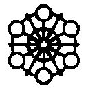

| 傷痕 | |
| 桜庭一樹 | |
| 講談社 (2013) | |
傷痕
桜庭一樹
彼──この国が二十世紀に生み落とした偉大なるポップスター、キング・オブ・ポップ──がとつぜん死んだ夜、報道がこの国のみならず、世界中を黒い光のように飛びまわった。
それから約三十分後、アメリカからの報道によると、原子力科学者会報より「終末時計がさらに五分、進んだ」ことが正式に発表された。
おりしも、重たい冬はまだちっとも終わっていないのに、溶けて北海を漂流し始めた氷山の欠片と、その上で悲しげに咆哮し続ける白い牡熊の映像や、南の国を襲った未曾有のゲリラ豪雨が、ダウンタウンの月の街──屋根がなくって毎晩月が見えるからだという──をまるごと押し流していくニュースや、季節外れの奇怪な山火事が悪夢のように南米大陸を広がる事件が続いて、彼の死亡をヒステリックに流し続ける報道の合間に、まるで世界がそれをひどく悲しんでいるかのような錯覚をさせるタイミングで繰りかえしはさみこまれた。
彼は〝偉大なる変人〟とも〝世界の友人〟とも呼ばれた。ただポップスターでありながら、さまざまな働きかけを通して、この国の歴史で唯一、ノーベル平和賞の候補に挙げられた経験のある男性だった。やがては消えていくだろう、閃光のようなチャイルドスターの一人として四十数年前にこの世に現れた後、見事に大人の、唯一無二のポップスターとして花開いた。同時に、周囲によってスポイルされた変人とも噂され始めた。二十代の後半で、銀座にあった名門小学校の廃校を聞きつけ、大金をはたいて校舎と敷地を買い取ると、奇怪な改造を施した。そこを最後の楽園と呼んで、はじめは一人で、十一年前からは二人で、棲み始めた。そして今夜、そう、今夜だ、とつぜん死んでしまうまで、コンサート以外のほとんどの時間を奇妙な楽園に引きこもった。
彼は五十一歳だった。
相棒──娘らしき、十一歳の子供が、一人、残された。
誰も、彼女がどうやって、誰から生を受けたのかを知らなかった。凄腕のイエロー・ジャーナリズムさえも、ただ噂を繰りかえすばかりで、決定的な真実を捕まえることができないままだった。
パパラッチと世間の目を恐れて、父親は彼女に、バリ島で購入したという魔除けの仮面を被らせていた。老女の如き皺を刻まれた、無表情な木彫りの面だった。五十もの要項が並ぶ守秘義務の書類にサインをした、楽園の関係者たち──それはいつも無数にいたが──以外、〝偉大なる変人のひとり娘〟の顔を見たものはほとんどいない。十一年もの間、パパラッチは敗北し続けていた。なにしろ彼女は学校に行くこともなかったし、父親に連れられて外に出かける以外は、楽園の敷地から一歩たりとも出ることがなかった。魔除けの仮面の奥にある真の表情を知るすべはなかった。
残された娘の名前は、傷痕。
──それが、わたしです。

わたしは、白くってダックスフントの胴みたいに長い、いつもの車に乗せられて病院を出たところだった。
長い車は夜を走り続けている。見慣れた銀座の街は、今夜も暗く光っている。ネオンと、カラフルな生き物みたいなタクシーの群れと、酔っぱらった大人たちの背中が揺れる。
こちらからは見えるけれど、向こうからは見られる心配のない暗いガラス越しに、外の世界を眺めていた。飛ばされてきた新聞の号外を、ほんの一瞬、目がとらえる。パパの死を伝えるゴシック体の文字が、歪みながら、また飛ばされてどこかに消えていった。
向かい合わせの広いソファに、応接テーブル。天井にはおおきすぎるシャンデリアがぎらついている。普段なら、優雅にシャンパンを飲んだり、車内電話で打ち合わせをしたりするための場所だ。
座席の向かい側に、パパ専門のエージェント会社のスタッフが座っている。亡霊みたいに青白い顔をして。となりの席にもスタッフがいて、カタカタ、カタカタと震えながら、契約上は触れてはならないはずのわたしの手のひらを、無意識にぎゅっと握りしめていた。死人のように冷えきった手から冷気が伝わってきて、わたしの体もすこしずつ震え始めた。
車に備えつけられたテレビジョンが、ニュースを流し続けている。
北の海をひとりぼっちで流されていきながら、絶望したように咆哮する白熊......。燃えさかる広大な恵みの森......。画面が切り替わると、おどろきのあまりの無表情を浮かべた男性キャスターが、またパパの報道を始めた。「今夜、救急の電話が入り、しかし駆けつけたときには......」「心臓発作との情報がありますが、薬物の過剰摂取ではないかという説も......」「アメリカからの中継です。シカゴ大学では......。つまり、正式には終末時計がさらに五分進んで、現在、我々の棲む世界は十一時五十四分......。終末の六分前に差しかかったとのことで......」
大人たちはさっきからずっと、口を開けてわたしの顔をみつめていた。真ん中におおきな穴がぽっかり開いてしまうような気がするほど、強く。彼らの表情に浮かんでいるものは、悲しみにも、驚きにも見えたけど、でも今夜いちばんおおきな感情は困惑だった。
それほど、パパの死はとつぜんのことだった。
いつもと同じように、おやすみなさい、キズアト、と微笑んで頭を撫でてくれると、静かにわたしの寝室を出ていったのだ。その後は、眠れなければ、庭のベンチに座るか、木に登って作曲をしたり思索にふけったりして、それから自分の寝室で眠りにつくはずだった。まるでいつも通りの楽園の夜だったのに。
「傷痕......」
スタッフのひとりが呻く。
「ほんとうに、ぼくらは、まさかこんなことが起こるなんて、思いもせずに......」
それきりつめたい水のような沈黙が落ちた。天井のシャンデリアがしゃらりと音を立てて揺れる。
わたしはついさっき、寝室に飛びこんできたスタッフに起こされた。寝ぼけながらも、木彫りの仮面を顔に被せ、救急車両に乗りこんだ。そのときにはパパはもう目を閉じていた。口と鼻に酸素吸入器をつけられてストレッチャーに寝かされていた。目を開けて、はい、キズアト、と優しく微笑んでくれることもなかった。
「......ねぇ」
わたしは話題を代えたくなって、
「今夜も、いるのかなぁ」
と、誰にともなく聞いた。
「親を亡くした孤児の群れみたいな、あの人たち」
仮面に開けられた二つの穴越しに外を指差してみせる。
頭上からヘリコプターの音がいくつも聴こえてくる。
ダックスフントみたいなおかしな形の車が、楽園に近づいていく。
すると、いつもよりずっとおおきな、そしてたくさんの人の叫び声が、悪夢みたいに響き渡っているのがわかった。
大通りから角を曲がると、この車をみつけて、叫びながら一斉に走ってきた。パパの名前を書いたおおきな布や、似顔絵や写真を持った男性や女性が、涙を流しながら車を取り囲む。
わたしは目を伏せた。彼らが嘆き悲しむ様子を心から追いだしていく。
「孤児の群れみたいって、傷痕。ファンのことを言ってるの？」
スタッフが問いかえしてくる。
「うん。でも、パパ自身もそういう人だったけども。なんだかぽつんとしてて。キングのくせに、寂しそうで」
「馬鹿だなぁ。孤児は君だろ。今夜からずっとさ」
あぁ、そうだった、と気づいてこっそり笑った。
──このわたしには、生まれつき母親というものがなかった。タブロイド紙が書き連ねる、華やかな母親候補たちの顔写真のほかには。そして彼女たちは、ある人は彼への慈愛に満ちた、ある人は大金がかかった守秘義務の契約に準じた、固い沈黙を守り続けていた。
おおきな花を抱えた中年の配達員が、楽園の敷地に入れなくて困ったようにうろうろしているのが見えた。スモークガラス越しでこちらが見えないはずなのに、一瞬、怒りと焦りに燃えるその目と目があったような気がしてどきっとした。
長い車は、泣き叫ぶファンたちの足をいまにも轢きそうになりながら、エンジンを唸らせて敷地に入っていく。
もとは名門小学校だったという、わたしたちの家。
内部の人びとはシンプルに、館、とだけ呼んでいる。
車が正門を抜けて、正面玄関の前で停まると、自分でドアを開けてぴょんっと飛び降りた。ドアを閉めてから......。
右手を伸ばして、ゆっくりと木彫りの仮面をはずす。
息苦しさが消えていく。
自分の顔の皮膚で、一生懸命、夜の空気を吸いこもうとする。
それから目を閉じた。
逝ってしまったばかりのパパの気配が、楽園のそこかしこにまだみっちりと満ちているのがわかった。
パパの......。
正面玄関には、いかにも冬の終わりらしい真っ青な月光が降りそそいでいた。
ふっと吐いた息が、氷の粒みたいに揺らめいてどこかに消える。
ゆらゆらと歩くたびに、子供用のピンクのブーツが、こつん、こつん、とつめたい音を立てる。
館のコンクリートの外壁は緑の蔦にびっしりと覆われていた。風もないのに、亡霊がささやくような奇妙な音をときどき立てる。
洋灯の灯る正面玄関のその奥に、闇に向かって消えていくような階段があった。古びたタイルが鈍く瞬いている。
そっと振りむく。
正門から館の正面玄関までのあいだに、ささやかな広さの校庭があった。その真ん中に、濃い紫色の箱が六つだけの特製観覧車がそびえていた。ところどころ銀座のネオンが映りこんで、箱の外側をきらきらさせながら回っていた。
楽園にはパパのちいさな友人たち、わたしと同世代の子供たちがやってくることも多かったけれど、今夜ばかりは観覧車にも誰も乗っていなくて、箱のひとつひとつまでが寂しげだった。
観覧車の隣では、楽園用にアレンジされた回転木馬も、誰もいないのにくるくると回り続けていた。馬だけじゃなく、驢馬や子牛や、いろんな動物の背中に乗れる。素敵な舞台衣装を身につけたパパの蠟人形が、山羊の背にまたがって、こっちに手を振るようなポーズで満面の笑みを浮かべていた。
腰までのばした長い髪が、わたしの代わりに、ぶるる、と震えてみせる。
正門の前に、四人。観覧車の横に、一人。回転木馬の左右にも一人ずつ。黒いスーツを身につけた大人の男性が、そろって無表情に立っていた。難解な守秘義務の書類にサインして、高い報酬を約束されて楽園のセキュリティスタッフになった男たち。いつも二十人ぐらいいると思う。彼らはここで見たり聞いたりしたものを外に漏らさないことのほかに、自分からは住人──わたしとパパだ、でも今夜からはわたし一人──に話しかけないことや、顔を覗きこんだりじろじろ見ないことも約束させられていた。だから、こんな夜でさえ、一人で立ちつくしているわたしの姿をちらりとも見ない。
上空から重たい羽音が聴こえてくる。見上げると、魚のお腹みたいに青白くてかるヘリコプターの下面が何機も見えた。
銀座の割と中心の、この場所。高層ビルやおおきなデパートに周りを囲まれている。ＪＲ山手線の灰色をした空中線路も、蛇みたいにのたくりながらすぐそばを横切っている。
こんな都会のど真ん中にいながら、パパは長いあいだプライバシーを守った。......ある程度、ではあるけど。楽園の上空いっぱいには、二十四時間、特殊な赤外線が張り巡らされていて、肉眼でも、どんなカメラを使っても、内部を撮影するどころか、一目見ることさえできない。熱狂的なファンや、パパラッチや、人並み外れて勇敢なところを見せたい若者や......外壁から侵入しようとする人はたくさんいたけれど、催涙ガスを浴びせられては逃げ帰ることの繰りかえしだった。
夜空には、海の底から見上げたおおきな魚の群れみたいに、たくさんのヘリコプターが行き来し続けている。
ファンたちの叫び声も、長く、悲しげに続く。
わたしは急に耳をふさぐと、正面玄関をくぐった。
もとは小学校だったという建物は、天井が低くできていた。
一階の廊下を曲がると、鼓笛隊の少年や、給仕、執事、カウボーイなど、いろんな衣装を身につけた蠟人形が笑顔を浮かべて立っている。
廊下の左側に続く窓から、つめたい月光が青色に瞬きながら落ちてくる。
いつのまにかわたしは、スタッフの二人に左右を固められて廊下を歩いていた。どうやら一階の応接室に向かっているらしい。頭がぼんやりしていて、疲れて深く眠りすぎた後、なかなか目覚めきれないけだるい朝みたいな気持ちだった。
隣の男を見上げて、ふっと聞いた。
「あのねぇ。終末時計ってなに？」
「は？ あぁ、さっきのニュースのことか」
「うん。なんだか不吉な名前だね」
「あぁ」
「でもロマンチックだな」
スタッフがくくっと笑った。
「へっ。君と話すと、十一歳の子供と話してるって感じがまるでしないなぁ。彼とはまるで逆だね」
「パパは永遠の子供だもの。無邪気で、楽しそうで。でもわたしは、老人。ドッグ・イヤー」
「ドッグ、なんだって？」
「犬の齢の取り方のこと。生まれてからもう十一年も経って、犬なら壮年と老人のあいだぐらいでしょ」
強がってそう言うと、
「ばかな。君の人生はこれからだろうに。ちびすけ」
スタッフはわたしの言葉を散らそうとするように、鼻を鳴らして笑った。
タイルが三人分の足音を不規則に響かせる。おおきな大人の足音が二つ。ちょこちょこと小刻みな、子供の音を一つ。
もうひとりの男が、
「終末時計っていうのはね、核戦争の危機や環境破壊によって、破滅の日が近づくのに合わせて進んでいく架空の時計のことだよ。確かシカゴの大学にあるんだっけ。地球の最後の日までを象徴として示していてね。ひどいことがあるたびに針が動かされるってわけだ」
「むずかしい話......。ねぇ、それが今夜、またちょっと進んじゃったの？ パパが死んだから？」
「うん。もちろんそれもあるだろうね。ほかにもいろんな要因があって、すべてが総合的に判断されて、針が進められたということだろうな」
「よく、わからない」
「......そりゃ、君がまだ子供だからだろ」
「ふんっ」
彼らは、パパともわたしとも自由に会話をすることは許されていたけど、からだに触ってはいけないことになっていた。パパが死んでも契約は生きている。わたしの頭にも肩にも触れずに、入れよ、と応接室を指差した。
暗い部屋。
天井のライトがつく。
もともとは校長室かなにかだったらしい。いまは壁一面に衣装をつけたパパのポスターが貼られていた。腰に手を当てて、苦しそうな、悲しそうな表情を浮かべながら叫んでいる姿。笑顔でこちらをみつめている姿。マイクに向かって屈みこんで歌う写真では、パパの周りに無数の汗がきらめいて、まるでダイヤの粒々みたいだった。
ここにもまだパパの気配が濃密だ。
スタッフが扉を閉めると、彼で溢れて息が苦しくなるほどに。
──今夜、死んでしまったなんて、ついさっきまでそばにいたのにいまはどこにもいないなんてよくわからない。
わたしはこわくなってぎゅっと目を閉じた。
それから目を開けて、窓に走りよった。
窓ガラスの向こうで、観覧車が紫色に輝きながらゆっくりと回り続けていた。月光が降りそそぐ回転木馬には、ときどき、蠟人形のパパが手を振りながら姿を現した。なにもかもがいつも通りに見えた。
また目を閉じようとした。そのとき、いろんな色の長い車が正門をくぐって入ってくるのに気づいた。きらきらした黒、かわいらしいピンク、シックに燃える赤......。スピードを出したまま、乱暴な運転でつぎつぎに近づいてくる。
ファミリーの到着だ。
外から響くファンたちの叫び声が一段とおおきくなった。
夜空を飛ぶヘリコプターは、敷地に向かって消えていくファミリーの車を撮影しているのだろう。
スタッフがテレビジョンの電源を入れた。
生中継だった。新緑みたいに眩しい緑色に塗られた、最後の長い車を上空からとらえた映像。色とりどりの車が、赤外線の炎の森みたいに映る楽園の敷地につぎつぎと飲みこまれていく......。
遅れて音声が入る。
「この車は、どうやらいちばん上の兄のもののようです。しかし、とくに仲がよかった姉の......。彼女はまだ現れませんね......。あぁ、いま首都高速を走って銀座に向かっているようです。高速上空のヘリに中継を交代します......」
心臓がびくっと飛びあがるような、マイク越しのヒステリックな声。
わたしのおびえた顔に気づいて、スタッフがいそいで音声をちいさくした。
窓の外では、サバンナの野生動物みたいにお腹を揺らしながら、校庭をくるくると回って、長い車たちが正面玄関に停まったところだ。
セキュリティスタッフがその前に立つ。
どやどやと降りてきたファミリーが、応接室の窓に薄ぼんやりと浮かびあがるわたしの顔をみつけると、胸に手を当てたり、苦しそうに頭を揺らしたりした。
どの顔にも、もちろん悲しみや恐怖が浮かんでいたけど、スタッフや外に集まっているファンたちのそれとはなにかが絶対的にちがって見えた。ずっと隠していた古い傷痕が、今夜、外に出ちゃっただけというような。長いあいだひっそりと溜めてきた感情が、ついにコップの外に溢れだしたような。
窓に両手のひらをつけて、わたしはガラス越しに彼らとみつめあった。
月光の廊下を進んで、青い光を薄布みたいにからだにまといつかせたままで、ファミリーが音もなくはいってきた。
十歳に満たない、ということはいまのわたしよりもずっと幼いときに、チャイルドスターとしてのキャリアをスタートさせたパパと、長いあいだ運命をともにした人たち。血と人間のかたまり。
鋼鉄製の真っ黒な車椅子に乗せられた、小柄な老婦人。
パパのお母さん。わたしの祖母だ。
ハイテクノロジーでつくられていて、ボタン一つでいろんな動きができるはずの車椅子を、手動で押して母親に付き添っているのは、パパの兄。長兄で、子供のころはパパと一緒に歌っていた。いまでは不動産業についていて順調らしい。後ろに妻と、もう大人になった息子と娘たちもいる。
遅れて祖父も入ってきた。パパを一流のチャイルドスターに育てた厳しい父親だ。
次兄とその妻や子供たち、弟もいた。
誰がどの色の車に乗っていたのかはわたしにはわからない。
全員、わたしの顔を見て黙りこんだ。祖母が車椅子の上で、北風に揺られる案山子みたいにぶるっと震えてみせた。
「あぁ、傷痕！」
「......病院から、ここに？」
わたしはちいさな声で問いかけた。
「えぇ！ すぐに駆けつけたけれど、手遅れで。それに警察もマスコミもひどくうるさくてねぇ。だから向こうはそれぞれの弁護士に任せて、ひとまずみんなでこちらにね。あなたがひとりだと聞いたものだから」
次兄が大股でこっちに近づいてきた。パパのとよく似た、悲しい動物のような目をしているけど、ぷくぷくと太って、ファミリーの中でもとくに穏やかな空気をまとっている。
「そんな話、いいだろ。子供の前でさ」
そうつぶやきながらわたしの手を握りしめて、ついで肩を抱く。
「そうね。そうだわ。あぁ、それにしても、今夜はなんということ......」
「なぁ、心臓発作だって？ ほんとうか？ しかしとつぜんだ。薬物の過剰摂取とも報道されているが。傷痕、君はなにか知らないか」
長兄が焦ったようにおおきな声で言ったので、わたしは首を振った。長兄のほうはパパとはそんなに似ていなかった。男性的でしっかりした顔立ちに、分厚い胸板。妻が腕をのばして夫を止める。
黙って仁王立ちしていた祖父が、とつぜん怒りに満ちた声を上げた。
「──殺されたんだ！」
祖母がさえぎろうとした。
「お父さん！ やめて、こんな子供の前でそんなこと！」
「あいつがくたばるはずはない。見た目は細くてなよなよしていたし、泣き虫で困ったもんだったが、しかし魂はちがった。鋼のような息子だった。あいつが俺より先にくたばるはずがない。誰か、くそいまいましいやつにはめられたんだ！」
「お父さんったら......」
「あいつがくたばるはずがない！ 俺はあいつを、人生に負けるような男には育てなかった！」
怒りと戸惑いにあふれて、祖父の体は真っ赤な炎柱になったみたいだった。ボウッと音を立てて燃えあがる。皺の寄った頰にガソリンのように熱そうな涙をこぼし始めた。
それから聞き取れない声でなにかを言うと、崩れ落ちた。両手で頭を抱えて激しく泣きじゃくる。
つられて、長兄の息子と娘たちも一斉に泣きだした。
怒りや悲しみ、おどろきの涙が広がっていく。わたしは黙りこんだままで、嵐の真ん中にばかみたいに突っ立っていた。
上空のヘリコプターが増えたようだ。轟音が近づいてはまた遠ざかる。
と、弟がぼそっと、
「弱ってたんだよ。兄さんはずっとね」
「あいつはけっして弱らない！ 鋼の息子だ！ 男の中の男だ！」
「でも、それは若いころの話だろ」
ポスターの中でポーズを取る、ステージ衣装姿のパパを指差して、
「ヘアウィッグと衣装を取って、化粧も落としたら、もう老人みたいに瘦せてたんだぜ。ずいぶん弱ってた。普通の人の何倍もの速度で走った。だから誰よりも早く齢を取ったんだ」
あぁ、ドッグ・イヤー......。
と、わたしはのどの奥でつぶやいた。
「おまえになにがわかる！ やつとはずっと会っていなかっただろうが！」
「それはみんな同じだよ、父さん」
一家の主に向かって反論しようとする末っ子の声が、縮みあがってかすれ始めた。
「会ってもらえなかったんだもの。ぼくのほうはいつだって兄さんの顔を見たかったさ。かわいい弟だったはずだし。赤ちゃんのころに抱いてもらってる写真もあるだろ」
「おい、見ろよ」
長兄がテレビジョンを指差した。
ファミリーは一斉にそちらを見た。
この国でもっとも有名な、といってもよい往年の大女優が映っていた。堂に入った着物姿に、魔物みたいに白い化粧。フラッシュを浴びて、唇にひいた紅が暗闇にのっとりと浮かびあがる。
病院の前だった。ついさっきまでわたしたちがいたところ。
パパはチャイルドスターのころから、年上のこの女優とのとくべつな友情を大事にしていた。彼女もパパと同じく、幼いころから銀幕に立ち続けた人だ。二人は長いあいだ、子供にはたいへんすぎたころの記憶をわかちあって、親しくしていたという。友情はきっとほんものだったのだろう。パパが健やかなるときだけじゃなく、スキャンダルに追われてぼろぼろだった時期にも、この人だけは、周囲がおどろくほどのがんばりで庇い続けたらしいから。
マイクを向けられても、問いかけられても、大女優は黙って立ち尽くしていた。
「あれっ、このひと、このままぼけちまうんじゃないの。もう齢だし」
弟がふざけているような言葉で、でも心配そうにつぶやいた。
カメラが切り替わる。
こんどは、どこの町なのか、ずいぶん簡素なアパートの前だった。とつぜんカメラを突きつけられた主婦が、びっくりしたように口を開けてみつめかえしてくる。
「誰だ？」
「あっ......」
お化粧を落として、ちいさな子供を一人連れて、ダッフルコートにジーンズという服装をしているせいでわからなかったけれど、これは、十年ほど前まではメディアでおなじみだった女性ギタリストだった。
銀に染めた長髪を逆立てて、黒革の衣装を身につけ、獣みたいな激しさでパフォーマンスする女性だった。パパはそんな彼女にむりに首輪をつけて、ステージを引きずり回すようにしながら歌った。ある時期、彼女との共演がとても多かった。といっても、二人のあいだに恋愛の報道はなかったらしいけど。
マイクを向けられてしつこくコメントを求められても、彼女はなにも言わなかった。ただカメラをみつめかえして黙りこくっていた。おどろきに凍りついたような顔つきが、ギタリストの感じている悲しみと戸惑いをはっきりと伝えてきた。
カメラがまた切り替わる。
ヘリコプターの映像だ。海みたいな青に塗られた長い車が走っている。赤外線に守られて燃える敷地にゆったりと吸いこまれていく。
と、窓の外で、同じ色の車が正門を抜けて走ってくるのが見えた。ほかのファミリーの車とちがって、落ち着いた静かな運転だ。音もなくブレーキをかけて停まる。女性運転手が降りてきて後部のドアを開けた。
と、毛皮に身を包んだ、しなやかな身のこなしの女が飛び降りてきた。
背が高い。からだをすっくと伸ばし、まるで若い男の子みたいに見える。
長い髪が冬の風に揺らめく。彫りが深くて整った顔立ちは、きょうだいたちの中でもパパによく似ている。
サングラスをはずすと、化粧が涙で崩れて頰に黒い川をつくっているのが見えた。皮膚が硬くなって、目の下に皺も浮かんでいる。
壮年の女性はサングラスを投げ捨てると、黒い毛皮ごと体を震わせて、両手をぐっと握りしめた。のどを振り絞ってパパの名を呼ぶ。
辺りが静まりかえる。
外からのファンの声も一瞬、止まった。それからさらに激しく、パパの名と一緒に、その女性──ファミリーの一員で、パパのすぐ上の姉──の名を叫び始めた。
孔雀、と。
その声に呼応するように、祖父もまた怒鳴り始めた。
姉の悲しみ。
祖父の怒り。
月光が波のようにのたくりながらファミリーに押し寄せてきた。
わたしはこわくてたまらなくなってきて、手にしていた魔除けの仮面を大急ぎでまたかぶった。ほんとうは敷地の中ではしなくてもいいのだけれど。
弟がふっと皮肉に笑った気配がした。
大女優の名と、元ギタリストと、姉の名を、呪文を唱えるように繰りかえす。
それから、仮面の穴越しに見上げてくるわたしを指差して「今夜は、この子のマザーズが勢ぞろいだな」と皮肉に笑った。
──三人の女は、タブロイド紙に定期的に載るわたしの母親候補たちの記事で、面白半分に出される名前の常連だった。姉の場合は、父親は別の男性の精子提供を受けているのだろうというばからしい仮説だ。
ファミリーはいつのまにか応接室のあちこちに収まっていた。祖父は革張りのソファにどっかりと座りこんでいる。向かい側に長兄と次兄が。祖母が傍らにわたしを呼び寄せると、やさしく手のひらをあわせた。あとの人たちは立ったままでお互いの顔をぼんやりと眺めあっていた。
弟が静かな声で、
「なぁ、傷痕よ。君がほんとうに兄さんと......つまり、ぼくたちファミリーと血が繫がっているのかどうかは、わからないだろ。もちろん、兄さんの遺産のほとんどは君に相続されて、ぼくらのうちの誰かが、君が成人するまでの後見人になるんだろうが......。でも、ほんとうにほんもののファミリーなのかは、さ」
「やめなさい」
祖母の叱責が響く。
だが、皮肉な声で弟は続けた。
「またしばらく、ＤＮＡ鑑定したがる世間のやつらに追いまわされるだろうよ」
「......わたしは、ぜったいにみつからないところに逃げるもの」
仮面の奥からちいさく宣言すると、弟は、どうかな、というように肩をすくめた。
ふっと苛立ちを感じた。昔はともかく、もう何年も、パパにとってのファミリーはわたし一人だったのに、と。
そのとき、弟がふいにわたしの頭を乱暴に引き寄せると、自分の胸に押しつけた。弟のおへそ辺りに仮面が硬く当たった。
わたしは抵抗せずにおとなしくしていた。弟が、声を出さずに全身で泣いているのがわかったからだ。弟の横隔膜が、お腹の肉の向こうで痙攣していた。悲しみや喪失感や後悔がつたわってくる。わたしからも両手を広げて、抱きついた。
いま感じたばかりの苛立ちをすこし悔いた。わたしも彼らも、パパのファミリーにちがいない。太陽みたいに眩しかったパパから、今夜とつぜん置いていかれてしまったのも同じなのだ、と。
弟がわたしを抱えたまま、くるっと回ってみんなに背を向けた。横隔膜がさらに小刻みに震え始めた。兄さん、兄さん......と、失った人を呼ぶ声が響いてきた。
そのとき応接室の扉が開いて、姉が入ってきた。抱きあうわたしたちを見るなり、姉も駆けてくる。テーブルをひらりと飛び越え、横に立った。
わたしは彼女にも腕をのばした。その手をぎゅっと握られる。
血の通ったおおきくてあったかい手のひらだった。
「そうして、この子が残されたってわけなのね」
彼女が震える声でつぶやいた。
「ちいさな娘だけが......」
ヘリコプターの轟音が、この世の終わりみたいにまた近づいてきた。
続々と楽園に集まってきた大人たちが、事態への対処と今後のファミリーについての会議を始めたので、わたしはスタッフに連れられて応接室を出た。
テレビジョンでは、歌手や俳優など、彼の〝友人たち〟がマイクを向けられては、涙をこらえながら語っていた。誰もがとつぜんの出来事におどろいているようだった。
「あいつら、いままでいったいどこにいたんだ？」
扉から出た途端に、スタッフの一人、若いほうが不思議そうにつぶやいた。
もうひとりが、静かな声で、
「誰のことだよ」
「いや、誰も彼もだよ......。まず、今夜駆けつけたファミリー。ぼくは彼のもとで働きだして四年になるけど、あの姉さん以外はここで姿を見たこともないよ。そりゃ昔は、強い絆で結ばれた芸能一家だったんだろうけどさ。電話だって、ここ数ヵ月でかかってきた記憶があるのは弟ぐらいだしな。そしてその電話にも......」
言葉を切って、
「彼は、出なかったよ」
「強い絆ほどむずかしい。時が経つほどにね」
「それに！」
言葉が強くなる。
廊下の古びたタイルが暗みを増した月光に覆われて、まるで海の上を歩いてるみたいだった。息苦しくなってきて、わたしは仮面の奥で顔をしかめた。でも外から見れば、相変わらずの分厚い木彫りの皮膚なんだろう。
スタッフが苛立ったように、
「いまマイクを向けられてる、豪華な友人たちだってさ。誰もこの館に遊びにきたことなんてないじゃないか」
「まぁな」
「彼はいつも一人だった。あぁ、いや......傷痕、君と二人きりだった。毎日さ」
「昔はちがったんだよ。すこしずつ変わってしまったんだ。彼には受けとめきれないほどいろいろなことがあったから」
中庭に出る扉の前で、わたしは足を止めた。
スタッフたちも立ちどまって、ついでわたしを目で追った。
重たい鉄の扉を開けて外に降りると、とても寒かった。息が氷のきらめきに変わる。
中庭は花壇と動物園だ。カラフルな囲いの中に、インドの奥地から取りよせた巨大な象がいて、立ったままで深い眠りについていた。月明かりがその姿を照らしていた。孔雀の檻では、闇夜に求愛するように、雄の孔雀がうつくしい羽根を広げて踊っていた。音もなく、光もほとんどない、そのステップ。
花壇にはいろんな花の葉が瑞々しく茂っていた。夜露に濡れる葉が風にぷるるとやわらかく揺れた。
「あんなに、パパを叩いてた人たちが......」
ふっと仮面から声が洩れた。
「今夜はびっくりして、で、もう悲しみ始めてるのね。へんなの」
そうつぶやくと、スタッフが後を追ってきながら「傷痕。それは、ジャーナリズムの話？」と聞いた。
「うん、そう」
年配のほうのスタッフが、
「彼はけっして倒れない男だと思われていたからね。ぼくたちも毎回、対応には苦慮したけれど、とても止められる相手じゃなかった。彼ほどおおきなものはこの国にほかになかったから、叩くほうも遠慮なく力いっぱいになったんだ。そういや、ひとり、しつっこいルポライターがいたな......。もう何年も、実体のないスキャンダルを追い続けてるやつが......。彼は、元気いっぱいに歌ってみせる男の子、かわいらしいチャイルドスターから、年頃のセクシーな少年になり、やがて両親の庇護下を離れて青年になると、華やかなポップスターに変化した。誰もが喜ぶ、心地よい閃光のような魅力を生来、持っていた。一方、ボランティア活動にも積極的で人柄も穏やかだったが、力が増すにつれ、奇行と呼ばれるものも増え、偉大なる変人として生きながら伝説になっていった」
「ん......」
「ま、その奇行のひとつが君だけどね。なにしろ、君がどこからきたものか、誰も知らない。どういう方法で誰に生ませたのかさえね」
「わたしも、知らない」
「ふん。どうかな？」
「ほんとだもの」
「まぁ、ともかく、彼のようなスターは今後はもう現れないだろう、と一部では言われているよ。なにしろ世界はどんどん狭くなっている。インターネットの発達によっても、情報は細分化され、人びとの意識もまた好き勝手に四方に飛び散る一方だ。大衆にある程度受けいれられる、ちいさくて感じのいいスターや、ある分野のマニアックな旗手は、これからだっていくらでも生まれては消えていくだろう。でもいわゆるビッグというものは、今後はけっして出ない。誰もが認める〝まるでメジャーな神のような〟スターはね。だからみんな彼を惜しむ。この国で最後のビッグ。それが今夜、死んでしまった」
「世界の細分化なんて、どうでもいい」
と、つぶやいた。
中庭の空気には、パパの不在がもう届いてしまっているみたいだった。悲しみと罪悪感と怒りと──月光のような色をした感情が、次第に館をみっしりと取り巻き始めたようだった。
世界の細分化なんて、どうでもいい。
わたしの親はあのひとだけで、そしてあのひとは今夜、どこかに去った。
目を閉じると、わたしの髪に触れて、耳元で、キズアト、と呼ぶやさしい声がよみがえってくる。
館にはパパの友人──元気な子供たちが繰りかえし訪れたけれど、彼ら、彼女らはみんな、一晩経つとそれぞれの家に帰っていってしまった。楽しく遊んだ時間の後は、パパとわたしと蠟人形たち、それから影のように歩き回るセキュリティスタッフだけが残された。
頰に手を当てる。指が仮面にぶつかってコンッと鈍い音を立てた。
わたしはインド象のおおきな体をしばらく見上げてから、きびすを返して、中庭から館にもどった。
冷えきった廊下に一歩はいると、応接室からファミリーの話しあう声が聞こえてきた。子供にはわからないむずかしい話みたいだった。わたしは正面玄関を抜け、校庭に出た。
あちこちに立つセキュリティスタッフが一斉にこちらを見た。それから、呼吸を合わせたようにそろって目をそらした。
ヘリコプターはさらに増えていた。互いにぶつからないのかなと心配になるぐらいの近さですれ違い、旋回し続けている。
外にいるファンたちの声もますます増していた。泣き声と彼を呼ぶ声があわさって夜空に上がっていく。まるで親のない子供たち、寄る辺ない無数の魂が、なにかおおきな力を持つものからの救いを求めて叫んでるようだった。
増していく月光。
なんだか息が止まりそうだ。
わたしは駆けて、回り続ける観覧車に近づいた。紫色の箱に飛び乗ると、扉を閉めた。
ゆっくりと木彫りの仮面をはずす。皮膚全体でまた呼吸する。首をかしげたら、涙が一滴ぽろりと零れた。
寒さで息が灰色に染まった。
観覧車のそばに、両足を肩幅ぐらいに開けて立ち、背中で手を組んでいたセキュリティスタッフが、それにつられたようにふっとこちらを見上げた。あっ。彼らはわたしたちを──今夜からはわたし一人を──直接見ちゃいけないはずなのに、とひやりとした。中年にさしかかったところらしきその顔に、どこかべつの場所で見覚えがあるような気もして、戸惑う。
男はわたしの涙をみつけて、目を見開いた。それから考えるより前にからだを動かしたように、駆けだした。校庭の地面を蹴り、夜空に上がり始めていた紫の箱に腕をのばしてぶらさがる。
おどろきのあまり、黙って見下ろしていた。
そばにいたべつのセキュリティスタッフが、あわてて駆けてくるのが見えた。
「開けて！」
と言われてのろのろと開けた扉から、男がむりやり中に入ってきた。
床に座りこんだわたしと、間近で目があう。
わたしの長い髪を革靴が乱暴に踏む。ぞっとした。
男はというと、心配そうな表情でわたしの顔を覗きこんでいた。指をのばして、頰の涙をぐいっと拭く。
紫の箱はゆっくりと上昇を続けている。
セキュリティスタッフたちがぽかんとしてこっちを見上げていた。無線機でどこかに報告する姿も見える。
「......あんた、大丈夫かよ」
低い声で聞かれた。
いかにも大人の男らしい、押し殺した声だった。気味が悪くなって思わず後ずさったけれど箱の中には逃げ場はなかった。
わたしは責めるように強い口調で、
「あのね。触っちゃいけないんだよ」
「なにに？」
「わたしに。あと、パパにもだめだった。ここの住人に話しかけるのもだめ。目を合わせるのもいけない。あなた、首よ」
「えっ、そうだったっけ。なにしろ雇ってもらったばっかりで」
「書類にサインをしたはずでしょ」
「あんなの、分厚すぎてとても全部は読めないよ。ただ、あんたの顔が......あんまり寂しそうだったもんだから。......よいしょ。座るよ。大人にはちいさいな。玩具みたいな座席じゃないか」
子供用の観覧車の座席にむりやり座って、男はわたしに笑顔を向けた。やけに馴れ馴れしい笑顔だった。
顔と顔が近かった。そういえばパパとも、こんなふうに鼻がぶつかりあいそうになるほど近づいてしまって、くすくす笑いあったことがあったなと思いだした。
狭いところに閉じこもったせいか、氷をはらんだようだった空気がすこしずつ温かみを増してきた。そのことにも戸惑いながら、
「その齢で雇われたばかりなの？」
男は人のよさそうな笑顔のままで、
「いや、そりゃ仕事はしてたよ。当たり前だろ。けっこう偉い人だったんだぜ。でも首になった。景気が悪いし。子供がいるから遊んでもいられなくて、仕事を探してて。うちの息子はあんたよりちょっと上かな。もう中学生だから」
「......中学生」
「そう。で、息子より年下の子が、一人で泣いてたから、たまらんと思って。気づいたら走ってた。はぁ、これで首か。まったく、くだらんほど俺は馬鹿だなぁ」
男の向かい側に座った。
片手にはずっと木彫りの仮面を握りしめていた。男がしげしげとみつめているのに気づいたけれど、いまさら被りなおすわけにもいかなかった。知らない男に、仮面の奥の顔をこんなに間近から見られるなんて困ったことだった。でも、この人も守秘義務の書類にサインをしているから、わたしのことをどこにも漏らせないはずだ。
箱が上昇するにつれ、ヘリコプターの音が近づいてくる。向こうからはなにも見えないけれど、こちらからは、開け放した扉から身を乗りだすカメラマンやリポーターの顔がわかるほどに。
「彼のことはよく知らなかったけどさ」
「それ、ほんと？ パパはこの国でもっとも有名な男だって、みんな言うのに。政治家よりも。芸術家よりも。誰よりも」
「あいにく音楽は聴かないんでね」
「社会現象になるほどのものでも？」
「平和活動で表彰されたとか、よくわからん奇行の噂は、そりゃ耳に入ったけど。でも仕事も忙しいし。あんたのことは知ってたよ。いつも、その......」
と、男が木彫りの仮面を目で差した。
「おかしなものを顔につけさせられて。どんな変わった子に育つんだろうと思ってたけど......」
顔を近づけて、じっとみつめる。
「なんだよ。ごく普通の小学生じゃないか。......そんな、泣きだすなよ。うちの息子だってもうそんなふうに赤ちゃんみたいには泣かない。ほら、これで鼻を擤んで」
顔に押しつけられたティッシュで涙を拭き、鼻を擤んで、からだに沁みついた癖でティッシュをコートのポケットに用心深くしまった。「なんだよ、おじさんが捨てておいてやるよ」と手を出されたけれど、いいの、と頭を振った。
男は感心したようにうなずいて、
「しつけがいいんだなぁ。うちのなら、そこらへんにポイと捨てては俺に怒られる」
「パパは厳しかったから」
「えっ、そうなのか？ 意外だな。金に飽かせて子供になんでも買ってやるような、酔狂な金持ちだろうって思ってた」
「しつけにはうるさかったの。でも......すごく優しかった」
わたしは涙を拭き、知らない男にとつとつとパパの話をした。
ここでなにを聞いても、どうせ外の誰にも漏らせないのだから、と......。
観覧車は紫色に輝きながら冬の夜空をゆっくりと回り続けていた。
もうすぐ地上に着く、というころ、男が名残惜しそうにわたしをみつめ始めた。目の光から、悲しみや慈しみが伝わってきた。
目をそらして外を見ると、観覧車の周りにはエージェント会社のスタッフやセキュリティスタッフ、それにファミリーも遠巻きにするように集まっていた。鋼鉄の車椅子の上で縮こまった祖母が、心配そうに両手をあわせてこちらを見上げている。
誰もが、地上に着くまでは男を刺激しないように、と黙ったまま、でも怒りに体を震わせているのがわかった。侵入者たる男に。そして、彼のひとり娘なのに他人に隙を見せてしまったわたしに。
男が困ったようにごりごりと首をかいてみせた。
「うわっ。あぁ、俺はほんとに首みたいだな」
「......そりゃ、そうよ」
「名残惜しいよ、傷痕。こんなところにちいさな子供を一人残していくなんて。だって、ここはおかしな場所だろ。あんたの父親はやっぱり常軌を逸してたと思うぜ......」
「ここは、楽園よ」
そう答えると、男は厳しげな声で、
「そうだとしてもさ、人は楽園なんかで生きるべきじゃないし、地に足をつけて、一歩一歩踏みしめて歩いていくべきだろ。たとえその地が荊に満ちているとしても。楽園なんてくそみたいな場所に閉じこもるよりもずっといいさ」
心の中だけで、あなたにパパのことはなにもわからない、と返事をした。
「あぁ、着いちまった。お別れだな、傷痕......」
男が急にこっちを向いて、乱暴な仕草でわたしの頭を抱きよせた。急いで髪を撫ぜる。
......つっ。
わたしは目をカッと見開いて、男が自分にしたことを認識した。
男が耳元でささやく。
「あぁ、傷痕......」
「息子なんて、ほんとにいるの？ それとも噓？」
「えっ？」
地上に着いた。
音もなく扉が開けられて、男が引きずりだされた。冬の夜のつめたい空気がからだを取り巻いた。ファミリーが駆け寄ってくる。姉がしゃがみこんで、豪華な毛皮のコートでわたしを守るように抱きしめた。わたしはもがきながら逃れると、人差し指で男を差した。
男はセキュリティスタッフに羽交い絞めにされたまま、どこかに連れ去られようとしていた。口を押さえられていて、なにもしゃべれないらしい。セキュリティスタッフのほうも一声も発しなかった。静かだった。
「......待って」
わたしが男を呼び止める声が響いた。
男の目に光がもどる。
ファミリーやスタッフたちが、とがめる目つきでわたしを睨んだ。まさか見知らぬ男との別れを惜しんでるのか、おまえの気概を見損なったぞ、彼のひとり娘なのに、と責めるように。
ちがうの、とわたしはゆっくりと首を振った。
「その男の荷物を調べて。ポケット、下着の中、それと......口の中も」
「どうした、傷痕？」
年配のスタッフが厳しい声色で聞きかえしてきた。
「髪の毛を抜かれたの」
「......髪っ？」
最後に抱きよせられたときに、ちくっ、と頭皮にかすかな痛みを覚えた。
涙を拭かせたり鼻を擤ませたりしたティッシュは、わたしがちゃんと自分のポケットに回収した。すると男は最後のチャンスにかけた。別れ際に、髪の毛を一本......。
「なるほど。ＤＮＡ鑑定、か」
スタッフが向きなおって、男の顔をよく見た。
「傷痕の髪の毛を一本、手に入れたら、どこからいくらもらえる契約なんだ？ どこの制作局、もしくは大手タブロイド紙に雇われた？」
すると男がふてくされたように目を伏せた。
ヘリコプターの音が夜空に響いている。
顎をつかんで間近で男の顔をじっと見たスタッフが「あれ。なんだよ、こいつは滋田夏生じゃないか」とあきれたようにつぶやいた。
「誰？」
「誰って、おまえ、もう十年以上、彼のスキャンダルをしつこく追ってる例のジャーナリストだよ。しかし、いったいどうやってここまで潜りこんだんだ？ 騒ぎに乗じてうまくやったか」
「あぁ、この人は......」
わたしはふいに思いだした。
どうして、目があったときに見覚えがあるように感じたのか。
今夜、病院から長い車に乗って帰ってきたとき。正門前にいた花屋だ。配達にきたものの入れないという様子で、困ったように立ちつくしていた......。
楽園にこっそり侵入する機会を探していて、あの後、うまくやったんだろう。
「おい、いてぇだろうが！ どこを引っぱってんだよ、触るんじゃねぇよ！ どこに潜入したっていいだろうが。こっちはこれが仕事なんだよ。てめぇらこそよ、頭のおかしいスーパースターなんぞに雇われて、みじめな大人たちだぜ。おい、放せよッ！」
男が全身を震わせ、わめき始めた。さっきまでとはまるで別人みたいだった。人のよさそうな笑みはなくなって、代わりに、目にはいかにも抜け目のない光を、そして全身からは怒りのエネルギーを発散させていた。
「俺に手荒なことをしたら、全部記事にしてやるからな！ そこにいる、大威張りの、ご大層なファミリーの皆さんも同様だぜ。貴様らはみんな、あのくそみたいな犯罪者の共犯じゃねぇか。いつか暴いてやる。世間にほんとうのことを知らせてやる。救世主ぶったあいつのほんとうの姿を、悪魔の恥部をさらしてやるんだ！ 社会正義のためにな！」
「もう死んだのに、か」
聞きかえしたのは、祖父だった。あきれて、そして疲れきった声色だった。あのたいへんな日々がまだ続くのか、と。
頭上からヘリコプターの音が響く。
夜空は月光にますます青く染められている。
男は憎しみをこめて祖父を睨んだ。
「死んだから、だよ。これからがあいつの悪行の本番だ」
「本番？ どうしてだ」
「死ねばますます神格化されるのが常だ。なにもかもが美談になり、彼は音楽の面でも平和の使者の面でも、再評価され、再構築され、いちどそうされた後はもう、真実を告発しても誰も耳を傾けてくれなくなる。俺はな、そういう社会の欺瞞がとことん許せねぇんだ！」
男はずるずると引きずられて遠ざかっていく。
わたしを指差しながら、
「そこにいる大事な娘だってさ。どうやって生まれたのかわからないって、いってぇどういうことだよ。そんなことがあっていいのかよ。母親がわからないって、どんだけ辛いことか、あいつはほんとにわかってたのか。罪もねぇ子供をこんなところに閉じこめて、仮面なんてつけて育ててよぉ」
「自分にも子供がいるっていう話は、噓？」
わたしの問いに、ふいに男は表情を変えた。
そうすると、ついさっき二人きりで夜の観覧車に揺られていたときと同じ、人のよさそうな顔つきにもどった。どちらの吐く息も白く染まっている。
「......ほんと、だよ」
じっとわたしをみつめる。また気味が悪くなって、わたしは一歩後ずさった。
「母親に逃げられちまって、いまは男親の俺一人で育ててる。今夜もひとりで俺の帰りを待ってるところだよ。さっき、心配して電話をくれた」
と、うれしそうに言った後、なぜかうつむいて唇を嚙んだ。
「やっぱり」
「え？」
「噓はついてないと、思った」
「......噓じゃねぇよ！」
男は顔をしかめた。
「傷痕、俺はあんたには噓をつかない」
今夜、初めて会ったのに、馴れ馴れしくて親しげな言葉だった。でもわたしは、パパというスーパースターを通して自分が有名だということに慣れきっていたし、よく知らない人がこうやって愛情深く接してくることを、もうあまり気にしなくなっていた。
男はうつむきながら、
「息子が大事だよ。自分でもおどろくほどな。所帯を持って、子供ができるまで、自分がまさかそんなふうになるとは思ってなかったんだが。そんなのもともと持ってねぇと思ってた、無償の愛とやらが、からだのどっからか勝手に溢れだした。だからこそ、ますます彼を許せなくなった。とくにあの事件についてはな。真実をみつけるまで俺はけっしてあきらめねぇつもりだ」
セキュリティスタッフが男をひきずっていく。
それにつれて、男の目つきがまた憎しみに満ちていった。
「傷痕！ 子供を喰う者を、俺は許さねぇ。君の父親は、スーパースターなのか？ それともモンスターか？ 君は知ってるのか。それとも楽園でスポイルされすぎて、なにも知らされていないのか。彼の人生には女性との恋愛スキャンダルが極端に少なかった。それに、君が生まれる前に、二度、幼い女の子の両親から訴えられてるんだぞ。児童とのあいだに不適切な関係があったと。潔白なら裁判で闘えばいいのに、彼の弁護団は二度とも示談にした。結果、女の子たちの両親は多額の示談金を手に入れた。そしてその騒ぎの後、この世のどこからかとつぜん現れたのが、君だ。誰かに生ませた、彼だけの子供。君は......。なぁ、君も......？」
わたしは黙っていた。
男はいちど言葉を切って、
「......そして、君が生まれた後も、一度、べつの子供の両親から訴えられた。だがそのときだけはなぜか裁判で闘い、勝訴した」
「知ってる」
わたしはうなずいた。落ち着いた声で、
「最初の二度は、パパはたくさんの時間と力を裁判に奪われて創作活動が進まなくなることを恐れたんだって。それから、女の子たちを追いつめることも。三度目のときは、もうわたしがいたから......。わたしのために名誉を守ろうとしたの」
パパは争いごとを好まなかったから。
男は力いっぱいセキュリティスタッフに抵抗しながら、
「噓だ。あいつの素顔は悪魔だ。俺は知ってる。世間のやつらも、今ではもうみんな察してるくせに、見て見ぬふりを続けてるんだ」
ファミリーが怒りの声を上げた。長兄が大股で男に近づいていく。男が睨みかえす。次兄が止めて、小声で「やめろ。なにを言ったって、おかしな記事にするだけの屑みたいな連中だよ......。いままでと同じことの繰りかえしだ」とささやいた。
男が不敵な笑みを浮かべたままで辺りを見回した。
つめたい風が吹きぬけていく。
そのとき、今夜のとつぜんの事件で麻痺し続けていたわたしの心が、なぜかゆっくりと溶けていった。もとのやわらかなものにもどっていく。
パパの笑顔。朝起きたとき、バスローブ姿で迷子みたいにうろうろする姿。わたしの食事マナーを叱ったり、家庭教師への態度を注意したりと、厳しかったときの横顔。目には見えないあたたかななにかが常に溢れていたこと。日々、眩しい光で照らしてくれたこと。
キズアト、と呼ぶ声の、幸福そうな響き。
はい、パパ、と答えるときの、喜びでちくちくするほどの、熱。
楽園で二人きりで過ごした、長くて短い時間。
わたしはよろよろと歩いていき、小声で男を呼び止めた。さっきスタッフから聞いた名前で。
男が顔を上げて、心配そうにわたしの表情を読もうとした。
また涙が溢れる。
パパはほんとうにもうすでにここから去っていて、わたしだけ残されていて、このまま独りぼっちなのだ。
「あの人はいい父親だった」
夜空を見上げると、飛び交うヘリコプターの向こうに、暗い空間がどこまでも広がっていた。
パパのいなくなった世界が広すぎて、どこになにがあるかまるでわからない知らない場所みたいで、わたしはどこでもない暗い夜空に転がり落ちていまにも消えていきそうな気がした。
男がなにかを言おうとした。そのとき、男を取り押さえていたセキュリティスタッフの一人で、まだ若い男が急に、
「いまの、ほんとだよ」
全員がぎょっとして、黙ったまま若いセキュリティスタッフを見た。
「この子はへんな子だけどさぁ、言ってることは噓じゃないって」
「おい、おまえっ」
長兄が声を荒らげた。と、セキュリティスタッフがおおきなからだをすぼめ、早口になって、
「その子と彼は、なかなか悪くない親子っていうふうに見えたぜ。すくなくとも俺が勤務していたときには、だけどね。彼にとってはその子がすべてで、その子もまた父親が全部っていうふうだった。俺もさ、幼いころに、自分の親父がこんなふうに目に見えるように愛してくれてたらなぁって思いながら見てた。そんな記憶があったら、俺の人生ももっと楽しくなったかもなって。えっと、だから、その......」
「おまえも首だッ！」
長兄の声に、セキュリティスタッフは一瞬、絶句したけれど、仕方ないというように軽く肩をすくめた。
「わかりました。それに、どうせ遠からず楽園は閉鎖されるんだよな。なにしろ彼がいなくなったんだからさ」
「守秘義務は守れよ」
「あぁ、契約は覚えてるって」
男たちが遠ざかっていく。
ヘリコプターの音がまたおおきくなる。
と、それを縫うように男の声が届いた。誰に問うわけでもなく、体からどっと溢れだした叫びだった。
「やつが、いい父親だったって？」
「もう黙れ。出ていくしかないんだって。わかるだろ」
「──そんなはずはない！ おまえらはみんなで噓をついてやがるんだ！」
男の声に、みんな一斉に動きを止めた。
祖父がからだを震わせた。次兄と弟も顔を見合わせ、息をつめて男を睨んだ。
「それに、じゃ、いったいなぜ死んじまったんだ。病院からの情報だと、死因は薬物の過剰摂取かもしれないって。それって事故なのか？ 自殺なのか？ それとも......」
「黙りなさいっ！」
老いた祖母が、車椅子の上で唸った。
その場にいる誰もが立ちつくしていた。
と、次兄と姉がはっと我にかえった。右と左から、わたしを慰めるように手をのばしてくる。
それを避けるように、わたしはみんなに背を向けて走りだした。もとは小学校で、いまは観覧車や回転木馬などの玩具で溢れ、でもおかしなことに大人しかいない、不思議な校庭を一人ぼっちで駆け抜けた。
館に飛びこむ。
いまはもう主のいない建物に。
壁と床のあいだを、外界から侵入した蔦が不気味にからまりあっていた。
黒と白の格子柄のタイルがところどころ罅割れていた。館はすでに壊れかけていて、わたしが履いているピンクのブーツに蹴られるたびに、背後でタイルが薄氷みたいに割れていっているような気がした。
自分の足音が響く。
闇に向かって吸いこまれて消えていくような階段を、一生懸命に駆けあがる。
十一年間、暮らした楽園。生まれたばかりのころは乳母が何人も雇われて、二十四時間態勢の監視カメラで育児を見張っていたらしい。物心ついてからは、教科ごとの専任の家庭教師がやってきた。わたしの写真を撮って持ちだそうとして首になった人や、外から持ちこんだ情報──パパをめぐる薄汚いスキャンダルなど──によって職を失った人もいた。顔ぶれはときどき変わった。
週末になると、この国のあちこちからやってくる、パパの幼い友人たち。
エージェント会社のスタッフに、音楽関係者。
人が訪れては、またいなくなる。いつもパパとわたしだけが楽園に残される。
二階の廊下は長く感じられた。ここにも青い月光が降り落ちてきていた。ゲストをもてなすために改装された教室たち。真っ暗だけど、わたしが廊下を走ると、人間の存在を察知してはひとりでにライトがつく。端っこの教室から、順番に。ぱっ。ぱっ。ぱっ。
お金を入れなくてもいいカラフルなキャンディマシンが、陽気な音楽を奏で始める。
子供向け映画の上映がひとりでに始まる。
鼓笛隊のマネキンも踊りだす。
駆けるごとに。誰かが、わたしが寂しくないようにといっしょに走りながら教室のスイッチを入れて回っているみたいにライトがつく。
二階のいちばん奥。
音楽室として使われていたらしい、天井が高くておおきな部屋。
飛びこむ。
ここだけはひとりでに明るくはならない。
パパの部屋だった。
暗闇に目が慣れてきて、部屋の真ん中におかれたおおきなグランドピアノが見えた。いや、とくべつおおきいわけじゃない。館のものが子供用に造られているせいで、これだけがでっかく見えてしまうのだ。
黒板のあった場所に貼られた、ちいさな島の拡大地図。
この島国をすこし離れた太平洋上のどこかにあるらしい。パパはよくこの地図を眺めてにこにこしていた。わたしに向けるためじゃない、自然な笑顔を見ることはあまりなかったから、記憶に深く刻まれた。
パパはこの部屋になぜか〝世界地図〟と名をつけていた。ほかの教室にもそれぞれ、象、泉の部屋、花屋、ズボンとスカート、などと、彼にしかわからない法則で不思議な名前をつけてはいたけれど。まるっこいちいさな島の地図と、グランドピアノ、それだけの部屋をどうしてパパが〝世界〟と呼ぶのか、わたしは知らなかった。
部屋の隅に彼の亡霊が揺らめいていた。
足音を忍ばせて、近づく。
肩までのばされた黒髪と、きらびやかな金と黒の衣装。わたしに背中を向けたままいつまでも動かない。
──さっき、一階の応接室で弟が語ったことはほんとうだった。パパはパフォーマーとしての人生を全力で駆け抜けて、その結果、誰よりもはやく老いていた。衣装と、ヘアウィッグと、化粧で、けっして老いることのない救世主のようなイメージを保ってはいたけれど、中身は瘦せ衰えて、煙にうつる影みたいになってしまっていた。
わたしはそっと、亡霊に......パパの衣装とヘアウィッグをかけておいたせいで、パパそのものが立っているように見えるそれに......近づいた。
幻を壊さないようにそっと抱きつく。
衣装の中はからっぽだった。渇いた空気がふわっと匂う。いなくなったパパの体臭だった。甘くて寂しい匂い。もう老人になったような、軽い空気。なのに青年のころのまま瑞々しく澄んでもいる。
パパ......。
パパ......。
そう呼ぶと、はい、キズアト、とやさしく呼びかけるように、真っ黒なヘアウィッグがかすかに揺れてみせた。
そっと目を閉じる。
「こんなに急にお別れなんて、信じられない。ねぇ、まだ逝かないで」
でももう夜が明けるんだ、とささやかれた気がした。
目を開ける。
窓の外で、気が遠くなるほど長かったこの夜がそろそろ終わろうとしていた。夜明けと呼ぶにはあまりにもかすかな赤い光が、ビルの合間から射しこんでくる。
わたしはがたがたと震えた。
あぁ、朝がやってきてしまう。パパのいない今日は、とりかえしのつかないほど新しい世界は、もうすぐそこまで迫っている。
「パパ......」
わたしは呻いた。
空っぽの衣装に抱きついて。ヘアウィッグに頰ずりしながら。
さよなら、キズアト、と声がしたような気がした。
「いやよ。お願い、ひとりぼっちにしないで。もうすこしだけそばにいて......」
窓の外で重たい月光がすこしずつ遠ざかっていった。やがて、わたしの横顔を朝の日射しが眩しく照らし始めた。
わたしはパパの抜け殻に抱きついたままだった。
これから始まる新しい世界に、まだ行きたくない、と震えながら。両足を踏ん張って立ち、つめたい床に涙をこぼし続けていた。
キング・オブ・ポップの話をしようかと思う。これから、すこしだけ。
こんなおじさんが、と若い人には笑われるかもしれないが、でもこのおじさんはね、いつだったか、一度だけ彼と──あの世界的なスターと、手をつないだことがあるんだよ。
それはそんなに昔のことではないのだけれど、でもひとまずは、ずいぶん時を遡って、三十年ほど前。ぼくがまだ大学生だった春のある出来事から話してみたい。
夕方というにはちょっと早いかな、という時間だった。ぼくは両親と妹との待ち合わせ時間よりも先に銀座に到着して、街をそぞろ歩いていた。ウィンドウ越しに洋服を見て、レコード屋を冷やかして。家族の誕生日や記念日の贈り物にふさわしい品物をみつけると、手にとってしげしげと眺めたりした。
だいたい月に一度か二度、銀座で家族そろって食事をするのが、子供のころからの習慣だった。それはそのときによって、和食だったり、中華だったり。父の目にかなう料理人のいる幾つかの店を順繰りに回るならわしだった。家族と一緒に都内の家を出て、父の運転する車で出かけるのではなく、早めに着いて一人で散策するようになったのは、高校生のときからだ。こうやって街をのんびりと歩いていると、穏やかで優しい気持ちになれた。そういえばぼくには、世間で言われる反抗期というものはなかったな。いまだに、ない。両親と妹と、自分の育った家がずっと好きなのだ。
入学祝いに買ってもらった腕時計を見下ろすと、約束の時間まであと四十分というところだった。老舗の大型デパートに入り、紳士物をそろえた階まで上がっていく。ずいぶん上の階だから、一階、二階にあふれる若い女性客もいつもはこんなところまではなかなか上がってこないというのに、おどろくほどの人垣ができて、奥にある、確か輸入物の高級鞄売り場だったと思うが、そちらに向かってカラフルな大波のようにうねっていた。
腕章をつけた古株の店員が、ぼくをみつけると足早にやってきた。この店とは家族ぐるみの付き合いが長くて、ここでした買い物は、家に請求書が送られるだけで、ぼくの若いお財布から払わなくてもいい。父たちにするのと同じように、苗字に様をつけて呼ばれたので、ぼくは不思議そうに首をかしげて、うねり続ける人垣を指してみせた。
「繁盛していますね。びっくりした」
「いえ、本日はちょっと......」
困惑したような声には、いつもの落ち着きがなかった。相手が柄にもなくそわそわしているのに気づいて、ぼくはまた不思議になった。呼吸を合わせたように同時に、互いから目をそらし、人垣のほうを見た。
女性たち、と最初は思ったけれど、よく見ると集まっているのはまだ十代と見える少女が大半だった。妹に穿かせたくないと目を覆いたくなるようなミニスカートから、細い足が伸びて、ワラワラ、ワラワラと動いていた。まるで巨大なお化けムカデがとつぜんデパートに現れ、無数の白い足を不吉に蠢かせているようだった。
その向こうに、かすかに、背の高い、彫りが深くてはっと息を吞ませるほどうつくしい横顔が──人間というより、古代の彫刻かなにかのような──ふっと見えた。ぼくは立ち尽くして、目を凝らした。ほんの一瞬、見えたそれを、もっと見たいとからだが激しく欲した。いまから思えば、それこそがスターのオーラとでもいうものだったのだろうが......。隣に立つ初老の男性店員もまた、ぼくと同じように息を吞み、首を鶴のようにのばしてそちらを凝視し始めたのがわかった。
でも、結局、ぼくの無言の願いは叶わなかった。
数秒後、乾いたおおきな音がフロアに響き渡った。パリーン、と音を立ててなにかが割れたのがわかった。人波が蠢いて、少女たちがあげた甲高い悲鳴までも折り重なって、おおきな生き物の断末魔のように木霊した。人間が無数に折り重なり、ドミノ倒しになっていく。ウィンドウのガラスが割れたのだと、ゆっくりと理解した。いったいどれほどの圧力がかかればあの分厚いガラスが割れるというのだ、とあきれたとき、男性店員が無言のままそちらに走りだした。
一瞬、遅れて、ぼくも床を蹴って、事故の現場に向かって駆けた。
誰かが、制服に身を包んだ男性店員たちと、ボディガードらしき黒いスーツの屈強な男たちに囲まれていた。それがおそらく、彼──すなわちキング・オブ・ポップだったのだろう。姿はもうよく見えなかった。船に備えつけられたクレーンによって、深海から引きあげられたばかりの、海水したたる古代の彫刻のようなあの横顔も、再び見ることはできなかった。裏口の扉が開けられ、ボディガードによって音もなく避難させられていく。倒れて悲鳴を上げながら、まだ彼の名前を泣き叫ぶ少女たちに向かって、店員たちが手を差しのべようとした。でも怖がって動きを止めるのがわかった。
彼らの気持ちがぼくにも理解できた。つめたいな、とは思えなかった。というのは、少女たちはおそらく集団ヒステリーとでもいうべきものを起こしていたのだ。ガラスの鋭利な破片で首や手足、ときには顔まで切っているというのに、目を血走らせながら叫び、なんとか起きあがってまた彼を追おうとしていた。
ぼくはそれまで、若い女の子というものはとにかくかわいくて、無力で、守ってあげなきゃいけないものだと思っていた。女の子を怖いと思ったことなんて一度もなかった。一人ひとりもかわいい。人数が増えても、やっぱりかわいい。でも、もしも、女の子がこんなおっかない集団になって追ってきたら、いったいどうしたらいいのだろう......。
ぼくは気を取り直し、改めて辺りを見渡した。いちばん隅に、顔を床にぺったりくっつけて、手足を上下にまっすぐのばし、まさに〝のびている〟女の子がいた。やわらかな素材でできたフレアスカートがめくれて、白地に赤い水玉柄の下着が丸見えになっていた。そっと手をのばして、スカートを直してやった。水玉と思ったがよく見ると苺柄だった。いや......スカートで隠れる寸前に、苺でもなくてなぜかトマトの絵だと気づいた。
ともあれ、うちの妹がこんな格好でもって見知らぬ男の前で倒れていたら、目も当てられない。吐息をついたとき、女の子の全身が激しく震え、ついでゆっくりと顔を上げた。
おおきな二つの目が、ぼくを見た。
額の真ん中が縦に三センチほど切れて、第三の目みたいに傷口がぱっくり開いていた。そこから赤い涙がとろっと流れた。
ぼくはあわてて「君っ、病院に......」とささやいた。女の子はぼくの視線を追って、震える指を額にむかってのばした。自分の怪我に気づくと、下にある二つの目からも、透明な涙があふれた。
「連れてって、ください」
「わかった。うちの主治医ならすぐ見てくれるから」
手をつないで、ひっぱると、知らない女の子はぴょんっと元気に立ちあがった。デパートを走りでて、タクシーに女の子を押しこんだ。顔に傷が残ったらたいへんじゃないか、これがうちの妹だったら、と思うと、心臓に悪いと怖くなるほど強い鼓動が、からだの内側から耳に響き始めた。
続いて自分もタクシーに乗りこもうとして、ふっと、誰かの......なにかとてもおおきな力、神さまの視線にも近い、でもそれにしてはどこかプラスチックな存在の......気配を感じたような気がして、ぼくは中腰のまま振りかえった。
デパートの向かいにある、べつの巨大なビルディング。この国でいちばんおおきな老舗レコード店。おそらく十階建てぐらいだったと思うが、そのビルの外壁いっぱい、つまりは一階から十階までを覆う、あまりにも巨大なポスターが、春の夕刻のつめたい風にゆっくりとはためいていた。
彼の新作アルバムのポスターだった。まだ発売まもないはずだが、すでにプラチナ・ディスクと化しているんだと、大学の友達から聞いたような気がする。あいにくぼくはそういったことには疎いタイプなのだが。つまり、流行や、新しいものや、きらきらしたものには。
はためくポスターには、ラメ加工された黒いジャケットを着て、帽子をかぶった彼が印刷されていた。あまりにも巨大な、そして静かで激しい目が、こっちをじっとみつめていた。帽子はぼくの祖父などが被っていた記憶のある、ひどく古めかしいタイプの山高帽で、夜の匂いがするラメのジャケットとは不似合いなはずだったけれど、彼が身につけると、不思議と最先端のセンスに見えた。老人のような帽子が、逆説的に、彼がまだひどく若いことと、荒削りな怒りのパワーを発散させていることを際立たせていた。
彼は確かぼくよりも一つか二つ、年下だったはずだ。あのころぼくは二十歳になったばかりだった。それなら巨大ポスターのあの男は、まだ十代だったということか。いま思うと、それはおどろくべきことだと感じられる。でもそのときは気づかなかった。ただ啞然として、四肢の動きを止め、巨大な偶像を見上げた。
まるで海外にあるあまりにも大型の仏像、いやむしろ寺院そのもののように思えた。それほどキングはおおきかった。
と、ビルの谷間にゆっくりと影がかかった。
夕刻の寒さがさらに首もとを冷やしていく。
ポスターも影におおわれていく。
飛行船がビルとビルの間を通り過ぎていこうとしているのだった。まるで、あれは船で、空が海で、ぼくたちはビルとともに水に沈んだ死者たちの群れなのだという気がした。
飛行船にも、彼の名前と、アルバム名、そして寂しげだがどこか有無を言わせぬ横顔の写真が描かれていた。
はっ、と我にかえってタクシーに乗りこむと、額から血を流す見知らぬ女の子が、まるで電車に初めて乗った子供みたいに窓にくっついて、彼の素晴らしいポスターと、遠ざかっていく飛行船を一心に見上げているところだった。
運転手に行き先を告げて、それから「君もファンなの？」と聞くと、女の子はだいぶ経ってから、ようやくぼくの声が聞こえたように振りかえって、
「ファンっていうかね、えっと......」
「ん？」
「わたしは、あのひとを信じてるの」
「それがファンだろ？」
聞きかえすと、女の子はびっくりしたようにおおきな目を何度もぱちぱちさせた。それから、初めてぼくにもちょっと興味を持ってくれたように、
「そっか。君、頭いいね」
「頭はよくないよ。君より冷静なだけ。......おでこ、痛くない？」
「痛い」
女の子は悲しそうに目を伏せた。最初に気づいたとおり、すごくかわいいし、それに表情も豊かで、いつまでも見ていたくなるようなちいさな顔だった。
信号に引っかかり、タクシーが音もなく停まった。
女の子は弾んだような声で、自分に言い聞かせるのとぼくに話しかけるのの中間ぐらいの抑揚で、
「そっか。わたし、あのひとのファンなんだ」
「......妬けるな」
うっかりと確信犯の中間に立って、暗い声でつぶやいてみた。すると女の子は目を見開いてみせて、それから、たはっと明るく笑った。
心臓がまた激しい鼓動を打ち始めた。
タクシーの中で互いの名前を教えあった。それから、自宅の電話番号もだ。
ぼくは二十歳。妻は、まだ十七歳だった。
この国のお茶の間にでんと座る白黒テレビが、あっというまに普及したカラーテレビに取って代わられた、ちょうどそのころ。彼もまた、子供の歌手から大人に、知らぬ間に変容した。それがぼくの実感なのか、それとも友人の誰かがそう語っていたのか、それとも音楽評論家の文章を読んで覚えたものか......。いまではもう定かではないけれど、でも確かにそうだったなぁと思う。
すくなくとも、記憶の中にあるチャイルドスター時代の彼の映像は、どれもモノクロームだ。くるくるとひねるタイプのチャンネルがついた、奥行きの分厚い昔風のテレビから、いまにも飛びださんばかりに元気に弾け、踊る姿。無邪気な力。子供そのものの、あの笑顔。
ぼくが小学生のときには、すこし年下のはずの彼はすでに、二人の兄と一人の姉とともに、なんとかいう名前のグループを組んで元気に歌っていた。もっと大人の、セクシーな青年たちによるグループサウンズ・ブームの後半に、突如として現れたチャイルド・グループだった。どの音楽番組でも、すばらしい才能とスターのオーラを持つ大人たちに囲まれて、まったく物怖じすることなく歌い、弾けるような笑顔を見せていた。彼らの父親はもともと貧しい炭鉱夫かなにかで、歌手になる夢をあきらめて家族を養っていた、と確かそんな話だった。これもまた、誰に聞いたのか、テレビ番組で見たのか、もう忘れてしまったけれど。
厳しい父親のもとで監督されて、四人兄弟は──そのあと一番下の弟が生まれたはずだけど、まだちびで、一緒に歌ったりしなかったのだろう──歌と踊りを身につけた。最初は長兄がメインボーカルだったが、四人目の子供である彼の歌唱力とスター性が際立ってきて、ボーカルを交代した。さて、誰に聞いたのだったか......そのことで兄は傷ついたという。
モノクロームの映像の中でもとくに記憶しているのは、空港でファンにもみくちゃにされる幼い彼の、心底、怯えたような表情だ。いつも見る、いかにも元気なわんぱく坊主といった雰囲気がかき消えて、暴徒を前にした幼い王のようだった。屈強なボディガードだけでなく、ぼくとそう年がちがわないはずのちっちゃな姉までが、必死の形相で弟を守っていた。そういえばそのとき、ちょっとかっこいいじゃないかと思ったのだ。女の子に、かっこいい、なんていうのはかえって失礼だろうか。後にも先にも、異性に対してハンサムな魅力を感じたのはあのときっきりのような気がする。それぐらい姉は、下唇を嚙みしめて両足を思い切り踏ん張り、大人の男みたいに、きわめて頑固そうな面持ちでもって群衆の前に立ちふさがっていた。
彼と兄弟たちは、ぼくが行ったこともなく、とても同じ国とは思えないぐらい文化もちがう、辺境の地方都市の労働者階級から、とつぜん都会のスターになったらしかった。そういえば確かに、そのころの彼は、田舎っぽくてソウルフルな声とパワーを持っていた。子供特有の無邪気さとともに、どうにも野暮ったくて、いつだって小熊みたいにドキドキしてて、誰もがかわいがりたくてたまらなくなるような魅力があった。
やがてテレビがカラーになった。
ぼくもまた、ちびの子供から、思春期の少年に変わった。
テレビで見た春先の稲のように、すくすくとヒゲが生えてきて、背も急に伸びて、足のサイズはびっくりするぐらいおおきくなった。臭いのせいで、母親の背後を通り過ぎたときに、パパァ、と呼ばれて以降、気にして、朝と晩にシャワーを浴びるようになった。父親とはあまり話さなくなったし、外で母親と並ぶと気恥ずかしかった。ガールフレンドができたり、でも飽きたからふったり、自分もつまらないことでふられてしまったりした。思春期は春の風のように通り過ぎていって、青年と呼ばれても大丈夫なぐらい大人っぽくなった。そろそろ高校を卒業するというころ......。
そう、たぶんそのころだっただろう。カラーテレビの中に、ひとりぼっちで踊りながら歌う、ひどくうつくしい青年が現れた。
声だけは不思議なほどあのころと変わらなかった。女性的に高くて、いかにも繊細そうな響き。それでいて、さびのところで張りあげると、子供のころにはなかった若い怒りが満ちていて、はっと胸を衝かれた。ぼくみたいに音楽にも流行にも疎い青年にも、彼の歌の迫力は軽々と届いた。
ぼくはしげしげとテレビを見た。リビングにあった、奥行きが分厚い、ブラウン管のおおきなテレビだった。
黒い衣装に、赤い靴。唇が花びらのような形に濡れて、赤かった。
異様にカラフルな、見たこともない花が咲き誇っていた。
ぼくは首をかしげた。これは......あの男の子が大人になった姿か？ 確かに名前は同じだった。ソウルフルで、それでいてきれいな水のように澄んだ、歌声も。ぼくは自分の手のひらと、別人のようにおおきくなった足を見下ろした。ぼくに思春期があったように、見知らぬ元チャイルドスターにも嵐のようなその時期があり、そこを通り過ぎるときにまったくべつの男に成り変わったのだ、と思った。
無邪気さはかき消え、視線は、こちらが思わずうろたえるほど繊細そうな輝きに変わっていた。そのくせひとたび歌いだすと自信にあふれて、世界を征服せんというように激しく踊ってみせるのだった。
それから、歌って踊る彼のうつくしい姿を、ブラウン管越しに見ない日はないというぐらいになった。ぼくは高校を卒業して、大学へ。残念ながらごく普通の学生だった。この国にいくらでもいる、卒業して、これからずっと働いて、国の経済を支えるはずの男の子たちのうちの一人だった。
あのころ、彼の歌声が耳に入らない日は、確かに一日もなかったように思う。いま振りかえると、みんなが彼に夢中だったのだ。うっかり出現した銀座のデパートで、殺到するファンが分厚いウィンドウをたちまち割ってしまうほどに。
あの日、ぼくが助けて病院に運んだ女子高校生は、後日、両親からすごく怒られたという。ひとつはそんな人垣にまぎれていたことに。嫁入り前の女の子がはしたない、と。もうひとつは、これはぼくが迂闊だったのだけれど、見知らぬ男の停めたタクシーに乗りこんだことに。
「危ないひとだったらどうするの」
と、母親に叱られたと聞いて、そのことをうちの両親に話すと、謝るようにと言われた。ぼくは彼女の家に電話してご両親によく謝罪した。
彼女はとある地方都市の豪農の家の末娘で、あのときは春休みで東京に遊びにきていたらしかった。ぼくの父親が銀行家で、本人は名門大学に通っていること、つまり身元がしっかりしていることがわかると、向こうの両親も軟化した。娘を病院に連れていってくれたことを礼儀正しく感謝してくれた。そんなことより心配だったので、聞くと、額の傷はほんのすこし残ってしまったとのことだった。ぼくはため息をついた。同時に電話の向こうでも、彼女の母親がそっくり同じ音のため息を漏らした。
それからの一年間は、自宅の電話にかけあったり、手紙を送りあったりして、いまでいう遠距離恋愛かな、そんなかわいらしい関係が続いた。一年経つと、彼女は東京にある大学に進学したので、もっと頻繁に会えるようになった。女子専用の学生会館は門限が厳しかったけれど、彼女はすぐに悪い先輩たちに教えてもらい、敷地の裏門から出入りして窓から部屋によじ登る方法を覚えた。それからは、あちこちに夜遊びに連れていっては、年下の恋人だと紹介した。元気で、かわいくて、あまりすれてなくって、彼女はどこでもすぐに人気者になった。
ぼくの家にもよく遊びにきた。父親も母親も、彼女をおおいに気に入ってかわいがってくれた。同い年の妹だけは口うるさい小姑になってしまい、彼女が帰るたびに、ぼくを捕まえてはつまらないことでけちをつけた。唇を尖らして文句を言いつのる妹もまた、かわいかった。だいたいいつも、リビングでくすぐりっこをしているうちに仲直りした。でもまた彼女が訪ねてきたり、二人でデートに出かけたりするとすぐに、ふくれた。それは妹に、ぼくと同じ大学に通う最初のボーイフレンドができるまでの間、ずっと続いた。そのうち、妹はぼくに対してそんなに関心を示してくれなくなってしまった。あいつも大人になったということだろう。すこし寂しかった。......いや、すごく。
彼女の、額には、聖痕のように、縦三センチほどの傷が残っていた。ときどき暗闇で白く光るのだった。暗闇で、というのは、ベッドをともにしたときに、という意味だ。あの怪我以来、彼女は前髪を眉毛の辺りで切りそろえた髪型を続けていた。横や後ろのほうの髪は、長くなったり短くなったり、ときどき変化したけれど、前髪だけはけっして変わらなかった。傷を気にして一生懸命隠しているのだ。
部屋を暗くして、ベッドに横たえると、前髪が流れ、聖痕が光った。
秘密の光だ。
そこに、そっとキスした。すると彼女はちょっといやそうに瞼を震わせた。そのたびぼくは妙に興奮した。なぜなのかは自分でもよくわからなかった。
ときどき、彼女が傷痕にそっと指を這わせていることに気づいた。どうしてかは、べつに、知らない。とっても大事そうに、上から下に、どこか官能的な仕草で撫ぜてみる。自分で自分を、優しく、悲しく、愛撫するみたいに。そういうとき、彼女の唇の端には決まって濡れたような甘い笑みがふわふわと漂っていた。
「ホテル？」
「そう」
「赤坂の？ あの老舗の？ へぇ。あんなとこに住めるんだ。遊びに行く場所かと思ってたよ。大人がさ」
「ねぇ。ふふっ」
「もう何年も？」
「一年半か、二年ぐらいじゃないかな。ねぇ、行ってみようよ」
「えーっ」
そろそろ大学を卒業する、というころだったと思う。彼女に誘われて、当時は赤坂プリンスホテルと呼ばれていた場所に足を運ぶことになった。
夜中だった。すでにほろ酔いだ。
そこは都心にあるとはおよそ思えない、濃い緑に囲まれたものすごく瀟洒な洋館で、昼間見ると雰囲気があってなかなか素敵だけど、雨の降る夜などは逆に、外国の怪談の舞台そのものでけっこうな迫力があった。一階になかなか評判のいいバーがあったけれど、渋すぎて友達や恋人とはまずこない場所だった。
彼女が、二杯目のカクテルでもうほっぺたを赤くしながら訥々と訴えるには、例の彼は、ファミリーとともに暮らしていた世田谷区の大邸宅を十代のうちに出たらしい。しばらくあちこちを転々としたあげく、いまは赤坂プリンスホテルの上の階を借り切って、ひとりきりで暮らしているということだった。
「どうしてさ？ 家族と一緒の家を出るなんて」
「うんっと、いろいろ」
「いろいろって、なにさ」
「よくわかんないけど、彼にはひとりで歌いたい歌があって、挑戦したいこともあって、でもお父さんが、おまえはファミリーのために働けって。大人になっても兄弟たちと一緒に舞台に立てって......。うん......」
「あぁ」
グループサウンズのブームが、この国から潮が引くように一気に去ってから久しかった。演歌でもフォークでも歌謡曲でもなくて、この当時みんなが聴きたかったのは、たぶん、ポップスと呼ばれる分野の歌だった。そして彼は、ぼくみたいな疎い人間でもわかるぐらい、このときすでにその分野の若き王者となっていた。
彼女の話では、それにくわえて、チャイルド・グループとして活躍していたころ、父親や兄たちがファンの女の子たちと遊びまわっていたことが、まだ子供だった彼をすこしばかり傷つけたとのことだった。
「ふぅん。スターってのも、いろいろあるんだなぁ。いいよ、行ってみよう。そうだ、試しにべつの部屋に泊まってみる？」
「......いい」
彼女は赤くなって首を振った。切りそろえられた前髪が、儚く揺れた。
彼女を助手席に乗せて車を走らせた。学生のうちに免許を取れと言われて、父親に買ってもらったお気に入りの外車だった。彼女は初め、おとなしく助手席に縮こまっていたけれど、ホテルに近づくにつれて、また子供みたいに窓にへばりついて外を眺め始めた。
スターって生き物は、一見きらきらしているけれど、そんなに幸せじゃないのかもな、とぼくはぼんやりと考えていた。家族と一緒に暮らせないなんて、いちばん大事なことを両親や兄弟たちからわかってもらえないなんて、ぼくには究極の、そして最大、最凶の不幸だと思える。そんな悲しいことが自分の身に起こるなんて、たとえ冗談でも考えたくなかった。そしてまた、自分にはそんなことは降りかからないという確信もあった。その確信はだけどなぜか、この夜のぼくに深いため息をつかせた。
やがて赤坂プリンスホテルに着いた。と、彼女とよく似た年恰好の若者たちが百人近くも、座りこんで同じ方向を見上げていた。もしかして毎晩いるのだろうか？
彼女はプリンセスのようにゆっくりと車から降りてみせた。
ほかの若者たちに混ざると、息をつめ、窓を見上げた。
冬だった。夜も遅く、寒さが身に沁みた。
後ろからコートをかけてやると、彼女はびくっと肩を震わせた。ぼくがそばにいることをまるで忘れてたみたいに。それからおおきな目をさらに見開いて、切なそうにまた見上げた。
上の階の窓は真っ暗で、でもひとつだけ、うっすらと間接照明がついている部屋があった。
その夜、一度だけ、ほんの一瞬、人影のようなものが横切ったような気がしたけれど気のせいだったかもしれない。
「中に入る？」
「......ううん」
「一階にバーがあったはずだよ。まだやってるかもしれないし。もしかしたら、彼が一杯飲みに降りてくるかも。なんてことは、ないか......」
「いいの。ここで。いいの」
「寒いだろ」
「ん......」
ぼくは彼女と並んで座って、ひどくいぶかしげに夜空を見上げた。
息が白かった。
月がまんまるで、機械で作ったお菓子みたいだった。
ぼくにはまるで理解できない世界が、ただそこにしんとしてそびえていた。
「こんなところに、ほんとに一人で？ わざわざ家族からはなれて？ なんて寂しい生活なんだ」
「彼、一人じゃないの」
「あぁ、なんだ。誰かいるのか。恋人とか」
「山羊が」
「......山羊ぃっ？」
ぼくは素っ頓狂な声で聞きかえした。彼女は肩をすくめて「ペットの。すごく仲がいいみたい。いっしょに写ってる写真、見たことある」と答えた。
さすがに遠慮がちになって、ちいさな声で、でもさ、どうして友達が山羊なの、と聞いた。どうやら彼女にもよくわからないみたいだった。ぼくは無言のまま、彼の、いま考えてみればこのときすでにだいぶ奇妙だった生活と、あくまでもそれに恋焦がれる彼女のことをちょっとばかり舐めて、軽く肩をすくめた。
すると、彼女が真剣な目つきで窓を見上げたままで、
「わかるから、好きなんじゃないのよ」
「......ん？」
「わけもわからず、好きなの」
つめたい風が吹いて、彼女の前髪を揺らした。
聖痕が月光を浴びて鈍く光った。
彼女の目尻から、声もなく、気配もなく、涙がつっ......と一筋だけ流れた。
街には相変わらず、彼の歌声が響き渡っていたけれど、そのせいだけではなくってやはり彼女の影響で、ぼくの耳にもその音楽がよく入ってきた。まぁ子供のころから、テレビやラジオ、店内のＢＧＭなどで、小耳に挟む、という感じだったけれど。初めてアルバムをまるまる一枚聴くという体験をしてみて、なるほどぼくも、彼の音楽にすこしばかり魅せられた。
いや、とくにファンになったということじゃない。だけど当時、この国にいるほとんどのひとは、ぼくみたいに、否応なく聴こえてくる音楽に耳を傾けて、音楽のことはよくわからんが、しかし彼はなかなかいいじゃないか、と思っていたはずだ。音楽マニアから一般大衆へ。都会から、地方都市へ。若者から、老若男女へ。彼は歌声を通して、なんというか、国中のみんなの、素敵だけどすこし謎めいた知人になっていった。
彼の歌声にも、それにビートにも、歌詞にも、誰にでもわかる痛みや悲しみ、喜びが溢れていて、曲調も新しいのにわかりやすくて。普遍的な若者らしさの輝きがあった。ぼくはそれを不思議だなぁと思っていた。だって、本人はあんなに変わり者なのに。唯一の親友が山羊だなんて、それって変わってる。なのに歌声はなぜか素晴らしくて、それにちゃんとみんなの理解の範疇にあるのだった。
そろそろ大学を卒業するというころ。つつがなく就職先も決まって、安穏としていた時期。思えばぼくの青年時代で最後の、のんびりと過ごせた季節。
彼女と一緒に、彼のコンサートに出かけた。大晦日だった。このときもすごく冷えこんでいたのを覚えてる。九段下にある武道館に向かうと、残念ながらチケットを取れなかったファンたちが、もしかして数百人はいるんじゃないかと恐れをなすほどの人数、無言でひしめいていた。チケットを持っている客たちさえ、会場に無事に着けないのではと感じるほどだった。ぼくはそもそも彼女と出会ったきっかけの、銀座の老舗デパートでの事故を思いだした。ファンの群れはしかし、熱狂的ではあるけれども、奇妙に感じられるほどおとなしかった。少なくとももう暴徒になるような気配はなかった。ただ彼に一目会いたい、その声を聴きたいという祈りが夜空いっぱいに満ちていた。なんだか、怖くなった。ぼくと彼女ははぐれないようにぎゅっと手をつないで、なんとか会場にたどり着いた。
コンサートは、開始予定の時間から三十分ほど遅れて、始まった。
舞台の床から魔法のように飛びだしてきた彼を見た瞬間、ぼくは冷静さをなくしてしまって、これまでの人生で上げたことのないような声で「うぉぉぉぉっ！」と恥ずかしいほど叫んだ。彼の名前を呼んで、舞台に向かって両手を伸ばした。あぁ、この手が長く伸びたらなぁ、とおかしなことを考えたのをよく覚えている。
このころの彼には、見た人に魔法をかけるような圧倒的な魅力、スターの発散するオーラがあったのだろう。ダンサーを従えて踊りだすと、こちらもからだが震えた。山羊がどうこうと疑問を持ったり、家族との軋轢の話に同情していたことなど、全部を一瞬にして、忘れた。
そこは夢の空間だった。
ぼくはというと、隣でリズムに乗る彼女の手を両手でつかんで、現実を忘れまい、彼の歌声とダンスによって遠いところに連れ去られまいとした。でもそうしながらも何度も何度も虚空に向かって叫んだ。あぁ、音楽ってすごいんだなぁ、としびれていく頭の端で考えた。
ステージはこれまで見たことがないほど華やかで、なんというか手がかかっていた。心血を注いで造られた夢の世界だった。すごくお金のかかったミュージカルみたいな舞台装置がつぎつぎ現れては、惜しげもなく消えて、新しい装置に変わる。衣装もどんどん脱ぎ捨てられては、色とりどりに変化した。
銀色の髪を空に向かって逆立てた、ユニコーンを連想させる美女ギタリストが、首輪をつけられ、意気揚々と歩き回る彼の手で舞台の右から左へ引きずり回されていた。彼のあまりにも遠慮のない仕草と、相手に向ける無邪気な微笑に、ぼくは同じ男として、あっ、このひととは相当親しくて信頼しあってる関係なのだなとぴんときた。
舞台の前から真っ白な花火が上がると、彼は走り回りながら、なにかを会場に向かって投げるような仕草を繰りかえした。歌声とともに、花火が散った。彼が情熱のままに火の玉を投げているような演出だった。
ぼくはまた「うぉぉぉぉっ！」と叫んでしまった。なぜだか血が猛った。
彼は、怒りを、投げた。そして、悲しみを。それから続いて、儚い喜びを。
それは彼という一人の青年の個人的な感情でもあったけれど、ぼくたちみんなの、ひどく普遍的な、普段は気づいていないだけでじつは胸の奥で燃え続けている情熱の姿でもあった。ぼくたちの中にもともとあるなにかを彼が揺り起こして、一人ひとりとともに苦しんだり、喜んだりしてくれているような......。そんな......。
コンサートが、終わった。
命のかたまりを浴びたように、ぐったりして、興奮しながら、ぼくたちは会場を後にした。
「ねぇ、楽しかった？」
と、彼女に聞かれて、
「うん！ すごいね。びっくりしたよ」
「よかった！」
「ねぇ、そういやだけどさ。何曲目かにあった、年上の女の人を歌うような曲。君に聴かせてもらったアルバムにも入ってた気がするけど、あれってなにを歌ってるの？」
「あぁ」
ぼくと手をつないで冬の道を歩きながら、彼女はうなずいた。寒さで息が白く染まっていた。それを見下ろしながらも、まだ、コンサートが終わって現実にもどってきたことがぴんとこないような不思議な心地だった。
彼女は、誰でも知っている、この国でもっとも有名な女優の名前を挙げてみせた。ぼくたちよりも二十歳近く年上で、まぁ、母親よりはかろうじて下かなぁ、ぐらいの女性だ。子供のころから舞台に立って、銀幕や白黒のテレビでも活躍していた。いまでももちろん、美貌とともに演技派としても並ぶもののない存在だった。
「えっ、どうして彼があの大女優のことを歌うの」
「子供のころから、仲がいいから」
「かわいがられてたってこと？」
「というより、二人は友人なの。彼の憧れの女性だし、えぇ、と......」
彼女はまた、彼のことをうまく説明できないみたいだった。ぼくは黙って肩をすくめた。
月明かりがつめたかった。ぼくたちは車に乗って、凍ったような道路をゆっくりと走りだした。暖房をつけると、まるで冷えたゼリーのようだった車内の空気がすこしずつ温まりだした。
「えっと、つまりね、彼はわたしたちとは育ちがちがうの。根本的に、ぜんぜんちがうの」
「田舎の炭鉱夫の息子だってこと？」
「ちがう！」
めずらしいことに、彼女が声を荒らげた。それから柔らかな髪に触りながら、
「だから、子供のころから働いてたのよ。それって、わかる？ わたしたちが学校に行ったり、そろばん塾とかピアノ教室に通ったり、プールで泳いだり、友達の誕生パーティーでケーキを食べたりしてる間、毎晩ずっと舞台に立って、兄弟と一緒に歌ったり踊ったりし続けたの。周りはビジネスの大人ばかり。学校にも行かない。彼には子供時代がなかったのよ。そんなプレッシャーの中で大人になったから、同じ境遇で痛みを分けあって、助けあったお姉さんとはとくに仲がいいの」
ふっと、昔テレビで見た、空港での映像を思いだした。集まってくるファンのすさまじい群れと、弟の前に立ちふさがったちいさな姉を。
「あとね......」
彼女はまた、額を右手の人差し指の先で、そっと触った。
「あの女優も、子役としてデビューして、大人になっても消えずにがんばり続けてる。だから二人にはとくべつな絆があるのよ」
「ふぅん。わかったような、わからないような......」
ふふっ、と彼女はぼくに笑いかけた。
わかるから、好きなんじゃないのよ、とつぶやいたときと同じ、どこか泣きそうにも見える変わった笑顔だった。
車はゆっくりと走り続けた。
温まっていく車内で、ぼくと彼女はそれきり静かにしていた。
彼女のほうはコンサートの余韻に浸っているようだった。ぼくは、年が明けたらまもなく始まってしまうはずの社会人生活のことを考え始めた。
でもプレッシャーなんてものはとくになかった。いままでもそうだったけれど、ぼくの行く道にトラブルの種はとくにないし、過剰な期待もないし、ただ平和に流れていくだけだ。
車は、走り続けた。
同じ境遇で育った人間への共感、という話は、ぼくにもわかった。そういえば、学生時代の友人たちも、彼女も、ぼくと育ちが似ている若者たちだった。ぼくたちは両親がしっかりした仕事についていて、都会で何不自由なく育った。彼女の場合は経済的に恵まれた地方都市の、先祖代々の土地持ちの家だ。
大学に入って初めて、すごい田舎から出てきた、あの村に塾なんてないから行ったことないよという子や、家庭環境が複雑なために日々配達に明け暮れる新聞奨学生という、未知の存在と出会ったけれど、礼儀正しくしながらも、互いにそんなに近づくことがなかった。絆と呼んでもいいぐらいの友情や、恋愛感情は、いつもきまって境遇の似た人間とのあいだに生まれた。そういう意味では、彼と大女優との、友情か、擬似親子関係か、恋愛かは、ぼくの周りの人間関係と案外近いのかもしれない。ただ、ぼくたちには仲間がたくさんいるのに対して、彼のおかれた立場はあまりにも特殊すぎて、共感しあえる仲間の頭数が絶対的に少ないのだ。
とはいえ、いくら著名な美人女優でも、母親よりはまぁ年下、という年齢の女性に恋をするというのは、ぼくには考えられないことだけれど......。
彼の歌詞にはときどき、孤独というキーワードが出てきた。それだけは、じつのところぼくにはわからない概念だった。孤独っていったいなんだ。みんなは、ほんとにわかって聴いていたのかな。
ぼくの周りには家族と、友人と、恋人がいた。愛しあい、信頼できる人たちが。
後年、彼は熱心な平和活動のために〝世界の友人〟と呼ばれるようになるのだけれど、このころのイメージが強くて、ぼくにはどうもぴんとこない。世界の友人というのは、たとえ平凡だとしても、ぼくのような男にこそ相応しい称号だと思うのだ。いや、べつに威張ってるわけじゃない。ぼくはただ、いまだに世界と喧嘩したことが一度もないのだ。
彼はどちらかというと、偉大なる〝世界の迷子〟だったと思う。いつだって、夜中にひとりぼっちで帰り道を捜してる、うつくしくて愚かな子供みたいで。後年、二人の息子を持つ父になったぼくは、テレビやタブロイド紙を通じ、迷子になって家に帰れないような彼の姿を見て、まったくいい齢してさ、とあきれる気持ちと、あぁ、あの寄る辺ない子供をなんとかしてやりたい、と世界の親として悲しむ気持ちに、強く引き裂かれたことが幾度もあった。
社会人になってから後の数十年、ずっと、ぼくは彼の動向には疎くなってしまったけれど、いまだに良く覚えているショットが、そういえば二つある。
一つ目は、たまたまつけたテレビに映っていた映画祭の情景だ。背景は群青色の夜空だった。真っ赤な絨毯が敷かれ、無数のフラッシュが光る中を、リムジンから彼が降り立つ。そして大女優の手のひらを、まるで壊れ物のようにていねいに受け取る。華麗にエスコートして、滑るように絨毯の上を歩き、会場に姿を消していく。もはや口を利く必要もないほど親密なのか、二人は無言のままで、穏やかな笑顔を浮かべていた。まるで二匹の優雅な獣のように。
もう一つは、タブロイド紙の一面で見た、おそらくだいぶ後年の彼だ。
あれは銀座のどこだかに自ら建てたという、おかしな館の情景だろうか。確か小学校の校舎のような背景だった。校庭の隅に置かれたベンチに、仲のよさそうな老夫婦の......なんと蠟人形が飾られていた。互いに向かってやさしく微笑みあったまま時を止める、番の人形だ。
その二人からすこし離れた場所に、華やかなステージ衣装を身につけ、若いころと同じような独特の山高帽を目深に被った彼が、一人で座っていた。うつむいて、自分の靴先をみつめながら。
なにかのプロモーション写真だったのだろうか。それとも休憩中の彼をパパラッチが捉えたのか。さて、いまでは雑誌名も時期も忘れてしまったし、詳しいことはもうわからない。
蠟人形と、生きた人間なのに、なぜだか逆に見えた。そう、まるで彼のほうがプラスチックで造られた偽物の人間みたいに。
幸福そうな老夫婦と、孤独なスーパースター。
そのころにはぼくもいい加減、齢を重ねて、孤独というキーワードの意味が前よりはすこしわかるようになっていたから、その不思議なショットに、胸を衝かれた。彼がきた長い道を思った。
そしてぼくがたどった、平凡だが幸福だった時間を。
愛すべき家族と、友人たち。祝福されたぼくの世界。
そのことはまた、後で詳しく話そう。話がすこし飛んでしまったようだね。
ぼくが大学を卒業して、就職し、忙しくなってからだ。
働き始めたひとならきっとわかってくれると思うけれど、学生時代とはなにもかもがちがって、時間も気力も体力も足りなくて、毎日たいへんだった。余力というものが一滴も残らないのが、学生との決定的な違いだ。とにかく社会人として、男として、息子として、いましなくてはならないことを最優先した。だから、音楽を聴いたり、本を読んだり、ただぼんやりしたり、友人と飲んだり......そういうことはできなくなってしまった。落ち着いて座って彼の歌を聴くことももちろんなかったし、それに、彼女のこともほったらかしになった。
言わなくてもわかってくれる、と甘えていたのかもしれない。
このころ彼女をべつの男に取られそうになった。
気づいて、しばらく寝込むほどのショックを受けた。でも彼女の友達がなぜかみんなぼくの味方になってくれて、結局、彼女はぼくのところに帰ってきた。とはいえ、相手の機嫌はすこぶる悪かった。
「......聞いていい？」
「ひとつだけなら、質問を許す」
「えーっ、ひとつ？」
その男とも一緒に彼の歌を聴いたのかな、と問おうと思った。でも、それよりもっと気になることがあった。
額に手をのばして、青白い傷痕を撫ぜた。すると彼女はまたいやそうにからだをちいさく縮めた。
「ここに、その男にもキスさせた？」
「えっ。しないよ」
どうしてそんなことにこだわるの、と不思議そうにしながら彼女は答えた。それなら、とぼくは彼女の裏切りを永遠に許すことにした。どう考えてもかけがえのない相手だったから。それから、こういう事態を招いたうっかり者の自分のことももう忘れようと思った。
二十代半ばになったころ。父が倒れた。
一ヵ月ほど意識がもどらないまま眠って、そのまま他界してしまった。まさか、と啞然とする思いだった。まだ五十代の半ばなのに。
葬儀には銀行や取引先からの弔問客が山となってきた。ぼくはとつぜん一家の主になって、すべてを取り仕切った。
母はただ泣くばかりで、それから何ヵ月もなにも手につかなかった。代わりに彼女が傍らにきて支えてくれた。ぼくは遺産の管理を始めとする家のことを仕切った。母にも妹にも弱音が吐けなくて、つい彼女に愚痴った。男なのに、感極まって泣いてしまうこともあった。彼女はいつも手をぎゅっと握って、黙って聞いてくれた。
「こうやって頼ってくれて、うれしいよ。ほうっておかれるより、ね......」
「そっか」
額と額をくっつけてじっとしていると、聖痕からわけのわからないエネルギーが流れこんできて、ぼくに元気を分けてくれた。彼女の力か。それとも長年ここに溜めこまれた彼のオーラか。
ぼくの命題はまず母を支えること。つぎに妹をきちんと嫁に出すことだった。
妹が二十代半ばになって結婚してから、ぼくはようやく命題の三つめに取りかかった。彼女にプロポーズしたのだ。結果的にはけっこう待たせてしまったけれど、無事に結婚できた。
そう、こんなふうにぼくの二十代は、大学を卒業してからとつぜんめまぐるしくなったのだ。思春期なんてものははるか過去に飛び去り、刺激的で、暇で、楽しかった青年期もいつのまにか終わってしまって、気づくとぼくはまがうかたなき大人の男になっていた。仕事と、もともとの家族と、妻とつくった新しい家庭。抱えたものたちがぼくを変えていく。ある朝、ひげをそりながら気づいたのだが、顔つきも体型も大人の男そのものでどっしりしていた。
その間ずっと、彼の音楽をゆっくり聴く暇はなかった。スーパースターの新しいアルバムや、刺激的なミュージックビデオの話題はあちこちで聞いたけれど、自分の人生に重要なこと以外は、右の耳から左の耳に抜けていく日々だった。
そしてある日。ふと気づくと......。
彼もまた、ずいぶんと変わっていたのだった。
あれは確か、一人目の子供がそろそろ生まれる、というころだったかな。それならぼくはちょうど三十歳だったはずだ。打ち合わせのために、同じ部署の先輩社員とともにばたばたと出かけた。渋谷駅で電車を降りて、先輩のハイヒールが立てる尖った音を追いかけながら、駅前のスクランブル交差点に出た。
赤信号だった。いったいどこから湧いて出たんだ、とおどろくほどの人波が辺りに溢れていた。平日の昼だというのに、社会人なのか、学生なのか、なんなのか。派手な服装をした若者に囲まれたぼくは、ため息混じりにネクタイを直しながら、ふっと空を見上げた。
目の前にそびえるファッション・ビルの外壁で、巨大な街頭ビジョンが七色に光っていた。
そのとき、爆発するようなおおきな音とともに、画面に彼が現れた。
久しぶりにゆっくりと眺める、懐かしい顔だった。とはいえ、始まったナンバーには聞き覚えがあった。今冬のヒットチャートを、鯉の滝登りみたいにまたぐいぐいと登っている彼の新曲だ。
その昔、無邪気なチャイルドスターから、怒れるうつくしい青年に変容してみせた彼は、いままた、ぼくたちとはちがう形の変化を迎えつつあるようだった。ラメのジャケットと古めかしい山高帽はどこかに姿を消して、その身にまとっているのは、両肩の張ったジャケットに、不思議な形をした勲章。一見、軍人のようで、でも次第に異国の王族のようにも見え始めた。ＳＰをイメージさせる制服姿の屈強な男たちを数十人も引き連れて、おおきな通り──背景からすると、おそらく青山通りをまっ昼間に交通閉鎖して撮影したのか──を、ザッ、ザッ、ザッ、と音を立てて行進する。歌声もまた、相変わらず女性のように高くて繊細だったけれど、以前にはなかった力強さと確信がさらに加わっていた。
このころは、木造洋館だった旧館を出て、建てられたばかりの、地上四十階建ての赤坂プリンスホテル新館の最上階を借り切り、ひとりぼっちで暮らしているという話だった。
なにかに向かって勢いよく行進する彼の姿を見上げて、先輩が、赤いルージュを塗った唇を尖らせながら、
「あらっ。宇宙の覇者って感じね」
「宇宙？ ふぅん......」
「あっ。青になったわよ。早くっ」
「はいっ！」
ぼくはまた、ハイヒールの音を追うように足早に信号を渡った。スクランブル交差点にもたくさんの若者があふれていた。巨大な彼の姿と歌声がすこしずつ背後に遠ざかっていった。
会社にもどってから、年下の社員たちに聞きまわった話では、彼のステージはあのころと比べてますます豪華に、素晴らしくなっているとのことだった。さいきんのコンサートでは、巨大アトラクションに迷いこんだような演出もあって、異国から運んできた象や孔雀が現れては消えたり、回転木馬やジェットコースターみたいなものが出てきたり、最後には彼自身も宙吊りになって上空を飛ぶらしかった。日々、おじさんになりつつあるぼくには、すでに理解不能な華やかさだった。まぁ、ファンに日常を忘れさせて、二時間、三時間の非日常を提供する、という彼の美学は一貫していたけれど。
彼の音楽とパフォーマンスを愛でるひとたちの年齢層はさらに広がっていた。まず最初のファンが彼といっしょに大人になって、さらに若いファンも増えたということかな。
でもぼくは、次第に、同世代のはずの彼との決定的な隔たりを感じ始めていた。いや、もともとぜんぜんちがう人生なのだけれども。なんというか、こちらはすでに現実の人生を生き始めていたのだ。夢見る大学生とはもうちがう。鏡に映る自分の姿も、さらに顔の皮膚が分厚くなって、首や腰周りも太くなって、どこから見たって青年ではなかった。
彼はというと、相変わらずすらっとして瘦せていた。
年頃はほとんど同じなのにと、老けもせず、かといって成熟もしない彼の姿を、ふっと奇異に感じた。
そして三十歳をすこし過ぎたころ。彼はなんと、ノーベル平和賞の候補になったという特大ニュースでもって、メディアをまた大いに騒がせた。
思えば、二十代の後半辺りから少しずつだと思うのだが、彼は世界をより良くしたいと繰りかえし語るようになった。語るだけではなくて、アフリカ大陸の飢餓問題、東西冷戦、環境破壊などのさまざまな命題について、問題の解決に乗りだしたり、多額の寄付をした。極東のアーティストとして最初に、単身、ソビエト連邦──いまではロシアという名称だ──でコンサートを行って、平和を願うバラードを静かに歌いあげた。その後、北朝鮮にも向かったけれど、これは共産主義と独裁者の存在を認めることになると、後日、はげしく賛否両論が渦巻いた。飢餓を救うためのキャンペーンにも現れて、情熱的なパフォーマンスを見せた。国内では彼の影響で、ＴＶ局で視聴者から寄付を募るタイプの長時間番組が始まったり、環境破壊を解決するためのシンポジウムが頻繁に開かれるようになった。
国外への影響はというと、ソ連でのコンサートが中継された辺りから、次第におおきくなったようだった。〝世界の友人〟という称号は確かこのころからだ。いまでは詳細はわからないが、おそらくメディアのどこかが名付けたのだろう。
いまや〝世界を導く重要な光のひとつ〟である彼は、結局、候補になったもののノーベル平和賞を受賞することはなかったのだが、ある朝、首相官邸に招かれて表彰されることになった。
そのときの写真も映像も、けっこう有名だから、みんな覚えているだろうと思う。
彼はまた異国の若き王族のような衣装で、官邸にさっそうと現れた。首相から記念のおおきな楯かなにかを渡されたのだったと思うけど、それはまるで、この国の長である年配の政治家から、不思議なオーラを持つ王子に、王冠を授与される戴冠式のように演出されていた。
カメラに向かって、楯を見せてにっこりと笑う彼の顔からは、でもあのころの素晴らしい輝きがすでにうすれていて、代わりに得体の知れない悲しみが、目には見えないヴェールのように覆いつくしつつあるように見えた。ぼくは、ある朝、電車の吊り広告でその悲しげな笑顔をみつけて、ちょっとばかりあきれながら、この男はいったいなにを悲しんでるというんだ、とひとりごちた。いつまでも怒れる青年ではいられないことをだろうか。でもそれは当たり前じゃないか。ぼくたちは大人になっていく。
おかしなことに、彼は自分がスーパースターになって、恵まれるほどに、世界のあちこちにある悲しみに耐えられなくなったようだった。あそこにも悲しみが！ あぁ、こっちにもあるじゃないか、と。飢餓や環境破壊や医療問題、それに冷戦、さまざまなことに目を向けては身も世もなく悲しんだ。
それはぼくにはとても不思議なことだった。ぼくにとっては──もちろん彼と比べればささやかではあるけれど──自分がある程度恵まれていることは、あらかじめ与えられたもので、ただ自然な持ち物だったから。
彼にとってはちがったのだろうか。
多大な成功は人生への祝福ではなく、膿み続ける苦しい傷痕だったのか。でも、なぜ。
彼が、悲しみを幾つもの玉のように中空に投げては受け取り、そのたびに新たな曲を生みだしているそのころ。まぁたまたまなのだろうが、妻もまたやけに沈みこんでいることが多かった。
一人目の子供ができたころから、妻とは昔みたいに仲良く会話ができなくなってしまった。ぼくは忙しくて、あまり長い時間、家にいることができなかったし、妻のほうはつわりがひどくって寝込んでいた。
そうして子供が生まれると、妻はたちまちちいさな息子に夢中になり、ぼくに対してはなんだかおざなりな態度になった、ような気がする。食べ物の好みもなぜかがらっと変わって、なんとベジタリアンになってしまった。一日働いて、疲れて家に帰っても、キュウリにピーナッツソースをたっぷりかけたガドガド・サラダや、ほうれん草と苺をオレンジのドレッシングで和えたものや、林檎のグラタンや、ジャガイモとレンズ豆の茶色っぽいスープが出てきて、閉口した。どうやら彼もまたベジタリアンだったらしく、不可思議な野菜料理のレシピはすべて、赤坂プリンスホテルの最上階に勤める彼の専属シェフが考案したものとのことだった。「......こんなの、山羊の餌だよ！」と本気で喧嘩したのは最初だけで、そのうちぼくはなんとなく面倒になって、それらを黙って口に運びだした。
それにつれて、会社の近くのレストランや社食で選ぶランチメニューが、こってりした肉料理や脂っこいラーメンなどに変わった。
ある日、ついに例の先輩が、みんなを代表して、あきれたように、
「あんたっ、太るわよ」
「太りませんよ。......家では草を食べてますから」
「草ぁ？ どうして？」
ぼくはやけくそのようになって、最近の妻の手料理について話した。彼の料理人による特製レシピ、のくだりで、先輩は、メンソールの煙草にカチッと音を立てて火をつけ、食後の一服を吸いこみながら腹を抱えて笑いだした。
「そりゃ、草だねぇ。でも、仕方ないんじゃないの。妊娠で体質が変わっちゃって、肉を焼く匂いだけでも気持ち悪いのかもよ。女のカラダってそういうこと、あるらしい。ま、わたしは生んでないからわかんないけどさぁ」
「だけど、ぼくがこうして一日働いて、それで給料をもらって、つくる食事ですよ。これじゃ毎日、力が出ない」
「うちで子供を育ててるのは奥さんじゃないの」
「って、どっちの味方するんですか！」
「女」
明確な答えで、ついつられて笑ってしまった。
そんなふうに、職場では人間関係も概ねうまくいっていた。学生時代のように育ちの似たどうしで絆を深めるのではなく、会社にはさまざまな人がいたけれど、適度な距離を保ったまま、ある程度快適に過ごしていた。
そのぶん、家に帰るのは気重になっていった。
子供は二人できた。どちらも男の子。子供たちはやはりかわいかった。
でも妻とのあいだには、子供に関して以外では会話があまり弾まないまま、妻と子供たちがつくった見えないシェルターのような空気の外側に、ひとりぼっちでぼんやりと座っているような感じだった。そういえば妻は、妊娠中もよく彼のアルバムをかけていた。恋人どうしのころなら、となりに座って、髪を撫ぜながらいっしょに聴いたり、この曲は、こっちの歌詞の意味は、などと質問したりしたものだけれど、いまはもうそんなこともなかった。
子供がぐっすりと寝入った後で、照明を落とした部屋でひとり、静かに音楽に身を浸す妻の背中は、なんだか硬そうで、寝巻きの素材までやけにごわごわして見えて、宇宙の覇者に連れ去られていくように、遠かった。
睫毛の長いおおきな目をした、かわいくって元気いっぱいのあのマイ・ガールは、どこに消えてしまったんだろう。あの子の魂は、ぼくがまたうっかり目を離した隙に、部屋から飛び立ってしまっただけで、まだこの世のどこかにいるのかな。いまも元気にしているだろうか。
それとも、ごわごわと硬い妻の背中の、その奥に、静かな寝息を立てながら眠っているだけなのか。
あの子にまた会いたかった。
すごくかわいかったマイ・ガール。
妻はいつのまにか、前髪を不恰好なピンで留めたり、よれよれのヘアバンドで髪をまとめたりして、堂々と額を出すようになっていた。若くてお洒落だったあのころには、あんなに気にして、まめに美容院に行って前髪をカットしていたのに。もう見た目なんか気にしないし、子育てで手一杯なのと言いたげだった。一度、休みの日に回覧板を持ってきた隣人に、ずけずけと「あら奥さん、おでこ、どうしたの？」と問われたことがあった。ぎょっとして居間で耳を澄ましているぼくの耳に、妻の、負けずにでっかい「昔っ、こけたの」という声が聞こえてきた。おばさんそのものの、分厚い声色だった。ぼくはソファの上で寝返りを打って、それから急に悲しくなって、目頭を押さえた。
その夜。
洗面所の前の廊下を通ると、風呂上がりの妻が、頭にヘアバンドを巻いて鏡に向かっていた。肌に栄養クリームでも塗っているのかな、とぼんやり眺めた。すると妻は右手の人差し指でそーっと額の傷を撫ぜた。
昔とまったく同じ。優しく、悲しく、誰かを愛撫するように。
その途端に、ただの古くてつまらない傷痕が、再び、青白く光りだした。そして選ばれし少女に浮かびあがる聖痕のように、蛍光灯の明かりをぬらぬらと弾きかえしてみせた。なぜか、ぞっとした。ぼくは足早に通り過ぎると、寝室に向かい、布団に深く潜りこんだ。
毎日、さびしかった。
そして同じぐらい忙しかった。
ぼくの三十代はこうして慌しく過ぎていくばかりだった。
そういえば彼は、三十代の前半を迎えるころからだったかな、徐々に、怒りと喜びとパワーというパフォーマンスから離れて、なんというか、中性的な男になり始めたようだった。街頭ビジョンやテレビでときどきみかけるたびに、ぼくはその変化に気づいて、不思議に思った。物静かで繊細そうなところは昔のまま、髪も伸ばして、女性的な化粧を施し、ゆったりと踊る。
その姿が誰かに似ている、誰の真似をしてるのかな、と思って、ぼくは、あぁ、いまでもときどきメディアでみかける、姉の孔雀に似てきたのだ、と気づいた。すらっと背が高くてあまりなよなよとしていなくて、そのくせセクシーなハンサム・ウーマン。でもぼくがそう閃いたころ、タブロイド紙に寄せられた著名なメディア評論家の文章には「彼は例の大女優に憧れるあまり、外見を似せてきている」とあった。そう言われると、こんどはそんな気もしてきた。
どちらにしろ、彼にも、ぼくたちとはちがう形でだがようやく青年期の終わりがやってきていたのだった。ぼくたちはいっしょに、これから、あがきながら、ゆっくりと中年男性になっていくのか。
だけど、人間が成熟するとはどういうことだろうか。
上の子供がすでに小学校に通っていたから、ぼくが三十代の半ばか、いや後半にさしかかったころだったと思う。職場で、例の先輩──もう課長になっていて、正面のおおきなデスクにいた──が、聞き覚えはないけれど耳を心地よくくすぐるメロディをふっと口ずさんだ。毎日、好きで聴いていて、そのせいで自然に歌いだしてしまったという感じだった。
「それ、誰の歌ですか」
「孔雀よ」
と、先輩は短く答えた。それから昼休みの喫煙室で、ウォークマンという携帯型音楽再生機で、なんと彼の姉の孔雀が歌っているという、この年のスマッシュ・ヒット曲を聴かせてくれた。
この国全体が華やかに歌って踊っていたバブル経済はとうに終わって、このころには職場の人間もずいぶん減っていた。首を切られた仲間も多くいたけれど、では残ったぼくらは勝ち組かというと、ちがう気がしていた。給料も減ったし、この先上がる見込みもないし、それに毎日ひどく忙しかった。
父が勤めていた大手銀行も、ほかの銀行との合併を繰りかえすたびに、もとの名前を二つも三つもくっつけたせいでまるで戒名のように長い名称に変わり、そのうち、苺だかトマトだか林檎だかという幼稚園じみた名称に変更された。時代はそうやって、ゆるゆると変わっていった。
音楽の世界も同様だった。あの後、若者たちによるバンドブームがきて、去り、Ｔシャツにジーンズなどの普段着で歌ってみせる、普通っぽさが売りの少女デュオが流行し、シンガーソングライターと呼ばれる若者たちがヒットチャートに現れた。彼の姉もまたそういった流れの中から出てきた、新しいタイプの......つまりは人びとの実感を同じ目線から歌う、等身大のシンガーだった。
彼女は、スーパースターの弟の舞台のように飾り立てることも、非日常の夢を提供することもなかった。服装もシンプルで、弟とよく似た、ひどく整った顔をしているのにと惜しくなるほど、化粧っけがなかった。彼女の歌には「わたしは両親の教えをよく聞く、おとなしい良い子だった。でもその実、自分というものがなかったのだ。そしていまわたしは大人になった。日々、感謝の心を忘れないようにしたい。しかし同時に、たとえささやかすぎる人生となってもいい、誰かの思惑ではなく、自分自身の意思で生きていこうと考えている。......あなたがたはどうか？」と、あえて難しくいえばそういった内容のメッセージが、もっとやわらかくて感覚的な言葉で綴られていた。
昼休み、ウォークマンのイヤホンをはずして「うわっ。孔雀って弟とはずいぶんちがうんだなぁ。なんていうか、普通の女の人なんだね」とつぶやいたぼくに、先輩は「だから、いいのよ」と、めずらしく気弱な笑みを浮かべながらこたえた。赤いルージュがくにゃっと歪んだ。
「ふぅん？」
「だからこそ、これはわたしたちの歌だもの。ねぇ、ばかみたいに聞こえる？ でもほんとよ。彼女の言葉は、わたしたちの実感。泣けてくるほど」
「そうか......」
「働く女は、不安なの。この齢まで親のいい子で生きてきたもの。自分のリアルな意思、ほんとうの人生をみつけるのは......」
「ん？」
「いまさら、およそ不可能だわ」
「出世頭のくせに。へんなの、先輩」
「君だって、幸せな家庭を持ってるくせにさぁ」
ぼくは一瞬、うっと詰まって、それからあいまいな笑いを浮かべてみせた。
このころ、孔雀の歌は先輩のような同世代の女性に受けいれられて、けっこうなヒットを続けるようになっていた。弟とは相変わらず仲が良いようで、彼女のファースト・アルバムには姉弟で歌ったものが二曲もふくまれているとのことだった。その曲はぼくは聴いていないから、どういうものかはわからないけれど。
さて、チャンピオンを待っているのは、華やかな栄光の一夜と、長くて辛い防衛戦の日々だ。
彼のほうはというと、より完成度の高いファンタジーを目指していて相変わらず豪華なステージで、神秘的な私生活もまたカリスマ性を高めてはいたけれど、以前のような、宇宙の覇者じみたすさまじい勢いはすこしずつなくなっていた。彼にしか作れない、耳に残るビートに乗せて、「ぼくたちは変わらなくてはならない。一人ひとりが......世界を救おう」と歌っていた。中性的な服装とより絵画的になっていくメイクで、世界の救世主のようなイメージが強まると同時に、浮世離れした天才という印象を与えていた。
思えば、首相官邸で楯を授与される映像が国中で公開された、あの辺りからのことだろう。もちろん素晴らしい出来事だったけれど、若いひとたちにとっては、もはや自分たちの叫びの代弁者ではなく、親から禁止されることもない、安全でメジャーな国民的シンガーになったように見えた。
そういえばこのころぼくは、ランチに肉や脂っぽいものを食べてカロリーを補給するように、派遣社員としてやってきた二十代前半の女の子と、周囲に隠れて付き合い始めていた。その関係は、ぼくの心をこの時期、助けた。ある夜のこと、寝物語に「どんな歌手が好き？」と聞いたら、女の子の口から、まったく知らない若者グループの名前が幾つも出てきた。首をひねっていると、じゃ、あなたは、と聞かれた。
困ってしまって、この子でも知ってるだろうととっさに彼の名前を出したら、女の子は短く「ださっ！」と一言で片づけた。それからシーツと布団のあいだに潜りこんで、もう一度「えーっ？」と呻いた。いま思うと、むきになって彼を庇う必要なんてべつになかったのだけど、ぼくはなぜか、いまの彼女ぐらいの年頃のときに行った大晦日の武道館コンサートがどんなにすばらしかったか、ところどころつっかえながらも伝えようとした。
すると女の子は、布団の中から、でもそういうの、古いと思うけど......と、ぼくの勢いにおどろいたのか遠慮がちになりながらも反論した。
「古い、かな？ だけど、いまでもかっこよくない？ コマーシャルでも彼を見るし。ヒットチャートにもよく新曲が......」
「あのさぁ。彼と同い年の、女の歌手がいるでしょ。ほら......」
女の子は、とあるポップ歌手の名前を挙げた。ぼくはうんとうなずいた。彼女も確か、何年か前まではやはり豪華なステージを売りにしていて、彼がキングなら彼女はポップのクイーンだと言う人たちもいた。
そういえば最近は、彼女もまたきらびやかな衣装と濃い化粧を落として、むしろ孔雀のそれと近いような、男物の簡素なシャツに穿きふるしたデニム姿で、日常的な歌詞を歌い始めていた。
「彼女がね、派手な衣装や舞台装置なんて、もういまの観客からは求められていないのよって、雑誌のインタビューで語ってた。景気も悪いし。やなことばっかりだしさ。いまは観客と同じ目線に立って、日々、実感したことをありのままに歌うひとが求められてる。正直で、率直な代弁者が。びっくりするほど豪華なホテルに住んで、神秘的な生活をするひとなんかじゃなくて。わたしたちスターはねぇ、時代に応じて変化していくべきなのよって」
ぼくは、ふぅん、とうなずいた。
「彼も、そうしたらいいのにね」
「でも、できないんだよ......」
と、ぼくは起きあがった。
ポップのクイーンと呼ばれるその女性歌手は、確か十代半ばのときに地方都市から家出してきたという話だった。アルバイトをしながら駆けまわり、自分を売りこんで、ようやくデビューしたときにはもう二十代になっていた。つまり、彼女には普通の生活の経験がたっぷりあったのだ。
「比べるとね、彼にはそういう経験がまったくないんだよ。考えてもみて、ぼくたちが小学生で、塾に行ったり、ピアノ教室に通ったり、友達と遊んでいるあいだ、彼はずっと舞台に立って、歌って踊ってたんだ。学校にも行ってないし、それに......」
ぼくはむきになって彼を庇った。それはじつのところ、ずいぶん昔、妻から聞いたことのほとんど受け売りだったけれど。
あのころのぼくがしたみたいに、若い女の子が、彼のことをやいやい言うのがなぜだかひどく辛くて、胸が痛んだ。どうしてなのか、目頭が熱くなってきた。彼のきた道をまるで知らない若者に。ぼくたちがじっと見守りながら、彼とともに歩いてきた、じつに奇妙なあの荊の道のことを。そんなふうに言われるのは、苦しい。
時代はどんどん流れていく。
女の子はしばらくしたら派遣先が変わって、うちの会社には出勤してこなくなった。それから数ヵ月はときどき会っていたけれど、どちらからともなく連絡を取らなくなってしまった。あの子はいまでも彼の歌なんて聴かないのだろうか。......きっとそうだろう。そう思うといまもちょっとだけ悲しくなる。
彼はいうなれば、うつくしくて色とりどりの自然にあふれた孤島のような存在になっていった。誰もがみとれて、憧れるけれど、かといって深く足を踏みいれることはけっしてできない場所だ。
太平洋のどこかに浮かぶ、でも世界地図には見当たらない、幻の島。
ある夜、帰り道。暗い群青色の空を見上げると、まるでここが海の底で、あれはじつは空ではなくて海面で、そこに彼の島がぷかぷかと浮かび、重たげな波に押されてしだいに夜空の向こうにちいさくなっていくような気がした。
そうやって、彼はぼくから静かに遠ざかっていった。
妻との関係は、子供が大きくなるにつれ、これを修復というのかなんというのか、ともかく新しい形に落ち着きつつあった。仲のよい恋人どうしだった学生時代から、支えあう男と女になった社会人なりたての時代を経て、いまでは家族として、そして二人の子供の親としての絆に変わってきた。子供のことでいつも頭を抱えている彼女の話を、よく聞くようにした。これは父親が叱ったほうがいいと思うときは、しっかりやった。「恋人どうしってのは、互いをみつめているものだけどね」と、ある夜、会社で聞いてきた話をそのまんま妻にも伝えた。家庭を持つ、ちょっと年下の男の話題に、ぼくはけっこう感心したのだ。「夫婦って関係は、いっしょに同じ目標を見るんだって。ほらっ」妻とみつめあっていた目を、ものすごい寝相でもって眠る息子たちの布団のほうに、そらした。妻も同じようにして、いっしょにあたたかく見守るのがわかった。「こうやってさ......」「あっ、そう」「こいつらが成人するまでは、一緒にがんばらないとな」「まぁ、そうねぇ」がっかりするほど張りあいのない声がかえってきた。ぼくがあからさまにしょげると、隣で妻が声を立てずに、肩を震わせて笑った。それからぽんぽんっとぼくの肩を二度叩いて、立ちあがった。食器洗浄機のスイッチを入れたらしく、キッチンからゴォォォォッ......と台風の日のような不吉な音が聞こえてきた。
妻の額には相変わらず、三センチほどの縦線がうっすらと浮かんでいたけれど、ぼくが見ているときに不気味に光ることは、あれっきり二度となかった。彼のアルバムが出るたびにどうやら喜んで買っているようだけれど、昼間一人で聴いているのか、ぼくがうちで彼の歌声を耳にすることはもうなくなっていた。
風に飛ばされていく、浮島。
夜空を見上げると、彼の巨大な影が横切って、月を隠し、また月が輝き始めたときにはもう島はどこかに去っている。
そういう感じ。
それから長いあいだ、彼の歌を聴かなかった。
こうやってぼくの日々は過ぎゆく。
その後、三十代が終わって、四十代に突入した。四十の誕生日はさすがに感慨深かった。
子供たちの受験や、部活での怪我や、妻が巻きこまれたＰＴＡ問題......家庭でもさまざまなことがあった。職場ではすこし出世して中間管理職になり、それがまたけっこうなストレスだった。人の下で働くことも困難だ。しかしいちばん上で責任を持ち、決定し、人を使うこともまたたいへんだろう。その真ん中で、上と下にはさまれてものごとを円滑に進めるのも難題だ。まぁどちらにしろ、自分にできることを淡々とするだけだった。
彼のニュースは、悩める中間管理職たるぼくの耳にもたびたび入ってきた。宇宙の覇者というほどではないとはいえ、いまもまだ彼はこの国に並ぶもののない存在──まがうかたなきキング・オブ・ポップだった。たぐいまれな才能を賛美する声と、奇行を揶揄する声が、互いに宿敵とみなして張りあうモンタギュー家とキャピュレット家のように、交互に報道され続けていた。
彼は、例の赤坂プリンスホテルの最上階をある日、出て、銀座にあった名門小学校の敷地を買い取ったらしかった。そこを改造して、彼の夢の世界そのものの、カラフルな観覧車や凝った回転木馬、象に映画館、さまざまなものが校庭や中庭にそびえる楽園を造り、移り住んだ。ほどなくパパラッチが上空から撮影し始めると、特殊な赤外線ですべてをシャットアウトした。まぁ、スーパー・スターの生活はよくわからない。
そのうち、家庭に恵まれない子供たちを楽園に招待して遊ばせていて、ある少女の両親から訴えられた。彼らが莫大な金額を手にしたと知ると、べつの少女の両親までも訴えた。息子を持つぼくには、彼はただの〝子供好きのおじさん〟と見えたけれど。なんだかよくわからない事件だったし、このことについて妻と話すのもどことなくはばかられた。
老夫婦の蠟人形とともにベンチに寂しそうに座る写真をぼくが見たのは、おそらくこのころだっただろう。
そして、それらの報道がようやく収まったころ。こんどは新しいスキャンダルで彼はまた注目の的となった。
楽園にとつぜん赤ん坊が現れたのだ。
──傷痕、という名の娘が。
いったい誰が、どうやって生んだものか誰にもわからなかった。なにしろ彼には恋愛スキャンダルがほとんどなかったし。またもやさまざまな報道が繰りかえされたけれど、ぼくはそこらへんには詳しくない。ほら、やっぱり子供好きなんだ、でもよその子供をかわいがるとトラブルになるから自分の娘がほしくなったんだろうな、と思ったぐらいだ。
ただ、彼の不思議な生活のことばかりが報道される中で、歌声のほうはどんどん遠ざかっていくようで、そのことをぼんやりと残念に感じていた。
五十歳をすこし過ぎた、ある日。
表参道の並木道をゆったりと走っていたタクシーが、後続の車から追突された。といってもべつにたいした事故ではなくて、赤信号で停まっていたところを後ろからコツンとされた、というだけだ。事故というものに巻きこまれたくなかったので「ぼく、ここから歩くよ」と言ってメーターを止めてもらい、タクシーを降りた。
そろそろ冬が始まるという季節だった。ぼくはぶるっと肩を震わせて、コートの襟を立てた。日射しが寒々と眩しかった。
と、追突してきた車の、助手席のドアがおおきな音を立てて開いて、黒っぽいよれよれの服を着た男が飛びだしてきた。運転席から「おい、ちゃんと撮れよッ」と、おどろくほど険しい声が追いかけてきて、ぼくは思わずそちらを振りかえった。
ぼくもまた男に追突されたように、思いっきり肩をぶつけられた。すると男は両手で抱えていた黒いものをとっさに庇うように、背を丸めた。──おおきなカメラだった。ぼくのほうを一顧だにすることなく、足音も高らかに走りだし、原宿の竹下通りに向かって遠ざかっていった。
気づくと、周りに似たような服装をしてやはりカメラを持った男たちが何人もいて、先を争うように同じ方向に向かっていた。
なんだか胸騒ぎがした。ほんとうはこれから会社に帰って、割と重要な会議に出なくてはならないというのに、気づいたらぼくまで彼らと一緒になって駆けだしていた。思いっきり走るのなんて、そういえば久しぶりだった。息が切れてしまって、たちまち男たちに置いていかれた。
若者向けの店であふれかえる原宿通りは、ぼくのような齢の人間には息苦しく感じられるほどカラフルで、それにごみごみしていた。入口に雪のように真っ白なリムジンが一台停まっていた。全長七メートルぐらいもある。まず第一に、こんなに混んでる路上で邪魔だな、と思った。それから、待てよ、いったい誰がこんな車に乗ってこんなところにきたんだろう、と疑念を持った。
カメラを持った男たちのひとりが、大声で彼を呼んだ。
懐かしい名前だった。ずいぶん久しぶりに聞くような気がして、胸がちいさく波打った。
リムジンの周りを、ボディガードらしいスーツ姿の屈強な男たちが幾人も取り囲んでいた。カメラを持つ男たちはどうやらパパラッチの集団らしい。「触るなッ！」「彼に手をのばさないでください！」「撮るのは自由だろッ！」怒号のような声が響き渡る。
たちまち人垣ができた。
誰、と問う声と、彼の名をささやいて、うそっ、本物なのっ......とうわずるつぶやきが交互に耳に届いた。
リムジンのドアが音もなく開いて、彼が現れた。
黒靴に、赤い靴下。
あぁ、老けたのかなぁとも思ったけれど、ずいぶん距離があったせいでじつはよくわからなかった。すらっとした体型は昔とまったく同じようにも見えたし、髪も真っ黒でふさふさしていた。横顔にはごく若いころにまとっていたのと同じ、寂しげで、ひどく繊細そうな艶が漂っていた。
ただ、靴先から路上に向かってのびる影をやけに薄く感じたのを覚えている。それは夕刻という時間のせいだったのかもしれないが。
彼がふりむいて、その昔、テレビで見たなにかの映画祭で、大女優に向かって手を差しのべたように、うやうやしく誰かをエスコートした。
女が出てくるのかと思ったけれど、ちがった。いや、厳密にはちがわないが......。続いて車から降りたったのは、まだ十歳ぐらいの女児だった。彼に似てすらっと瘦せていた。薄ピンクの子供用コートを着て、海のように青い運動靴を履いている。
誰かが、傷痕っ、傷痕っ、と叫んだ。
それにつられたように、ほかの声がまた、傷痕っ、こっち向いてよーっと呼んだ。憧れるのと、揶揄するのの中間の声だった。リクエストに応じて、というのか、女児は父親としっかりと手をつないだまま、ぼくたちのほうを振りむいた。
ぼくはあっとのけぞった。メディアを通じて知ってはいたけれど、こうやって肉眼で見るとひどく破壊的な印象を与えた。
女児はおかしな木彫りの仮面をつけられていた。まるで老婆そのものの、異国で作られた魔除けの面だ。ちいさく開けられたふたつの穴から、濡れたように光る瞳が覗いて、夕刻の日射しを反射するように瞬いた。
ひゅーっ、と誰かが口笛を吹いた。
ボディガードたちにしっかりと周囲を固められながら、おかしな親子は原宿通りをゆっくり進んでいった。ぼくは後を追った。
通りにはものすごい怒号と、悲鳴と、パパラッチたちが争って発するストロボの光と、携帯電話で写真を撮ろうとする人びとの、カシャッ、カシャッというシャッター音があふれていた。彼らがどうやらお目当てらしいちいさな店に入っていくと、そこはすでに貸切となって、一般客は入店できないようになっていた。店の周りを人びとに囲まれ、ウィンドウ越しに無数の好奇の目にさらされながら、彼と傷痕は買い物をした。
若くてきれいな女性店員が三人、舞いあがって、順番に彼と握手をしては熱心になにかを語りかけていた。彼はそのたび、愛想よく微笑んではうなずいていた。やがて娘が、わざわざ貸切にしてもらったのに、たったひとつのちいさなぬいぐるみ──確か黒豹かなにか、とにかく、女の子の割にはあまりかわいらしい玩具ではなかったような記憶がある──を選んで、恥ずかしそうにうつむきながら父親に差しだした。彼は微笑むと、その場にしゃがみこんで、娘と視線の高さを合わせた。これが欲しいんだね、と優しく聞いたようだった。娘がちいさくうなずくのを見ると、店員にぬいぐるみを渡した。
溺れた子供のようにぬいぐるみをぎゅっと抱いた、仮面の娘の手を引いて、再び店から出てきた。
路上にはさらなる人波があふれていた。口笛と、彼の曲を口ずさむ歌声、悲鳴、それにはげしい怒号と、例のスキャンダルについて揶揄する短い叫びが入り混じって、音の大波が石つぶてのようにおかしな親子を直撃した。
パパラッチがシャッターを切る。ボディガードがまた「触るなッ！」と怒鳴る。誰かが、今日はなにを買ったんだい、と大声で質問した。続いて、これからまたあの楽園に帰るのかい、と。
もみくちゃにされながら通りを歩く彼が、ふっと顔を上げた。
やっぱり、あのころと比べてずいぶん老けている。
またゆっくりと歩きだした彼は、これまで見たこともないほど澄んだ空気に取り巻かれているようだった。相手がひとりの生身の人間だということをつい忘れてしまうような、不思議な雰囲気を持っていた。歩き方もまた、足音もなにもなく、雲の上を歩く仙人のように中空を滑っていった。ぼくはだんだん胸がいっぱいになってきた。と、さっきまでちゃんとあったはずの冷静さがたちまちどこかに消え去ってしまい、気づくと、あの夜──もう三十年近くも前の、大晦日。いまの長男とそう変わらない年齢のころ。武道館で、舞台で踊る彼に向かって手をのばしたように、リムジンに向かう彼を走って追いかけては、幾度も名を呼んでいた。
リムジンの扉が開き、仮面の娘がうやうやしく乗せられた。
続いて、彼も乗りこんだ。
私生活まで注目されることに苦しんでいる、とタブロイド紙でさんざん読んだはずだけれど、その割に彼はとても愛想がよかった。パパラッチが呼びかける声にもちゃんと振りむいてみせ、笑顔でひとしきり手を振ってからようやく扉を閉めた。
ぼくはリムジンのそばまで走って、おおきな声で彼の名前を呼んだ。
すると、するするっと窓が五センチほど開いて、青白くて瘦せた彼の指が第二関節ぐらいまで現れた。あぁ、やっぱりぼくと同世代なんだなとわかる、いかにも初老の男らしい乾いた手だった。ぼくはもう夢中になって手をのばした。彼の右手の指と、ぼくの右手の指が、一瞬、触れあった。思いが通じたように、ただの野次馬ではなく、彼の音楽を、人となりを、長いあいだ愛し続けたファンだとわかってくれたように、いちどは引っこもうとした彼の手が、一瞬、止まった。それから指と指をゆっくりと絡め、しばらくのあいだ停止してくれた。
ぼくの頰に、つっ......と涙が流れた。
夢中で彼の名を呼び続けた。もう名前しか出てこなかった。ほかの言葉はなにひとつとして。
ずっとあなたの歌を聴いてきたとか、最愛の妻と出会ったきっかけもあなただとか、二十歳のときからファンで今年で五十一になるとか、あの歌がとくに好きだ、あのときのあなたは素敵だった、いまも応援してる、くだらないスキャンダルなんて信じない、ずっと歌っていてほしい、いっしょに齢を取っていく、ぼくたちはいつだってあなたを見守ってる、そんなこと、なにも......。
出てきやしなかった。
繰りかえし、ただ彼の名を呼んだ。涙を流しながら狂ったように叫び続けた。
彼に触れることができたのは、ほんの一瞬の出来事だったのだろう。
おおげさだと笑われるだろうが、そのときぼくは、神さまの心臓に直接、触ったような慄きを感じていた。そっとつながった皮膚から、ぼくのこれまでの出来事を──とってもよかったことも最悪のことも、ずるいことも優しかった瞬間も──彼が知っているのだという気がした。そのうえで、ぼくのすべてを赦してくれている、と思えて。
呆然と立ちつくしたまま、走り去っていくリムジンを見送った。
一瞬とはいえ、彼の指と自分の指が触れあったということが信じられなかった。あぁ、そうだ、今日は手を洗わずに家に帰らなくては、と考えた。でもそんなことできるだろうか。これから会社にもどらなくてはいけないのだけど。携帯電話を取りだして、めったにかけることのない妻の番号を探した。手を洗わずに帰宅して、とにかく妻に触ってやりたかった。そうしたら、懐かしいあの額の聖痕は、再び光ってみせるのだろうか。おおきな目をくるくるとうごめかす、かわいくって元気なマイ・ガールは、妻の奥でまた目を覚ますだろうか。ともかく、久しぶりに妻と手をつなごう。そうだ。そうしよう。
ぼくは携帯電話を耳に当てた。
とぅるるるる......。呼び出し音が鳴り始めた。心臓がどきどきして、ついで頰まで熱くなってきた。
まぁ、そういうわけだ。これにて、ぼくが一度だけキング・オブ・ポップと手をつないだことがあるという不思議なお話は、おし、まい。
ある政治家──四、五十年も経てば日本史の教科書に写真つきで載ってるレベルの、つまりは有名な元首相だ──の、下半身スキャンダルを、以前、熱心に追ってたことがあるんだ。ずいぶんおかしな話過ぎて、結局のところはお蔵入りになっちまったけどな。
北陸のとある町にある、さる筋では有名な高級売春宿でのことだ。そこにはお忍びで政治家もくるし、学者、官僚、まぁときには噂を聞きつけた芸能人も......。都会から帰ってきたって感じの、いかにもわけあり風の六十過ぎのマダムが経営してて、北国らしい色白のいい女を揃えてた。
元首相は激務の合間を縫って、週に一度は北陸まで車を飛ばした。追っかけてるほうが怖くなるほどのスピードで、高速道路を駆けてな。
件のマダムを捕まえてようやくその話を聞けたのは、なにか事情があって急に店じまいすることになった直前の、ある寒い夜だった。
なぁ、首相のお気に入りはどんな娘？ やつはどんな客だった？ 好みのプレイは？ 質問を繰りかえす俺に、マダムは困ったような顔つきをして、白くて瑞々しい顎を搔いていた。だが「......あんたは、信じないだろうけどさぁ」と前置きしてから、わけのわからない話を教えてくれた。
──首相は、鳥になるんだそうだ。
売春宿に入ってくると、ロビーでもうなりきって、ばさばさ、ばさばさと両手で羽ばたき始めて、おどろくほどの身軽さで、簞笥の上やソファに飛び移る。雪山でマタギが使うような頑強な猟銃を構えたうつくしい売春婦たちが、彼を追いまわす。最後に個室で、お気に入りの娘に撃たれて、彼は羽毛の枕を破いて撒きちらしながら、「あぁっ！」とおおげさに倒れてみせる。
「あら。そんなにおどろくことじゃないわ。あたしが東京で、現役でやってたころは、犬になりきるお客もいたわよ。やっぱり有名な......それは、学者さんだったわね。いまでもテレビでよくみかけるけど」
と、マダムはひどく気軽な口調で言う。
「なにそれ？ こんなにいい女が揃ってる店で、毎週、鳥の真似だって？ あぁ、俺は普通の男でよかったよ。心の底からそう思うね。くそみてぇにくっだらねぇ話、って」
そう答えると、マダムはうっすらと笑った。えらく卑猥な笑みで、おどろいた。とうに六十を過ぎた女が、そんな表情でうつむけるなんてな......。
「伊達や酔狂で鳥になりきって高いお金を遣ってるんじゃないのよ、きっと。ああいうお客さんはね、きわめて特殊なの。長年の勘でわかるわ。あなたが考えてるようなのとは逆よ。ねぇ、『胡蝶の夢』って知ってる？」
「あぁ、昔、しょうもねぇ漢文の教科書で読まされたよ。男がぐぅぐぅ眠ってて、そしたら蝶になった夢を見て......その夢がすげぇリアルなもんだから......」
起きてから、蝶が夢なのか、もしかしたらいま目覚めた自分の、人間としての生のほうが蝶の見ている夢なのだろうか、と悩む話だ。
まっ、暇なやつの考えることだね。
「あなたは、それぐらい実感のある夢を見たことはない？」
「さてね」
「ああいうお客さんのこと、あたしは胡蝶って呼んでたの。本当の姿は鳥で、犬で......むしろそっちの生が本物なのよ。店を出ていくときに、鳥や犬が、人間のお偉いさんのふりをするの。で、なんとか一週間がんばるわけ。わかる？」
「わっかんねぇ。いったいどんな負荷が心にかかり続けたら、そこまで意味のねぇ変態になるんだ？」
「さぁねぇ。そんなの、あなたにもあたしにも与りしらぬことよ。んじゃ、これもらっていくわね」
小切手をつまんで、マダムは音もなくスツールから滑り降りた。
それっきりマダムに会うことはなかったし、あまりにも荒唐無稽な話で、信憑性の面でも問題があるってことで、記事もお蔵入りになっちまった。
まぁ、記者生活も十三年。ものにならなかったおかしな話は、ほかにも山ほどあるけどな。
その日、裁判所の前には特設小屋が幾つも立ち並び、各局の中継用バンもずらりと勢ぞろいしていた。取材陣はこの国の「世紀の瞬間」のひとつに確実になるだろう時を、いまかいまかと待ち続けていた。
プラカードを持ち、ポスターを掲げ、狂ったように泣き叫ぶ彼のファンたちもまた、大波のように蠢いていた。上空には取材ヘリが何機も飛びまわっている。
俺はアスファルトを踏みしめ、喧騒の真ん中に仁王立ちしていた。いくら興奮を鎮めようとしても、心が浮き立つ。怒りと喜びが入り混じるせいで、いまにも倒れそうな心地だった。
──キング・オブ・ポップとして、俺たちの文化の頂点に長らく君臨したおかしな男が、ついに今日、その座から転がり落ちる予定なのだ。
俺はルポライターとして長年、彼を追い続けてきた。ハイエナみたいにしつっこく。そして今日が告発のラストステージになるだろう。心が、高ぶる。
「おい、滋田がいるぞっ。ここに......くそっ、滋田夏生だ！」
と、すぐ近くで憎々しげな声が響いた。俺はふんっと鼻を鳴らして笑った。
やつのファンのあいだでは、俺も長らく有名人だった。アンチ・ポップスターの書き手の最右翼、すなわち宿敵だと憎まれているのだ。たちまち俺のほうに無数の憎しみの目が注がれた。それが気持ちよくって、身震いした。
おまえたちがどう言おうと、ポップスターは今日、有罪になるんだぜ......。
あちこちから石つぶてのようにコインが投げつけられた。俺の安っぽさを揶揄するように、十円玉がほとんどだった。自分の頭に当たってから路上に落ちたコインを、険しい目つきでじっと見下ろした。
キング・オブ・ポップには──このコインみてぇに表と裏があるんだ、と。
俺とはちがって、な。
乱暴な仕草で十円玉を拾うと、投げつけてきた若い女を睨んだ。女はひるんだように目をそらした。
──彼は確かに唯一無二のスターだった。渋々ではあるが、俺もそれは認める。チャイルドスターから、うつくしいポップアイドルになり、大人になるとキングとして君臨し始めた。一回りほど年下の俺が生まれたときには、すでに彼がいた。テレビの中に。どこかの店に入るたびに彼の歌声が聴こえた。まるで、いかれた独裁者に治められたおかしな国に生まれついちまったって感じだった。
無邪気な笑みと、寂しそうな横顔と、老人のように深遠にも見える不思議な瞳を、やつは持っていて......。「彼はのびのびした子供の世界と、老人の知恵のあいだを自在に行き来して曲を作るんだ」とは、長年のつきあいであるプロデューサーで、彼の〝品質管理人〟と言われる年上の男の弁だ。
彼がそのバランスを崩し始めたのは、三十代前半ぐらいだったと思う。本人もインタビューで「ぼくはもう老人そのものの心地だ。子供のころから、あまりにもたくさんのことを経験しながら走り続けてきたから」と語っていた。銀座にあった名門小学校の跡地を買い取って、おかしな楽園を作り、子供たちを招待して遊び始めた。
そうして俺が大人になり、駆けだしの記者になったころ──。一人目が現れた。
楽園に招待されて、親子ともども彼と親密になっていた少女が、とつぜん彼を性的関係の強要罪で訴えたのだ。
おそるべき報道に、世間は二つの意味でひっくりかえった。ひとつは少女があまりにも幼かった──まだ十一歳の小学生だ──ことに対する戸惑いと、世間の期待を裏切った彼への激しい怒りだ。それからもうひとつは、会見に現れた少女の母親のほうが、まだ十分に若くていける女だったこと。人びとは急に、彼の周りでこれまで大人の異性とのスキャンダルが極端に少なかったことを思いだした。そして、こんな身近に長らく隠れていた犯罪者の存在に、慄いた。
未成年である少女の顔も名前も報道できなかったために、いつのころからか彼女は、復讐というコードネームで語られるようになった。俺は裁判になって独裁者が引きずりおろされるんだとわくわくしたけれど、結果は、思いのほか早く示談に収まってしまった。少女とその両親は多額の示談金を手にしてどこかに消えた。
だがほどなく、二人目が現れた。あのスキャンダルの後も、彼は性懲りもなくファンの子供たちを楽園に招待し続けていた。まぁ、多忙な彼自身はその場にいないことも多かったらしいが。「自分の子供時代には思いのままに遊ぶ時間がなかったから、そのぶん子供たちに楽しんでほしい」と。二人目の少女は中学生になったばかりだった。こちらも早々に示談になり、大金を手にして行方をくらました。
彼女たちはきわめて不幸な、幼い犠牲者だとも、ちいさな〝金目当ての女〟だとも言われた。俺たちも総力を挙げて取材したが、結局、彼女たちの正体は最後までどっちともつかなかった。一人目の復讐には、当時問題になったとある薬物による虚偽記憶の犠牲者だとの噂も根強かったし、二人目はというと、まだ十代のうちに、事故か自殺かよくわからない方法で亡くなっていた。どちらにしろ真実を聞きだす手段は、もうない。
ファンは無罪を信じて、あれはただの子供好きの気のいい男なのだとワンパターンで擁護した。著名な学者や評論家までが、ろくに調べもせずに印象論だけでメディアに登場しては語り、そのたびに俺は、くそったれめと臍をかんだ。だって、一人目と二人目の供述はぴったり一致してたんだぜ。もちろん、死んでしまった二人目の少女が、一人目のゴールドディガーの模倣犯だった可能性もあるが......。
彼は楽園では子供そのものの無邪気さで遊び、映画を見たり、回転木馬に乗ったりしてたって話だった。......三十代半ばを過ぎた男がか？ 本気か？ さらに夜は寝室に少年少女が五人も六人も集まって一緒に眠った、と。なんだよそれ、キャンプか？ 大人が、しかもスーパースターが、わざわざそんな子守みたいなことをしたがるか？ 俺なら頼まれたっていやだね。
そして、目をつけた少女だけに秘密のポルノ写真を見せたり、〝仏陀のジュース〟だとおかしなことを言い聞かせてむりやり自分の精液を飲ませた、という。復讐は検察からの要請で、性的経験のない子供にはわかるはずがない具体的な供述をしてみせた。さらには彼の性器の特徴まで語ったために、それを裏付けようと彼に身体検査を要請したところで、世間の怒りと、告発の結果への期待を裏切るように、示談が成立した。復讐とその両親は大金とともにとつぜんどこかに消えたのだ。
世間での評価は依然としてグレーだったけど、俺は信じてた。やつはクロだってことを。
待つこと、数年。彼が自分の子供を持ち、落ち着いて暮らし始めたように見えたこの年、ようやく三人目が現れた。各誌が争って復習し始めた〝秘密のポルノ写真〟や〝仏陀のジュース〟の話題で、俺は幾晩も徹夜することになった。三人目は、消えなかった。なぜだか今回に限って彼が裁判で争う姿勢をみせたからだ。彼には凄腕の弁護士がついたが、検察も全力を尽くした。検察官たちの身辺を調べると、全員そろって、その年ごろの娘を持つよき父親だった。これは彼の犠牲になった幼い少女たちの、そしてその親たちの代理戦争なのかもしれない。楽園の元職員や、かつて遊んだ子供たち、少女のクラスメート......さまざまな人間が、毎日入れ替わり証言台に立った。
裁判には長い時間がかかった。そうして今日、とうとう結末が訪れるのだ。
「無罪だ！」
誰かが叫んだ。
法廷から転がるように走りでてきたＴＶ局の記者だった。
俺は立ち尽くした。
一瞬おいて、大地が揺れるような音がした。報道陣がどよめき、ファンたちが歓声を上げて、ついで大声で泣き始めた。
誰かが白い鳩を幾羽も放した。
カメラマンたちがおおきな銃で撃ち落とそうと狙うように、青い空を遠ざかっていく鳩にＴＶカメラを向けた。
全身から汗が、滴った。
夏の終わりだった。
やがて裁判所の扉が開いて、白いスーツを着た彼が颯爽と現れた。まるで青年のような身のこなしだが、もう四十代後半のはずだ。続いて厳格そうないかつい顎をした父親と、兄弟たち。長兄と次兄、うつくしい姉の孔雀、まだ甘ったれの気配が抜けない弟。次兄が鋼鉄製の真っ黒な車椅子を押し、その上にはふっくらと太った母親が乗っていた。全員、彼の無罪を心から信じていたとでも言いたげに、鳩みたいな真っ白な服を着ていた。報道陣が一斉にシャッターを切った。ファンたちはまたおおげさな金切り声を上げた。
こいつらファミリーはいつだってこうだ、まったくわざとらしいやつらだぜ、と俺はまた歯軋りをした。長い取材のゴールになるはずの今日が、こんな結果になったことに怒りと屈辱を感じた。
だが、陪審員たちの声を聞くと、無罪を信じるというよりも「有罪の証拠があまりにも足りないため」というどこか曖昧な理由のようだった。俺は唇を嚙みしめ、リムジンの上によじ登ってファンに手を振るおかしな男を睨み続けた。
いつかおまえを引きずり落として、年齢不詳のきれいなその顔を、俺の靴で踏んでやる、と。
電車に揺られて最寄りの駅までもどると、足取りも重く帰宅した。
帰ってももう、待ってくれてる人はいない。妻は半月ほど前にとつぜん、あなたの性格にはついていけない、という内容の置手紙を残して、俺と息子をおいて出て行っちまった。あんまり唐突なんで、怒りながらもおどろいた。そろそろ中学生になるという齢の息子に言わせると「いつかこうなると思ってた。毎日、文句言ってたもんね」だそうだが。
息子と同じぐらいの時間に帰りつき、休むまもなく、夕飯らしきものをつくった。魚を焼いて、野菜を茹でて、飯を炊く。くたくただった。汚れた雑巾にでもなった気分だ。
見回すと、部屋は散らかり放題になっていた。２ＬＤＫのマンションに、俺の仕事用の個室と息子の子供部屋。リビングには荷物の合間にそれぞれのけもの道がぐにゃぐにゃにできていた。男所帯に蛆が湧くというやつだ。
息子は冷め切った目つきでテレビを眺めながら、テーブルに片肘をついて魚をほぐしていた。
「......父さん、食べにくいよ」
「魚も食えないような男にはなるな。甘やかさねぇからな、俺は」
「なんだよ、偉っそうに！ それより片づけなよ」
「おまえこそちょっとは掃除してくれよ」
言い負かされて、息子は黙ったまま肩をすくめた。
テレビからは彼の裁判のニュースがひっきりなしだ。
息子はさいきん学校を休みがちらしい。担任教師からのメッセージが俺の携帯電話に幾度も残されていた。なんとか問いただしたかったが、どうも難しいので迷ったあげくに、変にずばっと聞くと、息子は顔を歪めた。
小声で、匿名で悪口ばかりを書かれる学校専用の裏サイトがあるんだ、という。
それはいけねぇな、と答えようとすると、ふいに馬鹿にしたように、
「でも、父さんの仕事だって一緒じゃないか。匿名で人の批判ばっかり書いてさ」
「おいっ。俺のはほとんど署名記事だぞ」
声を荒らげると、息子は一瞬ひるんだが、
「一緒だろ。相手を傷つけて、中傷して、そうやってスーパースターより優位に立ちたいんだ」
「ちがうっ！」
と、思わず怒鳴りつけた。
怒りのあまり、魚の皿を台所の壁に向かって放る。食器の割れる音がした。
と、息子が怯えたようにうつむいて、無言のまま肩を震わせた。それを見るとますますいらいらした。
「俺はなぁ、世の中の上のほうにある、巨大な存在たちに対して、このちいさな手でもって異議を申し立ててるんだ！ どこかで重大な間違いが行われていたら、みんなよりさきにみつけて告発してやるんだ。それが俺の天職なんだよ。おい、わかるだろ？」
息子は答えない。沈黙の中に頑固な拒絶の空気を感じたために、俺はますます声を荒らげた。
「キング・オブ・ポップだってそうだぜ。だいたい、どうしてみんなあいつを庇い続けるんだよ。とんでもなく悪いことをしてるのに、おかしいだろうが！ 俺はなぁ......」
知らず声が低くなる。
「自分には、世界のバランスを取る重要な役目を与えられてるんだと信じてるよ」
ゆっくりと椅子に座り直した。
だが、まだ苛立ちが収まらない。コップを握って壁に叩きつけた。
息子は返事をしない。やがて、女の子が上げるような悲しげな泣き声がリビングに響き始めた。
しまった、またやっちまった。
この怒りっぽさを今度こそ直そうと、昨日だったか一昨日も反省したばかりだってのに......。できれば謝りたいが、無理だった。非を認めるってのは、困難で複雑な作業だからなぁ。
めそめそ泣いている息子に向かって腕をのばし、乱暴に頭を撫ぜた。息子はいやがるように身をすくめた。
テレビからはまだ裁判に関するニュースが続いていた。
その夜のこと。俺は息子を寝かしつけてから、裁判の結果についての記事をまとめているうちにくさくさしてきて、家を出た。
地下鉄に揺られて銀座に向かう。
駅の階段を上がり、この街でいちばんおおきな交差点に出た。鏡張りの四角い箱のようなひどく近代的なデザインの交番が、冬の寒さの象徴みたいに寒々と建っていた。
さいきんは景気が悪いから、客のいないタクシーが野生動物の群れみたいに大通りにあふれている。角を曲がり、曲がり、例の楽園──小学校の廃校舎を改造した奇怪な館──の前まで歩いていった。
今夜もまた、彼のファンたちがそこに集まって、おおきなポスターを掲げたり彼の歌を歌ったり、蠟燭を何本も灯して馬鹿みたいに踊ったりしていた。なんだよこれ、宗教か？ 俺はあきれて鼻を鳴らした。それから眉間に縦皺を寄せて、楽園とやらを激しく睨みあげた。
蔦のからまる洋風の校舎。手前に見える色とりどりの観覧車の巨大な影。どこかから動物の鳴き声までする。そういや中庭にはちょっとした動物園まで完備しているって話だったな。そんなとこには、たまに行くから楽しいってわかんねぇのかねぇ？
そう考えた途端、結婚する前に、動物園でデートをした楽しい記憶が、はるか遠くから漣みたいによみがえってきた。俺は思わずぎゅっと目を閉じる。
あの女が、まさか、十数年後には俺をおいて出ていっちまうなんて、な。
キング・オブ・ポップのほうは、御大層な楽園で、娘と一緒に楽しく暮らしてるってのによぉ。
......ぽん、と誰かに肩をたたかれる。
不機嫌そうに顔をしかめたまま目を開けると、見覚えのある顔があった。この春、大手週刊誌の編集部に配属されたばかりの新人編集者だ。ずいぶん小柄な女の子で、それにチョコレートをまぶした細い駄菓子みたいに瘦せている。笑顔で「ルポライターの滋田夏生さんでしょ。こんなところでなにしてるんですかぁ。一人で反省会？」と問う。
その声に、ファンたちが顔を上げて「......滋田？」とざわめく気配がした。俺は苦いため息をつきながら、やつらに顔が見えないようにと急いで背を向けた。
半分欠けた月が、冬の空に氷のように青々と浮かんでいた。
「さっきからずっと、その写真を見てません？ ふふ」
ちょっと一杯と誘われてはいった、地下三階の穴倉みたいなバーで、若い編集者はあからさまに俺をからかって言った。
俺の手元には、ここ数年かけて集めた彼の写真の束があった。いちばん上に、傷痕──彼のひとり娘、この国でもっとも有名な子供──の写っている一枚が、斜めにかたむいて載っている。
これ以外にも、親子で連れ立って買い物に行った日や、旅行に出かける空港でのひとコマや、リムジンが故障して立ち往生したタイミングで、車外にのっそりと現れた写真も所有している。どの日も、スーパースターはびしっと決まってるが傷痕のほうはおかしな木彫りの仮面を被らされていて、その奥にどんな子供の顔が隠れているんだかよくわからない。
そして、仮面の奥にある、二つの目は......。
「独裁者の娘、さ」
「えっ、独裁者ぁ？ 滋田さんっていつも変なことばっかり言うんですねぇ。彼はスーパースターでしょ。私みたいに音楽にうとい人間だって、一枚はアルバム持ってますし」
「......ばーか、よく見ろよ」
薄暗いバーの壁にかけられたスクリーンに、粗い映像が流れていた。音はほとんど消してあって、そのせいで、彼が軍服のような衣装を身にまとい、屈強なＳＰを大勢引き連れて行進する映像には異様な空気が漂って見えた。たとえるなら、俺なんかよりずっと危険な場所で活動するルポライターが、紛争国の現状を伝えようと、海外から命がけで送ってきた暗黒のニュース映像みたいに。
「どっかのさ、頭のいかれた王様みたいだろ」
「えーっ、そうですかぁ」
「ご大層な楽園だって、そうさ。市民による革命軍が血みどろで城に押し入って、蠟人形や孔雀や象、金ぴかの調度品に、なんだこれはと呆然とする。こんなくだらねぇもののために俺たちの血税が、と悔しがるが......そのころ、独裁者は、城の屋上からヘリコプターで亡命先に逃げる途中ってわけだ」
「だけど、誰の血税でもなくって、彼の音楽活動の印税なんだし。べつにいいじゃないですか」
「ちぇっ。あんたって理屈っぽい女だなぁ......」
「うふっ。で、滋田さんは、独裁者の娘のなにがそんなに気になってるっていうんですか」
俺は手元にある写真の束にふっと目を落とした。
煙を上げるリムジンから庇うように立つ彼と、それを見上げてささやきかけているちいさな娘の顔が写っていた。
仮面に開いた穴越しに、瞳が見えた。
父親を慈しむように輝いている。
......俺の息子は、こんな顔で俺を見てくれたことなんて一度もねぇんだがな。
さっき夜空に見た半月をふっと回想した。冷え切った空気の中で、欠けた氷のように輝く姿。愛のように透明で鮮やかなあの光。
気づくと憧れてしまう。
しかし、あんなに勝手な親だってのに、どうして傷痕から慕ってもらえるんだろうかねぇ。
妻がいなくなってからは、仕方なく俺が息子の世話をしてるけど、すぐ泣くし、一度黙りこんじまうと長いし、そのくせ油断してたら、急に意地の悪い言葉を投げつけてきたりする。こっちはどうしたらいいんだかさっぱりわからないってのにな。
「そういや、奥さんが出ていっちゃったんですって」
編集者が笑顔のままでとつぜん聞いてきたので、俺はぎょっとした。
「なっ。そんなにずばっと言うなよ。取材じゃないだろ」
顔をゆがめて、ビールをぐいっと飲んだ。頰杖をつくと、自分の無精ひげが手のひらに刺さって、鈍い痛みが広がった。
編集者はぱっと赤くなって、極端なほど恥ずかしそうにうつむいた。
「あっ、ごめんなさい！ こっちの編集部に配属になってから、家族や友達にもときどき怒られるの......。ずばずば物を言いすぎるようになったし、いつもマイクを向けられてるみたいで怖いって」
「そりゃ、出ていったけどさ」
肩をすくめて、煙草をくわえた。ゆっくりと火をつけてから、俺は女編集者のほうにからだごと向きなおった。
「......なぁ、それよりさぁ。おたくの雑誌でまた彼の記事を書かせてくれないかな。残念ながら裁判はこういう結果になっちまったけど、あいつとの戦いはちっとも終わってやしない。シロじゃなくてグレーって結果なんだから。俺はこれからもあいつを追い続けるつもりだよ。アンチ・スーパースターの責任をもってな」
「んん。編集長に聞いてみますけど」
と、軽く肩をすくめた。
上目遣いに俺の目を覗きこむ。顔つきが妙に真剣だった。まったくころころ表情の代わる女だ。
「......なんだよ」
「それならきっちり取材してくださいね。憶測だけで書かないこと。あなたの記事は扇情的で、エネルギッシュだから思わず引きこまれちゃうけど、残念ながら事実の部分が弱すぎるって指摘する輩もいますから。......ちなみに、うちのデスクの台詞ね」
「ふん。わかってねぇなぁ、もう」
俺は笑って、ビールを飲み干した。
店の外はさらに冷えてるだろうな、と思うと、なんだか帰るのが億劫だった。
うちでひとりぼっちで眠ってる息子の、ひどく情けなかったさっきの泣き顔を思いだす。
スクリーンの粗い映像からは、彼がなにかを指差しながら、切実そのものの形相でこちらに訴えかけてきていた。いったいどの歌のＰＶで、なにを歌っているのかよくわからなかった。
裁判での勝利を待ってたかのように、つぎの週から彼の新曲のプロモーションが始まった。自粛していたテレビコマーシャルの出演も再開した。街を歩いていると、あちこちに彼の音楽や謎めいた横顔を見せるポスターが溢れかえっていて、閉口した。
〈地球を冷やそう〉〈平和のために〉などと書かれたボランティア活動のポスターに、彼の右目のアップが描かれていた。静かなまなざしを見上げるたびに、おまえこそ頭を冷やせよと諭されてるようで、俺はますます腹を立てた。
相変わらずハイエナみたいに、彼にかかわる取材を続けている。
もちろん、食うためにはこれだけじゃやっていけない。急ぎの仕事がうまく片付いた合間に動くしかなかった。俺が得意とする、扇情的でスキャンダラスな記事にするためには、まぁ、彼の周りのオンナたちに聞くのが上策だ。
幸運と偶然が重なって、ほどなく、いまでは大人になった復讐の居場所をみつけた。
もちろんほかの記者連中もずっと血眼になって捜していたが、彼女とその両親は名前を変えてどこかの地方都市に逃れたという線が濃厚だった。それでみんなあっちこっち捜したんだが、両親はともかく、復讐は誰も知らないうちにいつのまにか都心に舞いもどっていた。もう二十代。大人の女だ。いまは下町の公団住宅の十三階に住んでいるらしい。
冬の終わりだった。あえてアポイントなしで行くことにして、俺は小型カメラと録音機器を鞄に入れて、出かけた。
件の公団住宅は、鬱蒼とした森みたいな、やたらとでかくて荒れ果てた公園の隣に一棟だけぽつねんと建っていた。不思議なことに、何度確認しても、集合ポストにもエレベーターのボタンにも十二階までしかなかった。管理人を捜したが、そんな大層なものはいないとのことだった。いちおう十二階まで行ってみた。そこから屋上に出る階段をゆっくりと上る。
子供時代の復讐のことは、何年も前にとうに調査済みだ。東京の下町に住む、経済的にはあまり恵まれない家の子だが、地元の公立小学校ではけっこう有名な存在だった。なんでかっていうと、かわいくって元気で、誰とでも楽しくおしゃべりして......。学校一の人気者だったんだ。そういや、どこのクラスにもそういう女の子がいたよなぁ。太陽みたいにぽっかぽかの。つまり、そんな存在の一人だ。
その子がある日、スーパースターで子供にも大人気の彼に手紙を書き、幸運にも母親とともに楽園に招待された。まぁ、そういう子供たちは毎日のように楽園にやってきたけれど。彼女の学校では、たちまち噂になった。スーパースターと友達だなんてすごいとさらに人気が出て、みんな争って彼女と写真を撮りたがった。そのころの写真が後にたくさん流出したから、復讐の当時の顔だちや表情は、俺たちもよく知ってる。ごく普通の、かわいらしくって無邪気な女の子だった。すごく美形ってわけじゃないけど、見てるとこっちまでむくむくと元気が出てくるタイプだ。
屋上に繫がる、ペパーミントグリーンのペンキが剝げかけた鉄扉のノブに、斉木、とマジックで殴り書きされた紙が斜めにかかっている。表札の悪趣味な真似みたいに。俺は不審そうにいちど首をひねってから、扉を開けて屋上に出た。
途端に見事な風景が開けた。外にある鬱蒼とした森......とうに行政によっての整備を放棄されたらしき、巨大な公園が見渡せた。まるで、屋上の扉ひとつでとつぜんこの世の果てにたどり着いちまったみたいだった。
おそらく六畳ほどの粗末なプレハブ小屋が、隅に斜めに傾きながら立っていた。
寂しい場所なのに、意外なほど空気がうまかった。さすがこの世の果てだな。腰辺りまでしかない低い手すりに体重をかけて、鬱蒼とした森を見下ろした。
いつのまに近づいていたのか、すぐ後ろから若い女の声がした。
「あんまり覗くと、死にたくなるから気をつけてよ。おじさん」
はっと息を飲み、俺は振りかえった。
目の周りを真っ黒に塗った、悪趣味な化粧の女がひとりぼっちで立っていた。いや、一瞬そう思ったが、よく見ると目の上の皮膚が洞みたいに落ち窪んで、目の下には、消えない隈がみっしりと漆黒の層になっているのだった。その割に、額や頰の肌はつややかだ。冬の終わりのつめたい夕日を、皮膚の若さが不気味に弾いている。
「飛び降りたく、なっちゃうから」
女は手すりの外を指差して、俺を心配するように言った。案外、人がよくて善良そうな響きの声だった。
年季の入ったよれよれのスカートに、ほつれかけたダウンジャケットを羽織っている。どちらも、風がびゅうっと吹いたらいまにも解体して女をまっ裸にしちまいそうなぼろさだった。
「......もしかして、あんたが復讐か？」
聞くと、女は周りが真っ黒の不気味な目を見開いた。隣人に親切を裏切られて、ショックを受けた老婆みたいだった。
そのときプレハブ小屋の中から赤子の泣き声が響いた。久しぶりに聞く......息子がまだちいさかったとき以来の懐かしい甲高さだった。復讐らしき女と俺とは、ほぼ同時にそっちを振りむくと、なぜだか並んで小屋に向かった。
小屋の中は意外なほどに片付いて、清潔だった。机と椅子とベッド、ちいさな簞笥。古びたベビーベッドさえなければ、誰かの家にお邪魔して、トイレと間違えてうっかり子供部屋を覗いたような気分になっただろう。
復讐は赤ん坊を覗きこんで、それから優しげな仕草で抱きあげた。
じろっ、と俺を睨む。
これが、あの学校一の人気者、明るくて元気で、誰もを楽しい気分にさせた十一歳の女の子の、わずか十数年後の姿なのか？ 俺は習慣に従って録音装置のスイッチを入れながらも、その変化に奇妙なほどの怒りと、かすかな疑念を感じた。
「ルポライターの滋田だ。彼の取材をしてる。よろしくな。ぜひ、あんたの話を......」
「話すことなんて、ないです。あれは全部、遠い昔に終わったことだから」
冷静そうな顔つきの割には、声だけがひどく震えていた。俺はカッとなって、思わず身を乗りだした。おおきな声でまくしたてる。
「終わってなんかいねぇよ！ なにを言ってるんだ、あんた、悔しくねぇのかよ？ 裁判の結果は聞いてるんだろ？ 俺は彼の有罪をずっと信じてる。だから......」
「知るかよっ。くそったれ！」
「おい、子供の前でそういう言葉を使うなよ。教育上よろしくないだろうが」
真顔でとがめると、復讐はおどろいたように真っ黒な目を見開いて、それからうっすらと笑った。赤子の顔をまた覗きこんで、ごめんねというように微笑みかけた。それはどこか不安な気持ちにさせる、おかしな聖母子像だった。
俺は怒鳴るのをやめて、小声で疑念を口にした。
「どうしてこんなところで、赤ん坊と二人でいるんだ？ あんたの子か？ ご両親はどこにいるんだ？」
答える声はまた震えていた。
「いまはべつべつに暮らしてます。どこにいるのかは知りません」
「じゃ、莫大な示談金はいったいどこに行ったんだよ」
「さぁ......」
「なんだよ、それ！ あんたたち親子は、七回生まれ変わっても贅沢できるほどの......ものすごい金額を手に入れたはずだろうが。夢みたいな金をよっ！」
またカッとなって、つい怒鳴ってしまう。
すると彼女は、なぜか顔の角度をそっと傾けて、俺に向かって右耳を向けてみせた。それからゆっくりと小首をかしげる。蓄音機から流れる音楽に耳を傾ける、ビクターの犬のマークとそっくりのポーズだった。そういやあのレコード会社からも、やつのアルバムが発売されたことがあったかな......。
なんだ？ もしかして、左耳が遠いのか。
やがて顔を上げ、正面から俺を見据えると、
「わたしはあのお金を一円ももらってないです。それ以上はなにも言えません。お願い、もう帰って」
「いやだねっ。あいつがしたことを残らず俺に話してもらうからな。なんたって、一人目のあんたの告発さえありゃ......」
「契約がありますから」
と、復讐は深い怒りを抑えているような声で叫んだ。
「あぁ......。家族で示談金を受け取ったときに、か」
「あいつも、あたしも、あたしの両親もみんなサインしました。二度とこの話を人前でしないって約束しあったんです。だから、あたしたちのあいだにほんとうはなにが起こったのか、誰にも話せなくなって。誤解を解くこともできないし。こそこそ隠れながらなんとか生きのびてきたのに。ここであなたになにかしゃべってしまって、それが記事になったら、幾ら払うことになるんですか。このあたしに違約金なんて払えるわけないのに。ね？」
「おい......」
「もうほうっておいてください」
俺は顔を近づけて、子供に言い聞かせるときのようにゆっくりと発音した。
「いやだね。あんたから直接〝仏陀のジュース〟の話を聞くまで、俺は帰らないぜ」
目を見開いて、俺をみつめる。恐怖と嫌悪がその顔をせわしなく幾度もよぎっては、消えた。
「全部、終わったことっ。あたしはそんな話、いまさら誰にもしたくないっ。この国中にいまも彼のファン達が無数にいて、あたしを嫌ってる。また逃げなきゃ。あたしをこれ以上どうする気っ。やめてぇ！」
復讐はとつぜんすさまじい金切り声を上げた。俺はおどろいてのけぞった。鞄に隠した録音装置が壊れちまうんじゃないかと思うような、超音波並みの大音量だった。
赤子がつられて泣きだしたので、俺はあわてて二歩、下がった。
下世話な興味の奥に、次第におかしな女への憐憫の情が混ざり始めた。かわいそうな状況から助けてやりてぇなぁ、と。
俺はなるべく穏やかな声を心がけながら、
「また、くるよ。あんたの話を聞くためにな。だってさ、誰かがあんたの声を代弁してやらなきゃいけないだろ。あんたのためにも、世の中全体のためにもだよ。とにかく、このままになんてしておけるかよ」
彼女は悲鳴を止めて、でもうつむいたまま硬く首を振った。
「お願い、二度とこないでください。あたしがここに隠れていること、あいつらにみつかったら、怖、い......」
俺の背中に、幻の十円玉が幾つも当たったような気がした。彼らから浴びせられる憎しみの視線と、鈍い痛みを思いだす。
しぶしぶプレハブ小屋を出ると、罅割れたコンクリートを踏みしめてゆっくりと歩きだした。日が陰ってきて風が冷たかった。
扉の前で振りむくと、復讐が立ち尽くしてこっちを見ていた。
......おい。
ほんとうに、信じられないような変化だな。
これが学校一かわいらしかった女の子の成れの果てか？ 友達に囲まれて、かわいいえくぼをくぼませながら大笑いする写真を、俺は何枚も見たぞ。なんとポップスターと友達になって、学校のみんなをますますびっくりさせた、あの......。
誰の記憶にも一人はいるはずの、太陽みたいに眩しすぎる、愛に包まれた、永遠のクラスメート......。
「あんた、大丈夫か」
なぜだかそう問いかけてしまった。
「その、俺になにかできることがあったら、よぅ......」
相手の表情に、ふいにやわらかななにかがよぎった。その昔、溢れんばかりに持っていた愛嬌の残滓みたいなものが。
返事はせずに、弱々しい笑みを浮かべながらも、しっしっと俺を追いはらう。
瘦せたその横顔を俺はじっとみつめた。
広大な戦地の焼跡。生きてるものはもうなにも残っていない焼野原に、ぽつんと出現したちいさな青い芽を連想した。巨大な傷痕から、温かみのあるなにかが顔を出して、残虐なポップの独裁者の目を盗み、抗い、あくまでも生きようとしている......。
かける言葉がそれ以上はみつからなくって、俺、またくるからな、なんか困ったことがあったらほんとうに連絡しろよ、と名刺を指さして言っただけで辞したのだけど、つぎの日から、公団住宅の屋上に続く鉄扉には堅く鍵がかけられてしまって、その向こうに、奇妙な黒ずくめの大人になった、かつての被害者、復讐がまだいるのか、それともまたどこかに逃げていってしまったのかは結局わからないままだった。
さて、その月の半ば。編集部につめて、煙草をもくもくと吸いながら、集めた写真を見直したり、録音した会話を熱心に聞き直したりしていると、女編集者がゆっくりと近づいてきた。
編集部にはさまざまな人が出入りして、ひどくざわめいていた。女編集者がなにか話しかけてきたが、近くにいるのに声がよく聞こえないほどだった。
「えっ？」
「どうですかっ。時間をみつけて取材してるんでしょ」
あぁ、復讐をみつけて話を聞こうとしたんだけどなぁ、と大声で女編集者に伝えた。彼女は俺の話を途中でさえぎるように、せわしない態度で「それで、彼はシロなんですか。それともクロなの」と聞いた。
「......そりゃ、クロだろ」
俺は首を振ってみせた。
「大人になった復讐は、目の周りを真っ黒にして荒れてたしなぁ。ま、引き続きほかの関係者も探して話も聞くよ。そうだ、あんたもくるか」
「ううん、まかせます」
女編集者は無造作に肩をすくめてみせた。
立ちあがって、それからもう一度座り、俺が机の上に散らかしていた写真の束を遠慮がちに指差した。
「なんだよ」
束のいちばん上にあったのは、またもや傷痕のアップの写真だった。リムジンから降り立ち、首をぐにゃりと曲げて、眩しげに父親を見上げている。
「滋田さんって、前からこの子のことをけっこう気にしてません？ 気のせいかしら」
「いや......」
俺はへんに赤くなった。
写真を手にとって、黙ってため息をつく。それから、そういえばしばらくひげを剃ってない自分の頰をぞりぞりと撫ぜてみた。
後は家でやろうと、資料や録音装置を鞄に放りこみながら立ちあがる。近くでおごるからと言われて、編集部の近くにある居酒屋に行った。
ビールを一杯やりながら、言葉少なに、
「あのな、俺のなぁ......」
「はい？」
「俺の親父は、運転手だった。田舎で......タンクローリーとかさ、大型車の運転をやってた。飲んでばっかりで、無口で、すぐに怒る。なぜか食事中に、よくな。癇癪を起こすたびに、食器を投げたり、お袋を殴りまくったりするんだよ。あれって、正真正銘のばかの姿だぜ」
「ひどいですねぇ」
相槌を打つ声が、適当だけどかすかに甘かった。
「こいつ、死んでくれねぇかなぁって毎日思ってた。そしたら、ある日さ。中学んときだけど、学校の帰りに田圃の真ん中の畦道を歩いてたら、親父が運転するタンクローリーが遠くの土手からコロコロ落ちて転がってくるのが見えたんだ。願いがかなって、びっくりだぜ。タンクローリーはおおきな動物の咆哮みたいな音を上げながら、あっというまに落下して、潰れた」
「死んだんですか」
「いや......。かすり傷、だってさ。無駄に丈夫なんだよな。ふっ。俺、いまでもそのときの情景をよく思いだすんだよ。胸がぐっと熱くなるような、そのくせ後悔するような、激しい気持ちだ」
鞄に手を入れて、さっきの写真の束を取りだした。
いちばん上に重ねられた傷痕のアップ写真。木彫りの仮面越しに父親を見上げる目つきが、無心の愛情に満ちて、優しい。
なぁ、傷痕。
おまえはいったいぜんたい、どうしてそんな目でやつをみつめてるんだ？
そこにどんな温かな、どんな感情があるっていうんだよ？
憎くないのか。だってさ、頭のいかれた親父だろ。独裁者だぜ。
......はぁ、と俺は深く吐息をついた。
「俺の胸にはいまも、土手から転がり落ち続ける親父のタンクローリーがあるんだ。あれ以来、いつも怒ってる。だからかねぇ、すぐ怒鳴っちまうのは」
目を閉じる。薄靄の中をスローモーションで転がり落ちていく、はるか昔のタンクローリーが思いだされた。
親父とはもう十年以上、会っていない。まぁ、孫が生まれたことぐらいは、お袋を通じて知っているかもしれないが。
愛情なんてものはない。もう憎しみだけだよ。ほんとさ。
そういえば、そのことで昔、妻と口喧嘩をしたことがあったな。そんなのはただのポーズで、ほんとうはお父さんとうまくやっていきたいんでしょ、あなたって優しい人だもの、と妻は言い張ったけれど、ちがうね、と頑固に首を振り続けた。
「うまく、言えねぇけど」
「けど？」
と、女編集者が甘ったるく吐息をついた。
「俺、傷痕にいつか会ってみたい。で、話してみたいな」
「なんて？」
......もちろん、君と君の父親のあいだの愛情が、謎で......うらやましいって、だよ。
「知らねぇよ！ そんなの！」
と、俺はビールのジョッキを乱暴にあおった。
それからとつぜん忙しくなっちまって、残念だが、彼にかかわる取材は後回しにせざるを得なかった。国政選挙の後で政権交代が起こって、そっちの取材班に回されたのだ。週刊誌では毎週のように新政権を特集したし、新与党の政治家たちの怪しげなスキャンダルも求められた。
忙しく取材と執筆を繰りかえしながら、俺はふっと、元首相をめぐるおかしな話──あの例の、鳥になるってやつだ──を思いだした。まっ、あれぐらいおかしな話をみつけちまうと、かえって使えねぇんだよなぁ。幸いというと妙な言い方だけど、新政権の首相の下半身スキャンダルはごく普通のエピソードだったから、助かった。
荒れ放題だった２ＬＤＫのマンションは、俺と息子が手分けして掃除するようになってから、前よりちょっとはましになってきたようだ。最近、朝起きたらカーテンを開けるということを覚えた。それだけでずいぶん気分がちがうもんだな。朝の光にはなにかがあるんだ。希望、だろうかねぇ。
「ママと、会ったよ」
ある朝、とつぜん息子が言った。
柄を下にしたカレースプーンをくわえてぶらぶらさせながら、心配そうに俺の顔を窺い続けている。
「......シリアルを残すなよ。残すんなら最初から少なめに入れろ。おい、ほんとにわかってんのか。返事は？」
「じつはメールがきてさ。黙っててごめんね。昨日の夕方、駅前まで行ってさぁ。......ちょっと、父さん。いい加減にしてよ。大人げない人だなぁ。ママはどうしてたって聞かないわけ？」
俺は黙って煙草をくわえて、火をつけた。息子がこっちをみつめ続けてくるので、根負けして、
「いいよ。どうせいまに帰ってくるさ」
「そうかなぁ。ぜんぜん、そんな感じじゃなかったけどなぁ。知り合いのつてで働いてるし、毎日楽しいって言ってたよ。お化粧もして、前より綺麗になってた」
「......ふん」
「もしかして、好きな人がいるんじゃないかと思ったなぁ、ぼくは。ママはなにも言わなかったけどさ」
子供のくせに背伸びした発言に、思わず笑ってしまった。煙を吐きながら、肩をすくめてみせる。
「そんなわけねぇだろ。この話は終わりだ。だいたいなぁ......」
「......弱虫！」
「えっ？」
「父さんの、怖がり！ いっつも、偉そうにさ。ほんとは面と向かってママと話して、ぎゃんぎゃん言われるのがおっかないだけのくせに！」
息子はとつぜん大声で言うだけ言うと、胸の前で鞄を抱えて、女の子みたいな小走りで俺の横をカタカタと走り抜けていった。玄関の扉が開いて、閉まる音がした。逃げ足のあまりの速さにびっくりしちまって、俺は煙草をくわえたまま、しばし絶句した。
あいつ、いったいなにを言ってんだよ？
むしゃくしゃしながら食器を片付け、仕事にもどる。
いつのまにか季節は巡って、また冬がやってきていた。ベランダに出ると息が白いし、風が肌寒くて、思わずぶるっと震えた。
こっちは二人暮らしにもまだ慣れてないっていうのに、時だけはどんどん経つもんだな......。
俺は息子から言われた不愉快なことを頭から追いだそうとした。
べつのスキャンダルを追ううちに、たまたま手の中に転がりこんできたひとつのネタについて、むりやり考え始めた。
本日、もう三本目の煙草に黙って火をつけた。灰色の煙がけだるく空に上がっていく。空もまた、今日は青灰色に染まり、憂鬱そうにけぶって見えた。
国民的なコメディドラマで有名になった、元子役スター。ほっぺたのお肉がやたらとぽたぽたした、いかにも愛らしい少女で、国中の視聴者が手に汗を握っては、ドラマの中の彼女を応援した。とはいえいまではもう二十歳を幾つも過ぎているはずだった。おさだまりなことに、彼女は大人への階段を上りそこない、あまりにも童顔すぎる女優になってしまって、キャリアも低迷していた。
さいきん夜遊びが過ぎるという噂はあったが、俺が手に入れた写真では、パーティー会場のテーブルに散らばった粒子の細かい白い粉を、鼻から吸おうと、悲しそうな顔つきでもってかがんでいた。鼻の頭に粉がくっついていた。やけに潤んだ瞳が、溶けかけた氷の表面みたいにどろっと濡れていた。
このまま記事にしてもまぁ悪くはないが、彼女はもう、ネタとしては賞味期限の切れかけた存在だった。とっつかまえて、写真をもとに脅すことにした。守秘義務を破って、彼とのことを話してくれよ、と。確かに、この写真がタブロイド紙に載って、薬物が原因で逮捕されてキャリアが終わりになるよりは幾分ましな選択だっただろう。
元子役は、十年以上前、表向きには一人目の被害者である復讐が出入りし始める直前まで、母親ともども楽園に入り浸っては遊んでいた。当時の彼女はもう著名な子役で、だから、ポップスターとの無邪気な交流は、なかなか微笑ましい出来事としてテレビや雑誌でも紹介された。
ひどく残念な結果に終わった例の裁判でも、彼女は証言台に立たされた。久しぶりに見るその顔が、あまりにも昔と変わらずぽたぽたしてかわいらしいので、見たものはみな慄いた。彼女は落ち着いて、ときには苦笑までしながら「性的なことなんてなかった。聞かれるのもばかばかしい話。楽園なんてただの遊園地よ」と証言した。
この日、都心の小洒落たオープンカフェとやらでつかまえた彼女は、俺がちらつかせる写真と、からかうように鼻を指差してみせる仕草に、ふてくされてため息をついた。裁判の日はやはり、年季の入った女優らしく、うまく演技してたんだろうかねぇ。あのときは無邪気な子供みたいに見えた顔つきは、今朝は別人みたいにすさんで、体の奥からどす黒い空気を漂わせていた。
下唇を突きだして、煙草をくわえる。火をつけてやると、けだるそうな顎の動きだけで、ありがと、と伝えてきた。
「裁判は終わったってのにさ。どうして今ごろ、彼の話なんて聞きたがるわけ？」
面白がってるような低い声だった。
「録音してるの？ それはやめてよ。機械は止めて、代わりにメモを取って。音源で残ると困っちゃうからさ」
「おっと、慣れてるなぁ......」
俺は録音装置を止めるふりをした。それから手帳を開いていちおう書きとめながら、彼女の横顔を観察した。
正面から見るとかわいらしい童顔のままだったけれど、横から眺めたら、怖いぐらい瘦せ細って顎もとがってきていて、なんだか三日月みたいなシルエットだった。鼻から煙を思いっきり吐きだす。その仕草も堂に入っていた。
「彼が楽園をつくって閉じこもった気持ち、わかるよ。だってあたしも同じだったからさぁ」
「ふん、同じって？」
「あのころ、あたしはもう忙しくって、大人の中で毎日、働いてて、たいへんで。そしたら、仕事で出会った彼だけが苦しみをわかってくれた。母と一緒に楽園に招かれてね。夢みたいだった！ 素敵な遊園地があって、映画館にポップコーンに、ゲームセンター。確かに、どれも当たり前に街にあるけど、あたしには行けない場所だったからさ。自由に乗り放題で、笑ってても、誰にも写真を撮られたり、周りを囲まれたり、じろじろ見られたりしなくって。まぁ、ほかの子供たちもいたけど、なにしろ彼に気を取られてて、あたしのことなんて洟も引っかけないからね。もう楽しくって、毎日でも楽園に行きたかった！」
「で、代わりに〝仏陀のジュース〟を飲まされた。だろ？」
「あははは」
元子役はとたんにけたたましく笑った。指のあいだに煙草をはさんだ手で、俺の肩を気軽に叩いて、
「馬鹿ねぇ、おじさん」
「なんだよっ」
「だって、そんなことあるわけないってば。あれはね、永遠のパジャマパーティーだったの。たとえば月に一度の、友達の家でのお泊り会とか、誰かの誕生会とか、クリスマス会。昼間はね、中庭でいろんな動物を見たり、象の背中にのせてもらったり、水風船を投げあったりするの。夜は映画館やゲームセンターに入り浸って。疲れたら、最後はみんなして、あったかい床に丸まって眠っちゃうの。彼も子供そのものにもどってて、ただ男の子の中の一人って感じだったんだから」
「でも三十を過ぎた大人だぞ。で、いまは五十だ。そんな話、信じられないねぇ」
「あたしは、べつに......。おじさんが信じても、信じなくても、どっちでもいいけど」
と、彼女は傷ついたように顔をしかめてみせた。
「あのさぁ、あの場所でだけ子供にもどれるって意味では、あたしも彼も同じだったよ。彼がわざわざ楽園をつくった気持ち、理解できた。それに、あたしを助けるために仲間に入れてくれたことにも感謝してたよ。でも、さぁ......」
煙草を揉み消す。
午前中から、彼女はコーヒーじゃなくてアルコールを頼んでいた。オープンカフェは洒落てるが、ひどく寒かった。
冷えたジンにライムを搾って、一口、ぐっと飲みながら、
「『ピーター・パン』って話、知ってる？ あのほら、ある夜、永遠の少年が窓から『やぁ！』って入ってきて、ウェンディをネバーランドに連れてってくれるやつ」
「あぁ......」
「あれの最後のシーンを、覚えてるかな」
「さてねぇ。どうだったか」
「ネバーランドから帰ってきたウェンディは、大人になって、結婚して、子供もいてさぁ。ところがある夜、まるで別れたのは昨夜のことだよって顔で、また少年が窓からやってきたの。でもウェンディ自身は、残念ながら大人になっちゃっててね。お尻が重くって、とてもじゃないけど飛べない。それで代わりに、こんどは彼女のちいさな娘が少年とともに飛びたつのよ。それが、エピローグ」
「ホラーだな」
「えっ、ちがうんじゃないの？」
元子役は眉をひそめながら俺を見た。それから鼻を鳴らして笑ってみせて、
「素敵なおとぎ話でしょ。まっ、ほかの子供たちも同じだったと思うけどね。あたしもいつのまにか大人になっちゃって、無邪気な子供っていうよりも、こう、不機嫌なティーンエイジャーって言うの？ お酒やドラッグや、あんた曰く〝仏陀のジュース〟のある世界に踏みだしてさ。楽園なんて子供騙しの玩具に思えて、べつに楽しくもなんともなくなっちゃったし。彼も察したみたいで、いつのまにかあたしを誘ってくれなくなったの」
俺はあきれて、思わずおおきな声を出した。
「じゃ、ほんとに性的な関係はなかったって言い張るつもりなのか」
「あのねぇ、おじさん。言い張るもなにもさぁ......」
彼女はジンを飲みながら、また煙草をくわえた。長い髪をゆっくりとかきあげてみせて、
「考えてもみてって。ピーター・パンが、ウェンディとセックスなんてしたがると思う？ あんなの、所詮、第二次性徴前のガキでさ、スカートめくりだってしそうにないよ」
「俺たちはピーター・パンの話なんかしてねぇだろ！ やつは三十代の、大人の男だったんだ！」
と、怒鳴った。
彼女はひゃっと首を縮めてみせて、それからこっそりと、唇の端でせせら笑った。
なんだか朝から飲みたくなってきて、自分もビールを頼んだ。
小声で、じつは復讐にも話を聞きにいったんだと告げると、元子役はおどろいたように目を見開いてみせた。
「あの子のことはわかんない......。あたしも、いまだにさ。報道なんて、仕事柄信じられないし。自分のことだって噓ばっかり書かれてきたしさぁ。まぁ、お金がほしくって彼を利用したのか、親から強要されて証言したのか。それとも、とつぜん頭がおかしくなっちゃったのかなぁ」
「じゃ、あんたは信じないつもりなのか。復讐の訴えが本当だったとは。あとの二人の被害者だって、よ......」
彼女はひどく真面目な顔をしてみせて、
「ねぇ、おじさん。そんなに取材しててさ、いままで気づかなかったわけ？」
「なにをだよ」
「最初の二人のときも、三人目の、迷惑なことにあたしまで引っぱりだされた裁判のときも、彼は女の子たちを一度も責めてないよ。確かに証言は噓だと言って、検察や彼女たちの両親のことは糾弾したけど、女の子自身のことを悪くは言わなかった。ぜったいに。子供のときの自分と一緒で、周囲の大人に踊らされてるだけってわかってたからでしょ」
と、彼女はふいに目を伏せた。途端に、心もとなくてまるで子供のような横顔に変わった。
「あの人ね、馬鹿みたいに優しいんだよ。だからあたしも証言台に立ったわけ。彼みたいに気のいい男の子のためじゃなきゃ、見世物にされるってわかってて、あんな場所にのこのこ出てったりしないって。だって、あたしは馬鹿じゃないもの」
「はぁ......」
俺は根負けしてため息をついた。
だいたい、相手は三歳のときにデビューしたという年季二十年の女優だし、どの話もほんとか噓かさっぱりわからない。取材してるつもりで、こっちが遊ばれてるみたいだった。
ビールを一口飲んだ。えらく苦いし、不味く感じた。俺は煙草をくわえて、弱々しいしぐさで火をつけた。
その夜、晩飯をつくって息子と二人でむっつりと食べて、資料にあふれた仕事部屋に籠もった。夜十時になって、風呂に入ったのか聞こうと子供部屋の扉を開けたら、息子はベッドの上でくるりと丸まり、勾玉そっくりの形で眠っていた。
そっと近づいて覗きこむと、ほっぺたに乾きかけた涙の痕が伝っていた。学校でなにかあったのか、それとも母親が恋しいのか。男のくせに一人で泣いていたらしい。やっぱり子供なんだな。しかし、どうしてやったらいいのか皆目わからず、途方にくれて寝顔を眺めた。結局、毛布と掛布団を直してやっただけで、足音を忍ばせて部屋を出る。
風呂場に向かった。衣服を脱いで風呂にざぶんと浸かる。お湯の中で言葉にならない悪態をつきながら、ふっと思いだしたことがあった。
今朝の、またもや不発に終わった取材で、元子役スターの口から聞いた言葉の切れ端──彼は子供と同じ、あたしたちには子供時代がなかったから──を、誰かが語るのを、読んだか聞いたかしたのは今朝が初めてじゃねぇぞ、と閃いたのだ。
体を洗う前に、ざばりと音を立てて風呂から飛びだした。いつ洗濯したものやらよく覚えてない薄汚れたタオルを腰に巻いて、仕事部屋に入る。長年のあいだに溜まった彼の取材ファイルをあちこちひっくり返して、捜した。それからテレビのドキュメンタリー番組を録画したＤＶＤの束を出して、めちゃくちゃに散らかした。なぜだか、どうしてもみつからない。
彼が十一歳のときから固い友情を結んでいるという、往年の大女優のインタビュー映像──。
彼女もやはり子役としてモノクロームの映画でデビューし、やがて大人になると娘役のトップ女優になった。銀幕から舞台に活躍の場を広げて、六十をだいぶ過ぎたいまもまだ、並ぶもののない大女優だと謳われていた。
彼の裁判が始まったころ。多くの知人が彼についてのコメントを避ける中、彼女だけがおどろくほどの頑固さで彼を庇った。それどころか、一時期は台湾に所有する豪華な別宅に彼と傷痕を招待して、俺たちの追及から守ってみせた。
そして彼女はインタビューの日、カメラを前に、よどみなく一気に語ってみせた。まるでしっかり暗記してきた科白みたいに、だ。確か、ため息が出るほど見事な大島の着物を品よく身にまとっていた。襟足のところをちょっと抜いた粋な着付けが印象的だった。
「彼はね、べつに、へんな目的があって子供たちを集めるわけじゃないの。わたしにはその気持ちがよくわかるけど......。わたしたちみたいな環境で育つと、子供時代がなくて、さらに、うまく大人になれない。多くの子役が、そのために成長を失敗する。子供のころは大人みたいに振舞ってて、そのくせ大人と呼ばれる齢になっても、一人だけ子供のまま残される。知らないうちに体内の時が止まってしまうから。だけど、わたしと彼は表向きはうまく切り抜けた。もちろん、演技によってね。中味は子供のままだけど、普段はそれを隠してるのよ。本質である子供にもどれるのは、わたしなら海外の別荘。彼なら、あの楽園の奥深く。で、外に出るときだけは大人のふりをして、見事にパフォーマンスしてみせるの。それこそ、子供のときみたいにね。むりして大人のように振舞っては喝采を浴びるという、子供時代の仕事が、生きてるかぎり永遠に続くの。何者かの手で呪われて、時の流れを止められたまま」
そしてゆっくりと口を閉じ、婉然と微笑んでみせた、はずだ。
部屋中を捜したけれど、結局、映像はみつからなかった。まるで大女優がにやつきながら俺の困ってる様子を見ているような気がしてきて、むかむかし始めた。
それにしても、今日の元子役の話と、記憶の中にある大女優のインタビューはよく似ていた。二人とも彼と同じく子供のころから働いていた境遇だ。だからこそ、彼との交流について考えたこともよく似てるっていうんだろうか。
いや、俺たちが彼にうまく騙されてるのか。
だって二人とも年季の入った女優だ。やつらは誰かが台本を書いたものを演じてるんじゃねぇのか。彼と契約して、さらなるスキャンダルから守るためのペテンの舞台に出演してるだけなのか。素人の復讐だけがほんとうの話をしていて......。
いや、それとも......。
俺は仕事部屋の散らかった床に、裸のまま寝転がって、唸った。
もしや、ほんとうの話なんだろうか。
そうだとしたら、富と名声と、どんな女だって選び放題の、うらやましすぎる立場を手に入れたスーパースターは、つまりは......おかしな元首相みたいな、いわゆる変態になったってことか？ あいつは、鳥になる。まぁ、信憑性のある情報とは言い切れねぇがなぁ。隔離された空間で、自分の本来の姿である鳥や犬にもどって、生き生きと駆けまわる。その時間が終わると、また首相やお偉い学者先生のふりをして、秘密の売春宿からこっそりと出ていく。マダム曰く、やつは鳥が本体なんだ。胡蝶の見た短い夢の中で、人間を演じてるみたいに。
彼もまた、楽園にもどると、本来の姿である子供にもどって遊びまわって......仕事で外に出るときにだけ、大人のポップスターのふりをして人生を切り抜けてたっていうのか。
ほんとかよ。でも、そんなことあるか？ 俺なら、いい酒を飲んで、騒いで、せっかくだからそそる女をはべらせて遊びたいよ。だって、普通そうだろ。
ゆっくりと起きあがり、風呂場にもどって、下着と寝巻きを身につけた。さっきの涙を思いだして気になったので、そっと息子の部屋を覗いた。すると、廊下から洩れてくる電灯が眩しかったのか、息子が目を瞬かせながら起きた。
おっと、すまん、と言いかけて、こちらを見上げる息子の目に......怒りのような、軽蔑のような、それでも愛を求めるような、なんともいえない鈍色をみつけてしまい、思わずひるんだ。
「おやすみ」
「......父さんったら。どたんばたん、うるさいよ」
「仕事だ。もう寝ろ」
息子はろくに返事もせずに、布団にくるっともぐりこんだ。
扉を閉めて、仕事部屋にもどる。携帯電話を出して女編集者にかけた。幸いまだ編集部にいるようだった。部署が替わってからずっと、帰りが遅いと両親に心配されている、とぐちっている。
なぁ、さらに帰宅時間が遅くなるけど、近くで飲まないか、と誘った。するとおどろくほどうれしそうな声がかえってきた。
「そういや、滋田さんの奥さんって......」
ばらばらに落ちあった飲み屋の隅で、顔を突きあわせた女編集者は、さっきの電話での弾む声とは裏腹にむっつりしていた。元子役スターの取材と、昔見た大女優のインタビューが似ているという説をしばらくは聞いてくれていたが、勝手に話を打ち切ったかと思うと、
「出ていっちゃって、もう一年半ぐらい経ちますよねぇ。で、滋田さんはどうするつもりなんですか」
「おい、いきなりなんだよ。まったく」
「なんでも、奥さんからは離婚届が届いてるけど、滋田さんのほうはずっとのらりくらりだって。ま、編集部の噂ですけど」
急に言われて、背中から冷汗がどっと出てきた。努めて軽く、
「あんたらも、暇だなぁ」
「いいえ。私、暇じゃないです」
なぜだか怒ったように反論してくる。
「なんだよ」
「ううん、なんでもないです」
それきり黙ってしまう。俺は肩をすくめながら、
「まぁ、落ち着いて考えてみたら、俺もすこしは悪かったのかもって思えてきたよ。忙しくてあんまり帰らなかったし、家のことは任せっきりで、なにか聞かれても、おまえがやれって怒鳴るばかりでさ」
「そうなんですか」
「家にいたらいたで、癇癪持ちだからすぐ怒っちまうし」
「ふふっ」
「あいつが帰ってくりゃあ、そのへん、もっと気をつけて暮らすから解決なんだけどなぁ」
「でも、奥さんのほうはもう新しい暮らしをなさってて、もとにもどるつもりなんてないんじゃないですか。そんなに経ってたら」
「あんた、立て板に水で、そんなつまんない正論を言うなよ」
ビールをあおった。女編集者は肩をすくめてみせて、それから妙に真剣な様子でじっとこっちを見た。その視線にむりやり押されるように、
「生活が落ち着いて、収入もある程度あるから、そろそろ置いてった息子を引き取りたいって。そういう手紙がきてたな」
しなくてもいい説明をしてしまう。
「へぇ......」
「あんたさ、どう思う？ まぁ、若いやつの意見なんて参考にしないけどよ」
「えぇっと、それって勝手な言いぐさだなぁとは感じますけど。でも、息子さんにとってはお母さんと一緒のほうがいいのかなって。それに滋田さんも楽になるでしょ。一人のほうが身軽じゃないですか。気兼ねなく恋人も作れて、なぁんて。......で、滋田さんはどう思ってるんですか」
「どうって、また家族で暮らしたいよ。それだけだ」
目を閉じると、薄暗い田舎の土手を、ひとりぼっちでどこまでも走っていこうとする古びたタンクローリーが遠くに見える気がした。もうもうと砂埃を立てて、過去の光景の真ん中を横切り、消えていく。
親父みたいな人間にはなりたくないと思いながら、ずっと生きてきた。
癇癪持ちの、いやなやつ。土手から転がり落ちていくあのタンクローリーみたいな姿にだけは、な。
俺は、自業自得の、ひとりぼっちの人生なんてまっぴらごめんだった。結婚したときも、息子が生まれたときも、決意したはずだった。俺の愛でこの家族を守るって。
......それなのになぁ。
あいつが帰ってきてくれたらいい。そしたら、今度こそもう失敗しないからな。愛する人を抱いて、長らく幸せに暮らすんだ。と、つぶやいたその先は過去の砂埃の向こうだった。知らぬ間に酔いが回って、俺は飲み屋のテーブルでぐったりと寝てしまった。
それから二ヵ月ほど経った。氷のように冷えきったその年の冬。
仕事は相変わらず忙しかった。
家庭のほうは、のらりくらりでは通せなくなって、とうとう代理人を通して妻側と話しあった。そうなると俺はおとなしいもんで、離婚することと、春の新学期をめどに息子を向こうに渡すことをあっさり了承しちまった。息子はというとどうやらすでに妻と話して納得していたらしい。
ときどき視線を感じて振りむくと、なにを考えてるのかは皆目わからんが、俺のことをへんな目つきでじっと見ていることがある。案じてるような、でも嫌ってるような、よくわからん顔つきだ。傷痕が父親を見上げるときにはけっしてしないような、な。
その夜。幾日か続いた徹夜仕事が片付いたのと、晩飯の後に飲んだ一杯のビールのせいか、仕事部屋の隅にあるぼろのソファでうとうとと眠っていたら、誰かに揺り起こされた。目を開ける。
息子が俺を、右に、左に、揺すっていた。
「父さん、起きて！」
「どうした？」
「......おかしな寝相だねぇ。へんな形になってる」
息子からばかにするように真似をされて、寝ぼけたまま自分を眺める。いつぞや見た勾玉みたいな形で、俺の体も丸まっていた。「こないだ、おまえもこうしてたぞ。やっぱり親子だなぁ。俺と似やがってよ」うれしくなって、そう呻きながら起きあがる。すると「えっ、噓でしょ。やめてよ、ほんとに」と、困りはてた顔で返された。
頭が芯からぼーっとしていた。
時計を見上げると、夜中の一時を過ぎていた。こんな時間に子供が起きていることに腹が立った。またカッとなり、反射的に怒ろうとすると、聞いたことがないほど静かな声色で、
「父さん、まず深呼吸して。それから、落ち着いて聞いてくれる？」
「......なんだよ」
なんだかおかしな空気だった。
とっさに、妻の身になにかあったのかと思い、背筋が音を立てて冷えた。そんなことがあっちゃいけない、でも......と身構える。
「父さんが大好きで、ずっと追いかけてたあの人が、なくなったんだ」
俺は顔を上げ、瞬いた。
「は？ いったい誰のことだよ」
「誰ってキング・オブ・ポップに決まってるだろ」
息子があきれたように答えた。
「いや、おまえが大好きだなんて言うから。俺、ほんっとにあいつのことが嫌いなんだよ、昔っから。えっ......。おい、噓だろ」
ぼんやりと考える。まだ、五十一歳だよな。
「でも、どうして」
ひどく心細そうな声が響いた。息子と立場が反転してしまったような、子供じみた響きだった。
「飲みすぎたら危ない薬を、たくさん飲んだんだ」
と、息子は俺の様子を窺うようにじっとみつめながら、ゆっくりと答えた。
「インターネットニュースで速報が流れてた。病院に運ばれたのは三十分ぐらい前だったけど、手遅れだったって」
幻の痛みが、脳天からゆっくりと突き抜けていった。
今、俺の中のなにかもとつぜん終わっちまったと感じた。彼がこんな若さで死んでしまったからだ。旅立ってしまったからだ......。ということは、なんだ、ほんとうはあいつを好きだったのかね......？ そんなふうにほんの一瞬、俺はちょっとばかり素直な気持ちになった。
おまえはもう寝ろと命じて息子を子供部屋まで送り、リビングのテレビをつけた。ちょうどその件を告げるニュース速報が、いかにも心もとなく滲んだ青白い文字で流れ始めたところだった。
と、携帯電話が夜を切り裂くようなけたたましい音でもって鳴り始めた。出かける準備をしながら、出る。彼を告発する書き手の最右翼の一人だった俺に対して、コメントを求める声が聞こえた。
急にいろんなことを言われて、頭がまったくまとまらない。
でも俺は次第にもとの自分にもどっていった。スーパースターの有罪を信じ、噓を暴くために戦う孤高のルポライターという自己認識に向かって駆けだした。さっきまでの素直さと愛情がまた消えていく。けっして追及をやめない、これによって彼が神格化されるという社会欺瞞が始まるなら、それと戦うだけだ、と答えた。自分の声に興奮していく。愛や憧憬が儚く消えていって、体内に、おなじみのどす黒い憎しみが増していった。
親父への、世の中そのものへの、そしてキング・オブ・ポップへの感情が沸き起こる。俺の原動力。怒り。憎しみ。目には見えない、生きるための大事なガソリン......。
電話を切ると、すぐにべつのＴＶ局からの着信が鳴り響いた。上着を引っ掛けて玄関から飛びだした。電話に出て、さっきとまったく同じ言葉を、どんどん苛立ってくる自分の声に気づきながらも繰りかえす。
銀座の真ん中の交差点で、タクシーから飛び降りた。上空にはもう取材用のヘリコプターが何機も飛びまわっていて、羽音の激しさにますます興奮した。
大通りの交差点を駆け足で渡る。
足を止めた。頭上から響くヘリコプターの轟音が続いていた。
理性ではとても抵抗できないほどに激しくて、長く続いた憎しみと同時に、胸にぽっかりと穴が空いたような喪失感も生まれ始めた。
もしかしたらこういうのも愛っていうのかもしれない、苦しくて重たくって憎くて寂しい、激しい気持ちが溢れて止まらなかった。自分でも自分のことがよくわからなくなった。だって、悲しむ理由なんてまったくないはずなのに。それなのに。さっきから、ずっと。胸が、とつぜん張り裂けたように。取りかえしのつかない喪失に血を流してのたうつように。これはいったいなんだよ？
おや、まるで街ごと時間が止まってしまったようじゃないか。
夜空を見上げる。
息が白くてつめたかった。
と、ふいにポケットの中で携帯電話が鳴った。俺はまた仕事の用件だろうと思って、ぶっきらぼうな声で出た。
「はいっ」
「......父さん？」
息子の声だった。思わずカッとする。
「おいっ、寝ろって言っただろうが！」
「大丈夫？」
やけに心配そうな響きに、俺は眉をひそめた。
「うるさいぞ！」
「あっ、そう。じゃ、べつにいいけどさ」
息子があきれたように電話を切ろうとする。
おや。もしかしてこいつ、俺を案じてかけてきたのかな、と気づいた。
息子の顔に、傷痕と同じ、優しくて慈しむような光が浮かんでいるところを想像してみた。でもその幻の中で、息子の顔は光にあふれてたちまちよく見えなくなった。
なぁ。
もうすぐおまえは遠くにいってしまって、俺はほんとに一人ぼっちで暮らすようになるんだな。
ほんとかよ。
切れてしまう前にあわてて、
「待て、いや、その......。父さんは平気だよ。そうに決まってるだろ。だっていい大人なんだぞ、おい。なぁ、寒いからあったかくして寝ろよ。明日の朝、一緒にメシ食おう。あと、そうだな......。大丈夫だから、もう寝ろ。いいな、ちゃんと寝るんだぞ」
「......そればっかりだね」
「寝る子は育つ、ってな」
「はい、はい」
なぁ。俺は、な。
いい夫で、いい父親になるつもりだった。
悪かったな。うまくやれなくて。おまえはどっこも悪くない。妻はちょっとだけ悪いだろう。でも、ほとんど俺のせいなんだよ。
寂しくなる。長らくすまなかった。
「......おやすみ」
「父さん、気をつけてね」
「わかってるって。そんなに心配するなよ！」
と、俺は電話を切った。
それからゆっくりと歩きだした。もう彼のいなくなってしまった楽園に向かって。なんとかして内部に侵入して、傷痕の取材をするためにだ。
大騒ぎの末に、この世のどこからか彼の手の中に生まれ落ちてきた娘の名前が、よりによって「傷痕」だって聞いたとき、あたしが思ったのは「えっ、なにそれ？」だった。
傷痕？
その名は、あたしにこそ相応しいのに。
冗談じゃないよぉ。まったくね。
──もっとも、このあたしには名乗るほどの名前なんて、ない。例の事件のころは未成年だったから、新聞にも週刊誌にも本名なんて書かれなかったし、その後はっていうと、毎年のように名字が変わることになったからね。
イエロー・ジャーナリズムは、あたしをこういう通称で呼んでた。
復讐、って。
あのころのことなんてもう思いだしたくないって言ってるんだけど、その割には、じつは毎晩のように回想しては、はーっとため息をついてるんだよね。まるでまだ十歳のとき......小学五年生のがきだったころが、あたしの人生のハイライトだったみたいにさ。それは、ないよねぇ。だって、そんなのあんまり悲しいでしょ。
あたしはね、生まれたときからずっと、東京の下町にある、傾いた平屋だらけの一画に住んでたの。東京大空襲のときもなぜか焼け残ったっていう古い町で、お父ちゃんの実家があったんだ。といっても、お父ちゃんの両親は他界してとっくにいなくって、それにお父ちゃん自身もあんまり帰ってこないから、あたしとお母ちゃんが二人っきりで暮らしてた。
思えばあのころから、人生ってやつはなかなか難しかったんだ。......子供がおおげさなって思ってるでしょ？ でもちがうって。ちっちゃいことがすごく響くもん。
お父ちゃんはいわゆる二枚目ってやつで、若いころはかっこいい俳優志望の男で、真面目なＯＬさんだったお母ちゃんをうまいこと、こました。で、若くなくなってからもときどきＶシネマに出てた。お母ちゃんは毎日めそめそしてて、近所のおせっかいなおじちゃんおばちゃんが優しくしてくれるから、日々をなんとかやり過ごせてるって感じだった。
あたしはね、「自分はお母ちゃんなんかとはちがう。ぜったいそのはずだ」って、毎日祈ってた。だって、お母ちゃんはね、まぁ、かわいい女だけど、残念ながら弱虫の泣き虫。人生のいじめられっ子。あたしのほうはそうならないコツをすでに知ってた。人生にけっして弱みを見せないこと。いつだって〝勝ってる〟ふりして、歯を出してニカニカと笑ってみせること。だって、強がってる子に向かって、人生はけっして嚙みついてこないし、そのくせ泣き顔の子には喜んで近づいてって、思いっきりパンチをお見舞いする。でしょ？
あたしは学校でも、町角でも、毎日楽しそうに見せてた。友達もたっくさん。お母ちゃんとはちがう。近所のおじちゃんたちには「あの子は父親似だねぇ。なんつぅか、みろ、みりょ......魅力があるよ」って言われていたらしい。まぁ、それは後で、週刊誌の記事で知ったことだけどね。
あのころ、あたしのせかいは住んでるちいさな町と学校だけだった。そこで器用に生き延びて、毎日輝いてるふりさえしていられたら、もぅそれだけでよかった。それってそんなに大変なことじゃなかった。
あの日まで、はね。
「あの柱まで、競走っ！」
「わっ、ずるい。走りだしてから、言ったでしょぉ！」
「あはははっ」
学校の帰り道。
たしか、秋だったな。季節がコロコロと転がるように過ぎてって、みんなもう薄手のコートの上からマフラーを巻いたりしてた。うちはお金とかないから近所のお姉ちゃんのお下がりばっかり着せられてたけど、巻き方をこっそり工夫して、古くさい柄のマフラーをお洒落に見せてた。友達の後を追って、地下鉄の古びたホームを走りだしたら、マフラーの先っちょのぽんぽんがほっぺたに何度も当たった。
いちばん先頭を走ってた女の子が、キキーッと急ブレーキをかけたバイクみたいに、とつぜん止まった。
「どしたのっ」
「わわっ、あぶない」
「やだぁ、もぅ！」
確か、同じクラスの子達が四、五人いたと思う。先頭の子が指差した壁を、みんな一斉に見た。
コーラの広告ポスターだった。
老舗のコカコーラ、二番手のペプシコーラ、それに次ぐ第三のコーラ〈ルナコーラ〉の広告だった。本国アメリカではともかく、日本ではここ一、二年ぐらいで急激に売り上げを伸ばしていて、ペプシどころかコカまで抜いて一位になったところ、というニュースを思いだした。
ニュースキャスターは続けて、第三のコーラがこの国の消費支配にたちまち成功した秘訣は、なんといっても、イメージキャラクターとして彼と契約したことです、とコメントしていた。
──彼。
キング・オブ・ポップ。
黒い革のジャケットをはだけて、浅黒い肌をお腹の辺りまで見せていた。汗が数滴、伝っている。片手で、四角い筒のような形をしたルナコーラの壜をぎゅっと握りしめて。こちらをみつめる瞳も甘く濡れてた。いまならわかるけど、かすかに性的なニュアンスも秘めた、ほんっとにセクシーで完璧なポスターだった。
あたしもほかの女の子達も、ホームを走り回るなんて子供じみた競走をたちまち忘れちゃって、みんなしてうっとりとポスターに見とれた。一人が、「これっ、お姉ちゃんが言ってたやつだよ」と興奮したささやき声で説明しだした。今週、全国で貼られ始めたばかりなのに、早くもファンたちの盗難にあってほとんどないらしいというのだ。えっ、そんなレア物のポスターが、どうしてこんな下町の地下鉄のホームにあるんだろと思ったけど、考えてみたら、都会の真ん中にぽつんと残った田舎みたいなこの町だからこそ、忘れられたように一枚だけ残ってたのかもしれない。
それまで、あたしは、とくに彼のファンってわけじゃなかったの。
傾いた平屋の奥にある、ブラウン管の古いテレビの中で歌う姿を見たり、教室に誰かが持ちこんだ芸能雑誌で写真を眺めたりしていたけど、いつだって彼の姿は手乗りインコみたくちっちゃかったし、わぁ、かっこいい、と思ったきり水で流すようにさらさらと忘れていくばかりだった。じつはこの瞬間まで、あたしにとってせかいでいちばんかっこいいのって、お父ちゃんだったんだよね。たまにしか、会わないし。下町のおじちゃんたちとちがって、垢抜けた格好してるし。顔立ちだって整ってて。お父ちゃんはいつも、商店街の紳士服店の店先にあるマネキンみたいにびしっときまってたもの。
......あたしはポスターを熱くみつめた。
ほぼ等身大といっていいおおきさの顔。初めて、ポスター越しに彼を間近で見た。誰かがこそこそと、ねぇ、盗まない、とささやいたのがわかった。と、ピリリと背中が痛んだ。それまで感じたことのない種類の痛みだった。最初に足を止めた女の子が、そんなのだめだよっ、と反対する声が聞こえた。
だってここに置いておいたら、みんなで毎日見られるでしょ？ これは、みんなのもの！
......そう。
キング・オブ・ポップは、みんなのもの。
なんだよね？
あたしたちはうなずきあって、円になって両手を重ねて、固く約束した。ぜったいに抜け駆けしないって。また明日ここでね、って笑いあって、地下鉄の階段を上がって、仲良くおしゃべりしながら、やがてそれぞれの家に帰りついた。
あたしの生涯で、あんなに必死で駆けたことはない。
誰かがぜったい抜け駆けするだろうってよくわかってた。
どうしても欲しかった。
地下鉄の駅にもどって、壁に両手を伸ばして、震えながらポスターをはがした。丸めて小脇に抱えて、また走った。道の向こうをべつの女の子がよたよたともどってくるのが見えて、みつからないようにそっと方向を変えた。
うちに帰って、テレビの横の壁に貼りつけた。よれないように、丁寧に。みんなにはうまく隠してるけど、あたしはじつは昔からすごくぶきっちょだから、難航した。
ようやく貼ったポスター。
目を閉じて、音もなく寄りかかる。
あぁ。
雲の上で踊ってるみたいだった。
素敵な白い羽が生えて。
あれって、いま思えばあたしの初恋だったんだろうねぇ。うれしくなって、緊張が解けて、だけど、そのぶん弱っちゃって。あたしはあのとき初めて、人生ってやつに弱味を見せちゃったのかもしれない。
彼と──帰ってこないお父ちゃんよりずっと素敵な、本物のスーパースターと──一緒に、目を閉じたまま、雲の上で踊り続けた。パートから帰ってきたお母ちゃんに「あんた、いったいなにしてんの」と疲れ切った声で聞かれて、我にかえるまで。ずーっと。部屋はとっくに暗くなってて、夢は、夢のままで、彼も、ぺったんこのポスターの中にまたもどってしまってた。
目が合うと、悪戯っぽく笑われた、ような気がした。あたしもにかにかと微笑みかえした。「ううん、なんでも。お帰りぃ、お母ちゃん」と努めて明るく言いながら歩きだしたら、雲の上みたいな秘密の感覚はまだ続いてた。
手紙を、書いた。
あたしはあんまり勉強ができなかったけど、作文だけは得意だった。コーラの広告がかっこよくてファンになったんだと正直に書いて、彼との出会いを、ちょっと早いけど神さまからのクリスマスプレゼントかと思っちゃった、うちはお父ちゃんが留守のことが多くって、親からもサンタからも贈り物なんてもらったことないからって続けた。あと、これからもがんばってくださいって。上手に書けたほうだとは思うけど、まぁ、なんてことない内容だよね。
だから、彼から......というか、正確には彼のエージェントから電話がかかってきたときには、近所のおじちゃん達の言い方を借りれば......たまげた。
〝クリスマスイヴに楽園で開催される、子供のための特別パーティーにご招待します。〟
あたしよりも、むしろお母ちゃんのほうが、ふわーっと舞いあがった。だってそんな特別なことなんて、完璧とはほど遠いあたしたちの生活には、まるで起こったことがなかったからね。翌日にはもう近所中の人達が知ってた。なんでかっていうと、お母ちゃんが興奮して喋ったからだ。でも、そんなお母ちゃんのことを、落ち着きなよ、って笑ったりできない。あたしも学校で、朝、担任の先生がくる前に教壇に立って、重大発表だよーって大騒ぎしちゃったからね。まったく、似たもの親子だな。幸せってものに慣れてなくって、内心ではめそめそしてるくせに、やたらお調子者なとこもあるの。
で、当日は平日だったから、あたしは冬休み目前の学校を思いっきり早退しちゃった。でも噂で理由を知ってたせいか、先生達も誰も怒らなかった。下町の、ちいさな公立小学校。教室を出て、人気のない寒々とした廊下を歩いて、上履きを脱いで、凍ったような校庭に出る。正門に向かって歩いていくと、誰かがぴゅーっと口笛を吹いたのが聞こえた。
振りかえったら、なんと、ほとんど全部の窓から、一年生から六年生までの全生徒が顔を出して、手を振ったり口笛を吹いたりしながらこっちを見下ろしていた。「がんばってーっ！」って声援が聞こえて、あたしはびっくりしたけど、敏感に空気を読んで、元気よく手を振りかえした。
みんなの期待が、ほんとは、ちょっと怖かった。
でも、一方ですごくわくわくもしてた。あたしは昔から注目を集めるのが大好きな子だったからね。うちに帰ると、お母ちゃんが用意してくれた、ざっくり編んだ白いセーターと、裾にフリルのついたギンガムチェックのスカートに着替えた。こんなにちゃんとした女の子の服を着せてもらえるの、初めて！ お母ちゃんもきちんと化粧して、ドレープのついた淡い色のブラウスを着て、やたらとそわそわしてた。なんだろと思ってたら、小声で、わたしって彼と同い年なのよ、と照れたようにささやいた。そう言われるまであたしは気づいてなかったから、「へぇー、そうなんだ」って気の抜けたような返事をした。
かぼちゃの馬車に乗ってお城にお出かけするような母と娘を、近所の人達が小路の左右に立って、見送ってた。
──ほんとはこの夜、めずらしくお父ちゃんが帰ってきてたらしいと、後から誰かに聞いたんだ。クリスマスイヴなのに妻も娘もいないなんて。扉に鍵がかかって、窓も真っ暗なうちの前で、お父ちゃんは一人、なにを思ったんだろう......。寂しい思いをさせちゃったけど、そのときはぜんぜん知らなかったんだし、あたしもお母ちゃんもとにかくひどく舞いあがってたから、そんなことまるで考えつきもしなかった。
「彼はね、子供のころからスターでしたから、忙しくって遊ぶ暇もなかったんです。いまになってそのことでひどく苦しんでいて。だから恵まれない家庭で過ごしている子供達を楽園に招待して、自分の分も楽しんでもらいたいと、それだけを望んでいるんですよ。さて、こちらです......」
銀座の一等地にある〝楽園〟にたどり着いたのは、もう日が暮れるころだった。入口にガードマンが何人もいて、身分証の呈示を求められた。
外にはカメラを構えたパパラッチがたくさんいた。もしかして常駐してるのか、テントを張ってキャンプ用の道具で自炊してるおじさんまで。大人のファンの姿もたくさんで、それぞれが彼の歌を歌ったり、互いにお喋りしたりして過ごしていた。
そんな大人たちを尻目に、揚々と楽園に入っていったときの優越感は、いまでも忘れられないな。だって、すっごい快感だったんだもん。ほとんど性的と言ってもいいぐらいに。いや、ほんとだってば。子供が、って笑うだろうけどさぁ。あたしたちのことを貧しい親子だと馬鹿にしてた世間にむかって、わぁい、ざまぁみろって感じだったの。
だけど、一歩中に入ったら、たちまちくしゃくしゃにしぼんじゃった。
だってね、あたしたちと同じような、精一杯お洒落した風の親子がたっくさんいて、入口に臨時で建てられたらしいプレハブ小屋にどんどん連れこまれてたんだよ。ガードマン達はあんまり優しくなくて、まるで牛や豚でも追うように、ほらっ、進んでっ、と肩やお尻をつっついては列に並ばせてった。
前に並んでる同い年ぐらいの女の子が、怯えて泣きそうになってるのを見た途端、いけない、と我にかえって、気を引き締めた。あたしは怯えない。誰にも弱味なんて見せない。だって弱虫じゃないもの......。
プレハブ小屋には長机が並んでて、みんな守秘義務の書類にサインをさせられていた。熟読して真剣に考えこんでる人達もいたけど、あたしとお母ちゃんはろくに読まずにさっさとサインした。お母ちゃんなんて舞いあがってるもんだから、サインの隣にチュッとキスまでした。するとスタッフのお兄さんが、あきれたように目玉をぐるりと回した。
小屋の出口で、お母ちゃんが止められた。ここから先は子供しか入れませんよって。がっかりして肩を落としてるお母ちゃんを置いてきぼりに、あたしは走って飛びだした。
楽園が、真っ暗な口をおおきく開けてあたしをぱくっと飲みこんだ。
......ある意味では、ここから二度ともどれなくなるなんて、そのときはなんにも知らなかった。
ほんとだよ。
「わーっ！ わーっ！ わーっ！」
感激してあたしが上げた歓声は、ほかのどの子供のそれよりおおきかったと思う。いちど息を吸ったら、吐くのさえ惜しいぐらい、一目ですべてが気に入った。
ここは彼が作ったのかな。だとしたら彼は、大人とは思えないぐらい、あたしたちが欲しいものを知ってるんだ。
夜空いっぱいに、濃い紫色の観覧車がゆっくりと回っていた。隣にはカラフルな回転木馬もあった。遊園地になんて連れてってもらったことが一度もなかったから、もう涙が出そうだった。回転木馬には、馬だけじゃなくて山羊とかライオンとかいろんな動物があって。あっ、彼がいるっ、と興奮して駆け寄りそうになったけど、オレンジ色の毛並みをしたライオンの背に乗って笑ってるのは、彼そっくりのつめたい蠟人形だった。
そびえている建物は小学校の校舎ってことだった。あたしの通う公立の学校とはぜんぜんちがう、蔦がからまって外国風の茶色い建物だった。素敵だ！ 学校をむりやり遊園地にしちゃうなんて、かっこいい。
花壇には色とりどりの花が咲き誇ってた。冬なのに、季節なんて決まりごとはまるで関係ないみたいに。
中庭に抜ける道に目を凝らすと、闇のように黒い象が見えた。あと、麒麟の細長くって黄色っぽい頭も。なんてこと、動物園もあるんだ！ わぁっ。赤と緑に塗られたゴーカートが目の前を通り過ぎていった。子供しか乗ってない。これって勝手に乗っていいんだよね。わぁ、わぁ、すごい。
あたしは最初、そうやって感激してたけれど、どんどん増えていく子供達の姿に、次第に焦り始めた。
だって、あたしなんかよりずっときれいな顔をした女の子や、弾けるような笑顔が印象的な男の子や、スタイル抜群でもう半分大人になりかけてるような子、とにかくありとあらゆるタイプの子供がいたんだもの。しかもみんなそれぞれに魅力的だってよくわかった。なのに、その中にぽつねんと立ってるあたしったら、垢抜けなくって、ギンガムチェックのスカートまでもしおれちゃった花みたいに感じられた。人気者でいられたのは、所詮、下町のちいさな小学校でだけのこと。あたしはまるで、田舎町のミス・コンテストで入賞して、意気揚々と都会に出てきた場違いなガールみたいだった。
惨めで、悲しくて、それになんだか腹も立った。
辺りには子供があふれて、遊んでる。
......彼はどこだろう？
どうやらまだ登場してないみたい。
遊んでる子たちを横目で見ながら歩きだした。
そっと近づいて、観覧車を見上げる。回転木馬にも、花壇にも彼はいなかった。つぎに校舎に入った。中にはなんと映画館があった。ポップコーンが食べ放題。ルナコーラも飲み放題。青と白のセーラーを着たチンパンジーが、キーキーと鳴き声を上げて飛び回っていた。でっかいスクリーンには彼が出演した映画がかかってて、客席では子供達がげらげら笑いながらお菓子を投げあってる。
中庭に出た。
象を見上げた。麒麟。七色に輝く孔雀。隅にある白い柵の中にはなんとペンギンまでいた。
彼はいない。
きょろきょろしながら、捜した。
一階の薄暗い廊下をひとりきりで歩いた。鼓笛隊や、お姫様や、魔法使いの蠟人形が左右に並んでた。ここにも彼の蠟人形があった。あぁ、なんてきれいな顔なんだろ。やっぱりとっても素敵だな......。誰よりもかっこいい......。と、憧れるように見上げたとき、いつかのあのポスターみたいに、彼の目が急に動いて、こっちをぎろっと見下ろした。
あっ。
心臓が止まったような気がした。
弾けるような笑い声。あたしとまるで変わらない年頃の男の子がよく上げるような、ひどく弾んだ響きだった。
続いて、彼はみつかったことに照れるように、
「......ワッ！」
とあたしを脅かした。
なんと、本物だ。あんなにたくさんいる子供達のうちで、このあたしがいちばんにみつけた！ うれしくなって、なんにも考えずにぱっと胸に飛びこんだ。彼は子供の扱いに慣れてるようで、じつに軽々とあたしを抱きとめてくれた。それから頭上に持ちあげ、その場でくるくるとステップを踏みながら回った。夢の中では大人どうしのチークダンスみたいに寄り添って踊ったのに、いまはちっちゃな子供みたいに高い高いされて、しかも、それがすっごくうれしかった。
彼は、お姫様にするようにあたしをそっと床に下ろすと、ぎゅっと手をつないだ。二人で廊下を駆けて、校庭に出た。
とたんに、どこからか眩しいサーチライトが当たった。爆発するような音楽も流れだした。そういう演出のパーティーだったのかな。子供達が歓声を上げて駆け寄ってくると、たちまち彼は大勢に囲まれて、みんなのものになっちゃった。
そう。
スーパースターは、みんなのもの。
納得しなくっちゃね？
あたしはまたすごく寂しくなって、下唇を強く嚙んだ。
ともあれ、その夜の楽しさは、ほんっとに信じられないほどの大興奮だった。みんなで笑いながら映画を見たり、ゴーカートで飛ばしたり、観覧車に乗って歓声を上げたり。どれだけ遊んでもいいし、お菓子ばっかり食べても怒られないし、それに初めての夜更かしをした。彼は一度、蛇みたいに長い形の車に乗せられて出ていって、しばらくしたら映画館のスクリーンに、クリスマスの特別番組に生出演する彼の姿が映ったりして、みんな大笑いした。歌いだすと、しーんとした。だって素晴らしい歌声だったから。子供でもわかるよ。あれは、この世のすべてに祝福されている声。とくべつな力。感動してわーっと泣きだす女の子までいた。みんなでしんみりしていると、やがて、さっきと同じ車で彼が楽園にもどってきた。いつもそうしているのか、それとも子供達をびっくりさせようと悪戯したのか......車に駆け寄ったあたしたちの度肝を抜くことに、なんと、トランクからぽんっと出てきた。そしてまた「......ワッ！」と叫んだ。みんなして大笑いして、競争で彼の手を引っぱってまた校舎にもどった。
子供達の息が、まるで氷をはらんだように白かったのを覚えてる。ってことはすごく寒い夜だったんだね。だけどそんなのちっとも感じなかったな。
でも、夜が更けるにしたがって、あたしの胸から、最初に感じた悲しみがにょきにょきと芽を出し始めた。そのせいで、一人で頰を赤くさせたりどきどきさせたりしたよ。
ほかの子より、あたしは鋭いほうだったと思う。どうしてかはわかんないけどね。
その夜、彼はずっと楽しげににこにこしてたし、子供達が笑ってるのを見て自分まで幸福そうにうなずいてた。でもね、極端に口数が少なかったの。っていうかね、たった四つの言葉しか口にしなかった。「はじめまして」「会えてうれしいよ」「ありがとう」そして最後に「さようなら」って。とろける笑顔のままで、呪文みたいにただ繰りかえす。だからねぇ、わざわざ守秘義務の書類にサインなんてさせなくっても、うちに帰って一夜の夢から覚めた後に、周りに話して聞かせることなんて、少なくとも彼自身についてはほとんどなかったの。
ほかの言葉も聞きたい、なんて、身の程を知らない贅沢な思いかな？
その他大勢じゃなくて、とくべつな......大親友になりたい、なんてね。
あたしは彼のことが大好きだけど、でも彼は大人だし。それに、この国でいちばん有名な男、キング・オブ・ポップなんだもの。
悲しみの芽を、土の下にぎゅうぎゅう押しこもうとした。とにかく楽しみたかったから。
そうして観覧車は夜のあいだくるくると空を回り続けて、あたしたちは笑いあって、素敵過ぎるパーティーはいつのまにかほんとあっというまに終わっちゃったんだ......。
お母ちゃんと一緒にうちに帰ると、あたしはおとなしく布団に入ったけど、ときどき目を開けては、壁に貼られたポスターをせつなく見上げたりした。
うれしいような、悲しいような、それでいて妙に苛立つような気持ちでさ、自分でもなんだかよくわかんなかったの。
なんにもない、いつも通りのがらんどうのお正月が過ぎて、冬休みが終わって、学校に行った。夢の時間なんてとっくに終わってたしね。
で、眠い目をこすりながら正門を抜けたとたんに、一年生から六年生までの生徒が、暴徒みたいな勢いであたしに突進してきて、金切り声で、彼のパーティーはどうだった、なにを話したの、聞かせてっ、聞かせてっ、と迫ってきた。まるであの夜、スーパースターが校庭に現れたときに子供達が歓声を上げて駆け寄ったみたいに。
あたしはっていうと、みんなの注目を集めるのが根っから好きな子だからね。ニカニカと笑ってみせて「あぁ、楽しかったぁ！」って叫んだ。
それから十分な間を開けて、いかにも遺憾だというように残念そうに、
「でも、彼となにを話したのかはぜんぶ内緒なの。しゅう、しゅひ......守秘義務って知ってる？ 黙ってるって契約をしちゃったから。ごめんねっ」
契約、と言ったときに、周りが一斉に、ふぅ......と感心したように息を吐いた。
ほんとうは、「......ワッ！」と、四つの言葉しか聞いてないなんて、ぜったいに秘密だった。
ずるいかもしれないけど、あたしにはほかになんにもないんだし、せめてこれぐらいの見栄を張ったって......いいよね......？
じつのところ、パーティーはその後もずっと続いたんだ。クリスマスイヴとか彼の誕生日だけじゃなくってね。たとえば長いレコーディングに入る前や、コンサートツアーが終わったときや、彼が気晴らしをしたくなったときに開催されるみたいで、そのたびエージェントから連絡があった。まるで映画の撮影のためにエキストラ達を手配するみたいにね。
毎回、あたしとお母ちゃんは、学校のみんなや近所のおじさん達の期待を背負って、雄々しく出かけた。相変わらずお母ちゃんはお洒落して、張り切ってた。まぁ、親のほうはプレハブ小屋で一晩中待たされちゃうんだけど......。でもあたしのほうは、二度目のパーティーからよそいきの服を着るのをやめた。学校に行くときと同じ、着古したブラウスとスカートのほうがいいってお母ちゃんに向かって言い張った。だって、彼は貧しい家の子だからあたしを誘ってくれたってわかってたから。それに、どんなにおめかししたって、もともときれいな女の子には勝てないものね。
カードは配られ、ゲームはとうに始まってる。そうしてこのあたしは、人生の最初っから、手持ちのカードだけでやってきたちっちゃな勝負師だったからね。
......だけど、格好を工夫しても、どうしても勝てないものがあったんだ。
何回かパーティーに参加するうちに、気がついちゃった。彼は、貧しいだけじゃなくて、ちっちゃい子ほど自分の助けを必要としてる存在なんだって思いこんでるみたいだった。その証拠に、彼が運転するゴーカートで隣に乗せてもらうのも、夜空に上がってく観覧車の素敵な箱に同乗できるのも、映画館で彼の膝によじのぼっていいのも、きまって、小学校に入ったばかりみたいなちびだったの。それに、参加するメンバーの顔ぶれを観察してたら、つぎのパーティーから呼ばれなくなったらしき子はみんな、そろそろ小学校を卒業して、ティーンエイジャーとしてのびやかな手足を振りまわし始める、大人予備軍だった。
代わりに、新しいちびが手配されて、やってくる。
あたしの胸に根を下ろした悲しみの芽は、次第におっきくなってきた。
だってあたし達はどんどん大人になっていくし、それって当たり前のことだし、なのに彼だけがばかみたいに純真なままで子供の世界に取り残されて。あたし達がぶんっと羽音を立てて飛びたつのを、楽園のどこかから、毎日、眩しそうに見上げててさ。そして新しい子供達がプレハブ小屋から飛びだしてくるでしょ。すると、彼は、また、あの素敵な笑い声を上げながら、みんなを迎えて......。
こんなにも彼のことが大好きなのに、このあたしに残されてる時間は、どうやらあんまり長くないらしい。だってもう五年生になっちゃったもの。
もうっ。
はぁ。
うまくいかないや。なんだか、苦しいね。
そういやさ、中庭の動物園に、山羊がいて、どこをどう見てもつまんない普通の山羊だったけど、楽園にやってきた最初のお友達、ってことだった。もう忘れちゃったけど、なんとかっていう面白い名前がついてたなぁ。彼はそいつが大好きで、ゴーカートに乗って動物園をぐるりと回るとき、気持ちのいい木陰に繫がれた山羊の前までやってくると、必ずぴょんと飛び降りて、山羊に頰ずりしたり、あたしたちには聞こえないような小声で話しかけたりした。
みんな、そんな彼をきゃっきゃと笑って見てたけど、あたしはおかしな感じがして、こっそり首をかしげてた。
......なんだかねぇ、山羊に頰ずりするときと、ちっちゃな子供を抱きあげたりほっぺたにチュッとするときで、まったくおんなじ顔をしてるように見えたんだよね。
それって、へんかなぁ。
ううん。それとも、おかしいのはあたしの目のほうだったのかも。
ともかく、彼がいっぷう変わった大人だったのは確かだった。だけど、あたし達、パーティー常連の子供達は、そういうところも含めて、あのころの彼をとっても好きだったの。なんたってスーパースターだし。なのにとっても楽しい遊び相手だし。確かに変わってるけど、なにをしてるときも不思議なぐらい輝いてたしね。
あとね、楽園でときどき孔雀を見た。人間のほうのね。つまり動物園にいるのじゃなくって、彼の有名なお姉ちゃん。顔だけは確かに弟とよく似てたな。背が高くって、太ってた。歌手デビューしたときの写真とはまるで別人みたいに。太りやすい体質だからダイエットで苦労してるって話だったけど。
孔雀はいつもひどく不機嫌で、それにパーティーの開催中に訪ねてきても、子供達のことなんてまるで見えてないかのようにふるまった。彼にしか話しかけないし、子供に悪戯で袖を引っぱられても、あくまでも知らんぷりしてて。いやな女だなぁって最初は思った。
だけどあるとき、なんの話をしてたのか、長いあいだ彼に語りかけた後、真剣な顔つきで幾度も名前を呼んで、「心配、してるのよ」って繰りかえすところを見たの。
確か彼は、孔雀以外のファミリーとは完全に没交渉になってたはずだった。弟が彼の衣装を勝手に売ったり、テレビ番組でエピソードを語って小遣いを稼いだりするたびに、孔雀が抗議したりして、ファミリーの中で助けてるって聞いたことがあったけど。
そのときの横顔は弟への慈愛に満ちてて、マリア様みたいに優しそうでね。それで、いやな印象がちょっとだけ薄れたの。......でも、それぐらいかな。孔雀のことはそんなに覚えてないの。顔だけは似てたけど、彼とはちがって、なんていうか、まぁ、普通の大人だったものね。
パーティーは確か二ヵ月か三ヵ月に一度、あったと思う。ほんとはもっとやってたのかもしれないけど、あたしが招待されたのはそれぐらいの頻度だったな。で、いつのまにか一年経った。そのころはあたしも、学校の人気者ってだけじゃなくて、すっかり町の有名人になってた。スーパースターのちっちゃな親友としてね。
二度目のクリスマスパーティー。
走りまわるゴーカートと、彼の手で配られるささやかなプレゼント。きらきら光りながら回る回転木馬──。メンバーはすでにだいぶ入れ替わってた。あたしの悲しみの目はさらにおっきくなって胸の上で青々と茂ってて、みんなと一緒にくすくす笑いながらも、ときどき自然と沈みこんじゃってた。
ふっと、彼が遠くから心配そうにあたしの顔を窺ったような気がした。
しばらくして、あたしはみんなが集まってる、クリスマスツリーが飾られたおおきな部屋を出た。暗い廊下をぽてぽてと歩いて、誰もいない教室に入ってみたり。階段をゆっくりと降りていったら、青い月光がふわっと舞い落ちてきて、かすかにあったかかった。
階段を誰かが上がってくる足音がするな、と思ったら......。
彼、だった。
「どうしたの、君」
あっ。
あたしは立ち尽くした。急に背中に電流が走った。地下鉄の駅でポスターを見上げたときに感じたように、ビリリッと。
とつぜんのことにからだが内から激しく燃えた。
この瞬間、あたしは、例の四つの言葉以外の、彼の本当の声を聞いた特別なパーティー客になったんだ。
気づいたら、両目から涙がぽろぽろと流れてた。嗚咽しながら階段を駆け下りて、彼の胸にまっすぐ飛びこんだ。どうして泣いてるのか伝えたいのに、一世一代の大事な時に限って、言葉がみつからなかった。つっかえながら、うちが貧しいこと、お父ちゃんがなかなか帰ってきてくれないこと、そのうえあたしったらどうしようもない見栄っ張りで、自慢話しかしない、鼻持ちならない女の子だってこと、ほんとは寂しいって、クラスでいちばん仲良しの子たちにさえ、素直に言えなくて......。
いやなやつなの、でもそれってしかたないの、だってあたしにはなんにもないんだから......。
しゃくりあげながら、彼の胸の中で、お父ちゃんに逢いたいよ、あたしとお母ちゃんをほったらかしにしたらやだ、とつぶやいた。お願い。お父ちゃん、もっとうちに帰ってきて。あたしたちのそばにいてってば......。
彼は長いあいだ、黙って肩を抱いていてくれた。キング・オブ・ポップなのに、どうしてあたしみたいなつまんないちびの気持ちがわかるんだろうって不思議になるぐらい、優しかった。
静かな声が、月光のように青く耳に落ちてきた。
「君は、自分を疑ったらいけないよ。子供達には一人ひとり、かけがえのない価値があるんだ。君達はみんな輝いてる。ぼくが保証するから」
あたしはしゃくりあげながら、あぁ、あなたがほんとのお父ちゃんだったらいいのになぁ、って訴えた。
そしたらうちに帰らずに、楽園にずっといていいものね。
からかうように、ぼくがスーパースターだからかな、と聞かれて、首を振って、ちがうよ、子供に優しいからでしょ、と答えた。すると彼は快活な声色で笑った。あたしもつられて、あははって笑いだした。
笑顔のままで、でもまだしつこく泣いてるのを見ると、彼はしゃがんで、困ったようにあたしの顔を覗きこんだ。
それから、あたしの手を引いてゆっくり歩きだした。
「おいで」
「どっ......どこに行くの」
振りかえった彼の顔からは、さっきまでの心配そうな表情が消えていて、代わりに、学校で同級生の男の子の顔によく見るような、悪戯で無邪気なものに変わっていた。窓から青い月光がさして、あたしはその輝きにも魅せられた。
「孤独を埋める、とくべつな方法を教えてあげる」
声にビブラートがかかって、風に揺れるレースのカーテンみたいにやわらかく震えてた。
二人きりで階段を上がった。
そして、世界地図、と書いてある廊下の一番奥の部屋にゆっくりと進んでいった。
その後、部屋でなにがあったのか、ほんっとおかしな話だけど、いまのあたしは知らないの......。
ともかくこの夜から、あたしは彼の〝お気に入り〟の一人になった。
それまではぜんぜん知らなかったけど、彼ととくに仲のいい子供が何人かいて、楽園に頻繁にやってきてたらしかった。つまり、ようやくあたしもその仲間に入れたのだ。気立てがよくって優しい性質の子ばかりで、新しくお気に入りになったあたしにもすごく親切にしてくれた。
お母ちゃんは、もちろん娘の〝昇格〟をすごく喜んだ。
でもあたしのほうは、このころから、学校でもどこでも彼の話をあまりしなくなっていった。人に話すのなんてもったいなくって、なるべく体内に溜めておきたくなってたの。
そう、いつのまにか、あたしは子供なのにジャンキーになっちゃってた。なんの中毒かっていうと、キング・オブ・ポップのね。学校にいてもうちにいても、四六時中、ばかみたいに彼のことばっかり考えてた。楽園での楽しい出来事を反芻しては、甘くため息をついたり。しばらくパーティーに呼んでもらえないと、寂しくってご飯もろくに食べられなくなった。そんなときはお母ちゃんまでしおれきって、二人して昔よりさらにめそめそしちゃってた。
お父ちゃんはこのころから、ときどきうちに顔を出すようになってたけど、あんなに待ち焦がれてたお父ちゃんの顔を見ても、あたしはもう、わぁ、お帰りぃ、って飛びついたりできなくなっていた。悲しみの芽がたった一年であたしの体中に根を生やして、頭のてっぺんからにょきにょきとへんな形で生えて、重たそうな蕾を風に揺らしてたから。
お父ちゃんは、あたしと彼とのことを知ると、初めは不思議な顔つきをして、それからやけに興奮した。で、ある日、ぎゃんぎゃん騒いで、お母ちゃんの代わりにパーティーに付き添ってきた。でもプレハブ小屋の出口でガードマンに止められると、お母ちゃんみたいにおとなしくは引き下がらなくて、おれも彼に一目会わせろってわめいて、激しく暴れだした。それを見たあたしは、これっきり出入り禁止になるにちがいないと怯えて泣いた。
お父ちゃんはそんなあたしを、憎しみをこめて睨んだ。
パーティーに無事に参加できて、夜中にうちに帰る道すがら。お父ちゃんはずっと不気味な横顔を見せて黙ってた。
それから震える声で、言った。
「おまえは、おれの子だろ？」
「ん......」
「あいつの娘じゃなくて。ちがうか？」
「うーん......？」
「なんだか気味が悪いんだよ！ おまえ、自分で気づいてないのかよ。顔つきも、しゃべり方も、服の着方も......。もうおまえ自身はどこにもいないみたいじゃねぇか。まるであいつそのものでよ。いったいどうしちまったんだ。おれのかわいい娘はよ！」
「なに、それ。うるさい！」
それまではぜったいにしなかったような態度でお父ちゃんから顔をそむけた。ほんとは自分でも気づいてたから、内心ぞっとした。
確かにお父ちゃんの言うとおりだった。あたしは毎日ばかみたいに大好きな彼のことを考えてるせいで、表情や、ささやくような語りかたや、黒を基調にして、ところどころに赤や金を散らすという服装の趣味や、とにかくなにもかもを彼とそっくりにし始めてた。まるでＣＧで彼の映像と自分を混ぜちゃったように。だから、以前とはまったく様子が変わってたの。
よくわかってたけど、でも、自分でもね、どうしても止められなかったんだよ。
だって、ほかに楽しいことなんてなんにもないんだもの。
人生の手で最初に配られたカードは、カスばっかりで。こんなに負けず嫌いに生まれたのに、ひどいよね？ ところが、ほかの人から回ってきたカードに一枚だけ、すっごいのが......つまり彼が、あったんだ。それが素敵なキングなのか、不吉なジョーカーなのかはわかんないけど、特別なカードなのは確かだもん。彼はあたしを勝たせてくれる魔法の力を持ってるから。
そんなことをぼそぼそと言うと、お父ちゃんは顔色を変えた。
おおきな右手が振りあげられて、いきなりあたしのほっぺたを打った。耳の奥でぱーんっと撃たれたような音がした。あんまり痛くって、あたしは目をつぶったままその場にしゃがみこんだ。
頭上から、お父ちゃんの声が震えながら降ってきた。
「おまえは、生まれた家や、おれや、自分の母親のことを、カスのカードだって思ってたのかよ。ずっとそんなふうに感じてたのかよ。だってそういう意味だろうが。おまえは......。おまえはよぅ......」
お父ちゃんはみじめな顔つきをして路上に立ち尽くしてた。
もううちの近くまで帰ってきてたからね。明け方の暗い町で、あちこちの家の電気がつぎつぎについた。おじさん達が出てきて、お父ちゃんをなだめ始めたけど、怒りが収まることはなくて、やがて激高したまま、
「おれは、あいつに復讐してやるぞ！ 親でも親戚でも友達でもないくせに、ひとの家に土足で上がりこんでよ、理想の父親のふりをしてよ、おれの家族を、盗んだんだ！ スーパースターだからって、していいことと悪いことがあるだろうよ。なぁ、おい！」
「落ち着けって、あんた......。誰も、なにも悪いことは......」
「てめぇの家に帰ってきたら、おれの席に、いかれたキング・オブ・ポップがすまして座ってたんだぜ！ 子供は、こうやっておれを睨みつけるしよ......。かみさんも腑抜けだしよ......」
「おい、そんな大声を出すなって......」
「それに、どうしてこのおれには会ってくれねぇんだよ！ 子供だけ、楽園にほいほい入れてよ......。おれだって、よ......」
あたしは近所のおじさんの背におぶわれてうちに帰った。耳の奥がずっと痛かった。朝になっても治らないから、お母ちゃんに病院に連れてってもらったら、左の鼓膜が破裂してるって診断された。
さんざん文句を言ってたんだけど、いざそうなると、お父ちゃんにぜったい捕まってほしくなくって。あたしもお母ちゃんも必死で、転んだとかぶつけたとか言った。で、逃げるように病院を出たんだ。もともと医療保険になんて入ってなくて、自費になるから噓の名前を書いてたし。で、お金を払わずに病院を出て、お母ちゃんと手を繫いだまま、一生懸命走って逃げたの。
つい数時間前にカスのカード呼ばわりしちゃったお母ちゃんの手を、あたしは強く握った。お母ちゃんの手はあったかくって、それにつきたてのお餅みたいに優しかった。どうしてかわかんないけど、急になにかがこみあげてきちゃって、「お母ちゃん、ごめんね。ごめんね」とちいさな声であやまった。そしたら「あたしこそ、ごめんねぇ」って答えてから、お母ちゃんはまたもやめそめそと泣きだしちゃったんだ。
ねぇ。
これって、あたしの懺悔なのかな。
だって、大人になったいまならすこしはわかる気がするもの。あのときのお父ちゃんの気持ちが。
きっとやりきれなかったんだなって。ろくにうちに帰らなくっても、たまに顔を出したら、わぁって齧りついてきてくれたはずの子供が、ある日、べつの男になつききって、自分のことをころっと忘れちゃってたんだもの。そりゃないぜって怒ったんだね。
今なら、わかるの。
みんな寂しかったんだなって。あたしも。お父ちゃんも。お母ちゃんも。楽園に集まってきた子供達も。
そして、夜空の一番星みたいに輝くキング・オブ・ポップでさえも、あたしにはまったくわかんない理由でじつはとっても寂しい人だったから、子供たちを集めてパーティーを開いてたんだろうって。
あと、みんなして、すこしだけ不用意で愚かだったって。
それが合わさって、あんな事件になっちゃったのかな？
次の週、お父ちゃんが急に、病院に連れていくからってあたしを連れだした。耳鼻科だと思いこんでついてったけど、なぜか友達がやってる歯医者さんだった。
それきりあたしとお父ちゃんは、四、五日、帰ってこなかったって、お母ちゃんは言うんだ。だから心配したのよって。
──風の音が聞こえたような気がして、顔を上げた。
公団住宅の屋上にこっそり建てられたプレハブ小屋は、暮らしてみると案外あったかいけど、外の音がやけによく聞こえる。
子供を置いたままで、あたしは立ちあがって外に出た。
鬱蒼とした緑を見渡せる屋上。古びて罅割れだらけのそこに、知らない男の人がぽつねんと立っていた。背が低くてがっちりしてるけど、どこか脆そうな、影の薄い背中だった。いけない、これは自殺志願者かなにかだぞと思ったから、わざと冗談めかして声をかけた。
「あんまり覗くと、死にたくなるから気をつけてよ。おじさん」
肩がピクリと震えた。はっ、と息を吞む気配もした。
振りかえったおじさんは、寂しそうな子供みたいな目をしていた。後ろ姿から感じたイメージそのままの弱い光だった。
でもそう思わせたのは一瞬で、すぐに抜け目のない顔つきにさっと変わると、あたしをじろじろと眺め始めた。気味が悪くなって後ずさると、ぶしつけな仕草ですばやく歩を進めてきた。
「......もしかして、あんたが復讐か？」
あぁ！
あたしはさらに後ずさった。
そのとき、小屋の中で子供がサイレンみたいに泣きだした。あたしもおじさんも同時にそっちを振りかえった。急いで小屋にもどって、子供を抱きあげる。おじさんは心配そうに子供の顔を覗きこんでから、気を取り直して、
「ルポライターの滋田だ。彼の取材をしてる。よろしくな。ぜひ、あんたの話を......」
なんだ、イエロー・ジャーナリズムの人間に久しぶりにみつかったのか、と拍子抜けする気持ちと苛立ちが混ざった。あたしは静かな声で、
「話すことなんて、ないです。あれは全部、遠い昔に終わったことだから」
「終わってなんかいねぇよ！」
急に声を荒らげる滋田の言葉を、黙って受けながす。
──あれから数ヵ月後。あんなに彼のことを大好きだったはずのあたしは、なんと、スーパースターを最初に訴えた、この国のポップ界で有名な女の子になってしまった。事件はうやむやになったけど、しばらくするとこんどは二人目の女の子が訴えでた。それも世間的にはうやむやに。三人目に現れた女の子だけが、厳しい裁判に耐えて彼と彼の優秀な弁護士軍団と戦った。でも、どうやら最後には負けたらしい。
モンスターだったはずの彼は見事に無罪放免になって、こうしてあたしが大人になったいまでも、楽園で暮らしてる。
悔しくないのか、正義を下したくないのか、なぜ戦い続けないんだ、と男はあたしをかき口説き始めた。「あんたから直接〝仏陀のジュース〟の話を聞くまで、俺は帰らないぜ......」お願いだから、帰ってください、と頼むと、またくると言い残して小屋を後にした。
帰り際に、男は記事のコピーの束を、乱暴な仕草でベッドに放った。どさっと重たい音がした。のどの奥から細い声が洩れて、たまらず椅子に座りこんだ。
外から寒々とした風の音が聞こえた。
あぁ、もぅ。
高望みなんてもう二度としないから、とにかく無事に生きていけますように、って、あたしは毎日祈ってるのに。でも人生ってすごく難しいよね。子供のころは知らなかったな。ほかのうちの大人は軽々と暮らしてるもんだって、ずっと思いこんでたし。だけどとうに二十歳を過ぎて、守るべきちいさな存在を得た今でも......。
生きることはますますたいへんになる。
あたしは慣れた調子で子供をあやしながら、横目で記事の束を見た。
腕をのばして、ゆっくりと一枚、拾う。
キング・オブ・ポップを襲った大スキャンダルを報じる、扇情的なタブロイド紙の一面が見えた。
次第に落ち着いてきた。深呼吸してから、記事を読み始めた。もちろん、なにもかも知ってる内容だけどね。
あたしが両親と弁護士に連れられて、警察に被害届を出したのは、お父ちゃんが楽園で騒ぎを起こしてから半年ぐらい経った日のことだった。彼とエージェント達には寝耳に水だったらしくて、向こうの対応はものすごく遅れた。そしてそのあいだに、あたし達の話す内容が、真っ黒な大波みたいにメディアを覆い尽くしていった。
あたしはつぎつぎに証言した。事実を淡々と。
お気に入りに昇格したあの夜、世界地図と名付けられた楽園の奥の部屋で、秘密のポルノ写真を見せられたこと。あたしが性に興味を持つようにって。最初は優しく、でもすこしずつ誘惑が進んでいったこと。大人の女性は汚れてる、君たちみたいに純真じゃないからねって繰りかえし語りかけられたこと。仏陀のジュース。痛みと、興奮と、勝利感。ついにスーパースターを手に入れたんだ。子供のあたしに、人生が初めて振りむいて笑いかけてきたぞ、って......。
あたしの証言は、誰に何度聞かれてもまったく内容にぶれがなくて、それにそういった経験のない子供とは思えないぐらい具体的だった。ちいさな娘がいるという青年検事さんが、途中でとつぜん机を叩いて泣きだしたぐらいだった。最初は半信半疑だった司法当局にも、徐々に信用され始めた。
メディアはもちろんあたし達一家の味方になった。彼はすでにこの国で成功〝しすぎて〟から久しかったし、変人としても有名だったし、たくさんの子供達が頻繁に楽園を訪れて、夜更かししてることだってよく知られていた。時に真剣に、時にすごくふざけながら、みんなの共同作業で事件を広げていった。
でも、女優、歌手、ギタリスト、裏方のスタッフ......彼とつきあいのある女性たちがつぎつぎに、失笑に近いような顔つきでもってあたしの訴えを否定し始めた。まったく、そんなわけないでしょ、ばっかみたい、って。するとメディアは揺れて、あたし達を哀れな被害者だと断じたり、詐欺師一家だと叩いたり、同じ雑誌なのに号によって主張がくるくると変わりだした。
あたしは負けなかった。ちっちゃな勝負師だったから。お父ちゃんに励まされて、戦った。あのころ、お父ちゃんは毎日いっしょにいてくれるようになったから、もう寂しくなかった。お母ちゃんも元気で、それに前よりきれいになった。あたしは検事さんに向かって彼の肉体的特徴まで証言したんだ。それと実際に一致するかどうか、彼のその部分を写真に撮って裁判で使用するという話まで出てきた。
ある日、とつぜん彼がギブアップした。
弁護士を通じて示談を申しこんできたんだ。
このときもジャーナリズムは色めきたった。スーパースターは、少女に対して後ろ暗いことがあるからこそ降参したにちがいないって。
示談金は莫大だった！
お得意の守秘義務の書類も、札束と一緒に山と積まれた。
その日、あたしは両親に左右をはさまれて、弁護士事務所の広々とした会議室で待っていた。ＳＰに囲まれながら、彼が姿を現してくれるのを。きっと見納めだろうから、あのうつくしい顔と、神さまに選ばれた人だけが持つ素晴らしい声を、近くから、せめて堪能したかった。
扉が、開いた。
お父ちゃんが、興奮したように鼻息を荒らげて立ちあがるのがわかった。お母ちゃんのほうは、椅子の上でのら猫みたいに身を縮めていた。
入ってきたのは孔雀だった。シンプルな白いシャツの胸元をはだけさせていて、細身のパンツスーツから長い足が影みたいに伸びてた。あたし達一家は、孔雀が入ってきた扉をいつまでもぼーっとみつめていた。彼はここにこないんだ、と理解するまで、長い時間がかかった。
暗い失望が室内を覆っていった。
あたしは顎を引いて、上目遣いに孔雀を見た。さんざん哀れな被害者として扱われて、自分でもこの顔つきがすっかり癖になってた。と、孔雀の思いがけないほどつめたい目に、体が揺れるほどたじろいだ。あれはまるで加害者を見る表情だった。彼女は哀れみと軽蔑を隠さず、こっちがたまらず目をそらすまで睨み続けた。
孔雀は、楽園で見かけたときとは別人のように瘦せてた。それに、化粧っけはないけどきりっとしてて、彼と面差しの似た美人だった。お父ちゃんが口を開けてみとれてるのに気づいた。いやらしい、と思った。
莫大な金額が書かれた示談金の書類と、事件について死ぬまで言及しないと約束する分厚い書類を、孔雀は、なんとあたしの顔に向かって投げつけてきた。
ひどいっ、としゃくりあげると、孔雀はなにか言いかけて言葉を飲みこんだ。やりきれない、というように肩をすくめながら、自分の弁護士のほうをちらっと見て、
「ちいさな〝金目当ての女〟を苦しめないように、って弟に言われてきたのよ」
「......ずいぶん、人がいい」
「あの子はね、昔っからそうよ。まるで子供みたいなの。彼女はきっと周りの大人に利用されてるだけだよ、悪い子じゃないって。そのくせ、毎日しくしく泣いてるのよ。だから言ったのに！ 子供達に気をつけなさいって！ ずっと忠告してたのに！ 結局、こんなことになっちゃって」
孔雀は、あたしと両親がサインしている様を、汚いゴミを見下ろすような目で眺めた。
「ただただ、巨大なハートに長い手足をくっつけて、躍らせてみたってだけなのよ......。昔っから。あの子はねぇ......」
そのときチュッと高らかな音がしたので、びっくりして横を見た。お母ちゃんが目を閉じて、守秘義務の書類にキスしてるところだった。最初の夜、楽園の入口のプレハブ小屋で、憧れに頰を染めながらしたときみたいに。
それから、ゆっくりと顔を上げて、
「彼、こないのね」
「あんた達はいったいなんなの？」
「最後に、ひとめ会いたかったわ......」
消え入るようなお母ちゃんの声に呼応したのか、反対側の隣に座ったお父ちゃんが、とつぜん喚くようなおおきな声で泣きだした。彼とあまりにもよく似た孔雀の顔が、嫌悪のせいで醜く歪んだ。そして急いで席を立って出ていってしまって、西日の当たる会議室には、あたし達一家と弁護士だけがぽつんと残された。
そんなふうでね、この事件を通じて、彼の顔を直接見ることは一度もできなかった。そしてそれっきり、あの素敵な王子様には逢えないままなの。
でも、事件の直前まではね、お気に入りに昇格してたあたしは、以前よりも頻繁に楽園に遊びに行くことができたんだ。
子供相手なのにやけに真剣な顔をして、彼はいろんなことを話してくれた。
いつだったかは忘れたけど......。二人っきりのちいさな部屋で、床に直接、寝っ転がって、彼が一生懸命に語りかけてきたことがあった。
「君、聞いて。この世には、自分にしかできない役割というものがあるんだよ。個人的な欲望や、損得というものじゃなくてね。役割は、誰にでも平等にある。神さまが一人ひとりにちゃんと用意してくれてるんだ。役に立つことの喜びが、ぼくにはいちばんだ」
「ふーん。だからボランティアが好きなのね」
「なにもかもに意味があるんだ。君にも、きっとね......。いつか気づいてほしいな......」
そういえば、親しくなるにつれ彼は饒舌になったけど、あたしを相手にしゃべってるっていうのとはちょっとちがった。少なくとも、お父ちゃんやお母ちゃん、近所のおじさんや、先生達とは。うまく言えないけど......話し始めると、こっちを見ることそのものがなくなっちゃって、視線は宙を彷徨い、その口から流れでる言葉すべてがまるで素敵な独り言みたいに感じられた。周囲の人間関係から切り離された孤独な少年が、そのまんま体だけ大人になっちゃった感じ、っていうのかな。
だから、話しても、話しても、不思議な王子様との距離は縮まってくれなかった。
でも、ぽつんと寂しそうにしてる彼の姿はとってもきれいだったな。この世のものとは思われないようなきらきらしたオーラに包まれて。
最後まで、彼が果たして、大人なのか子供なのか、儚いのか強靭なのか、あたしにはさっぱりわかんなかった。だけどみんなだってそう思ってるんじゃないかなぁ。ファンも、ジャーナリストも、それどころか身近なスタッフやファミリーさえも。考えても、知っても、調べても、そうするほどにますますわからないのが、スーパースター......。なんて、ね。
あぁ、そうだ......。
彼と最後に会った夜のことなの。外の世界でいったいなにがあったのか、最初は元気そうに振舞ってたけど、夜半には彼はもう疲れはてて、顔つきまで悲しそうだった。ふかふかの毛布に包まれたまま、キャンディマシンに群がって遊んでる子供達の姿を、弱々しく微笑んでみつめてた。台風かなにかに巻きこまれて、地上に落っこってきたところを、さらにトラックにびっちり轢かれてよれよれになっちゃった堕天使、ってところだったな。
やがて子供達が眠っちゃうと、窓辺にしゃがんで、ちいさな声で、ささやくように歌いだした。
歌詞は、なかった。あれって即興で作ったのかな。もしかしたら、言葉にするよりメロディにのせたほうが自分を表現しやすかったのかもしれない。彼の話すことって、観念的で、とりとめなくって、じつのところよくわかんないことが多かった。だけどこの夜、その旋律に耳を傾けると、話してるときよりずっと深く思いが伝わってくるようだった。
寂しいって......。
それに、ぼくはとっても疲れてるんだって......。
目を覚ましたのはあたしだけだった。
お布団から頭だけをちょこんと出して、邪魔したくないから、ちっちゃな声で、
「それ、なんていう歌？」
彼はおどろいたように口をつぐんだ。それからあたしを見下ろすと、悪戯っぽく微笑んでみせた。まるで小学生の男の子みたいな無邪気な表情を浮かべて、
「......風の歌、だよ」
答える声が、でも、老人のそれみたいにしぼみながらしゃがれたのを覚えてる。
「あぁ、とっても素敵！ 夢みたい」
「ありがと」
彼は頰杖をついて、窓から見える青白い月を見上げた。残念なことにもう歌わなくなっちゃった。
今でも、こうやって目を閉じると、あのときのうつくしい歌声が聞こえてくるようだ。どのアルバムにも入ってないから、あれはほんとに即興で歌っただけの、誰も知らない旋律なんだろう。きっとどんなファンも聴いたことがないんだわ。あたしだけの、キング・オブ・ポップの、風の歌。もっともあたしは彼のファン達から、悪魔だって憎まれてるから、こんな贅沢はぜったいに秘密。知られちゃ、いけないよね。
それが、あたしたちが一緒に過ごした最後の夜で、それっきり、初恋の人であるスーパースターの顔を直接見ることは、二度となかったの。
あたしの家族はね、事件のすぐ後に離散した。
スーパースターの親友の座を失った代わりに、莫大な示談金を得たし、そのための戦いで絆も深まったからね。あたしったら、長らくうまくいってなかった両親のためによいことをしたつもりだったんだけど、まちがってたの。その証拠に、お父ちゃんはお金と一緒にあっというまにドロンとどっかに消えちゃった。ほら、今ここにあるタブロイド紙の記事に書かれているようにね。
後からね、お父ちゃんが、歯科医をやってる例の友達に多額のお金を渡したことがわかって、世間と一緒になってあたしまで首をかしげたよ。その友達はどうやら、実家の歯科を継いだ傍らで映画の勉強も続けてて、それに若いころはロスに留学して、ハリウッド式脚本メソッドを学んだこともあるっていう、いっぷう変わった経歴の人だったんだって。日本に帰ってきてから、Ｖシネマの仕事を通じてお父ちゃんと仲良くなったらしい。といっても、これって全部イエロー・ジャーナリズムの受け売りだから、どこまでほんとなのかよくわかんないけど。でも......。お父ちゃんったら......。どうしてなんだろうね......。
お母ちゃんと二人っきりで、下町の平屋にとり残されちゃって、でもそこにも住んでられないから逃げだしたの。ずっと後にテレビ番組で、廃屋になった平屋の残骸を見た。ぼろぼろだった。彼のファンが怒ってスプレーで売女とかビッチとかいろんな国の言葉で書くもんだから、外壁が色とりどりになっちゃってた。だって彼のファンは世界中にいるものね。一種の観光スポットみたいになってたんじゃないかな。まず銀座に行って、楽園の外で夜明けまで歌って、翌朝には下町にやってきて、復讐が住んでた廃屋に落書きするって。
カメラが部屋に入ったら、ささくれだった畳に覆われたせまい居間の、灰色をした砂壁に、〈ルナコーラ〉のポスターがまだあって、月光のように暗く輝いてた。まるでそこだけ時が止まってるように、なにもかもきれいなままで。
あたしの初恋。きらきら。
それで、いろんな町を当てもなく彷徨ううちに、お母ちゃんに男ができてね。戸籍を買っては養子縁組してもらったりして、名字を変えて逃げる途中のことだったな。だからあたしはその町にお母ちゃんだけを残して、思い切って一人になることにした。そのときの気持ちって、複雑すぎて、うまく説明、できないかも......。あのね、あたしのせいでこんなひどいことになっちゃった、って性的な被害を恥じる気持ちもあった。でもそれだけじゃなくって......大事なはずの娘を、人喰いモンスターに向かってけしかけ続けた、お母ちゃんの見栄とか期待を恨む気持ちも、あったんだ。つまりね、きっと、お互いにね......。そばにいる限り、スーパースターへの憧れや、中毒症状みたいに消えない渇望や、起こった出来事に対する悔しさや、いろんなものから逃れられなかったの。あたしも、お母ちゃんから離れたかったの。お母ちゃんのほうはどうだったのかな......。たまには、娘を失って寂しいなって、あたしのことを思いだしてくれてたらうれしいけど。
一人ぼっちになったとき、十四歳だった。
事件からわずか三年。でも、もっと長い時間が経ったような気がしてた。
テレビをつけると、相変わらずキング・オブ・ポップが高らかに歌ってた。彼が中心になった平和活動の広告ポスターに姿を現してみたり、新作アルバムを引っ提げて雑誌に登場したり。この国のポップ界は彼を必要とし続けてた。
今ここにある記事の束をめくっててもわかるようにね、世論はそれからもずっと揺れてた。有罪説と無罪説に。あたしや、つぎに現れた女の子達についても、被害者説と詐欺師説があったから。
ほら、この記事では、著名な精神科医が声高に有罪だと断じてるでしょ。
〝あの少女は本当のことを証言したはずです。なぜなら、彼こそが典型的な児童性愛者タイプなのです。自己のパーソナリティーを子供と同一とみなして、まるで子供が子供を愛するように性愛の対象と規定してしまう。しかしね、彼らが子供達を誘惑する手段は、大人の計算によるものです。そのため被害者達は簡単に魔手に落ちてしまうのです。〟
でも、こっちには、犯罪の専門家が首を横に振る記事もあるの。
〝そんなことありえませんよ。あのねぇ、統計上、一人の児童性愛者が生涯に生産する──そりゃ悪趣味な言い方なのは認めますが──被害者の数は、一説には百人から三百人と言われてる。これはただの犯罪じゃない、精神の進行性疾患なんです。暴走列車は、止まらない。けっして治らない病がどんどんスピードを増していく。それなのに、これだけ国中で騒がれている事件でですよ、名乗りでた自称被害者がたった三人だなんて。彼は無罪だ。あの可愛らしい三人の少女は、金目当ての親に踊らされてるに決まってる。〟
読めば読むほど、どっちなのかよくわかんなくなっちゃう。これってとっても不思議な事件......。
あたしは記事のコピーをめくってく。
金目当ての親──。その活字に胸がうーっと痛くなる。やくざみたいなビビッドカラーのスーツがいつもびしっと決まってた、かっこいいお父ちゃんの笑顔を思いだすから。
べつの記事には、被害届を出すだいぶ前から、お父ちゃんが彼のエージェント宛に電話や手紙で何度もコンタクトを取ってた、と書いてあった。あのころのあたしがぜんぜん知らなかったことの一つ。お父ちゃんは友達と一緒に企画書を書いて、映画を撮るから資金を融通してほしいとか、しかもその作品には彼もカメオ出演するべきなんだとか、繰りかえし要求したらしい。さらに、彼と直接顔を合わせてのプレゼンテーションの機会も求めてた。記事によると、事件当時に公安が調べた資料が、最近になってウィキリークスを通じて流出したものらしいけど。
同じときに流出した資料の一つに、〝アミタール塩〟という特殊な薬物についての記述もある。もともと歯科で使用されるものだったけど、精神科医のもとで使われるようになってから、多くの問題が起こった。まず欧米で流行して、一度は世界に広がったけど、危険だからって今では誰も使わないらしい。
子供のころのトラウマを思いだして、現在の心的問題を解決することを目的に、セラピーに通うことが流行った時期があった。ところが、アミタール塩を投与された患者達が、一部の行き過ぎたセラピストによって妄想みたいな記憶を植えつけられてしまって、本当はなにもしていない両親を、虐待で訴えたりし始めた。思いだしたはずの彼らの過去には、すでに死んでるはずの人が出てきたり、現実にはありえないような飛躍があるもんだから、そのうちこの危険な薬物の問題が表面化した。今ではアミタール塩がセラピーの場で使用されることはないから、新たな被害者はもう生まれないけど。でも可哀そうなのは当時の患者達だって。だってね、頭では噓の記憶だってわかってても、セラピストによって埋めこまれた過去は、脳裏からけっして消えてくれないんだもの。大好きなパパが自分にひどいことをしたり、大地が割れて炎が吹きだすような災害に遭ったり、自分が恐ろしい罪を犯してたり、極端な例だと、キリストとキスしちゃったとかね。荒唐無稽な噓をはっきり脳に残したままで、世の中から見捨てられたように生きていくしかなくなっちゃった。
流出した資料にはね、例の歯科医がお父ちゃんに頼まれて、〝復讐〟こと●●●●●に──公安の資料でさえあたしの名前は伏字になってた──アミタール塩を投与した可能性についても示唆されてた。お母ちゃんが、歯医者さんに連れて行かれたっきり、娘が四、五日帰ってこなかったと話してたこと。歯科医自身がセミプロの脚本家であること。具体的なエピソードを創作して復讐の頭に叩きこむことができた可能性について。
それにしても、検事が聴取した復讐の証言の数々がかなり具体的であること。あたしが図に描いてみせた、彼の体の特徴。これが本当に彼のものなのかは、結局、示談になったから藪の中に隠れちゃったけど。
吐息をつく。
アミタール塩のことは、あたし、知らなかった。ほんとうだよ。それに、お父ちゃんに乱暴に手を引っぱられて歯医者さんに連れて行かれた日のことは、記憶そのものが全部あいまいでよくわからないの。それきり四、五日いなかったって言われても、ふーんって感じ......。
もしかして、欧米のセラピーの患者達と一緒なのかな。だってあたしの頭の中には、今でもね、彼があたしに自分勝手にいろんなことをしてた情景がちゃんと残ってるの。
噓じゃ、ない。
あの夜。二度目のクリスマスパーティーの夜。月光が青く輝く階段で、泣きながら彼に抱きついて、生まれて初めて、寂しいんだって正直に告白した後。孤独を埋める秘密の方法を教えてあげるって手を引かれて、世界地図の部屋に導かれた。その後に起こったはずの出来事には、じつはふたつの記憶があって、どっちがなんなんだか今でもほんとうにわかんないの。
ごめんなさい。
ごめんなさい。
あの夜、彼としちゃいけないことをしたって、子供のころのあたしは心から信じてたの。
だけど、二人して床に寝そべっておしゃべりしたり、あたしのためだけに歌ったりして元気づけてくれただけって記憶も、あるの。それはね、時間が経つにつれて波に揺られるみたいにもどってきた記憶。何年もかけて、ゆっくりと。
この世には役割がある、って彼が話してくれた夜の記憶。
いつのことか覚えてないって言ったけど、じつはあれって、この夜の出来事だったような気もしてるの。
でもよくわかんない......。聞かれたって答えられない......。
それにね、あたしも彼も守秘義務の書類にサインをしたから。このことについて一切話せなくなったのは、どっちも同じだった。追いかけてこられてなにを聞かれてもだめ。疑惑をさらに裏付けることもできないし、彼の冤罪を晴らしてあげることもできない。
沈黙の灰色の森の奥で、あたしはあれっきりずっと口を固く閉じて暮らしてるの。ごめんなさい、ごめんなさいって、毎日、祈りながら。
傷痕が生まれたってニュースを知ったとき、あたしはそのとき住んでた粗末な家の床にくず折れて、泣いた。ほんとに声を上げて泣きわめいたの。
彼の娘？
どこでどうやって生まれたのかはわからないけど......。
あの子はこれからずっと、楽園で彼と二人っきりで暮らせるんだよ。でもそれってこのあたしの夢だったのに！
あの夜、想像してみたときの幸福感を今も覚えてる。彼がほんとのお父さんで、ずっといっしょに暮らせたらどんなに幸せだろうって。彼は、ぼくがスーパースターだからかいって聞いたけど、あたしは首を振った。ちがうよ、あなたが優しいからでしょ、って。すると彼は、思いもかけない贈り物を受け取った人みたいに、おおきく目を見開いてから、にっこりと微笑んでくれた。
被り続けたスキャンダルの波に疲れ果てたのか、テレビの中の彼は以前よりも目が落ち窪んで、悲しげに見えたけど。くっしゃくしゃの小猿みたいなちびを抱いて、優しく覗きこんでた。
それを見てあたしはますます激しく泣きわめいた。床を転がりまわって、髪をかきむしり、壁に頭を幾度も叩きつけて。生涯最大の声で咆えた。生まれたばかりの傷痕に配られた、この世にたった一枚しかない、本物のキングのカードがねたましくってならなかった。
こうして、あたしのおかしな、一世一代の、あまりにも惨めで人騒がせだった初恋は、本物の彼の娘である傷痕の誕生とともに、終わった。
さよなら、きらきら。
大人になっていく途中で、あたしも恋をしたよ。まぁ、何度かね。だけどね、なぜだか一度もうまくいかなかった。秘密があるからって、正体を明かせなくって逃げ回ってるからって、人間関係がうまくいかない言いわけにしちゃいたいけど。でもそれはちがうって気も、じつはするの。
二十代になってから出会った、気の合う男の子ともね。最初は仲がよくってうまくいってたんだけど、なんだかんだで、たった二ヵ月でふられちゃった。
その子がさ、最後にこう言ったの。
「君はぼくと話してるようで、遠くを眺めながら、独り言みたいにいつまでも一人でしゃべってて。一緒にいると寂しくなるんだ」
あたしは怖くなって、すっごい金切り声を上げながら、家具とかも壊して大暴れして男の子を追っ払っちゃった。
だってね、その子が言ったことは、まんま、あたしがかつて彼に対して漠然と感じてた不満そのものだったの。
あたしは改めて、彼の影響のおおきさと、成長期の経験が自分に及ぼしたよくないことについて考えた。
男の子が去ってしばらくしてから、お腹に子供がいるって気づいた。ごくごく限られた人数の友達が助けてくれて、それでまた引っ越してね。今いる公団住宅の屋上にたどり着いたの。お金で買った何度目かの養子縁組をして、名字はいま斉木だけど。子供がいるからもう変えたくないけど、この先どうなるかはわからない。
だから、今はね、子育てでふらふら。下の階に友達が何人か住んでて、そりゃみんな貧しいけど、昔住んでた下町みたいに、ここでは助けあいの精神ってものがあるから。まぁ町ぐるみとかじゃなくて、あくまでも個人と個人のゆるい繫がりだけど。なにかあったら非常階段を降りて、助けを呼ぶ。そしたら誰かが話を聞いて、手を貸してくれる。だいたいそういう感じなの。
お父ちゃんも、お母ちゃんも、彼もいなくなっちゃったけど。一人じゃないし。なんとかして子供を育ててる。あたしにも責任がある。だから立ち直らなきゃ、しっかりしなきゃって、毎日、自分を叱咤してる。
人生ってさ、すごくむずかしいよね。
だけど、なんとかして生きていかなきゃ、ね。
──滋田さんがおいてった記事の束を、あたしはビニール紐でぎゅっぎゅっと縛って、資源ごみに分別した。きちんとしたゴミだしは区民の務め、なんちゃって。そういうことにめっぽううるさい友達が、それを見て「よし、感心、感心。ほぼ真人間」ってあたしの頭を乱暴にこづいてきた。
この建物では、管理人なんて上等なもの、もう何年も見かけてないんだって。だから屋上にこっそり住んでてもおっけーなの。それでね、翌日、屋上の鉄扉に、こっちから自由に鍵をかけたり開けたりできる錠前を取りつけてもらった。
その後、季節が変わる前に、一度。変わってからも、二、三度。扉を乱暴にがちゃがちゃ揺する音と、滋田さんらしき男があたしを呼ぶ声が遠く聞こえてきたけど、あたしは子供と添い寝したり、電磁調理器に載せた鍋で適当なご飯を作ったりしながら、ずっと知らんぷりしてたの。
で。
あたしはもうすっかり語り終えたつもりだったけど。でも、あと少しだけ。その後......つまり、滋田さんが屋上のプレハブ小屋を探し当ててやってきた日の、後の話をしたくなっちゃった。
季節が回って、回って、つぎの冬になったある日、彼がとつぜんこの世からいなくなった。
そのニュースを知ったときのことは思いだしたくない。あたしは頭がおかしくなったのかなってぐらい長いあいだ、ぼんやりしてたから。
大地が轟くような勢いで世界中をニュースが飛び回った。ベストアルバムの売り上げがまた伸びたり、未発表曲を集めたアルバムが緊急発売されたり、若いころにステージで使用したラメのジャケットがオークションで何千万円って値段で競り落とされたり、いなくなってからも、彼の周りはやっぱり騒々しかった。べつに聞きたくなくっても、そういったニュースはテレビや雑誌の表紙や広告や、たまたま入った店でかかっていたラジオなんかで、勝手に目や耳に飛びこんできた。彼はもうどこにもいないっていうのに、世の中はまだまだあの不思議なスーパースターの虜だったんだよね。たとえ死んでもけっして輝きを失わないのが、キング・オブ・ポップ......。なんてね。
そんなふうに、向こうから襲いかかってくる彼がらみのニュースに半ば仕方なく耳を傾けながら、とある町の古びたコンビニエンスストアにいたときのこと。
──あたしは、たぶん、お父ちゃんに会ったよ。
でも、確信はないの。残念ながらね。それに、お互い顔を見てもよくわかんなかっただろうと思うしね。あたしはゴシック風の黒っぽいアイメイクをしてたし、子供を抱いてるもんだから、顔の下半分がごっそり隠れてた。それに、思えばずいぶん大人になっちゃったし。
細い通路の向こうから歩いてきた壮年の男性の顔は、お父ちゃんとは似ても似つかなかった。へんな吊り目だし、鼻梁も妙に高かった。四、五歳ぐらいの瘦せた子供を連れてたな。男性はあたしの肩にぶつかったのに、こっちを見ずに、虚空に向かって、まるで異国の祈りの言葉みたいな不思議な抑揚の独り言を唱えてみせた。
その声にねぇ、あたし、聞き覚えがあったの。
たまらなくなって、溢れだして、あぁ、お父ちゃんっ、あたしのお父ちゃんって呼ぼうとしたけど、なにかが強く止めて、声をかけられなかったの。
事件の後にタブロイド紙がさんざん報じた、お父ちゃんの逃亡劇の記事を思いだした。例の歯科医に大金を払った後、復讐の父親は示談金の残りを持ってどっかに高飛びした。タイに行ったとか、いやベトナムだとか、ニューヨークで見たとかいろいろ言われたけど、そのうち目撃談はなくなって、代わりに、彼のファンに怒りにまかせて襲撃されて大怪我をしたとか、身を守るために別人みたいな整形手術をしたとか、しかも幾度も繰りかえしたもんだから顔面が崩壊しかけてるとか言われだした。あたしはそんな話、信じなかったけど。だってお父ちゃんは、自分のかっこいい顔のことが昔から好きだったもの。それなのに、自分のアイデンティティーを支えるそこを変えちゃうはずがないって。それで、どっか遠い外国でね、偽者のキングになって、プール付きの豪華な別荘でリッチに暮らしてるって思いこんでた。
男性は、なんだか貧しそうで、それにあんまり幸せそうじゃなかったな。
あたし達一家は、スーパースターと出会って、三人ともそれぞれの方法で舞いあがっちゃって、あんなことまでして大金を手に入れて。それなのに、結局、ね。ほんとに、ね......。
その男性が連れている子供は、ベトナム人らしく見えた。養子かな、それとも外国でできた子供なのかな。わかんないけど。瘦せてて、うつむきがちだった。連れの男性と歩き方がよく似ていた。
子供の足がもつれて遅れると、男性が振りむいて、
「●●●」
......それ、あたしの名前だったんだよ。
復讐じゃなくて、生まれたときにお父ちゃんとお母ちゃんがつけてくれた、ほんとうの名前。たったひとつ、今のあたしに残された過去のもの。
あたしね、思わず返事をしそうになっちゃった。と、ベトナム人らしきちいさな子供が顔を上げて、うれしそうに歩みを速めた。男性の横顔にも柔らかい微笑が浮かんだ。腕を伸ばして、子供の頭を撫ぜる。
あのころのあたしがお父ちゃんにしてほしかったように、ちゃんと●●●の隣にいる。お父ちゃんはもうどこにも行かない。行っても、すぐ●●●のそばにちゃんと帰ってくるようになった。
二人は白くて眩しい光に包まれて見えたよ。
あたしが立ち尽くして見送るうちに、おかしな二人組はゆっくりとコンビニエンスストアを出て、黄色い夕陽が立ちこめる中を、罅割れたアスファルト道路を踏みしめながら、過去の夢の情景みたいに遠ざかっていったよ。
でね、それっきりなの。
......やっぱり声をかければよかったのかな。だって、あたしだってお父ちゃんの子供だし、●●●だし、それに、胸に抱いてたのはあの人の孫だったのにねぇ。
あたしったら、どうしてかな。......ねぇ？
それで、彼の死から二ヵ月ほど経ってから、日本武道館を丸二日にわたって貸しきった盛大なセレモニーが開かれた。前日、屋上の鉄扉のドアノブに、なかなか手に入らないはずのセレモニーの招待券が一枚、ビニール袋に入れられてぶらさがってた。ルポライターの滋田さんの名前がマジックで殴り書きしてあったよ。まったく悪趣味な人だな。だって、あたしがそんなとこにのこのこ出かけるわけないのに。
当日はやっぱりすごく盛りあがったみたい。ニューヨークから、ロンドンから、香港から、ソウルから、台北から、各国のスターがやってきて心をこめた追悼スピーチを行った。それから彼の歌をメドレーしたんだって。これまで公の場に姿を現さなかったはずの娘、傷痕も、仮面をつけたままだけど参加して、世間の注目を集めたらしい。
その朝、あたしは......子供の手を引いてプレハブ小屋を出て、屋上で深呼吸したり、ばたばたと洗濯物を干したりなんだりしてたの。そしたら、ゴォォォォ......って低い音が頭上からしたんで、眩しいなぁって目を細めながら空を見上げた。
冬が終わって、空は冷えきって澄んでいた。
小型飛行機が二機、ブーンと飛んできた。
かわいらしいピンクの煙を出しながらね。あれって傷痕の趣味なのかなぁ。だってあの子ってやたらとピンクが好きだもの。帽子とか、コートとかね。
煙が、彼のイニシャルを空におおきく描いた。
するとどっからか、ファンたちのヒステリックにも思える歓声が響いてくるような気がした。コンサート会場でも、彼がやってきた空港やデパートでも、世界中で響き続けたあの声が。
実際には、そこにはあたしと子供しかいなかったんだけどね。しばらく呆然と空を見上げてたけど、だんだん怖くなってきちゃって、あたしは子供の手を引いて小屋にもどったの。
下の階に住んでる友達のうちで見たニュースによると、東京や大阪や、京都、神戸、あとどこだっけ......とにかく国中の空で、小型飛行機が同じことをして回ったらしい。だからこの情景を覚えてるって人も多いんじゃないかなぁ。豪華な演出だねって、友達が感心したように言ってた。
セレモニーの翌朝。
こんどはべつのニュースで世の中は持ちきりになった。
〝楽園から傷痕が消えた！〟って。
それもタブロイド紙がいろいろ書くもんだから、かえってどういうことかよくわかんないニュースになっちゃってた。世界地図の部屋に仮面だけを残して、朝早く消えて、でもセキュリティスタッフさえも出ていく彼女を見てないらしいとか、誰かに殺されてトランクで運びだされたらしいとか、いや、家出だろうとかさんざん騒がれた後で、エージェントを通じて、彼女の後見人である孔雀がコメントを発表した。
〝傷痕は、ファミリーとの長い話し合いのうえで、この後の人生を静かに暮らすことを選び、楽園から出て行きました。仮面をはずした彼女を、もう誰も見分けることはできないでしょう。これから長く続くであろう、傷痕の今後の時間が平穏であるために、わたしたちは全力で彼女をサポートしていきます。〟
それって、逆にさ、イエロー・ジャーナリズムへの宣戦布告みたいに聞こえちゃうなぁってあたしは思った。実際、彼らはさっそく血眼になって傷痕の行方を捜し始めたしね。ま、今のところぜんぜんみつからないみたいだけど。なんたって、あのおかしな仮面のイメージが強いもんねぇ。あたしだって、あの子がすぐそばに引っ越してきてたってぜんぜん気づかないと思うよ。だから、今じゃ国中の人がこう思ってるんじゃないかな。そこの公園で遊んでるあの女の子が、学校帰りに走ってるあの子が、いや、回覧板を持ってきた隣のあの子が、もしかしたら......傷痕なんじゃないかって。
だってさ、ちいさな女の子なんてどこにでもいるもんね。
傷痕が消えたってニュースを聞いた日、あたしは買い物帰りに、公園のベンチに座ってみた。あの、ほら、公団住宅の前に広がってる鬱蒼とした森みたいなところだよ。
ゆっくりと目を閉じたら、遠くで響いてたはずの小鳥の鳴き声や、車のエンジン音がぐんぐんと遠ざかっていった。
そしてね、まるですぐそこで誰かが歌ってるかのように、ふいに、なつかしい風の歌が聞こえだしたんだ。
ごめんなさい、ってあたしはもうこの世にはいないきらきらにまた謝った。
しばらくそのまま死んだようにじっとしてたけど、目を開けて、えいっと声を上げて立ちあがった。友達に預けてきたから、子供を迎えに行かなくちゃいけなかったしね。公園を出て足早に歩きだした。そしたら急に、あぁまだ生きてる、うれしいな、それでも生きるっていいことなんだって思ったの。
公団住宅にもどって、友達のうちにはいって、飛びついてきた子供を抱きあげた。子供の体は火の玉みたいに熱かった。
それでね、外廊下に出て、子供の手を引いてゆっくりと歩きだしながら、あたしはまたもや、でも、傷痕って名前はやっぱりあたしにこそ相応しいのにな、ちぇっ、って考え始めたの。
まぁねぇ、あたしほどひどくはなくっても、生きてたらみんな、ときどき傷を負うでしょ。痛いって、わぁわぁ泣くでしょ。でも泣いてたって埒が明かないから、やがて一人で、もしくは誰かに手を引かれて立ちあがって、また歩きだすよね。それで時が経つにつれ、傷は癒えていって。だけどもひきつれた痕だけはやっぱり残るってわけ。
人は、それぞれの傷痕とともに生きていく。みんな、そうだよね。
生きるのはいいこと。
とっても、いいこと。
ほんとうにいいこと。
あたしは子供のころとちっとも変わらなくて、鼻持ちならないいやなやつなのかもしれないよ。だけど、なにがあっても立ち直って、けっきょくのところ元気に生きてくしぶとい人間なんだ。
そしてそれこそが、面白半分に人生ゲームのカードを配り続けてる、雲の上にいるあのいけ好かない野郎──この世で最大の、そして永遠のスーパースターこと、神さま──に対する、いちばんの復讐なんだって思ったの。
それで、この復讐を遂行してやろうって。あたしはずっと、ちっちゃな勝負師なんだからって。
傷は再生する。
あたしはギブアップしない。ひどい傷痕とともに歩き続けてる。そして、今はどこで誰といっしょにいるのかぜんぜんわかんないけど、あたしの誰より大事なお父ちゃんとお母ちゃんも、そうしてしぶとく生きてるって、きっとどこかでぜったいに幸せなんだって信じてる。
あの子が生まれて数ヵ月経って、家の床から床へと元気よくハイハイし始めたとき。パパが、鉄工所のクレーン運転仲間から教えてもらった占いを試すと言いだした。わたしは三歳だったから、その不思議な夜のことをかろうじて記憶している。
それは夕食後のことで、長兄と次兄はちいさなテレビの前に陣取って、外国から届いた最新の音楽に耳を澄ませ、全身を震わせながら音と一体化していた。ママが洗い物の手を休めて、こちらにやってきた。さて、わたしはどこにいたのだろう？ わからない。幼いわたしの目がカメラ代わりになっていて、記憶という映像のどこにも自分が映ってないからだ。
パパが床に、誰かから借りてきたらしい眼鏡と、使い古した財布を置いた。ハイハイしてくる弟を、パパと、ママと、わたしが固唾を飲んで見守った。
「この子がなぁ、眼鏡を取ったらなぁ！」
パパは氷の入った飲み物のコップを傾けながら、おおきな声で言った。
それは全身にしみわたって骨まで震えるほどの迫力がある、まさに男の声だった。わたしはひゃっと身を縮めた。
コップは古くて、ふちが一ヵ所欠けていた。わたしたちは貧しくって、家にあるなにもかもが、誰かのお下がりか、父母が独身時代から使っている骨董品だったのだ。
氷入りのつめたい飲み物は贅沢品で、飲んでいいのはパパだけというのが、ファミリーの決まり。
「眼鏡を取ったら考える人になるんだとよ。学者か、医者か。なんだろうな！ で、財布を取ったら稼ぐ人だ。商売人だな。さて、どっちに行くかな。おいっ......！」
と、パパが弟の名前を呼んだ。
とっくに亡くなった、パパの叔父だか兄だかの名前をつけたと聞いたような気がする。わたしも一緒になって弟の名をきゃっきゃと叫んだ。ファミリーの声援を受けて大喜びになった弟が、わたしのそれとそっくりな声を上げながら、勇ましく行進を続けた。丸々と太ってかわいらしくって、それに豆粒のようにちっちゃな姿だった。
でも弟は、眼鏡と財布のどちらも取らなかった。
パパのコップが傾いて、きらきらと光りながら、氷がひと欠片、落ちた。
四角くて透明なそれを、弟が手をのばしてキャッチした。
それから悲しそうにも苦しそうにも見える不可思議な顔つきで、口に入れる。
きらきら輝いて、つめたくって、素敵で、でも口の中でたちまち溶けていってしまう、あまりにも実体のないなにか......。人を夢中にさせる、四角くって透明な、一瞬の輝き......。
考える人か。稼ぐ人か。うつくしい光か。
パパとママの反応は覚えていない。兄たちが聞いていた音楽番組から流れる素敵なビートが、汚れみたいに耳にこびりついた。
わたしは弟のそばににじり寄ると、隣に座りこんで両腕を広げ、強く抱きしめた。
老いさらばえたいまなら、不吉な予感と呼ぶのだろうけど、三歳のわたしにとってはむしろ冒険の予感というものに近かった。氷のひと欠片によって、幼かったわたしは不安を察知し、そして思ったのだ。
この子を守る、と。
年長者の自覚に魂が震えた。
──要するに、わたしは弟のことがとくべつ大好きだったのだ。あのころから、すでに。
島に着いてからすでに一時間ほど経過していた。冬の終わりにふさわしく、木々は葉を落として枯れて、むき出しの岩や、土埃の凍りついたような地面、なにもかもが冷えていた。
ゆるやかな山道を、わたしたちはゆっくりと歩いていた。背後には冬の色に沈みこんだ海があり、目の前には小高い山がまるで神々の頂のように聳えていた。
灰色のグラデーションがどこまでもひろがっている。都会にはない複雑な景色だった。自然の中にはひとつとして同じ色はないのだ。
「ねぇ、姉さん。姉さん......。孔雀！」
呼ばれて、はっと我にかえって、隣を見た。
末弟が不満そうな顔をしてこちらを眺めていた。暖かそうなダウンコートにマフラー。原色の黒や緑で溢れていて、いかにも都会からの客という風情だ。この島にはそぐわない男と見えて、わたしはつい笑ってしまった。
「なんだよ！」
「ううん、なんでも。......ここで生まれたくせにねぇ」
「あれっ、姉さん、笑うようになったんだね。ここ二ヵ月で初めてだよ。なんかいま、安心した」
「あら？」
「たとえ、俺をばかにしてげらげら笑ってるんでもね。怖い顔をして黙っていられるよりずーっといいさ」
「ふん！」
それからわたしたちは、黙ってしばらくみつめあった。
どちらからともなく、目をそらす。
巨大な氷の粒のような存在──キング・オブ・ポップになった弟、ファミリーにとっては三男に当たる彼が、五十一歳でとつぜんの死を迎えてから、ようやく二ヵ月が過ぎようとしていた。ファミリーの混乱と悲しみの波も次第にちいさくなり、船を漕ぎだせるぐらいの荒れに収まりつつあった。
そうして世間はというと、長らく、注目の中の無関心とでもいったもので、弟を巨大な空洞にしてしまっていたあの奇妙な扱いを、とつぜんやめた。テレビでは幾度も弟の特集番組が組まれ、アルバムもヒットチャートの一位を独占し続けた。彼のことをよく知らなかった若い世代まで巻きこみ、ポップ・スターとしての弟の真の姿や、正当な評価の再構築が、いままさにすごい勢いで進んでいた。
その最中に武道館を借りきって行われる、彼を送るための大掛かりなセレモニーが、もう三日後に迫っている。
「こんなときに、おかしな日帰り旅行だよね。孔雀」
「昔が懐かしくなってしまってね......」
「といっても、俺にはまったく記憶がないけどさぁ」
「あんたもこの島で生まれたけど、物心つく前にファミリーで出ていったからね。あぁ、幸運の切り株だ！ まだあったわ。懐かしい」
子供が両手を広げたぐらいの直径がある、古びてささくれた切り株をみつけて、わたしはきゅっと目を細めた。駆け寄って、座る。末弟も真似して隣に腰かけようとするので、お尻で押しだしてやる。すると傷ついた子供のように「なんだよ！」と言うので、また笑ってしまった。
「もうお互い、いい年なのにさ。相変わらず、意地悪しやがってよ」
「弟は、弟。いつまで経っても同じだもの」
「で、この切り株はいったいなに？」
「ふふ。幸運の切り株って、わたしが勝手に呼んでただけ」
白髪混じりになった長い髪をかきあげながら、
「あの子が生まれるときはすごく難産で、それに夏で、暑くてたまらなくってね。島には病院なんてないから、産婆さん代わりに近所のおばあさんがきて。兄さんたちは、ママが死んじゃうって泣くし、その不安がちいさなわたしにも伝染して。それで、ここに座って神さまに祈ったの。弟か妹がどうか無事に生まれてきますようにって。そうしたらその子のためになんでもしますって。一生、守ってみせますって」
「おい、姉さん。俺のときは？」
わたしはまた笑った。
「あんたのときは、瞬きしてるあいだにすぽんっと生まれたのよ」
「ちぇっ」
「あら、どうして。頼もしい話じゃないの」
立ちあがって、数歩歩く。いまは冬に襲われてつめたく枯れているおおきな木をみつけ、眩しく見上げた。
黙っていると、末弟がうんざりしたように、
「こんどは、なんだよぉ！」
「この木に、あの子、よく登ってた......」
「俺だって登れるよ。これぐらいの木」
末弟がむきになったようにうそぶくと、木の枝に足をかけたので、わたしは心配になって、眉をひそめながら「こらっ、気をつけなさいよ」とささやいた。
「子供扱いしやがってよ！」
「もうっ、逆でしょ。立派な中年で、お腹もだいぶ出てるから心配してるのよ。いい大人に木登りなんかさせて、怪我をさせて帰したら、みんなに怒られるじゃないの」
末弟は鼻を鳴らしてみせた。
「ばかだな」
「なによ、もう」
「いまのファミリーにさ、恐れ多くも、女帝になりつつある孔雀に向かって怒れるような傑物が、いるわけないだろ」
「いいから、降りなさいっ」
と、声を荒らげながら、わたしはまた目を細めた。
あれは大昔のことだ。半世紀、とまでは言わないが、それに近いほどの。
豆粒みたいにちびだったあの子の遊び相手は、わたしと兄たちだった。近所にも子供はいたけれど、うちほど貧しくはなかった。幼いころから、わたしたちファミリーは身を寄せあって互いを守っていたのだ。
──孔雀、見て、見て。
ぼくを見て。
ほら、魔法みたいだろ！
弟のからかうような笑い声がいまも耳によみがえる。二ヵ月前、とつぜんこの世から消えてなんかいないように。時なんかひとつも経ってないかのように。目を開けたら、いまもちびのまま、そこに立っているように。ほら、そこに......。
木の枝のいちばん高いところに片足で立って、両手も放し、ヤジロベエみたいにわざと左右にフラフラしてみせて、ママやわたしに心配させるのが、ちいさな彼にとっての遊びの一つだった。わたしがやきもきするほど、弾けるような笑い声を立てて落ちる真似をしてみせ、からかった。すると兄たちまでつられて笑いだしたものだ。
そう、あの子には貧しさや苦境を撥ね飛ばすほどの、生来の明るさとパワーがあった。ファミリーの真ん中でみんなを明々と照らしてくれた。
──よろよろと揺れながら木から降りてきた末弟を、抱きとめる。うつむいて、労わるように両腕の外側を撫ぜた。末弟は黙ってからだを離すと、わたしたちが登ってきた細っこい道を振りかえって、いかにも苦々しそうに吐息をついてみせた。
わたしもそちらを振りかえった。
くぼ地に、ちいさくて四角くて横長の家がぽつんとあった。一目見て、まるでティッシュの箱みたいねぇ、と指摘したのは、傷痕だ。今日は仮面をつけてないから、表情がむき出しだった。傷痕も、あの子のことを考えて眠れぬ夜を過ごしているのだろう。子供なのに、自分の手で存分にいたぶり続けたような、ひどく痛ましい横顔だった。
末弟が、感慨深そうに、
「ほんとうにさ、あんなちいさな家......っていうか小屋で、大人二人と子供四人が暮らしてたわけ？ 俺が生まれてからは、子供が五人だろ。だって台所より狭いような家じゃないか。ひでぇなぁ」
わたしはゆっくりとうなずいた。そして、ちびだったあの子が、いまも頭上でヤジロベエのようにフラフラ揺れているような気がする木に、そっともたれた。
「聞かせてよ、孔雀」
「そうねぇ」
と、あのころのあの子みたいににやっと笑ってみせる。
つめたい風が吹いて、カサカサと枯木を揺らした。薄い灰色の砂埃が足元で不吉にたった。
遠くの空を冬の鳥が寒々と横切っていった。鳴き声もなく、旅路を急いでいるように。
わたしは小声でささやいた。
「でも、まちがいない。すべてはここから始まったの」
ちいさな家で、夜。忍び笑う弟の声がわたしにとっての子守唄だった。兄たちと押しあいへしあいして暮らしていた幼い日々。寝室なんてもちろんなかった。末弟曰く〝台所より狭いような〟家に、蒲団を三つ敷いて、一つにはパパとママ、もう一つには兄たち、そして最後の一つにあの子とわたしがすっぽり入った。
頭の方向をそれぞれ逆にして。まるで二匹の魚を一つのトレイにパックするときみたいに。
裸電球がカチッと音を立てて消されてからしばらくすると、足のほうから、弟の笑い声や、声をひそめて歌うのが聞こえてくる。そのたびに足先で弟の頭をこつんと小突いてやったものだ。
ある晩など、弟が蒲団の中を前進してくるから、なにかと思ったら、
「わっ！」
と、とつぜん顔を出した。どこでみつけたのか、大人用のサングラスと、パパのお出かけ用の古い山高帽。わたしが面白がってクスクス笑いだすと、弟は満足そうに肩を揺らして、上機嫌でスウィングした。
それはいつも、毎日鉄工所で働いて、疲れきって不機嫌なパパと、その隣に寝そべる青白い小鳥のようなママを起こしてしまわないようにと、ボリュームを絞りきったかすかな声と決まっていた。
わたしにだけ聞こえる、素敵な歌い声。
その代わり、わたしは弟が眠りにつくまで起きていようと決めていた。さびしがりやで、怖がりで、ファミリーの深い眠りに囲まれて暗闇にひとりで残されることをなにより怖れていた、ちいさなあの子。わたしはあくびをこらえ、クスクス笑ったり、足先でつっついたりしつつ、やがて蒲団の反対側から弟の寝息が聞こえてくるのを待つのだった。
あのころ。あの子の笑い声も、歌声も、かすかな寝息も、幼いわたしを不思議なほど満たされた気持ちにしてくれたものだ。
家は貧しかった。パパは第二次世界大戦の末期に少年兵として志願して、最前線に送られたが、まもなくの敗戦でなんとか生還した。しばらく炭鉱で働き、同胞のママと所帯を持った。そして太平洋岸に浮かぶちいさな島にある鉄工所での人員募集に応募し、改めて居を構えた。
以来、日々を暮らしていく稼ぎはなんとかあったけれど、余裕はないし、それに同胞もほとんどいない土地で、差別されながら妻と子を養ったという。鉄工所の仕事は〝心まで麻痺してしまうほど〟過酷だったと、大人になってからパパの書いた本──一部のタブロイド紙では暴露本と呼ばれた──を読んで、わたしも知った。確かにパパは毎日辛そうで、いらいらと危険な顔つきをしては、ちいさな家の中に君臨していた。
わたしたち兄妹は、いうなれば、頼りにはなるけれど、無口で機嫌の悪い、パパという天変地異に振りまわされながら、物静かで優しいママという大地で暮らしていたのだ。とはいえ、それは幸福な時間だった。兄たちもわたしも、そして弟も音楽が大好きで、いまにも壊れそうなテレビが映すモノクロームの映像や歌謡曲、ラジオを通して流れてくる外国のビートをたちまち覚えては、歌い、踊った。なにもないけれど、歌声とダンスと笑い声だけは絶えない一家だった。
兄妹は誰もがすこしずつ、パパとママに似ていた。ことに弟は、パパの生来のタフネスと、ママの優しさを色濃く受け継いだと思う。優しさ、という性質は、たとえばこんなときに現れた。ひどい貧しさの中で、ある日、パパがどこかからキャンディーをたくさん買ってきたことがあった。それは赤や緑や黄色といった、都会を思わせる毒々しい色をしていて、すごくおいしそうだった。ママが兄妹たちに分け与えると、弟だけがたたーっと走り、喜び勇んで出て行ってしまった。
パパが眉間に皺を寄せて不機嫌そうな顔になると、弟の後を追っかけ始めたので、心配になってついていった。
弟はなぜか近所の子供たちを集め始めると、惜しげもなくキャンディーを配った。その顔には、夜中に蒲団の中でわたしをおどろかしたり、小声で歌ったりするときと同じ、弾けるような笑みが浮かんでいた。
あれははたして博愛主義というものか？ いや、そのことについて長らく考え続けてきたわたしは、いまでは、それとはすこしちがうものだったんじゃないかと思っている。彼はきっと、幼いころから、生まれついてのエンターテイナーだったのだと。人を喜ばせるパフォーマンスとその結果を、根っから愛していたのだ。
そしてそれこそが、弟なりの人との関わりかたで、優しさだった、と。
その日、キャンディーを配り終わって満足そうにしているあの子を、物陰から、パパが黙って見ていた。そのたくましい太ももにくっついていたわたしは、不安になってそっと見上げた。するとパパの顔には奇妙な表情が浮かんでいた。息子の行動に対するおどろきのような、深い落胆のような、いや、でもそれだけではなかった......！ なにか説明のし難い複雑な感情が、激しく渦巻いていた。
以来、パパは二度とキャンディーを持って帰らなかった。ほかの兄妹はすっかり味を占めていたので、機嫌のよさそうなときに「パパぁ、こないだのキャンディーは？」「また食べたいよぉ」とまとわりついてねだったものだが、そのたびにパパは、弟のほうを顎でしゃくっては、黙って肩をすくめてみせるのだった。
その代わり、というのだろうか、パパは兄妹の誕生日になると、貯金を切り崩して、それぞれの資質にあう楽器を買ってきてくれるようになった。兄たちには子供用のギターとドラム、わたしにはトランペット。みんな大喜びで、それぞれの楽器に触れ、演奏方法を習い、入念な手入れも怠らなかった。キャンディーよりもずっといい贈り物だと思って、わたしたちは「パパ、ありがとう。ありがとう」と大合唱した。やがて弟の誕生日がくると、あの子にはちいさなキーボードが贈られた。ちいさな、といっても、彼の身長と同じぐらいの長さがあるから、真面目な顔をして並んでいるとすごくおかしかった。
わたしたちの子供時代は、こうして、音楽とともにあった。大人になってからの日々と同じように。だからわたしたちは、その後の人生でたとえなにを失っても、あのころ得た、魂に響くビートまで失うことはけっしてない。
パパの願いが、そして弟の優しい笑い声が、いまも聞こえるようだ。
孔雀よ、ビートとともにあれ。自身のうちに沸きあがる音楽と、もっと密着せよ。
音楽を信じろ。
とはいえ、まるで天使のようにかわいかったあの子にも、もちろん欠点はいくつかあった。あなたは自意識過剰よとママからよく怒られていたけれど、確かに、まだ小学校に上がるか上がらないかという年齢の子だというのに、人から自分がどう見えるかということにこだわった。それもまた、エンターテイナーとしての資質だったかもしれないが。自分に関わることが気になりだすと、いつまでもくよくよするものだから、ママとわたしは冗談でも彼をからかったりしないようにと、日々気をつけていた。でも兄たちは、悪気がないままずけずけと言うので、弟はそのたびショックを受けては、さめざめと泣いた。
そのころ、わたしは兄妹の中でもいちばん大人に近い顔つきをしていた。丸ぽちゃで肉付きのいい兄や弟とちがって、面長の輪郭の上に、静かな黒い目を二つ、のせていた。わたしだけ子供らしいかわいらしさとは無縁で、そのことを内心で気にしていた。
するとある日、弟が軽々と木に登ってみせながら、
「ねぇ、孔雀。パパに頼んで名前を変えてもらいなよっ」
「どうして。なんて？」
「驢馬っ。だって、顔がすっごく長いんだもん。あははっ」
わたしは傷ついたものの、夕方にはすっかり忘れてしまって、弟とともに山を駆けまわったり、お尻で切り株の取り合いをしたり、固く抱きあったまま坂道を転がり落ちるというお気に入りの遊びに熱中した。土埃や虫の死骸、鳥の羽などにまみれて汚れきって帰ってきたわたしたちを、ママが大声で叱った。二人して顔を見合わせてにやにやしていたら、ドラムを熱心に叩いていた次兄が顔を上げて、急に、
「おまえっ、色が黒いし、丸っこくって、子猿みたいだなぁ。孔雀は色白できれいなのにな。もしかして、おまえだけお猿さんの血でも流れてるんじゃないのか？」
たったいままで笑い転げていたはずの弟が、つぎの瞬間、女の子みたいにわっと泣きだした。そしてこそこそと蒲団に潜りこんでしまった。次兄は大笑いするばかりだし、外から帰ってきた長兄も調子を合わせて「子猿っ、子猿っ」とからかった。弟は晩御飯の時間になっても蒲団から出てこないばかりか、咆哮に近いほどの、異常に激しい泣き声を上げ続けた。夜が更けてもそれが延々と響くので、あきれかえったパパに「いい加減にしろっ！」と蒲団越しに何度も叩かれたけれど、おどろくほど長い時間、泣きやまなかった。
夜も遅くなってから、わたしは意を決した。いつもとは逆に、自分が弟を笑わせることにしたのだ。天性のエンターテイナーではない身には、荷が重かったけれど。やれるだけのことをやってみようと。
「ねぇ、ほら、見て。驢馬さんだよ。ねっ。ほらほら」
鼻の下をがんばって長くのばして、両手のひらで顔を下に向かって引っぱりながら、蒲団の足のほうにもぞもぞと進んでいった。ベソをかいている弟の顔の周りは、熱が籠もって、まるで亜熱帯の午後のようにむぅっとしていた。姉のおかしな顔を見ると、あの子は色黒でぷっくりと丸い顔をくしゃくしゃにして、声を出さずに笑いだした。とても無邪気で、陰りのない笑顔だった。それから「孔雀ぅ」とつぶやいて、わたしの首に両腕を回し、息苦しいほど強く抱きついてきた。
──それから、ずっと後のことだ。気の遠くなるほど長い時間が過ぎ去り、わたしが子供ではなく、それどころか若い女でもなくなってしまったとき。ある年上の女性から、ふいうちのように、
「ねぇ、あなたは誰かを心から愛したことがある？」
と、質問されたことがあった。
「......えぇ、あります」
そう答えながら、わたしは大人になってから長いあいだ忘れていたはずの、この夜のことを思いだした。弟の荒い息と、涙に濡れる目を。笑うと目が糸みたいに細くなり、それを見て心からほっとしたこと。
人を愛したことがあります、と答えることのできた自分は、どちらかといえば幸せな人間なのだろうと思った。いろんなことに襲われた、波乱のある人生だけれども。そうして、あのころのわたしに、あんなにも愛することを黙って許してくれたちいさな弟に、深く感謝した。
踏みしめた小枝が、乾いた音を立てて真っ二つに折れた。
日が照ってきたようだ。さっきよりはすこし暖かい。吐く息はまだ氷のような白さに染まっているけれど。
「......なんだかぴんとこないよ、姉さん」
隣を歩く末弟が、肩を縮めてため息をつきながらそうつぶやいた。わたしが黙っていると、むきになったように、
「そんなに貧しかったなんて、俺はぜんぜん知らなかったよ。それってほんとの話？ だって、俺が知ってるファミリーはもっと金ぴかでさぁ......」
「あんたの足腰が、もし弱ってないようだったら、島を一周してみようか。あの灰色の山のふもとに、パパが勤めてた鉄工所の跡があるはずよ」
「弱ってなんかいるもんかよ、まったく。行くよ！」
末弟が怒ったように言う。
むきになって進みでると、さっきまでよりずっと元気よく歩きだした。しばらくすると振りむいて、わたしを睨みつけ、
「ちぇっ」
「あら、なによ」
「姉さんはそうやって、結局、自分のさせたいようにさせるんだからな。孔雀のファミリー操縦術は一流だよ」
「鉄工所跡、見たくないの？」
「見たいよ、そりゃ！」
怒りながらも、末弟はわたしに手を差しのべて、ちょっとした岩が自然の階段になっているところをよじ登るのを助けてくれた。
そのまましばらく、ぎゅっと手を繫いだまま歩き続けたけれど、いい歳をした姉弟なのにと恥ずかしくなって、どちらからともなく互いの手を放してしまった。
「だけどねぇ......」
「なんだよ、姉さん」
「ファミリーが、貧しいけど、それなりに楽しく暮らしていたのって、そんなに長い時間じゃなかったのよ。あんまりゆったりと時が流れてたから、いまとなっては永遠にも思えるだけで。わたしが七、八歳になったころには、もうなにもかもが変わってしまった」
「きっかけは、例の贈り物の楽器、だろ。そのことは俺だって知ってる」
「そうよね」
と、わたしはまた、あの子の真似をしてにやっと笑ってみせた。
〝それ〟が始まった日がいつか、最初のきっかけがなんだったのか、いまとなってはわからない。
ある日気がついたら、家の中が変化していたのだ。
パパもまた、音楽が大好きな子供だったらしい。戦争の前は確か横浜の街にいて、貧しいながらも音楽に親しみながら育った。敗戦後も同じ街に帰ってきてしばらく暮らしたという。よくいる歌手志望の若者のうちの一人だったけれど、妻を得て、子供も生まれると、生きるために働くことが優先されて、夢はいちど遠ざかった。
それぞれに買い与えられた楽器で演奏して、歌い、踊る子供たちに、あるときからパパは厳しい稽古の時間を設け始めた。パパはその世界の仕組みや厳しさをある程度知っていたから、けっして妥協しなかった。
朝、起きると同時に歌の稽古が始まった。夜もまた、晩御飯の後は寝るまでずっとダンスと楽器演奏に終始した。
この世でもっとも強固な絆のある子供たち──兄妹とともに歌い、踊り、一つの曲を演奏すると、まるで魔法みたいで、音楽と、兄妹と、一体になってたちまち光のようにスパークした。その瞬間の輝きと高揚感を、わたしたちは愛した。
でも、パパは厳しすぎた。わたしたちはパフォーマンスを楽しむと同時に、訓練の厳しさにひどく怯えるようになった。すこしでもうまくいかないと、ベルトを鞭にして兄たちや弟を容赦なく叩くのだ。怒声が飛ぶたびに、恐怖で凍えた。雪の中に裸で突っ立っているような、心細い気持ち。パパは女の子であるわたしにだけは手を上げなかった。代わりにわたしは、弟が持ちあげられて床に叩きつけられるたび、ちびっこのラガーマンみたいに飛んで、彼が落ちてくるところに滑りこんだ。
結果、兄妹はそろって傷だらけになった。いまでもわたしたちの体のあちこちにはひきつれた傷痕が無数に残っている。もちろん、ちいさな弟も同様だ。
ある夜のこと。弟がしくしく泣いているので、蒲団の中を這っていって「どこか痛いの？ マキロンで消毒してあげよっか」と聞くと、彼はわたしに背を向けながら、じつに悲しそうに、
「練習の後で、ぼく、パパに聞いたんだ」
「なんて？」
「ぼくたちのことを、好きって」
「あぁ......」
パパはきっと、好きだ、とは言わなかっただろう。あの人はファミリーへの愛情を、言葉にするどころか、自覚することにさえ不器用な男だ。そしてそれは、繊細さと優しさでいまにも破裂せんばかりの風船みたいな弟には、とても酷な沈黙だった。
わたしたちのパフォーマンスがすばらしく調子よかったはずの日も、パパはほとんど褒めることがなかった。誰かがミスをしてしまった日は、おそろしい沈黙が家を支配した。兄妹はじきに、パパの言いつけを頑強に守りながら、同時に憎むことを覚え始めた。
朝晩のひたすらの訓練に明け暮れた日々は、二年、いや三年近く続いた。近所の子供たちからは、最初の一年はおかしな家族だと遠巻きにされ、蔑みを感じることも多かったけれど、パフォーマンスが上達するにつれて変わっていき、やがて、母親を連れて演奏を聴きにくる子供たちが現れた。ちいさな聴衆を得て、わたしたちは発奮した。歌と踊りに合わせて、子供たちが楽しそうに肩を揺すったり、笑ったりするのがうれしかった。音楽を通じて、人をハッピーな気持ちにさせてるのだと。
でも誰かが間違えて、演奏が中断され、パパのベルトがうなって兄たちが泣き声を上げたり、弟が宙を吹っ飛んだり、わたしが勢いよくスライドしたりし始めると、音楽が見せてくれた幸福な幻はあっというまに消えうせた。母親たちは自分の子供の両目を掌で覆って、おそろしい暴力の現場を見せないようにした。しばらくすると演奏は再開され、音楽の喜びが、神の恵みの如くその場をまたいっぱいに満たしていった。
三年経ったころ。パパは島の外にわたしたちを連れだし、オーディションに連れていくようになった。素人が出るオーディションで優勝が続いて、家の隅にあるパパお手製の台にトロフィーがどんどん増えていった。
ママはこのころ、掃除をしたり、ご飯を作ったりしながら、ときどき怖々とした目つきでそれを眺めていたものだ。
そのうち、パパはリードボーカルを長兄から弟にバトンタッチさせた。長兄はひどくがっかりしたけれど、その選択は結果的に兄妹を成功に導くことになった。ちいさな弟が真ん中で元気よく歌い、兄たちと姉が背後から支えるという形にしてから、いままで以上に広く受けいれられるようになったのだ。
こうして遊ぶひまもなく、歌い、踊り続ける時間が過ぎていった。中心にはもちろんいつもパパがいた。
長兄と交代してからというもの、弟の歌声はどんどん子供離れしていった。──そういえば、つい一月ほど前。いまでは車椅子に座って、あまり外に出かけることのないママを訪ねたとき、目を細めて、あのころのことをこんなふうに語っていた。
「あの子の歌声はね、子供が歌ってるなんて信じられないぐらいだったね。目を閉じて聞いていると、まるで落ち着いた大人の男のようで、疲れた老人のようで、希望に弾ける青年のようで。私はあの子のことが怖くなったものだよ。だって、自分がまだ知らないはずの、大人の感情を、やすやすと歌いあげてしまうんだもの。まるでこの世のどこか、人間の感情のほとんどすべてが収められた秘密の場所と、一本の細い銅線で繫がっていて、なんでもダウンロードできてしまう、という按配だったよ」
ほかの兄妹も、弟に歌を担当させるようになってからの変化をもちろん感じていた。いままでとはちがって、弟の歌声によってはるかなレベルまで引きあげられていく、と。
わたしたちは、弟の才能という燃料を抱えて、一緒に発射台に乗ったロケットみたいなものだった。いまにも夜空に飛びだして、地上をぐんぐん離れ、星のきらめく中を泳いでいくのだ。カウントダウンが聞こえてくるようだった。ほら......。
５、４、３......
２......
ある夜。とある街にあるナイトクラブで歌うことになった。
いままで訪れたオーディションとはずいぶん勝手がちがった。まずステージは子供にはおどろくほど夜遅い時間から始まった。それに、おそるおそる足を踏み入れた楽屋は埃っぽくて、地獄の底のように紫煙でかすんでいた。年齢も性別もばらばらの歌手やコメディアンやダンサーがあふれている。彼らと一緒に、順番に酔客の前に出て、歌とダンスを披露するのだ。
酒瓶があちこちに転がり、煙草の匂いが充満していた。客席からは酔っぱらった男の笑い声と、それに合わせる女たちの嬌声がひっきりなしに聞こえてきた。兄たちは、半裸で煙草をくわえたダンサーたちの胸元を食い入るようにみつめていた。わたしはというと怯えきって、ちいさな弟とぴったり寄り添っていた。こんなところにきたとわかったら、ママがひどく怒るんじゃないかと思った。このとき確か、ママは末弟を産むところで、島に一人で残っていたはずだ。
パパはあっちにこっちにと忙しそうだった。客席にレコード会社の人間がきている、と誰かが教えてくれた。子供たちのステージを彼らに見せるためにお膳立てした、大事な夜らしかった。
兄妹は、慣れない状況に舞いあがっていた。いざ舞台に出ると、弟は立ちつくしたまましばし絶句していた。それから、ゴトッと無骨な音を立てて、大人用のおおきなマイクを落っことした。途端に、酔っぱらいたちのからかいまじりの怒声が飛んだ。大人の男の恐ろしい声には、幸いパパのそれで慣れていたから、怯えたりしなかった。それどころか、わたしははっと我にかえり、この大事な場でちゃんとやらなかったら後からおそろしいことになる、とぞっとした。背後から、トランペットの先っちょで弟の頭を小突いてやる。いつもよりもちょっと乱暴に。振りかえったあの子は、「こらっ、孔雀ぅ」と言った。それから、平気だよと姉を安心させるように、舌をぺろっと出した。わたしはつられてくすくす笑いした。
弟は落ち着いてマイクを拾った。
すーっと、息を吸う。
客席はざわめいたままだった。
弟が静かに歌いだした。
「どうしてぼくを捨てたのかい。ベイビー、君の気持ちがわからないままだよ。だってぼくたちは、とっても幸せな七年間を過ごしたじゃないか。こんなとつぜんの別れに、耐えられる男はいないだろう。ぼくだってそうさ。ベイビー、あぁ、ベイビー......」
まだ七、八歳の、子猿のようにまんまるでちいさな男の子の歌い声に、客席は啞然として静まりかえった。
わたしと兄たちは静かに演奏にはいった。弟の素晴らしい声を邪魔しないように。ギターが旋律を奏でながら彼の悲しみに寄り添い、ドラムが弟の心臓の音のように悲しげに続いた。わたしのトランペットもそっと重なる。
そう、これこそがわたしたちの絆だった。自身の音楽ともっと密着せよ。
控えめだったドラムが、ギターとトランペットをぐんっと追い越した。激しい音に支えられて、つぎの瞬間、弟がワッと踊りだした。愛と怒りと悲しみがスパークするダンスを追って、ギターもかき鳴らされた。わたしも頭を左右に激しく揺らしながら、甲高く奏でた。横目で弟を見て動きをあわせ、踊った。
弟を支えるために、後ろで演奏したり踊ったりするのがわたしの性にあっていた。あの子のパフォーマンスの役に立ってると思うと無性にうれしかった。
「おぉ、ベイビー。君を恨むよ。ベイビー、ベイビー。でもきっと、しばらくは君を待ってることだろう。ベイビー、君はいまどこにいるのかい。誰もが知らないというけれど......。君なしではとてもいられないのさ......」
張りあげられた声と、激しいダンス。気づくと客席の酔客たちも立ちあがって、手拍子したり、踊ったり、奇声を上げて、自分の押さえられた感情を解放したりしていた。弟とわたしたちと会場が一体化して、巨大な波のようにうねり始めた。
１っ！
ロケットがついに星空に向かって打ちあげられたのだ。
演奏後、わたしたちはレコード会社の大人に引きあわされた。まだちいさかったから、仕事にかかわる難しい話はなにもわからなかったけれど、ただ、パパがわたしたちの肩を抱いて「自慢の息子たちと、娘です」と言ったことを覚えている。照れくさいから下を向いていたけれど、兄たちとわたしはつっつきあったり、こっそり笑ったりして喜びあった。
こうしてファミリーは、ロケットになって、この夜、どこだかわからない宇宙に向かって発射したのだ。
つぎの日から、時の流れが急に早くなってしまったように、なにもかもがあっというまだった。
あの子自身が、後になって、ツアーで訪れた地方都市のホテルのスイートルームで、ふざけて目玉をぐるぐるさせながら、
「あのころってモノポリーゲームみたいだったよねぇ。孔雀」
と言ったけれど、わたしはそのゲームのことを知らないのでよくわからない。どうやらいろんな街に行って、目的を達成してはつぎの街に行く、という華やかだけど慌しい内容らしい。えぇ、確かにそういう生活が続いた。時が、まさに溶けた黄金のようにきらめいて流れるのをわたしたちはともに見た。
山肌はいっそう寒々として見えた。ぶるっと肩を震わせながら、足を止める。足元を見下ろすと、枯葉が幾重にも折り重なって風にカサカサと揺れていた。
「まったくよぉ」
と、背後で末弟があきれたように言う。
「人にあんなこと言っておいて、自分の足腰のほうが弱ってんじゃないか。いちいち、よろよろしやがってよ。ほらっ」
「悪いわねぇ」
支えられて、なんとか岩と岩のあいだをすり抜ける。
気温はまだ冬のそれだけれど、日が照っていて眩しかった。
末弟は目を細めながら、
「その後のことなら、俺だって知ってる。だってもう生まれてるもんな」
「うふっ」
「で、ファミリーは都会に出て、いまの金ぴかの暮らしになった。だろ？ 地上五階建て、地下にスタジオまで完備した要塞みたいな家に住んでさ、一人ひとりに専用リムジンもある暮らし。だけど、上の兄から順番におおきくなって、いつのまにかチャイルドスターじゃなくなってしまった。やがて兄さんが一人で出ていったかと思うと、この国随一のポップのアイコンにまで登りつめた。大人になってからの兄さんはファミリーとは疎遠で、唯一、仲のいい孔雀が、親友兼仲介役みたいな役目で、そばにいた。......だろ？」
「そうねぇ」
わたしは足を止め、マフラーを巻きなおした。うつむくと自分の白い息が目に入った。末弟もつられたように自分のマフラーをほどいて、適当に結びなおし始めた。
並んで、歩きだす。
この子も生来、音楽が好きだから、自然と体を左右に揺らして、いまにも歌いだしそうにリズムを取っている。それに気づいておかしくなった。声を立てずにこっそり笑っていると、末弟はまた不機嫌になって、
「なんだよ！」
「いいえ、なんでも」
「ちぇっ。......でもさ、俺、兄さんのことをほとんど知らないんだよ。仲良しの孔雀とはちがってさ。物心ついたころから、あいつの弟だって言われて。どこにいっても、もうそればっかりでさ。学校でも遊び場でも女の子たちから聞かれるけど、なんにも知らないもんだから、そのたび適当に話をでっちあげた」
「こら」
「なんだよっ。だって、俺が子供のころは、姉さんも兄さんも忙しくてほとんど家にいなかったし、やがて兄さんは出ていっちゃうし。俺にとっては兄弟っていうより、メディアを通じてパフォーマンスや奇行を見かけるだけの、遠いスターだったよ。......まぁ、パパと妙に仲が悪いってのが、人間らしさを感じるたった一つの部分だったかな」
歩きながら、わたしも肩を揺らしてリズムを取った。足元にひろがる枯葉の寝床を踏むたびに、カサカサと乾いた音が響く。
山の麓を歩いて向こう側に出ようとしていた。わたしはいつのまにか鼻歌混じりの気楽さで話し始めた。
「あの子は、大人になってからも、子供のころとそんなに変わらなかったのよ」
「まさか。孔雀！」
「あら、ほんとよ？ かっこいいジャケットに、帽子とサングラス姿で、歌って踊ってるときもね。だって、ちびのころに、パパの山高帽とサングラスをつけて蒲団から飛びだしてきたときと同じ顔をしてたもの。周りをびっくりさせようとして張り切ってるだけだったわ」
「まったく」
と、弟が肩をすくめた。
「姉さんにゃ敵わないなって、きっと兄さんも、あの世でため息をついてるよ」
「あっ......」
「なんだよ！」
「ねぇ、見て」
わたしは足を止めて、枯れ果てた草原の向こうを指差してみせた。
さっきから眩しかった日射しが、より力強くなっていた。だいぶ傾いてきた太陽が黄色く光り輝いて、その隣にもう一つ、太陽よりはすこし小さいけれども、色も形もそっくりな輝きがぼんやりと浮かんでいた。
「あれ、なに」
「──幻日」
わたしは目を細めた。
とっても眩しい。
「太陽の光を反射して、なにもないところにもうひとつ光が現れるの。本物の隣に浮かぶ、幻の太陽。自然の悪戯ねぇ」
「幻日、か」
「あの子の悪戯の話、してあげようか。大人になってもひどかったんだから。あなた、知らないでしょう」
返事がないので傍らを見上げると、末弟は立ち尽くして、魅せられたように幻の太陽を見ていた。
しばらくして、我にかえったように振りむいた。眉間に刻まれた皺が、風に揺れる枯枝みたいにうごめいた。
やっぱり、ずいぶん齢を取ったわね、と一人ごちた。この子も、わたしも。
二つの太陽は夕刻の迫る冬の空に赤々と燃えていた。
「ワッ！」
「きゃーっ」
「あははは、孔雀。また見事に引っかかったね。君って子供みたいだよなぁ」
振りむいたところに、弟の満面の笑みがあった。怒るべきなのだけれど、どうしてもこの子を本気で叱ることができなかった。太陽のように明るいオーラ、楽天的な情熱とでもいったものが全身から溢れていて、知らずこっちまで笑顔になってしまうのだ。
二人ともまだ二十代だった、ある日のこと。
弟はこのころ、末弟曰く〝要塞みたいな〟ファミリーの家を出て、赤坂プリンスホテルという瀟洒な洋館の二階を借り切って暮らしていた。わたしはというと、ときどきはドラマで役をもらったり、仲のいい同世代の歌手のコンサートでトランペットを吹かせてもらったりしていたけれど、弟のそばで広報の仕事を手伝う時間のほうがずっと多かった。
この日も、パパから相談された、兄妹そろっての復活コンサートの企画を、弟に話そうと四苦八苦していた。兄たちはそれぞれ、ソロアルバムを出したり俳優に転向したりしたものの、結果がどうも芳しくなかった。そしてパパは、彼らのために弟が力を尽くすべきだ、という信念を持っていた。それこそがファミリーというものだ、と。
気の重い役目を仰せつかって、洋館の二階に顔を出したわたしを、弟はなんと山羊で脅かすという悪戯で迎えた。向かいあって普通に話していたはずなのに、ほんの一瞬、書類に目を落として、顔を上げたときには、弟が山羊に変身していて、しかもわたしの顔を長い舌でべろりと舐めたのだ。
わたしは書類を取り落とし、立ちあがった。怒ろうとしたものの、弟のわくわくした笑みを見上げると我慢できなくなって、やがて二人して腹を抱えて笑い転げ始めた。子供のときとまるで同じように。
すると窓の外から、グルーピーの女の子たちの声がきゃっきゃと聞こえてきた。
このころは毎日、洋館の周りに彼女たちが集まって、歌ったり、弟が顔を出すのを期待して一心に二階の窓を見上げたりしていた。古い洋館は見た目こそ素敵だったけれど、防音の面では優秀とはいえなかった。二階で大騒ぎすると、たちまち外の女の子たちに聞こえてしまうのだ。
「さっき、孔雀が入っていったよ。ほら、緑のリムジンが停まってるでしょ」
「お姉ちゃんかぁ」
「なーんだ」
遠く、彼女たちの声まで聞こえてきた。耳を澄ましていると、弟はふざけて目玉をぐるぐるさせながら「きっとリムジンに落書きされるよ、孔雀」とわたしをからかった。
「まさかぁ」
「ほんとさ。あの女の子たち、リムジンの車体を伝言板だと思ってるんだから」
そう言いながら、山羊をわたしのほうにけしかけてみせた。わたしは怖がって後ずさった。
大人になってからの弟は、わたしをびっくりさせるのがなによりお気に入りだった。こちらに背中を向けている弟に声をかけたら、気味の悪いアフリカのお面をつけたまま振りかえって、しかも抱きついて、泣かせたり。一度などは、声はするのに部屋にいないと思ったら、なんと天井の梁にしがみついていて、忍者のように目前に飛び降りてきたこともあった。そのときはわたしはおどろきすぎて転んで、チェストの角にぶつけて頭の皮膚を切り、何針も縫うはめになった。怪我をさせたというのに、弟は気にせず大笑いしていた。まったく子供と一緒だ、と姉としてはあきれかえったものだ。
「で、なんの話だっけ？」
「もうっ。だから、パパがね......。あのね、断っていいのよ。わたしがちゃんと話すから、大丈夫」
一応、渡した書類を弟は興味なさそうにぱらぱらとめくった。さっきまでの邪気のない笑みと弾けるような元気さが、蠟燭の火が死ぬようにすっと消えていった。「孔雀。頼むよ、また......」と、ため息とともに書類を返してきた。わたしはうなずいて、急いで書類鞄にしまった。
弟とパパとのあいだが、修復できないほどにこじれてから久しかった。わたしには難しいことはわからない。知るかぎりでは、パパはファミリーは一つであるべきだ、仕事の面でも常に協力しあうべきだと頑なに信じていた。弟のほうは、幼少期の暴力や、練習の過酷さ、そして友達と遊んだり学校に通うひまもなかったことを、人生における取り返しのつかない損失だと考え、深く恨んでいた。
ぼくたちを好きか、と聞いて、パパから答えてもらえなかった日のことも、この齢になっても気にしていた。
帰りに、書類鞄を抱えて洋館を出て、二階の窓から手を振る弟に向かって笑顔で手を振りかえした。弟を見上げて狂ったように叫んでいる女の子たちのあいだをすり抜けるようにして、リムジンに近づいた。すると、車体の右側一帯に白いスプレーでおおきくこう書かれていた。
〈弟とずっと仲良しでいてね〉
わたしは絶句した。振りかえると、二階の窓から弟が、やっぱりね、と言いたげな表情を浮かべながら、また腹を抱えて笑っていた。
わたしたちファミリーの一挙一動は、ほとんどリアルタイムといえるほどのスピードで、毎週のように週刊誌やタブロイド紙に載っていたから、弟の成功も、それにつれてヒートアップするファミリーとの確執も、姉のわたしが仲介役をしていることも、なにもかもを国中の人に知られていた。それに、数年後には弟は地上四十階建ての高層ビルである赤坂プリンスホテル新館の最上階に引っ越して、まさに〝雲の上の人〟になったものの、この時点では、外で待っているファンたちと、互いに声が聞こえるほどの近さにいる〝二階の住人〟だった。女の子たちはまるで友達の身を案じるように、弟のことで気を揉んだ。そしてボーイフレンドの姉に接するように、わたしにもひどくなついた。
わたしはその日、同世代の女である運転手に「ねぇ、ほんとに気づかなかったの？」とあきれて文句を言いながら、落書きつきのリムジンで東京の空の下を走って、要塞の家に帰った。
翌朝のタブロイド紙一面に、リムジンからさっそうと降りてきたわたしの姿と、おかしな落書きで台無しになった車体、二階の窓で爆笑する弟の素晴らしく明るい笑顔の写真が載っていた。記事の見出しをいまも覚えている。
〈大人になっても、姉弟は仲良し!?〉
その数年後。彼に伝えたのか、それとも伝えそこなったのか、記憶が定かではないが、印象的だった出来事がある。
わたしが三十歳をすこし過ぎていたから、弟も二十代をそろそろ終えるという齢だったはずだ。ママが事故に遭って、車椅子生活を余儀なくされることになった。専用リムジンの故障で、めずらしくタクシーに乗った早朝の悲劇だった。このときもわたしが、お見舞いの時間がかち合わないようにと、弟とパパのスケジュールを厳重に管理した。コンサートツアーの合間を縫って、弟は病院に駆けつけ、裏口からこっそり入ってママを見舞った。おおきな花束はママが大好きなマリーゴールドだった。ママが涙を流して息子との再会を喜んでいるあいだに、わたしは外に出た。信頼できるパパの側近に連絡を取り、マリーゴールドの花束は避けるようにと指示した。
午後になって、こんどはパパがやってきた。専用リムジンの色は茶色。ママのために要塞みたいに巨大なケーキを差し入れた。ママは大笑いしてから「こんなに食べられないわ。もうおばあちゃんだもの」とまた泣いた。パパはおろおろしながら、黙っていた。
病室の真ん中に堂々と飾られたマリーゴールドの花を、帰り際、パパが振りかえって寂しそうに一瞥した。
青白い廊下を歩きながら、
「......今日、きたんだな」
「あっ。う、うん。午前中にね。ツアーの合間だから、やっぱり忙しそうだったわ」
パパはしばし黙っていた。それから、かなり齢を取ったとは思えないほど迫力ある、男そのもののおおきな声で、
「あの子は素晴らしい！ 才能がある！ すごい子が生まれたもんだな。たまげたし、ずっと誇りに思っとるよ」
それからわたしのほうを見て、
「おまえは、つまらんリアリストだけどな」
思わず吹きだしてしまった。
「もうっ。ずっと昔から知ってるって、パパ。この孔雀が幾らファミリーのためにがんばったって、パパはあの子の才能のほうをずっと必要とし、愛してる。気も狂わんばかりにあの子一人を慕ってるのよ。恋人のように。でしょ」
「ちがうぞ、孔雀」
パパは本当におどろいたように、目をぱちくりした。
それから困ったように、言葉を捜すように、山高帽のつばを両手で握りしめながら、天井を仰いだ。
「いつの時代も、子供ってのはばかなことを考えるもんだなぁ。おまえたちは、一人ひとりみんなかわいい。その......。親ってのはな......。おまえ......」
パパはこれまでそんなことは考えたこともなかったというように絶句すると、それっきり黙りこんだ。言葉を捜すのをすぐあきらめて、ただ困ったような顔をしてわたしを睨みおろした。そして、さっきより足早になると廊下を遠ざかっていった。
わたしは首をおおきくかしげて、後ろ姿を見送った。
パパは青白い廊下を行き、角を曲がり、ぱちん、と弾けて消えた。
「ここで、働いてたのか......」
鉛色の木々がまばらに立つ冬の林の向こうに、ようやく鉄工所跡が見えてきた。末弟は足早になって、長い年月を経たために崩れかけている、灰色の四角い建物に向かっていった。
コンクリートの外壁はあちこち罅割れて、鉄骨が見えているところもある。朽ちかけた動物の肉から骨が覗いてるみたいに。
末弟が駆けこむように建物に入っていくので、「気をつけてね。きっと床も散らかってるわよ」と声をかける。数歩、進んだところで振りかえり、わたしを待ち始めた。
二人で並んで、おそるおそる歩く。
おおきな機械や、作業台や、さまざまなものが散らばり放題の廃墟だった。土埃が溜まっていて、足を動かしたところに灰色の煙が立った。
末弟はきょろきょろし続けている。
外から、ぴーちち......と小鳥が鳴くのが聞こえた。
「パパは、ここで......」
「そうよ。びっくりしてるの？」
「ん......」
不安になったのか、肩を寄せてくる。外より空気が冷え冷えとして、やけに埃っぽいから、ほぼ同時におおきなくしゃみをした。寒そうに首を縮めながら、
「なんだかさ、この鉄工所で心まで凍るように働いて、ファミリーを養ったパパと、幼いころから訓練に明け暮れたエンターテイナーの兄さんじゃ、そりゃ、同じ考え方はなかなかできないだろって気がするよ」
「そうね」
「さらに、物心ついたときには金ぴかのファミリーだった俺とのあいだでも、ねぇ」
末弟はうつむき、床に転がっていた小石のようなものを蹴っ飛ばした。
ぶわっと埃が立って、わたしたちは同時に咳きこんだ。
互いに苦笑しながら、ゆっくりと歩く。
「兄さんのことだけどさ」
「えぇ」
「いや、いまの話のころよりも、三十代になってからの彼のほうが、俺にとってはさらに遠いなぁ、と思ってさ。かっこいい若い男から、どんどん中性的な美貌になっていって。街中に彼の顔や歌声が溢れてる割には、神秘的なスターになっちゃって、どんな生活してるのかわかんなくてさ。高層ビルの最上階を出て、ほら、銀座の小学校跡を買い取って改造したおかしな建物に移り住んだだろ」
「楽園、ね」
わたしはもう一回、くしゃみした。
遠くで小鳥が鳴く。
ちいさくうなずいて、
「よく覚えてる。ガランとした廃校に、すこしずつ物が増えていったわ。観覧車ができて、回転木馬が搬入されて、動物用の檻が幾つも運ばれて。そこに入れる動物たちも。物が集まると、こんどは蠟人形があちこちに置かれて。そして、最後に......」
と、ため息をつく。
「子供たちがやってきた」
「奇行を報道されるようになったのは、そのころからだよな。確か」
と言ってから、末弟もおおきなくしゃみをする。
「姉さんはあのころどう思ってたわけ？ みんなをびっくりさせた、おかしな楽園のことをさ」
「どうって......。あの子はわざとやってると思ってたわ」
「どういうことだよ」
わたしは歩きながら両腕を組んだ。ゆっくりとした話し方で、
「彼が生まれつき持っていた、本能的で、感情的な、子供みたいな知性。そういった能力は大人になる過程で失われてしまう可能性がある。あの子は三十代に入ってから、自分の創造力を守るために、世間に背を向け、自覚的に子供の世界に立ちかえろうとしたんだって」
「そんな話、姉さんとはしたことなかったよな。へぇ、そうなのか」
うつむきながら、答える。
「楽園の奥のほうに、世界地図って名前のちいさな部屋があるのよ。そこでよく二人っきりのお茶会をやっては、思い出話をしたわ。わたしが子供のころのことをよく覚えてるのは、三十代の終わりから四十代にかけて、弟とよく話したからよ。そして、世界地図の部屋の壁いっぱいには......このちいさな島の地図がかかっていた。きっと、こここそがあの子の創造の始まりの場所だからだろうと、思うの」
鉄工所跡は暗くて、思いのほか広大だった。奥のほうは真っ暗で、怪物の喉から飲みこまれていくような怖さで、知らず肌が粟だった。末弟も同じ思いだったのか、ふっと回れ右して入口のほうに歩き始めた。わたしも振りかえって、ついていった。
「でも、その楽園でスキャンダルに襲われたんだろ」
「そうね」
思いだして、悔しさのあまりキリキリと唇を嚙む。隣を歩きながら、末弟もいつになく険しい横顔を見せていた。
「それからの時間は、辛くって、そのぶん長く感じたわ。まさに暴風雨のように吹き荒れた。わたしはいまでもこう思ってるの......」
「ん？」
「あのころ、世間の人たちは、わたしのかわいい弟に対してあまりにも厳しすぎた、と。みんな、ちいさな子供のときからあの子のことをよく知っていたから、そのぶん風当たりが強かったんじゃないかって。まるで、悪い噂が立ったせいで親戚連中から孤立した男の子みたいに、彼はこの国全体で居場所を失ってしまった。あれはとてもアンフェアな出来事だった、とね」
「うん......」
「元来、タフなはずのあの子だったけど、いちど地面に膝をついてしまったら、なかなか立ちあがれなくなった。無邪気で楽観的で、いつも弾けるようだったあの子の目から、みるみる輝きが失せ、冷えきっていくのを見るのは辛かったわ」
「あぁ」
「だから......。なんとかしてやりたいと思ったの」
と、ため息混じりの低い声でつぶやいた。
埃を舞い立たせながら、鉄工所跡を出る。眩しい日射しにほっとして、末弟と顔を見合わせた。
晴れた冬空に、溶けかけた綿菓子みたいな雲がぽっかりと浮かんでいた。
深い失意に覆われ、子供のころから懇意にしてくれている大女優の手で海外に匿われたり、健康を取りもどして楽園にもどってきたりしているうちに、弟もいつのまにか四十代になっていた。
あの子供が──傷痕がこの世にやってくるとき、後から聞くと、弟もまた必死で祈ったという話だ。どうか無事に生まれてきますように。そしたらこの子のためになんでもしますから、と。その話を聞いて、わたしはずっと昔、自分が幸運の切り株に腰かけてお祈りしたときを思いだして、思わずくすくす笑ってしまった。
傷痕の存在は、弟を救ったのだろうか？
それなら、いいが。
執拗に追ってくるイエロー・ジャーナリズムをじつに巧妙に避け、弟は楽園にこもって娘を育て続けた。
四、五歳になった傷痕を楽園の芝生で自由に遊ばせながら、気持ちのいいベンチに並んで腰かけ、弟とお喋りした秋の午後のことを、いまもよく覚えている。
ずいぶん久しぶりに、彼のほうからパパの話をしだしたのだ。わたしはびっくりしてしまって、しばらくのあいだ返事もできずにあの子の横顔を眺めていた。
「孔雀、ぼくはさいきんこう考えるようになったんだ。......聞いて、くれるかな」
「なぁに」
「あの島で暮らしていたころ、パパとママは貧しかった。それにパパは鉄工所の仕事で毎日疲れきっていたんだ、って。子供のぼくたちは、遊びまわって楽しかったけどね。パパはきっと、自分のそれとはまったくちがう豪華な人生をぼくたちに贈ってやろうと、一生懸命だったんじゃないかな。あの人はあの人なりのやり方ではあるけど、子供の人生をよりよい方向に持って行こうと努力してくれていたんだ、と。......君、聞いてる？」
「あぁ、うん......」
「パフォーマンスを厳しく鍛えることこそが、ある種の愛の形だった。ぼくたちを強い人間にしたかった。それが父親にできる最善の教育だと、本気で信じていた」
彼が長い時間をかけて苦心し、ようやく出したこの結論が、果たして正しいのかどうか、このときのわたしにはよくわからなかった。
でもその後、弟がなくなったあの晩に、パパが吠えるように叫んだ言葉が、なかなかの力作である彼の仮説の正しさを裏付けたようにも、思う。パパは、俺はあいつを人生に負けるような男には育てなかった、と言って泣いたのだ。
ともかく弟は、自分なりのやり方で、心の中で膨らんでいたパパというモンスターとようやく折り合いをつけ始めたのだった。
「あの人を許したいんだ。そして前に進みたい。傷痕のためにも」
ものすごいスピードで、芝生から娘が駆けてきた。脇目も振らず、まっすぐに弟の膝に飛びこむ。彼はくすくすと笑いながら、両手で傷痕を抱きあげた。
弟はすでにずいぶん瘦せ、肌も青白く染まって乾いていた。豊かだった髪もほとんど抜け、いつも黒髪のウィッグをつけていた。ウィッグと化粧とキング・オブ・ポップらしい衣装を身につけてからでないと、誰だかわからないほど面変わりしていた。
昔からずっと、弟はとくべつな存在だった。幼いころは、困難にあっては勇敢に立ち向かい、成長してからも、誰にもできないような偉業を成し遂げ、ついにポップ界の生ける伝説にまでなった。あまりにも眩しくて、間近にいるとまともに目を開けていられないような青年だ。常人とはちがうスピードで生きて、表現して、輝き続け、そうしてわたしたちの誰よりも早く齢を取ったのだ。
と、わたしはそんなふうに思っていた。
光りながら、素晴らしい氷が、目の前で溶けていくところ......。
このときふと、三つも年下の弟だというのに、こうして同じベンチに座っていると、姉と弟ではなく、壮年の娘と齢取った父の二人組に見えるかもしれない、と考えた。そういえばいつのまにかわたしは、老いた父親を労わるように彼と接するようになっていた。弟もまたその変化を当然のように受けいれていた。ベンチに隣りあって座ったまま、まだ相手がいるのを確かめるように、ときどき手をのばして、黙って握りあう。そうやって、時が灰色の砂のように容赦なく流れ落ちていくのを、わたしたちはともに見た。
最後に生きている弟と会ったのは、亡くなる二ヵ月ほど前のことだ。
遅まきながらわたしも自分の家庭を持って、多忙になり、昔ほど頻繁に弟と会わなくなっていた。姉弟揃って五十歳を過ぎて、それぞれの日々を過ごしていた。彼は何年かのブランクを経て大々的な復活コンサートを控えているところだった。体を鍛え、ボイストレーニングもきっちりしているらしいと聞いて、どれどれと様子を見に行った。
夜も更けた楽園にリムジンで乗り入れて、ひとつからかってやろうと、足音を忍ばせて中庭を歩いた。でもからかうのはあの子で、脅かされるのはわたしのほうと、昔から役目が決まっているものらしい。中庭を歩いていたら、頭上からくすくすと弾けるような笑い声が聞こえたので、あわてて夜空を仰ぎ見た。
月明かりに照らされて、愛してやまないあの子が、おおきな木の枝からこっちを見下ろしていた。かわいそうなほど瘦せ細って、ウィッグもつけてないから髪の毛はほとんど残っておらず、顔にも皺が深く刻まれていたけれど、おどろくほど楽天的で、内から輝くようなあのパワー、ファミリーを照らした明々とした輝きが、いまも二つの目からドッと溢れていた。まるで時などすこしも経っていないというように。
弟は唇をほころばせてわたしをみつめていた。びっくりして、
「なにしてるの！ 寒いのに、そんな薄着で！」
「思索さ。木の上にいるといいメロディが浮かぶって、姉さんは知ってた？」
「ばかっ。すぐ降りなさいって。怪我するわよ。滑ったらどうするの。セキュリティスタッフはいったいなにをしてるのよ、何十人も雇ってるのに！」
「見て、見て。姉さん」
怒りだしたわたしにかまわず、弟はくすくす笑い声を上げながら、枝の上で両手を放した。そして片足立ちになると、ヤジロベエのポーズをしてみせた。
「きゃーっ」
「魔法みたいだろ！」
「降りてってば！」
「いやだよっ」
弟はしばらくヤジロベエの真似を続けていたが、ふいに「あぁっ」とおそろしげな悲鳴を上げた。ぐらっと揺れて、頭から真っ逆さまに落っこちるというふりをした。わたしが甲高い悲鳴を上げると、楽しそうに笑って、ひっかかったなぁ、というように目玉をぐるぐる回してみせた。
ようやく笑いが収まると、両足ともを枝に下ろして、こっちに手をのばしてきた。
優しい黒い目が、わたしを深々と包んだ。
「なによっ」
「ここまで上がっておいでよ。孔雀ぅ」
「そんなの無理だって。あなたとはちがうのよっ。だって......」
心の中だけで、わたしはつまらないリアリストだからねぇ、とつぶやいた。それから果てない憧れの思いを込めて、木の上の弟を見上げた。
月明かりに照らされて、彼はほっそりとしなやかな少年と見えた。
翼を広げた鳥が、月の手前をゆっくりと横切っていく。
もう五十一歳になる男だというのに、そのとき、弟がふわっと飛んで夜空に舞いあがってしまいそうに見えて、思わず、不安と喜びと恍惚のままに、弟の姿をした神さまに向かってわたしは一心に両手を伸ばした。
その夜のこと。世界地図の部屋でお茶を飲んで、久しぶりに夜更かしして二人きりのお喋りをした。話すことは尽きなかった。わたしたちは変わらず姉弟で、親友で、そしてポップのアイコンと忠実なるその使徒だった。
別れ際。リムジンに乗りこむと、弟は首をかしげるようにして窓を覗きこんで、バイバイと子供みたいな仕草で手を振ってみせた。
窓を開けて、顔を出したら、
「孔雀ぅ、また会おうね」
「うん」
鉄工所跡を出てゆるやかな坂道を下っていく。ここはちいさな島だから、一周するのにそんなに長い時間はかからない。幼いころは、まるで広大な大地に包まれているような気分だったけれど。
ほどなく、道の向こうに〝ティッシュの箱みたいな〟四角い家が見えてきた。傷痕を一人で待たせていたことを思いだして、足早になる。
道の左手には鉛色の樹木が、太陽の光で上のほうを透明にされながら、傾いて立っていた。古い綱が一本、枝に結ばれて地面に垂れさがっている。この綱を別の枝とのあいだに渡して、兄さんたちがぶらさがって遊んでいたのをふっと思いだした。
それも、遠い昔のことだ。
と、末弟がとつぜん口を開いた。
「孔雀はさ、俺のことを警戒してるんだよな。だろ？」
「あら、どうしてよ」
わたしは聞きとがめて、足を止めた。
ちょっとばかり傷ついたように、そのぶん不機嫌そうに、末弟は唇をとがらせていた。
「俺がタブロイド紙に情報を売るからってさ。ちぇっ。さっきから、兄さんのいい話しかしないんだもんな」
「なにを言うの......」
「だって、本当はもっといろんなことがあったはずだろ！ 俺だって知ってる！ 兄さんにはわけのわかんない借金もあったし、薬物疑惑も囁かれた。平和活動で国から表彰されたりもしたけど、数々の奇行を報道されることも多かった。山羊や豹を友達ですって紹介したりさ。暗闇でしか取材に応じなくって、テレビ局を困らせたこともあっただろ」
わたしは肩をすくめた。
ゆっくりと歩いていく。石を踏んで思わずよろめくと、末弟が腕をのばしてきて支えた。
遠くの空に白い月が浮かび始めた。
目を細めて見上げる。
「楽園に集めた子供たちを虐待したって話も、結局、白黒はっきりしないままうやむやになった。だいいち、傷痕はどうやって楽園にやってきたんだ？ 誰が産んだんだ？ 兄さんと血のつながりは本当にあるのか？ あのおかしな仮面はなんだよ？」
「もうっ......」
「それに、ファミリーとのことだって、本当はもっと恨みや憎しみでドロドロしてたはずだ。ちがう？」
末弟は、はぁっとため息をついた。
「つまりこれこそが、身内にスーパースターのいる一家の弊害だよ。まずこの俺を見ろよ。十代のころから、兄さんの子供時代の衣装を勝手に売り払って小遣いにしたりさ。ファミリーの確執をあることないことしゃべったり。それでも、芸能一家の末っ子に生まれちまったことの恨みをまだまだ晴らしてないぞって気がして、毎日腹が立って仕方ないんだ」
「困った子ねぇ」
「二人の兄にだっていろいろ問題があったろ。で、姉さんはっていうと、見ての通り、やり手の広報ウーマン。ファミリー内でさえけっして本音を話さない。なぜなら、俺が小遣いと引き換えに、兄さんの名誉をたちまち売っぱらうって知ってるからさ」
「ちがうわよ。ばかねぇ」
わたしは鼻歌混じりの気安さのまま、答えた。
歩みがゆっくりになる。ますます不機嫌そうな末弟の横顔を見上げ、自分なりに思案しながら、
「そうじゃなくってね、これはわたしの資質なのよ。悪気なんてなにもないわ」
「......資質ぅ？ ま、確かに、姉さんはいつもそんな感じだけど。飄々としてて、悩まない」
「楽しいことだけ覚えてるの。魂のビートに合わせて踊るように」
「ふんっ、くだらない」
「ねぇ、わたしは思うんだけどねぇ......」
澄んだ空を、あやうい雲が流れていった。
それを遠く見上げながら、
「人というのは、自分を基準にして物事を判断するものよ。あの子のことだってそうだわ。善良な人は、あの子の優しさや善意をまっすぐ信じる。そして不幸には同情してくれる。一方、心の奥に悲しみや怒りを多く溜めている人は、あの子の姿に自分の翳を投影して、あれこそが悪だと糾弾しようとする。それでも弟は、そんな人たちにも、音楽を、優しさを、日常の辛さを忘れさせるファンタジーを、あくまでも提供しようとした」
「ん......」
「いつの世も、スーパースターってのはみんなの心の鏡なのよ。彼を責め続けた人たちは、立ちどまって自分の心の奥底をこそみつめるべきだわ。悪を、怒りを、長年隠し続けている、誰かへのその根深い憎しみを。......あの子が、自分の中にいたパパっていうモンスターと勇敢に対峙しようとしたように、ね」
わたしたちは並んで歩き続けた。
さっきよりもすこし肌寒くなってきたようだ。息の白さも濃く感じられる。末弟が腕をのばしてきて、労わるようにわたしのマフラーを直してくれた。
立ちどまり、わたしは震える声でささやいた。
「あの子はうつくしい人生を送ったって、わたしは思うの。愛されて生まれて、夢を持って生きて、その夢は見事に叶い、愛されながらまた去った。その途中で、どんな悲しいことや不可解な出来事があの子にふりかかったとしても、やっぱりこれはハッピーエンドだったって感じてる」
「まったく、姉さんらしいなぁ」
「世間では、あの子のキャリアへの再評価や、膨大な情報をもとにした再構築が始まってる。でもそれには長い時間がかかるわ。あの子をめぐることはじつに複雑怪奇だからね。それはわたしたちファミリーも同様よ。彼を理解して、わたしたちなりの力作の仮説を立て終わるのは、きっとまだまだ先のことだわ。だから......。大切な人を失ったことがある、多くの人たちと同じように......」
わたしは末弟の隣をゆっくりと歩きながら、ふっと息を吐いた。煙のように真っ白な息がいちど揺らめき、幻のように消えた。
「いなくなった大切な人との、長い対話の時間が始まる。あの子の不在になかなか慣れることができないまま、ね」
「そうだな。兄さんがもうどこにもいないってことを、ファミリーは協力しあって乗り越えないといけないんだし。......なぁ、傷痕のやつを待たせすぎかな。姉さん、いま何時？」
わたしは腕時計を見た。
二人して急ぎ足になる。
四角い家の前に着いた。
──もとはといえば、わたしと傷痕が島に行きたいというのに、末弟が「俺も行く」と半ば強引についてきての、日帰り旅行だった。でも島に着いて歩き、家に入ったところで、傷痕が「あたし、しばらく一人でいたいの」と言いだしたので、彼女をそっとしておこうと末弟とわたしは外を散策に出たのだった。
脅かさないようにと、声をかけながら家に入った。
すると傷痕は、ちいさな四角い部屋の隅に座って何事か考えこんでいた。
昔、島を出るときに一切合財を持ちだしたから、家財道具も残されていないガランとした空間。傷痕がわたしたちに気づいて、顔を上げた。とたんに人懐っこそうな笑みを浮かべると、元気よく駆けてくる。
わたしの腰に細い腕を回し、甘えかかるように、
「一人にしてくれてありがと。あたし、決めた」
「あぁ......。そうなの」
「相談に乗ってね、孔雀ぅ」
「はい、はい。さぁ、行きましょう。もう日が暮れちゃうわ。船を待たせてるから」
「うんっ」
家を出ようとしたとき、頭上にヘリコプターの轟音が響き始めた。はっと息を飲み、思わず傷痕を背中に庇いながら見上げると、夕刻の空に浮かぶ機体から、きらっとカメラのレンズに反射した光が放たれたのがわかった。
わたしが口を開く前に、末弟が、
「俺じゃないぞ」
「......わかってるわよ」
「残されたファミリーの三人が、原点となる島を訪問、って、確かにいいネタにはなるけどなぁ。今回は本当にちがうって。ここに連れてきてほしくって。姉さんが昔の話を聞かせてくれるかもって期待したからついてきただけだよ」
「えぇ」
「姉さんの言い方を借りるなら、兄さんに関する仮説を、俺なりに立てるために、さ......」
「傷痕、これを」
むきだしになっていた娘の顔に、鞄から取りだした仮面をつけさせる。傷痕は黙って受け取り、慣れた仕草で顔を隠した。とたんに彼女は、人懐っこく甘えかかるようだった表情を失くして、顔のないただのちいさな女の子になった。手足までぶらんと力をなくし、背も老婆のように曲がって見える。
ちいさな手は石のようにつめたかった。右をわたしが、左を末弟がしっかり握って、三人並んだ。おおきく息を吸ってから揃って家を出た。
とたんに頭上の轟音が近づいてきた。チカッチカッとカメラが光るのもわかった。
明日の朝のタブロイド紙の見出しは、果たしてなんだろうか......。
背を伸ばし、顎を引いて、それでもできるだけ誇り高くわたしは歩きだした。
武道館でのセレモニーは三日後に迫っている。ファミリーのために、弟のためにやるべきことが、いまや老兵たるわたしにもまだすこしだけ残されていた。
風が優しく吹いた。
わたしはつられたように振りかえった。いまでは白髪混じりになった長い髪が、風をはらんでパンのようにふくらんだ。
遠くで裸の木が風にぶるっと揺れた。
なんだかいまもそこにあの子がいるように思えて仕方なかった。枝の上に立って、両手を離して、片足立ちのヤジロベエのポーズをしてこっちを見ているのだ。弾けるような笑顔でわたしを見送りながら、
──魔法みたいだろ！
と笑う声が、風に乗ってどこまでも聞こえてきそうだった。
目を、閉じる。
頭上から轟音が響き続けている。そっと目を開けると、チカッチカッとカメラが光っているのがわかった。
わたしはきびすを返した。傷痕の手を引いて歩き続ける。
足元の地面から、ちいさな青い芽がちょこんと顔を出しているのに気づいた。辺りを見回すと、灰色に沈む景色のところどころに、芽吹きの気配が感じられた。あぁ、もう春が近いんだわ、とわたしは微笑んだ。噓みたいだけれど、生涯でいちばん長かった気がするこの冬もそろそろ終わろうとしているのだった。
膝を上げて、元気よく歩く。するとつられたように傷痕の歩調も変わった。そうしてわたしたちはおかしなぐらい弾みながら進み続けた。彼岸から響く、弾けるような笑い声が持つ、若さと輝き、永遠の青春に向かって、心の中で語りかけながら。
また会おうね、スーパースター。わたしのかわいい弟。
彼──偉大なるポップスターにして、長年、私を雇っているボスの弟──がとつぜんこの世から消えて、二ヵ月が経ったその朝は、一見、いつも通りにやってきたと感じられた。すくなくとも私には、だ。もちろん、こうやっていま私が運転している、リムジンの座席で、腕を組んで黙りこんでいるボスが、はたしてどう思っているのかはわからないが。
でも、それはいつも通りのことだ。ボス──孔雀は、車内では寡黙な女だから。私たちが車内でよく二人きりになるようになってからの三十年近くのあいだ、ずっと。
銀座のおおきな交差点を曲がって、楽園へ......。
私はハンドルをゆっくりと切る。あまりにも運転しなれて、いまでは目をつぶってでも着けるような気がする道だ。
と、ミラー越しに、孔雀がかすかに身じろぎしたのがわかった。細い顎が上がり、さらに尖ってみえた。おおきなサングラスをかけていて、その表情までは窺い知れないが。
黒いパンツスーツに身を包み、長い髪を後ろできつくまとめている。染めているのか、若いのか、五十をとうにすぎているというのに白髪ひとつなく、黒々としている。孔雀よりも六つ年上で、専属運転手として雇われたときには三十になったばかりだった私のほうは、いまではだいぶ白髪交じりになり、おばちゃんとおばあちゃんの間にいるというのに。
それにしても、摩訶不思議なファミリーだ。あまり興味を持ちすぎないように気をつけてきたけれど。知りすぎたり、真面目に考えすぎたりすると、ある地点を過ぎたところで急に息もできなくなってしまいそうに思えて。
今日はキング・オブ・ポップを送るための特別セレモニーがある日だった。武道館を貸し切っての一大イベントで、海外のスターも多く出演するらしいが......。私は詳しいことを把握していない。いつも通り、まるで知ろうとしなかった。ただ、ここ数週間、親戚や、古くからの友達や、その子供たちから、なんとかチケットが手に入らないものかと毎日のように連絡があった。これまでの三十年近く、一度だって、彼のコンサートチケットがほしいとか、楽園の招待リストにうちの子供を入れてほしいなどと頼んできたこともない人たちまで、申しわけなさそうに、それでいて必死の顔つきをして繰りかえすせいで、私はようやく、今日のセレモニーがどれだけ世間に興味を持たれているのかを思い知ったのだった。
結局、孔雀にも、周囲のスタッフにも頼まなかったけれど。クールで控えめな運転手、とされているだろう自分の評価をいまさら変えたくはなかったから。ましてや、周囲に言われているうちに自分も興味が出てきて、セレモニーを見たくてたまらなくなってきてしまったなんて、漏らすことはできなかった。
座席で孔雀がまた身じろぎした。どうやら、いつになく落ち着かない気分らしい。
彼女が頰杖をついてじっとうつむいたとき、上空から、ばらばらばらっ......とヘリコプターの音がし始めた。
と、孔雀の頰が自嘲するように歪み、
「......昔はこういうことが多かったわよね。......ね？ 聞いてる？」
「あ......はい」
私はハンドルを握ったままで、ミラー越しに頷いてみせた。
「二十代のころがいちばん多かったかしらねぇ。こうやって出かけるたびに、車で追跡されたり、ヘリコプターで上空から撮られたりしたわ。あるとき、友達のうちに遊びに行ったら、インターホンを鳴らす前に玄関の扉が開いたの。どうしてって聞いたら、ヘリが近づいてきたから、孔雀がきたのがわかったよって。ふふ」
私もつられて苦笑いした。
まったく、あのころの......私たちがまだ若かったころの騒ぎはほんとうにすごかった。ファミリーはいまよりずっと激しく、人々の好奇心から追われていた。その中でも目立つ一員だった孔雀は、とくに。
「わたしでさえあんなだったんだから。弟は......。大、変......」
孔雀の低い声をヘリコプターの音がかき消していく。
角を曲がって、楽園の前へ。
そういえば以前は、ここにくるのは月に一度ぐらいだったけれど、彼がいなくなってからは頻繁にやってきている。どうやら楽園の応接室で、ファミリーの今後を巡るさまざまな話し合いが行われているようだった。それに、孔雀は残されたちいさな娘のことを気にかけていた。
今朝は彼のファンたちがずいぶんたくさん集まっているようだ。その脇を通り過ぎて、楽園の敷地に乗り入れた。ヘリコプターの音はますますおおきく響いている。互いの声も聞こえないほどに。
楽園の真ん中にそびえる小学校舎の前に静かに停車した。先に降りて、孔雀のために扉を開ける。
青いリムジンから姿を現した孔雀は、こうして立ってみると、私より頭一つ分も背が高かった。仁王立ちし、油断なく辺りを見回す。なんだか野生動物みたいな身のこなしと見えた。
扉を閉め、運転席にもどる。
──スーパースターが住んでいた楽園は、ゆっくりと傾き、いままさに海に沈んでいこうとしている船のように見えた。長かった冬がようやく終わったせいか、濃い緑の蔦がのび放題になって、校舎の外壁だけでなく、廊下に向かっても侵食を始めていた。中は薄暗い。おや、誰かが倒れている、と見えたけれど、兵士や鼓笛隊の蠟人形が風に倒されたままになっているだけだった。
校庭を見回すと、カラフルな観覧車も、回転木馬も止まっていた。どれも埃っぽくて汚れて見える。これは......掃除が行き届いていないのだろうか。
馬や驢馬、子牛に、王子様が乗るような金色の馬車が溢れんばかりに飾られている回転木馬の中に、彼の蠟人形があった。真っ白な山羊の背に乗って、こっちに向かって笑いかけ、手を振るポーズのままで止まっている。
その後ろに、娘である傷痕の蠟人形も乗っていて、木彫りの仮面をつけたままこっちを眺めている。
と、見えたものが......。
風がやわらかく吹いて、その髪をふわりと舞いあがらせた。おや、あれは人形じゃない......と気づいたのと同時に、傷痕が動きだした。山羊の上から飛び降り、両手を無茶苦茶に振り回しながら不器用に走ってきた。
自分の子供か孫にだったら、転ぶわよ、と注意してやるところだった。でも、ファミリーと結んだ契約事項によると、私は彼にも傷痕にも話しかけてはいけないし、じっと姿を見てもいけないことになっていた。急いで目をそらしたつぎの瞬間、すぐそばで傷痕が転んだ気配がした。ほら、やっぱり、と私はため息をついた。
孔雀が足早に近づいていった。抱き起こし、膝をはらってやる。
二人が連れだって校舎に消えていくと、私はポケットから煙草とライターを取りだし、一本くわえた。うつむいて火をつける。
辺りを見回しながら、それにしても長い時間が経ったものだと感慨に耽り、吐息をついた。
「ばあちゃん、俺にも一本ちょうだい」
と、男の声がした。
ゆっくりと顔を上げると、セキュリティスタッフの一人が立っていた。まだずいぶん若い。「ばあちゃんはやめてよ」と顔をしかめながらも煙草を渡すと、無邪気な表情を浮かべてこっちを見下ろしてきた。
「......あっ、そう？」
「ねぇ。あんたたち、人数、減ったんじゃないの」
「そうなんだよ」
と、男は憂鬱そうにうなずいた。
「半分ぐらいやめたのかなぁ。いや、もっとか......」
「まぁ、あんたたちが守るべき人はもういないしねぇ」
かすかな優越感を持ってつぶやくと、男は気のない様子でうなずいた。
「ん......。あ、出てきたぞ。じゃ」
片手にした煙草を隠すように、校舎に向かって背を向けながら遠ざかっていく。
黒いワンピースに着替えた傷痕が、孔雀に手を引かれて校舎から出てきた。二人とも黒い服なのを見て、今日がセレモニーの日なのだとまた思いだした。
扉を開けてやる。乗りこもうとした傷痕がふいに動きを止めて、そばにいるセキュリティスタッフをじっと見据えた。さっきの若いのじゃなくて、ベテランの壮年男だ。私も二十年近く前から顔なじみになっている。
リムジンに乗りこむ。
ゆったりと走りだしたところで、孔雀が「傷痕、いまのはなに？」と聞いた。
天井のシャンデリアが、しゃらり、と音を立てて揺れた。
ちいさな声で、傷痕が、あのセキュリティスタッフがわたしの顔を見たの、と言った。孔雀と一緒に私まで、意外そうに声を上げてしまった。
廊下に倒れたままの蠟人形。
もう動かない観覧車。
止まった回転木馬。
侵食していく青い蔦。
......楽園に雇われたセキュリティスタッフもまた、私と同じように多くの契約事項を抱えながら働いてるはずだった。しかし、厳格だったはずのスーパースターとの契約もまた、主がいなくなった楽園で埃をかぶっていくところなのだろうか。
「でも、あの男は雇ってからずいぶん長いし、信用できるはずよ」
「そう」
孔雀がスタッフを庇ったので、うれしかった。この私のこともそうやって信用してくれていると感じられたからだ。柄にもなく、胸に温かいものがこみあげてきて気恥ずかしい。
なんだか、今日は......。
いつもと同じようで、でもどこかがちがう。そんな日なのかもしれない。
「まぁ、今日で、この仮面も......。終わり、だから......」
傷痕が独り言のようになにかをささやいた。えっ、と気になったけれど、頭上から響くヘリコプターの音がおおきくなって、続きの言葉はもう聞き取れなかった。
特殊な赤外線によって外部から守られていた楽園の敷地を出た途端に、この青い車を追って報道ヘリが飛び始めた。
楽園の前にはさっきよりも彼のファンが増えていた。ポスターを掲げたり、横断幕を揺らしたり、思い思いに彼の名前を叫んだりしている。くるときはすんなり楽園に入れたはずなのに、傷痕を乗せているとばれているからか、こんどはみんなしてリムジンに突進してきた。
座席で孔雀が「まぁ！」とあきれたように言った。
こんなに大勢の群集に囲まれるのは、そういえばずいぶん久しぶりだった。いまでは孔雀は落ち着いた壮年女性で、自身の家庭を持っていたし、そうそう若者から追いかけられたりしない。そう、そのはずなのに......。いま、傷痕っ、孔雀っ、と叫び声を上げながら悲愴な形相で走ってくる人の群れを見て、急に怖くなった。でも動揺をボスに悟られてはならないと、黙って加速した。
「傷痕っ、傷痕っ」
呼ばれて、傷痕が窓を開けた。その姿をミラー越しにちらっと確認する。
どうやら、ちいさな手をおずおずと振ってみせているようだ。
「あぁ、傷痕が、彼の娘が、俺に手を振ったぞ！ ほんとうだっ！」
まるで、そのおかげでこれからも生きていけるというような、かすかな光をつかんだ人間の声が響く。
車の左右を獣のように追ってくる彼らを振り切って、さらに加速。ハンドルを切る。誰も轢かないように、でもけっして停まらないように、とだけ考えた。すこしでも弱気になったり、スピードを落としでもしたら、たちまちファンに囲まれて身動きが取れなくなってしまいそうだった。
ふっと、キング・オブ・ポップの白いリムジン専用だった運転手のことを思いだした。あの人とも長年の顔なじみだけど、毎日のようにここまで、いや、もしかしたらもっと恐ろしい思いをしながら仕事していたのだろうか、知らなかった、と思った。アドレナリンがドッと噴きだすような思いだった。ヘリコプターの音が響き渡る中を、猛スピードで走り抜ける。
そのとき、ヘリとはちがう──まるで戦闘機のような激しい音が上空から聞こえた。
見上げた傷痕が、意外なほどうれしそうな声を上げた。
空を見ると、そこに小型飛行機が二機、飛んでいた。ピンクの煙でスーパースターのイニシャルを空に書き、また飛び去っていくところだ。私も思わず「わぁっ！」とはしゃいだ声を上げてしまった。それからあわてて口を押さえた。
じわじわと頰が赤くなる。
座席から、孔雀が低い声で笑うのが聞こえた。
それから私の名前を呼んだ。バッグから取りだしたなにかをひらひらさせ、こっちに渡してくる。
「なんでしょうか、ボス」
「なにって、チケットよ」
「......えっ？」
「わたしたちを送った後、帰りまでなにもないでしょう。だったらセレモニーを見ながら待ってたらどうかと思って」
「わぁっ！」
ついまた、恥ずかしい声で喜んでしまった。あぁ、しまった、と唇を嚙む。すると孔雀が低い声でくっくっと笑ったような気がした。
でも、そんな恥ずかしさと気まずさも、銀座のおおきな交差点に出たときにはかき消えた。
休日の歩行者天国にあふれる人たちが、それも銀座らしく、私のような年配の人間も混ざっているというのに、みんなして立ち止まり、イニシャルの煙を見上げていたのだ。どの顔にも楽しそうな表情が浮かんでいる。
と、誰ともなく小声で歌いだし、それが野火のように交差点に広がっていった。次第にちょっとした合唱に変わっていく。こちらは、ついさっき楽園の前にいたファンたちのような切実で苦しそうな声とはちがって、うれしそうに弾んでいた。
イニシャルの煙をみつけたり、思いがけずチケットをもらって、自分がついはしゃいだのも無理もないかもしれない、という気がしてきた。なぜだかどんどん楽しくなってしまって、つられて歌いだしそうになるのをぐっとこらえる。
交差点にある、鏡張りの近未来的デザインの交番の前を音もなく通り過ぎる。と、私と同じぐらいの年齢と見える警官が、路上によろよろと出てきて、歌につられたように陽気なステップを踏み始めた。そばにいた女の子たちが喜んで手拍子する。
ヘリコプターの音がさらにおおきくなった。
と、誰かがこのリムジンを指さして声を上げた。それを合図に、空に浮かぶイニシャルの煙から、メディアで見慣れた彼のファミリーの車へと、人々の視線が魔的にうつってくるのがわかった。
「ブルーって、誰のリムジンだっけ」
「孔雀の......？」
「兄さんじゃないか。上の」
「いや。孔雀だった、はずっ......！」
興奮が見えない強風となって飛んでくるのがわかる。
──間一髪。
信号が青に変わる。人々をかき分けて車をまた走らせる。
確かに、今日はなんだかおかしな日だ。とにかくボスとちいさな娘を守らなくては。
「傷痕、今日のセレモニーはねぇ......」
と、孔雀がなにか話しかけている。ヘリコプターの音がうるさくてよく聞こえないけれど。見知らぬ人々の楽しげな大合唱に包まれたせいだろうか、さっき楽園に向かっていたときよりも弾んだ声と感じた。まぁ、気のせいかもしれないが。
ミラー越しにみつめると、孔雀の頰に、若いころのような楽観的で愛嬌たっぷりの笑みが浮かんでいるのがわかった。私もつられて、似合わぬにやにや笑いをし始めてしまった。
どんなふうにかはわからないけれど、今日はやっぱりとくべつな日なのだ、という気が次第に強まっていく。海のように青い孔雀のリムジンは、武道館に向かってゆったりと走り続けている。
その朝。楽園の真ん中にそびえる古びた校舎から、足音も気配もなく傷痕が出てきたとき、俺は正門前に立っていた。
ここ二ヵ月で、セキュリティスタッフの数は三分の一に減らされていたから、一人一人にしわよせがきて、毎日、けっこうな負担だ。たとえ、我々がなんとしても守らなくてはならなかったあの男──銀狐がもうどこにもいないとはいえ。
主たるキング・オブ・ポップが消えたこの場所の、いまやちいさなクイーンたる、彼の娘──傷痕は、相変わらず瘦せて、春の風にふわふわと飛ばされていきそうな風情だった。今日もまた、銀狐がバリ島で買ったという木彫りの奇妙な仮面をつけている。いつもは無造作に背中に垂らしている長い黒髪は、後ろで結んでいた。そうすると、隣を歩く伯母の孔雀と、傷痕はかなりよく似ていた。細い顎をくいっと持ちあげる角度や、ほっそりした首の、まるで鳥のように見える妙な長さや、それに、胸を張って進む少年みたいな歩き方もまるでそっくりだった。
楽園の外から、春の気配をはらんだ風が吹いて、傷痕の黒いワンピースをごわごわと揺らしていった。黒いパンツスーツにサングラス姿の孔雀が、ひるんだように足を止める。でも傷痕のほうは風など感じていないようにまっすぐ歩き続けた。正門前に停められた青いリムジンに向かって。
仮面の表面が、朝日をぴかっと照りかえした。木彫りだと知っているのに、なぜか柔らかそうに見える。
......おやっ？
俺は目をそらそうとして、動きを止め、傷痕をじっと見た。
このおかしな子供が、出自不明の赤ん坊として楽園にやってくる何年も前から、俺はここで働いてきた。物心ついてそのへんを歩き回り始めたときからずっと、傷痕は、なんというか、ちいさなばーさんみたいな女の子だった。敷地内では仮面をはずしていることも多かったから、世の中の人たちが見たことのないこの子の素顔も知ってるけど、孔雀と似て整っているが、彼女ほど華やかではない造りだ。表情の変化にとぼしく、いつも思慮深そうな顔つきをしている。背を曲げてゆっくり動く。かと思うととつぜん、両手を振り回し、足をもつれさせながら走りだしたりもする。狐の子はずっとそんな様子だった。
それが、今朝はなんだかちがって見えるじゃないか。
......と、ふいに傷痕が振りむいて、仮面の穴越しに俺を睨んだ。あわてて目をそらす。
目の端に、機敏に地面を蹴って、ほんとに狐の子になったみたいに元気よくリムジンに乗りこむ傷痕の姿がうつった。仕草の一つ一つが......かわいらしく弾んでいた。急に年相応の元気な子供みたいに見え始める。
まるで、長らく続いた重大ななにかが終わって、ゆっくりと、新しくてささやかなものが始まろうとしているようだ。
不思議に思っているうちに、青いリムジンのドアが閉まり、正門に向かって走りだした。
リムジンのお尻が楽園の敷地から遠ざかるのと同時に、頭上で響いていたヘリコプターの轟音がぐんっと増した。孔雀の青い車を追って空を急ぎ始めたのだろう。
正門の鉄扉が、音を立てて閉まる。
俺はきびすを返して、校庭を横切って校舎に近づいていった。
蔦に覆われて原始的な緑色に染まっていく、おおきな建物に......。
黒と白の格子柄タイルのあちこちが欠け、色とりどりの蠟人形が幾つも仰向けに倒れている廊下を抜けて、校舎を出る。中庭に足を踏み入れた。
花壇には大小さまざまな鮮やかな花が、この世の春と蕾や花弁を揺らしていた。
ほんの二ヵ月前まで、インドからやってきた巨大な象がいた広場には、いまはなにもなかった。遠い地の動物園に引き取られていったのだ。孔雀が羽を広げていた場所もがらんとしている。ずいぶん高価な動物だったのに、鳥だけがかかる伝染病にかかって、先日、あっさり息を引き取った。
ゴーカートが庭の隅に停めっぱなしになっていた。
キングがいなくなると、たちまち楽園は動きを止めた。草が茂り、花が咲き乱れ、傷痕を残して動物たちも姿を消した。
──彼はどんな人なの、と、仕事を知られると、たくさんの人が俺に寄ってきては、なんでもいいから聞きだそうとした。彼の熱烈なファンだったり、ゴシップが好きな女も多かったし、なかにはイエロー・ジャーナリズムで働く人たちもいた。だけど、俺は守秘義務の書類にサインしていたから、ほとんどなにももらさなかった。結果的にはそれで正解だったんだ。ほんとうに信用できる人物かを試すために、楽園側から雇われて近づいてきた女もいたとずいぶん後で知ったとき、俺は肩をすくめて笑ったものだ。
一時期は頻繁に開催された、子供たちを招いてのパーティーの夜こそ、騒々しくてクレイジーではあったけれど、それ以外の日は、概ね、彼も彼の娘もほとんど手がかからなかった。きわめておとなしく、物静かな人物、スーパースターなんて思えないほどに、というのが、セキュリティスタッフ全員の共通見解といっていいだろう。俺たちは陰でこっそり、彼を銀狐と、途中からやってきた傷痕のことは狐の子と、コードネームで呼んでいた。無線で連絡を取りあい、銀狐と狐の子がどこにいるのかを常に把握していた。
彼らはあまりにもおとなしいためか、自分たちの静寂を何者かに邪魔されることを嫌悪してるようだったので、俺たちは注意深く彼らのいる場所を避け、可能な限り距離を取りながら警備し続けた。
あんなにも静かで、滑るように歩き、平和を求めてばかりの人物が、ひとたび豪奢な衣装に着替えて、白煙とともにステージの床から飛びだしてくると、大勢の歓声を浴び、でっかい宝石みたいにきらめいて踊りだすなんて、俺にはおよそ信じがたいことだった。舞台裏である楽園では、まるで昼の草原で寝ている動物みたいにいつも静かだったから。
契約上、直接、話すことはおろか、顔をじかに見ることさえ禁じられていたから、俺には彼についての思い出なんてものはほとんどない。契約事項さえ守っていれば難しい仕事でもなかったし、給料もいいし、こっちは首になりたくないだけだ。だから、彼とその子供がどんな人間かということにも興味を持たなかった。手のかからない物静かな人たちだなというだけで。
ただ、いまだに思いだしてしまう不思議な出来事が、ひとつある......。
四、五年ほど前のことだ。中学生になった娘から父の日のプレゼントにもらった複雑すぎる知恵の輪が、どうしても解けなくて、俺は困っていた。毎日、ポケットに入れて持ち歩き、暇さえあれば取りだして、いじって、でもどうにもお手上げだった。ほかのスタッフにも事情を漏らして見せたりしたが、誰にも解けなかった。
あの夜、警備中にこっそりそれを触っているときに、ファンだったかジャーナリストだったか忘れたが、ともかく楽園の裏口から侵入者があった。俺は知恵の輪をその場に放って、駆けつけた。取り押さえた侵入者は、自動的に噴射される催涙ガスを全身に浴びて、兎みたいに真っ赤になった目からボロボロと涙を流していた。奇声を上げて暴れるので往生した。なんとか落ち着かせて、仲間に任せ、もとの場所にもどった。汗を拭きながら、足を止めると......。
校庭の硬い地面に放りだしたままの知恵の輪が、すべて外れていた。
俺は辺りを見回した。
誰もいなかった。
そう。
......銀狐のほかには。
校庭の真ん中にある木、彼がよく夜中にのぼって、月を見上げながら作詞だか作曲だか俺にはよくわからない作業をしているおおきな枝に、今夜もまた、おかしな銀狐が一匹、座って、青い羽ペンを片手にし、赤いノートを膝に置いていた。横顔のシルエットは鼻が高くて全体に彫りが深くて、彫刻を思わせるほど精巧だった。見上げているせいか、いつもよりも大きく......まるで巨人のように見えて、思わず震えた。
細くて長い脚が無造作に投げだされていた。エナメル靴のとがった爪先が月光を集めて光っている。
銀狐は、俺たちからこっそりそう呼ばれてることをとっくに知ってたのだろう。そして内心でおもしろがってたにちがいない。啞然として見上げている俺に向かって、夜空を見上げて、
「こーん......っ」
ほんとうにどっかに狐がいるのかと思わせるほど、じつに見事な動物の声帯模写で、一声、鳴いてみせた。
俺は黙って知恵の輪を拾うと、ポケットにもどした。
木の上から、木の葉が風に揺られてこすれあうような笑い声が聞こえてきた。
勤務中に知恵の輪で遊んでたなんて、首かねぇ、と気にしたが、とくに注意されることはなかった。でもいまでも信じてる。あの場にはほかに誰もいなかったんだし、俺が放りだした知恵の輪を拾って、あっというまに解いちまったのは、誰あろうあのキング・オブ・ポップにちがいないのだ、と。きっとなんでもできるんだなぁ。なにしろ特別な才能を持った人物だから。
それまでずっと、こっちが一方的に銀狐を観察してると思いこんでいたけど、楽園の中では意外と、やつのほうも俺たちのことを見ていて、いろいろ知られているのかもしれない、と気づいた。古参のセキュリティスタッフの一人が、娘にもらった知恵の輪を解けなくて困ってることも知ってて、こそっと助けてくれたんじゃないか、とも。その想像は俺をすこしばかりこそばゆい気分にさせた。
独自の世界ってものを持ってる、おとなしくて風変わりな男。でもじつは悪戯好きで面白い面もあるやつで......。もし学生時代に同じクラスにいたら仲良くなってた可能性もあるなと、その夜、初めて気づいた。まぁ、そんなことになるわけはないが。なにしろあちらは子供のころからスーパースターで、学校にも行かないし、ショービジネス界の大人ばかりに囲まれて育ったらしい。歳が近いとはいえ、友人として出会うはずのない相手だ。
翌朝、娘に「ほら、ついに解けたぞ。すごいだろ」と見せびらかした。守秘義務があるし、それに......ほんとうのことはわざわざ言わなかった。娘はびっくりしたように目を見開いてから、「パパ、やったね！」と笑った。
長年の勤務において印象深かったのは、このときぐらいだった。後は平和でなにごともない夜が続くばかりだった。
そして、楽園は次第に不思議なほどの静寂に包まれ始めた。なくなる前の一年間は、とくに。
時折、懐かしそうに目を細めて訪ねてくる孔雀と、二階の奥の世界地図とかいう部屋でお茶を飲んだり、傷痕と芝生でピクニックをしたりするほかは、木の上や、どこかの部屋や、好きなところで静かに過ごすばかりだった。銀狐はようやく五十を過ぎたばかりだったけど、あの日々はなかなかビューティフルな晩年だったと思う。まぁ、復活コンサートを控えていると聞いていたし、一歩外に出れば、相変わらず精力的に働いていたのかもしれないが。すくなくともここでは、楽しげで静かなご隠居さんだった。
だから、あの夜。寝室で意識を失った彼が発見されて、救急隊が駆けつけ、楽園が騒然とし、頭上をヘリコプターが狂ったように飛び回り、リムジンに乗ったファミリーがつぎつぎやってきて、狐の子をもみくちゃにし......。その後の二ヵ月、死因は自殺か、他殺か、病死か、それとも......と取り沙汰され、ポップ・ビジネスの動向やファミリーの今後が噂される喧騒の中でも、ずっと、一人で、なぜだか温かくて満ちたりて見えた彼の最後の一年のことばかりを反芻していた。それからあの夜、こーんっと鳴いてみせたときの、偉大なる悪戯っ子のシルエットのことも。
ショックではあったけど、銀狐が死んだことが今もってあまり悲しくないのは、そのためかもしれない。
無線が入ったので、俺は中庭を出て正門に向かってもどりながら、返事をした。セレモニーが行われる武道館の周辺に、予想を超えて人が集まって大混乱になっているので、楽園のセキュリティスタッフも回してほしい、とのことだった。俺は残るスタッフに指示をして、仲間とともに車に乗りこんだ。
風も暖かくて、じつに気持ちのいい朝だった。
太陽が眩しく照り、下界を白く照らしている。
しかし会場に近づくにつれ、空気全体から目には見えないうねりのようなものが感じられた。気のせいだろうか、いったいなんだこれは、と戸惑いながらも意識を研ぎ澄ました。
窓を開けると、人々の叫び声や、歌声や、生きるエネルギーが発散されて、感じたことないほどの揺れが広がり続けているのがわかった。俺はごくっと唾を飲んだ。さきほどの無線から聞こえてきた切羽詰まった声が思いだされ、緊張した。
道路は交通規制されていた。スタッフである証明書を見せてぎりぎりまで近づいたけれど、人が多くて、車ではもう進めなくなった。俺たちは車を捨て、走って人の波を泳いだ。なんとかして武道館に近づこうとする。
警官隊がバリケードを作り、牽制している。頭上からは複数のヘリコプターの轟音が気も狂わんばかりに響き渡っている。ファンの群れが横断幕や看板を持ち、歌ったり、名前を呼んだり、泣いたりしている。テレビの中継車が狂乱のその姿を撮影していた。マイクを持つリポーターをみつけると、その周りにやってきて話しだす人もいた。ごく少数の、彼の罪を信じて告発するというプラカードを掲げたアンチ・グループも姿を見せていた。ファンの攻撃を恐れてか、車から出ずに、拡声器を使ってなにごとかを訴えている。
この国中、いやアジア中に、そして世界にセレモニーが中継される予定だった。武道館に入れない人たちは、こうして外に集まったり、楽園の前にいたり、国立競技場や地方都市にあるドーム球場に集い、そこに設置された大スクリーンで見守るのだ。街のスポーツバーも朝から開いていて、客が押し寄せているらしかった。
武道館前の広場に巨大な白いボードがあった。ところどころ薄く汚れているようにも見える。なんだろうと近づくと、ファンのために用意された寄せ書き用のスペースだった。上のほうにファミリーたちからのメッセージが書かれている。ファンたちもそれぞれにちいさく、自分の名前とメッセージを記していた。
どの歌がとくに好きだ、あなたの音楽で楽しい時間を過ごした、ずっと大好きだった、あなたの歌とダンスに出会ったのは何歳のときです、十二歳のときファンになって、それから二十年が経ちました......。と、無数の、声なき声、声、声......。
そのとき、すぐ近くでとつぜんテレビ中継が始まった。メディアを通して見覚えのある顔をした男が、マイクを片手に話しだす声が響いた。
「なぜこれほどの悲しみが、喪失が、我々を襲ったのでしょうか。たった一人の壮年の男の、謎の死が。そりゃすごいやつだけど、ただの歌手だ......」
ヘリコプターの轟音が響いて、男の声を俺から遠ざけていく。
「いや、でもちがう......。今日の我々が......。こんなにも深く悲しみ、取り返しのつかないことが起こったと感じているのは......。見てください、みなさん。このメッセージの山を......！」
強い風が吹いて、男が指差してみせたボードががたがたと揺れた。
ヘリコプターの音とともに、俺のそばに立っている誰かが大音量でかけているラジオの音声もまた、男の声をかき消していく。ラジオからはしばらく彼のヒットナンバーが流れていたが、急にニュースに切り替わって、
「本日、原子力科学者会報は......」
音声が罅割れて聞き取りづらかった。
「終末時計が......二分、もどったことを発表しました。これで世界は終末の八分前ということになります。この件について、識者は......」
びゅうっと強い風が吹きつけた。
ラジオの音声がさらに罅割れ、ヘリコプターの轟音と響き渡るファンの歌声にも押されて、どんどん遠ざかっていく。
俺はボードの前から離れて、騒然とする辺りを見回した。
バリケードを築く警官隊と、ファミリーが雇ったらしき民間のセキュリティスタッフが、会場の前で汗だくになって働いていた。無線を聞くと、会場近くの喧騒とは裏腹に、街から人が減ってきているらしかった。中継を観るために、家に帰ったり、店に入って携帯電話を使ったりし始めているらしい。そして会場の周りは混乱を極めている。
無線を切ると、仲間とともに走りだす。
あまりの空気に押されて、もうなにも考える余裕はなかった。無事にセレモニーが終わってほしい、事件も事故も起こらないでほしい、なにしろ銀狐のやつは、平和を愛する物静かな男だったから、そうだ、ともかくそのために今日、俺は働かなくては、この二十年近くの集大成として最後の役目を果たそうとだけ感じて、走った。するとはやくも額に汗が浮かび始めた。
正規のチケットをちゃんと持ってるというのに、この日、あたしは武道館になかなか入れなかった。だってね、会場の前にたどり着くまでのたった五十メートルぐらいの坂道を上るのに、なんと三十分もかかったのよ。
周り中に、歌ったり叫んだりしてる人たちが溢れていて、あたしは、ちょっと、通してちょうだいっと頼んでは、もみくちゃにされながらすこしずつ進んだ。だから、冬がようやく終わったころだというのに、ようやく会場の前にたどり着いたときには汗だくになっていた。まったく、もう三十を過ぎるという年ごろだしねぇ。せっかく入念にした化粧が、汗でどんなに崩れちゃったかわかったもんじゃないわ。
一般客用の入り口にできた長い行列に並びながら、携帯電話を取りだした。母の番号にかけると、すぐに出た。ねぇ、無事に着いたの、と心配そうに聞かれたので、「大丈夫。すっごい混んでたけど、早めにうちを出たからねぇ」と報告する。
母はしばらく黙っていた。
「......ちょっと、おかあさん？ 聞いてる？」
「わたしの代わりに、悪いわね」
「なに言ってるのよ。あたしだってファンだもの。昔から聴いてたしさ。いまだに、実家の思い出っていうと......」
太陽の日射しをいっぱいに浴びて、田圃のあいだの畦道を元気よく駆け、小学校から帰る。そうして裏の勝手口から、ただいまっと顔を出すと、台所でかかっているのはキング・オブ・ポップの歌声だった。カセットテープだったから、何度もかけすぎて伸びちゃって、だいぶガビガビの音になってたけど。
そのころの母は、健康で、すごく陽気で、太ってた。魚を焼いたり、お味噌汁のだしを取ったりしながら、「おかえり。うー、うぅ！」と、歌声交じりであたしを出迎えてくれたものだ。
キング・オブ・ポップの歌声は、子供のころの、家族の楽しい思い出とわかちがたく結びついている。大人になってから、おかしなスキャンダルの記事をいくら読んだって、ちっとも嫌いになれなかったのはきっとそのせいなんでしょうねぇ。
「おかあさんの分も楽しんできちゃうからさ。こっちこそ、悪いわね。ふふっ」
「えぇ......」
「終わったら、病院に行くからね。あぁ、でも面会時間を過ぎちゃうかも......。そしたら電話するわ。ベッドの横に電話を置いておくのよ、おかあさん！ あぁー、順番がきちゃった。携帯電話は会場に持ちこめないんだって。じゃね、後で！」
「ん......」
急いで電話を切った。
スタッフに鞄の中をチェックされた後、携帯電話を持っていかれて、代わりに預かり証を受け取った。あたしは額から流れる汗を忙しく拭きながら、ようやく会場に入ろうとした。
──どうやら史上空前の倍率だったらしい、今日のセレモニーのチケットが奇跡的に当たったのは、ほんとうは母のほうだった。でも本人は四ヵ月も前から入院していて、いまでは自分の病状をよく知ってる。もちろんどうしても参加したいと言ったけど、案の定、ドクターストップがかかった。深刻な顔を突きあわせての家族会議の結果、母の代わりに末っ子のあたしが行くということで、決着した。母はいま、兄に教えてもらった携帯電話の機能を駆使して、病室からテレビ中継を見ようとしているはずだった。
チケットが当選したとわかったとき、ほんとうに久しぶりに、家族みんなに明るい笑顔がもどったことが忘れられなくて......。あたしはいま、一人でここにいるのがちょっとばかり寂しいのだった。
会場の外でテレビの中継が始まったようだった。マイク越しに響く男の声が、背中に届く。
「なぜこれほどの悲しみが、喪失が、我々を襲ったのでしょうか。たった一人の壮年の男の、謎の死が。そりゃすごいやつだけど、ただの歌手だ。いや、でもちがう......。今日の我々が、こんなにも深く悲しみ、取り返しのつかないことが起こったと感じているのは......。見てください、みなさん。このメッセージの山を......！」
振りむいたとき、強い風が吹いた。マイクを握りしめた男がもう片方の腕で指さしてみせたボードが、激しく揺れる。
「みなさん、彼はまさにこの国そのもののような人生を生きた男だ。父親は第二次世界大戦における少年兵の生き残りで、敗戦後の復興の時代を、文字通り死に物狂いに泳いだ。我々の親たち、無口で我慢強いあの男たちと同様にです。辛い労働に従事し、家族を守り、そして国の高度経済成長の波とともに、見事に上昇気流に乗ってみせた。子供たちをチャイルドスターとして世に送りだし、最下層からスーパーリッチにまで這いあがった。その世代の男らしく、運命をファミリーとともにしながら。そしてその息子である彼が、大人になり、ポップスターとして一人で頂点に上りつめてみせた時代には、バブル経済があり、我々もまた日々を謳歌した。個人主義の時代とでもいおうか。しかし時間はまさに宝石のようだった。素晴らしき、非日常！ そして彼の斜陽の日々とともに、この国に経済破綻がやってきた。それからの十数年は重苦しく、ゆっくりと、我々の頭上を、過ぎて、いき......」
声は次第に不吉に響き渡った。
「さらに、ＧＤＰが世界二位から三位に、歴史的転落を遂げた、いま......。彼は、そう......彼は......」
ボードがさらに揺れる。
「永遠に、去った！」
マイクを通したその声が、会場の周囲から響くファンの陽気な歌声や歓声に、次第にかき消されていく。
「まるで少年の姿をした繁栄の神が、笑みだけを残して国土から消えたように」
上空からのヘリコプターの音が激しくなった。男の声が切れ切れになり、よく聞き取れなくなってきた。
「こんな男は、もう二度と、この国に、現れない......！」
風がびゅうぅぅっと吹いて、ボードがまた音を立てて揺れる。
ファンたちの叫び声や、歌声が合わさって響く。ざわめきがどんどんおおきくなる。
頭上でヘリコプターの轟音がうなる。
あたしはきびすを返して会場の中に入っていった。
外にもグッズを売る屋台がびっしりと並んでいたけど、中の売店には正規のグッズが溢れていた。なるべく病室でも使えそうなのを、と思って、マグカップやミニタオル、卓上ミラーをごっそり買いこんだ。
選んでるうちにまた悲しくなってきて、あら、やだわ、と唇を嚙んだ。
気分を変えようと、キングの歌を口ずさむ。
と、背後で短い叫び声がしたので振りむいた。熱心なファンらしき若者が強行突破して中に入ろうとしたところだった。スタッフが走って追いかけてきて、こういうことに慣れきった動きでたちまち取り押さえてしまった。あら、なかなか物騒だわねぇ。
座席は一階席の後ろのほうだった。よいしょと座ってから、またせかせかと汗を拭く。
時計を見ると、セレモニーの開始時間までもう二十分を切っていた。
おおきな音とともにライトがつくと、会場にひしめいていた観客が声を上げて一斉に立ちあがった。
ステージには祭壇が造られ、キング・オブ・ポップの写真が飾られていた。憂いを含んだ目つきでこっちをみつめているけど、唇はいまにも笑いだしそうにほころんでいる。青年時代に撮られた、有名なスナップのうちの一枚だった。肩に白い鳩がとまっている。その弾けんばかりの笑顔をライトが真っ白に照らしていた。
音楽がかかると、会場の空気が、うねりを感じて立っていられないほどにグルーヴし始めた。とくに有名な、ロマンチックなバラード。彼の歌声が流れだす。真っ白なライトが次第に祭壇だけに集中していって、客席が再び暗くなる。すると、誰ともなくジッポのライターを取りだして、火をつけた。左右に振り始める。
暗闇の中で鬼火のような無数の火が揺れると、さらなるグルーヴが増していった。
と、ステージに、喪服に身を包んだ彼のファミリーが上ってきた。本人たちをじかに見るのは初めてだったから、あたしは固唾を飲んだ。せっかくだから一人一人の一挙手一投足を見逃すまいと、がんばる。中継でこれを見ている、世界中の視聴者も同じだったでしょうね。
まず、兄弟に音楽とパフォーマンスを仕込み、厳しいことでも有名だった父親がゆっくりと登場した。うつむきがちで、まるでこの場にいることに怒ってるような怖い顔つきだったけど、足を止め、客席に向かって不器用に微笑みかけた途端に、彼と似てると言えなくもない、なんともいえない愛嬌がふわっと立ちのぼった。
ついで、鋼鉄の車椅子に乗せられた母親が。よく肥えてる。古風で控えめな女性らしい感じがした。
車椅子を押してる長兄は、喪服のスーツがよく似合う恰幅の良さで、映画に出てくるやり手の実業家みたいだわね。続いて長兄の妻と子供たち。この奥さんは、まぁ美人だけど、いつもつんとすましてて、彼のファンからは人気がないのよねぇ......。
次兄とその家族。こっちはいかんせん地味で、感じは悪くないけど、存在感が薄いっていうかね。
そして、いまだ独身の末弟。バトラーを連想させる洒落たスーツを着てるわ。ふてくされたような顔で、手持無沙汰にぶらぶらと出てきた。気まぐれな様子で足を止めると、客席に向かって軽く手を振る。女たちにだけ振ってやってるんだぜって言いたげにね。なんだか不良っぽくて、でもかわいげがあって。問題行動の多い弟だって聞くけど、こりゃ、けっこう母性本能をくすぐるタイプねぇ。
そして姉の孔雀が姿を現すと、ひゅうっ、ふぅーっ、と客席から彼女を讃えるような叫び声が響き渡った。彼のファンは昔っから、弟思いの孔雀がご贔屓だからねぇ。みんなのお姉ちゃんっていうかね。孔雀は漆黒のパンツスーツ姿で、長い足ですっくと立っていた。なんとまぁ、あきれるほど若々しくて、相変わらず美人じゃないの。
その孔雀に手を引かれて、黒いドレスを着た傷痕もとことこと出てきた。木彫りの仮面をつけ、うつむいている。
奇異なものを見るような静寂の後、静かな拍手が沸き起こって、会場をやわらかく包んだ。
この子のことは、出生からなにから謎に包まれててよくわかんないけど。まぁ、おとなしくて控えめな子供だし、わざわざ嫌うファンなんていないと思うわね。
さて、ファミリーを代表して長兄がマイクの前に立った。照れたように身じろぎしてから、
「今日ここに集まってくれたみなさんに、ファミリーを代表して深くお礼を申しあげたい。そしてね、俺たちの弟のためにみなさんが祈ってくれただろうことにも、感謝したいと思ってる。俺たちは......。その、俺たち、は......」
言葉を切る。
並んで立つファミリーは、まるで記念写真のフレームに収まっちゃったように動かなくなった。
「素晴らしい存在であった弟が、とつぜん旅立ってしまい、爆心地のような場所に取り残されたと感じてる。俺たちはまだ途方に暮れてるし、今日、いったいなにを話したらいいのかと、俺はさんざん迷った」
長兄は口を閉じて、うつむいた。
会場はしんと静まりかえって、ただつぎの言葉を待っていた。
車椅子の上から、母親が腕を伸ばしてそっと背中を撫ぜる。
「弟について、もっとこうするべきだったって、いまとなって後悔してることもたくさんあるんだ。こんな無力感を抱えて、いったいこれからどうしたらいいんだろうな。だけど孔雀のやつが言うんだ。弟がもしここにいたら、こう頼むだろうって。『みんなで支えあって乗り切って。一人じゃ無理だよ』とね。あぁ、確かにあいつの言いそうなことだよな。俺はさ、意地っ張りの兄貴で、長らく弟の言うことをちっとも聞かずにきたけど、いまこそ死者の声に耳をかたむけるときだと思ったんだ。もう争わないし、ファミリーと助けあって乗り切るぞ、と。......もちろん、あんたたちともだよ」
スーパースターである彼にとくに顕著だったけど、彼だけじゃなく、このファミリーのみんなに特有の、愛嬌や優しさ、楽天的でいまにも踊りだしそうな、独特のかわいげみたいなものが、この長兄の顔がほころんだときにもふわんと漂った。
彼らファミリーが、国中、いえアジア中から長らく注目され、知らない人たちからも愛され続けたのは、これのせいもあるのかもねぇ。
長兄はしばらく言葉を探していたが、
「もういちど言うけど、今日は、俺たちのかわいい弟のためにわざわざきてくれてありがとうな。あと、中継で見てくれてるたくさんの人たちもだよ。みんなに神のご加護を。......さぁ、あとは歌おう」
あたしは目を見開いて、貧しい労働者階級出身の、もとは名もなき、だけどいまではまちがいなくこの国でもっとも有名な、伝説のファミリーの姿をみつめた。
相変わらず愛嬌のある魅力的な人たちだったけど、いまや彼らは、やっぱりどことなく疲労して見えた。
キング・オブ・ポップが大衆からすごく愛されたために、ファミリーは長らく社会の囚人で、かつ見世物になった、と言われてた。確かにね、彼らの人生を襲った事件の、おそらくなにもかもを、あたしたちはメディアを通して知っちゃってるわ。ファミリーのことを影の王室だと揶揄する記事だって読んだことがあるしねぇ。
彼は素晴らしい才能を持つとくべつな男の子で、でもとんでもなくかわいらしくって、いつだって愛嬌たっぷりの姿だった。長い時間、あまりにも近くで流れ続けた、素敵な歌声......。このあたしだって、いつのまにか、彼のことをまるで父か、兄か、弟か、息子か、それとも学生時代の愉快な友達か、最初にできたＢＦみたいに、こっそり大事に思ってたものねぇ......。だって、雲の上の人なのに、とっても身近な存在みたいに感じさせるから。もちろんときどきは謎めいて見えたけども。
そして、そのことを誇りに思い、愛しながらも、同時に長らく苦しめられてきたはずのファミリーは、それでもいま、あたしたちに向かって感謝の笑顔を向けてくれていた。
長兄が恥ずかしそうに微笑むと、もう一度、
「歌おうぜ！」
と、同時に激しいビートが流れだした。彼のヒット曲の一つだ。
ついいままで、まるで写真のように動かなかったファミリーが、リズムに合わせて自然に肩を揺らしだした。それから、いかにも音楽とともに生まれて育った人たちらしく、手を叩き、ステップを踏み、ついには会場と一緒になって口ずさみ始める。兄弟たちをエンターテイナーとして育てた父親が、片腕を上げて指揮棒でも振るような仕草をしてみせる。車椅子に座る母親も、肩を揺らしながら泣きそうな笑顔を浮かべる。孔雀が両手を広げて、うー、うぅ、と楽しそうに歌った。
銀色の髪を逆立てた女のギタリストが舞台横から登場すると、会場は悲鳴のような歓声に包まれた。あのころの彼のステージには欠かせなかった重要人物。タブロイド紙によると、結婚して家庭に入ってからはほとんど表舞台に出てこなくなったはずだわねぇ。一夜限りの復活かしらね。
彼女が孔雀と背中を合わせてギターをかき鳴らすと、孔雀も歌声をおおきくした。
やがて客席でも、みんなが歌いだし、踊り、叫びだした。
怒りのエナジーの強い激しい曲では、彼がいなくなったことへの怒りと悲しみが爆発した。恋の歌になると、彼と出逢えたことへの喜びと感謝があふれた。
そのうち不思議なことに、悲しくてたまらなかったはずの空気が、ビートに乗ってぐんぐんと変わってきた。みんな笑顔になって、好きなフレーズのところでは楽しそうに声を張りあげたりした。あたしもつられて、大声で歌って、彼がしていたみたいに肩をすくめて悪戯っぽく笑ったりした。病室で見てるはずの母も、いまこのとき同じ歌詞を口ずさんでるにちがいないと思えて、そしたら笑いながら、涙も出てきた。
あたしは母と別れるのが辛かった。昔みたいに元気に太ってはいないけど。時は、いろんなことを変えていってしまったけど。まだ生きていてほしい。見守っていてほしい。それなのにねぇ。
母さんったら。さよならにはまだ早いのに。
中継のカメラが踊るように近づいてきて、ほんの一瞬、あたしを舐めた。
......それにしても、なんだか不思議な雰囲気だわねぇ。
うまく言えないけど、キング・オブ・ポップを送るこの特別セレモニーは、同時に、あたしたちみんなが、過去何十年かのそれぞれの人生を振りかえって、お互いをねぎらう日でもあるみたいだって気がしてきたわ。
彼の人生にいいときと悪いときがあったように、あたしたちにも、そりゃ彼ほど素敵にドラマチックじゃないけども、いい感じに上り調子の時期と、辛いことばかりの日々があった。あたしたちはみんな、健やかなるときも病めるときも、彼の音楽とともに歩いてきた。
たとえ彼を好きでも、そうでもなくても、この国にいる限り、歌だけは何十年ものあいだ、問答無用で街中に流れていたものねぇ。キング・オブ・ポップとその歌のほうも、あたしたちの全部を見て、聞いて、知ってるのかもしれないわ。
だから、だったのかしら。キング・オブ・ポップというおおきな光を喪った悲しみとともに、あたしたちは次第に、個人的に大事だったもの......家族や、友達や、恋人との別れや喪失の、生きながら身を引きちぎられるような苦しみをも思いだし始めた。そしてそれらの感情が、ここで歌ったり踊ったりするうちに、スーパースターの魔法でもって、ぴっかぴっかにお掃除されていった。
あたしたちはそれぞれにいろんなことがあって、今日ここにやってきたけどね。きたときよりもいまのほうが、ちょっとだけ幸せになってる気がするじゃないの。おかしなことねぇ。
やがてファミリーがステージから降りていくと、歌姫と呼ばれる若くてうつくしい女性歌手がつぎつぎに現れては、彼の曲をメドレーし始めた。それらの曲でも、あたしたちはみんなで歌って、踊った。楽しくて寂しい、素晴らしい時間だった。彼の弾けるような笑い声がいまにも聞こえるようで。あたしは改めて、歌って踊ってみんなを楽しませてくれたこの不思議な男の子のことがとっても好きだったわと思った。
音楽の合間に、彼とかかわったさまざまな人たちがスピーチに立った。世界のあちこちからやってきたスターも現れた。例の大女優はというと、体調を崩していてＶＴＲでの参加になった。私たちは、大事なものを喪失するたびに、壊れた世界を自分の足で歩きまわって、それぞれの新しい地図を作らなくてはいけない、ってなことを静かに話してたわね。
会場にいるみんなで、一緒に歌い、踊った後の、心地いいだるさ。客席は静かに波打ちながら、彼とゆかりのあった人たちそれぞれの歌や言葉に耳をかたむけた。
セレモニーの最後に、またファミリーが登場した。姉の孔雀が、短いけれど愛に満ちたスピーチを行った後、傷痕が進みでた。
ゆっくりとした足取りだったわね。
会場中がしんっと静まりかえり、耳を澄ます。
マイクの位置が低く調整される。
いままで誰も傷痕の声を聞いたものはいなかった。この子は彼が作りあげた楽園に守られ続けていて、素顔も、声も、なにを考えているのかさえもずっと秘密にされてたからね。あたしたちは固唾を飲んで、木彫りの仮面の下で、ついに彼の娘が口を開くのを待ったわ。
傷痕はしばらく黙っていた。
やがて、
「ただ、みなさんにわかっていただきたいのは......」
怯えたような子供の声が、マイク越しに会場中に響き渡った。
「パパが......」
孔雀がその肩を支える。
力づけるように耳元になにかささやきかける。
「考えうる限りの最上の父親だったということです。もう逢えないのは、寂しい。パパを愛してる......」
それだけ言うと、傷痕は震えながらマイクの前から離れた。
会場は静けさに包まれた。
──あたしも同じよ、傷痕。あたしの母もね......。
拍手には共感と、これからの傷痕を案じ、幸多かれと望む静かな響きがあったように思う。一緒になって手を叩きながら、初めて聞いた傷痕の声と、震えるちいさな体からさえ、ファミリーに共通のどこか楽観的でかわいらしいあのなにかを感じて、そのことにあたしはなぜだか安堵した。まだ、この国で起こる素敵なことのすべてが終わったわけじゃないって思えてねぇ。
セレモニーの終わった武道館を出て、外にいたファンたちの大合唱にも参加して、知らない若い人たちと、さんざん好きな曲やダンスの振り付けの話なんかしてから、ようやく一人になった。
舗道には人が溢れていて、すんなり地下鉄に乗れるとは思えない。
大通りを歩きだす。
ようやく隣の駅に着いたところで、辺りが静かになってきたので、携帯電話を取りだした。母の番号にかける。
代わりに電話口に出てきた兄に、開口一番、おまえ泣いてただろ、と言われて、あたしは歩きながら真っ赤になった。
「泣いてないでしょうが。なに言うの。それよりおかあさんに代わってよ。ばか」
「寝てるよ。中継が長かったから、疲れたんだろうな」
「あっ、そう......」
「一瞬、おまえが映ったってさ。よくみつけたよなぁ。あの子ったら、ワンワン泣きながら歌ってたけどって。心配してたみたいだぞ。おい、病院までこいよ。どうせ外食だしさ、兄ちゃんがおごってやる」
「二人で？ なに話すのよ。ぜったいいや」
「うちのチビどももいるって。おばちゃんに逢いたいよな？ な？」
おばちゃーん、というかわいらしい子供たちの声が聞こえてきて、あたしは顔をほころばせた。知らず笑顔になっていく。はいはい、わかったわよ、行くって、と努めて無愛想に答えて、電話を切った。
大通りをまた歩きだす。
あぁ。ずいぶん長い一日だったわねぇ。
もっと悲しくてたまらなくなるかと思ってたけど。あたしったらなんだか浮かれてしまったわ。
地下鉄の階段を、まるで二十歳のときの軽やかさでもって、わさわさと駆け下りた。スーパースターだった彼のそれと比べたら、ずっとずっとささやかなる、あたしのファミリーのもとに向かうために。自然と鼻歌が漏れ出た。うー、うぅ！ 音楽が生んだ不思議な魔法は、まだすこしのあいだ続いてくれるようだった。
わたしは、青くってダックスフントみたいに長い孔雀用の車に乗せられて武道館から出たところだった。今夜の夜の街は、まるで、水に沈んでしまった古代の廃墟みたいに静かに感じられた。人の姿もほとんど見えなくて。
天井のシャンデリアがしゃらりと音を立てて揺れる。
隣に座る孔雀は目を閉じて、頰杖をついている。
（新しい、世界地図を......つくる......それぞれの旅に、出なくては......）
マザーズ──。
タブロイド紙が書き連ねてきたわたしの母親候補たちが、今夜は同じ場所、セレモニー会場の武道館に集まっていた。孔雀、銀髪のギタリスト、華やかな女優に、歌手、そのころは華族のお嬢さまだったという優雅なマダム。一人、往年の国民的大女優で、パパの大親友だったというあの人だけが、体調不良を理由に欠席していた。どうやらこの二ヵ月、悲しみのあまり寝ついているという噂だった。
ＶＴＲでスピーチに参加した大女優は、確かに青白い膚をしていたけど、病室にいるというのに豪奢な着物を着こなしていた。さすがに、今夜現れた女たちの中でも圧倒的にきれいだった。
（わたくしと彼は、長いあいだとっても仲良しでした。さまざまなことを話しては、笑いあい、時には涙も流しあってね。あの子と二人きりで作った、わたくしたちの王国の地図とでもいうものがございました。みなさんもまた、大切な誰かとともに作っていらっしゃるでしょう、あの秘密の地図です。ご存じの通り、二人でいっしょに押さなくては、その王国の扉はけっして開きません。彼を喪い、二度と足を踏み入れることができなくなってしまった、あの懐かしくすばらしい花の園......）
静かな声がりんと響き渡る。わたしは口を開けて、彼女の映るスクリーンを見上げていた。
（わたくしたちを取り巻いているこの世界とは、日々、姿を変えていくものなのですね。だから、祈っています。彼のいなくなった新しい世界を、精力的に歩き回って、正確に測量し、新しい地図を作りあげる、勇敢さと力を。どうかわたくしにも、彼のファミリーにも、すべての人にも、天よお与えください、と）
彼女の目つきは、漣も立たない海面みたいにしんとしていた。
（でもね、同時にこうも思ったのです。雄々しく歩く開拓者たちの心の中には、古い世界の地図もひっそりと保管されているのだ、と。もう、肉眼で見て、その手で触れることはぜったいにできなくなってしまったけれど、その王国には、地上にはいなくなった愛すべき人たちが、ずっといるはず。そうして、わたくしたちはいつか必ず、その永遠の王国に再び足を踏み入れることができる、それが死であってくれ、と。わたくしは祈っています......）
目を閉じて、わたしは座席に深く腰を下ろした。ふぅ、と息を吐く。
木彫りの仮面を外して、顔の皮膚でたくさんの空気を吸ってみた。すると解放感が体に満ちてきて、うっすらと微笑んだ。
わたしがこうやって長い車に乗るのも、今夜で最後になるはずだった。この二ヵ月のあいだ、孔雀を通じてファミリーとも話しあってきた。そして数日前にパパが生まれた島を散策したときに気持ちが固まって、孔雀に告げた。
追悼セレモニーが終わったら、楽園を出る、と。この国でもっとも有名な、パパのひとり娘じゃなく、どこにでもいる普通の子供として生きていく、と。
孔雀は賛成した。
いつかこんな日がくることを、パパは知ってたのかな。だからわたしに木彫りの仮面を被らせて、世間から素顔を隠そうとしたのかもしれない。だってこの仮面のおかげで、守秘義務の契約がある大人以外のほとんど誰からも、顔を見られずにすんできたのだから。
もっとも、パパの考えてたことはもうわからない。
大女優曰く、いつか過去の王国の中に帰っていったときに、再会したら聞いてみようか。
今夜、楽園にもどってから、わたしは目立たない普通の車にすぐ乗り換えて外に出て、ひとまず孔雀が用意した郊外の普通の家に行く予定だった。
長い車は走り続けている。
わたしはいつになくのんびりとした気持ちになって、伸びをした。
銀座のネオンが今夜も人工的に夜を照らしている。
エンジンが軽く唸る。
やがて、楽園の正門を抜けて館の前に到着した。そこにごく普通の国産車が待っていた。
孔雀の女性運転手が、無言のままドアを開けてくれる。
わたしは長い車の座席に仮面をおいたまま、外に出た。
なんとなく、古い王国のものは持っていけない気がしたから。
新しい世界を生きるのだ。がんばって歩き回って、あちこち測量して、大切なものをみつけていかなくては。
月光がきらめいて落ちてくる。
わたしは地面をタッと蹴って、長い車に背を向け、走りだした。両手をばたばたと振り回して一生懸命に駆ける。
背後から木彫りの仮面に呼ばれたような気がした。でも振りむかない。
うー、うぅ！
と、どこからかパパの歌声がしたようだった。走りながら、顔を上げる。
回転木馬の上で、パパの蠟人形が、優しい笑顔を浮かべながらこっちに手を振っているのが見えた。その表情が動いて、満面の笑みに変わる。振りあげられた片腕も、さよならを告げるように右に左に動いたように見えた。
わぁっ、とおどろいて足を止める。すると、パパの口癖である、
（──魔法みたいだろ！）
という悪戯っぽい声が、空からゴトンッと落っこちてきたような気がした。
夜空を見上げたら、月がきらっと瞬いた。ウインクしてみせたように。
わたしはうつむいた。楽しくなってこっそり笑いだした。それから、両手を振り回して、待っている普通の車に向かってまた駆けだした。
胸の中で、パパを愛してる、これからもずっと愛してる、だから、永遠の王国になったあの場所でいつかまた逢うわ、とささやきながら。
彼──この国が二十世紀に生み落とした偉大なるポップスター、キング・オブ・ポップ──がとつぜんいなくなってから、二ヵ月が経ったこの夜。アメリカでは原子力科学者会報が「終末時計が二分、もどった」ことを正式に発表した。世界は終末の八分前に踏みとどまり、そのことはこの国でも夜のニュース番組で報じられた。
とはいえ、この国でも世界の各国でも、夜のニュースは彼のための特別セレモニーの映像でほとんど埋め尽くされていた。巨大な写真が飾られた祭壇と、泣き叫ぶファンの群れと、歌い声と、街を行く人びとのコメント。さまざまな顔ぶれによる歌やスピーチの模様もまた繰りかえし流された。それから、残された彼のファミリーが、ファンたちとともに楽しげに歌う姿も。
幾度も映像が流された、あの短いスピーチの印象が冷めやらぬ、セレモニー翌日のこと。今度は、キング・オブ・ポップの一人娘である傷痕が「とつぜん楽園を去った」というニュースが、白くて眩しい光のように駆け巡った。おどろきとともにさまざまな憶測が流れる中、ファミリーを代表して孔雀が見解を発表した。「傷痕は昨夜を最後に、楽園を出て、ごく普通の子供として生活する道を選びました。我々ファミリーもまた彼女の選択を全面的にバックアップするつもりです」と。すると、キング・オブ・ポップを長年追い続けたジャーナリストが、仮面を取った傷痕の顔を見たことがある、自分は必ず彼女をみつけだして記事にする、と宣言した。以降、各地で傷痕らしき少女や、傷痕を名乗る子供が現れては、ファミリーからも件のジャーナリストからも否定されることが繰りかえされた。
そして今のところ誰も、本物の傷痕──繁栄の神の一人娘をみつけることはできていない。今もこの国のどこかにいるのかもしれない。それとも、アジア諸国のどこかに逃れて、もともとその国の人間であるふりをしてひっそり暮らしているのではないか、とも噂されている。
誰もが、言う。きっともうみつからないだろうね、と。
なにしろ木彫りの仮面を外した傷痕の素顔を知る者はほとんどいない。だから、もし隣の部屋に棲み始めたり、道で行きあったり、あるいは転校生としてあの少女に出逢っても、みんな夢にも気づかないままなのだろう。あの少女は、今日もどこかで、新たなる希望の地図を作ろうとして、世界の片隅を歩き回り、一人で測量をし続けている。
【参考文献】
『マイケル・ジャクソン──孤独なピーター・パン』マーク・ビゴ 新書館
『マイケル・ジャクソン 仮面の真実』イアン・ハルパリン 早川書房
『ＭＪ マイケル・ジャクソン・レジェンド １９５８‐２００９』チャス・ニューキーバーデン ＡＣクリエイト
『ムーンウォーク─マイケル・ジャクソン自伝』河出書房新社
『息子マイケル・ジャクソンへ～天国への遺言状～』ジョセフ・Ｗ・ジャクソン 講談社
『マイケル・ジャクソン裁判──あなたは彼を裁けますか？』アフロダイテ・ジョーンズ ブルース・インターアクションズ
『新しい「マイケル・ジャクソン」の教科書』西寺郷太 ビジネス社
『マイケル・ジャクソン』西寺郷太 講談社
『マイケル・ジャクソンの思い出』坂崎ニーナ眞由美 ポプラ社
『マイケル・ジャクソン★ポップ・レジェンドに捧ぐ』インフォレスト
『Michael Jackson 1958‐2009』講談社
『MICHAEL JACKSON A Photographic Celebration』マガジンランド
初出「小説現代」二〇一一年一月号～二〇一一年十月号
著者：桜庭一樹（さくらば・かずき）
1999年「夜空に、満天の星」（『AD2015隔離都市 ロンリネス・ガーディアン』と改題）で第１回ファミ通エンタテインメント大賞に佳作入選。2003年開始の〈GOSICK〉シリーズが人気を博し、さらに2004年刊行の『推定少女』『砂糖菓子の弾丸は撃ちぬけない』が高く評価されて注目を集める。2006年に刊行した『赤朽葉家の伝説』で第60回日本推理作家協会賞を受賞。2008年『私の男』で第138回直木賞を受賞。『少女には向かない職業』『ブルースカイ』『少女七竈と七人の可愛そうな大人』『青年のための読書クラブ』『荒野』『ファミリーポートレイト』『ばらばら死体の夜』など著書多数。
本作品は、二〇一二年一月、小社より単行本として刊行されたものを電子書籍化したものです。
◎本電子書籍内の外部リンクに関して
ご利用の端末によっては、リンク機能が制限され正しく動作しない場合があります。また、リンク先のｗｅｂサイト、メールアドレス、電話番号は、事前のご連絡なく削除あるいは変更されることもございます。ご了承ください。
傷痕
二〇一三年四月一日発行
桜庭一樹
©KAZUKI SAKURABA 2013
発行者 鈴木 哲
発行所 株式会社講談社
東京都文京区音羽二‐一二‐二一
〒112-8001
◎本電子書籍は、購入者個人の閲覧の目的のためにのみ、ファイルの閲覧が許諾されています。私的利用の範囲をこえる行為は著作権法上、禁じられています。
01